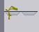
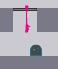
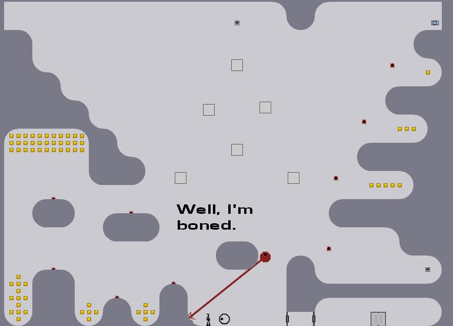
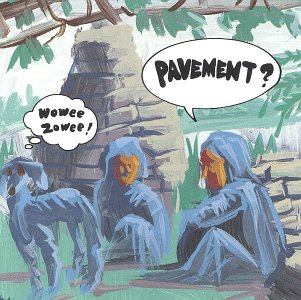
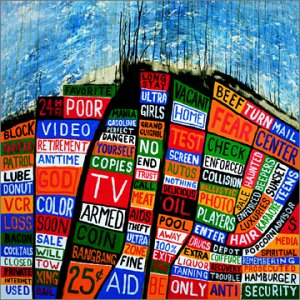
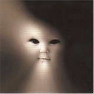
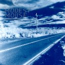
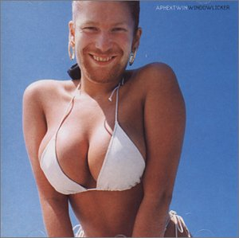
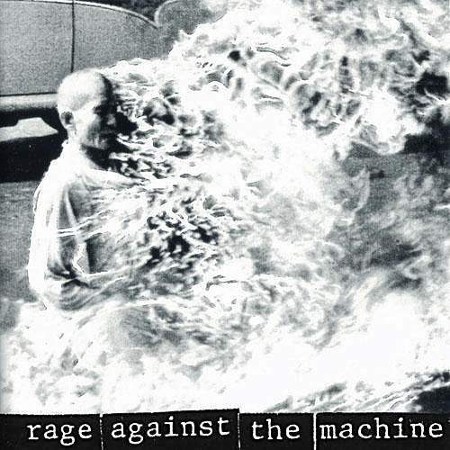

#130020 59 2006-01-05T22:35:26Z Rincewind SW Space, because it's also the continue button so I can get back to playing faster after I run into that stupid mine/floorchaser/drone/laser beam/chaingun bullet/gauss shot/missile/thwump/ground/time limit. I also don't have to reach over the Ctrl and Windows buttons.
Possible disadvantages:- Sometimes you're hitting Space so fast when you die that you continue before you realize what killed you.
- Space might be harder to push down than Shift, being bigger and having a stronger spring and all.
Um the shift of course! ^^ I have my hand shape right now. When I tried space (because of less buttons to press) it was uncomfortable and less controlled. But then when I came out of my Nhole to play Continuum again I practically strained my hand muscles. The keys are arrows, ctrl-shoot shift-boost tab-bomb, so it actually hurt. I guess up would work if you had a similar uncomfortable hand postion or you hit up with your middle finger which would be too hard for me

#130242 69 2006-01-06T21:34:53Z Rincewind SW 

I love it when half of your ragdoll goes through a one-way platform and sticks! ^^

<3

About half my screenshots should have this caption.

#130249 16 2006-01-06T21:49:00Z Rincewind SW Perry Bible Fellowship
LV sent me this link a while back.
PBF! It's just hilarious, the ideas for comics are just genius.
One of my top 5. The others include
Toothpaste For Dinner and
Dinosaur Comics, both aren't really obscure enough (although IMO Dinosaur Comics are obscure in their own right), but both are hilarious and notable despite big fanbases.
White Ninja is about the most commercial webcomic after Ctrl+Alt+Delete and Penny Arcade (for the record both of those suck). WNC is OK though.
#130581 18 2006-01-07T22:25:39Z Rincewind SW Toothpaste is plenty obscure. I just wanted a thread not about, you know, whether Penny Arcade or Megatokyo was better. Not a big fan of Dinosaur or Toothpaste myself, but hey, de gustibus non est disputandum. I sort of think of Toothpaste as the bastard child of Exploding Dog http://www.explodingdog.com/ and White Ninja.
Umm... have you ever READ any Toothpaste for Dinner? Some of the early ones are a bit average and pointless, but around 2003 there was a minor revolution and Drew now makes comics that are pretty satirical, sarcastic, and s... funny. It's by far my favourite webcomic. He does them about work, politics (not in a shallow way), and most of the time anything that annoys him that day, or so it seems!

#130584 12 2006-01-07T22:36:21Z Rincewind SW I have one of those... it's aimed at kids. It guesses about half of the realistic stuff I think of. Some of the questions are really stupid though. It works by this: The first question is: Is it an animal, vegetable, mineral, other, unknown? If you say "other" it asks "Is it flat?" then if you say No it says a set question. So in the end there are so many different paths and they've worked out all the paths and answered what it would most likely be and programmed that in. As for the random text, it's probably part of the path. Test it out a few times.
#130586 73 2006-01-07T22:41:30Z Rincewind SW Rincewind, just run through the laser drone!
I thought it had the thin red line on him when I posted it.

I probably would have died if I hadn't hit Print Screen. Anyway I made that one ages ago. Here's a better one.
#130775 22 2006-01-08T12:29:42Z Rincewind SW A poltergeist, swinging you around again, wore a moving, quiet pouting hat - harsh.
#130776 112 2006-01-08T13:05:33Z Rincewind SW Urban Dictionary defines the term "pwned" with pictures. And it's very hilarious, just click right from there. My favourite is this one.
And... there are ONEHUNDREDANDFIFTY!!! of these.
OWNED Attachment (lost): post-20-1136725533.jpg
#130818 251 2006-01-08T17:22:06Z Rincewind SW http://metanet.2.forumer.com/index.php?showuser=284
It's Maniac's Profile!
Here it's linked 
lol I was showing my friend, Maniac used to post on the NotPr0n forums, I recognised his avatar and name and the signature confirmed it. I haven't tried webriddler but level 76 NotPr0n. And a regular forummer.
EDIT: Wow automatic tagging for URLs. How l33t.
#130823 847 2006-01-08T17:40:03Z Rincewind SW Don't like the PS2 DS thingy. Too boring + clich. The bottom bit of text is cool. Cause Hell of Sand rules. In general in this forum the sigs are too big IMO. The LuminaFlare pic needs to be resized. XD 5/10?
Before you tell me how bad mine is I WILL improve it, since I'm new... um like whatever.
#130878 30 2006-01-08T21:17:18Z Rincewind SW Heh, I very rarely commit suicide... unless I'm trapped, Or have wasted a bit too much time. Normally if I want suicide I run into a mine. This must have pushed mines above zap drones! ^^
#130880 253 2006-01-08T21:32:59Z Rincewind SW Riiiight Kirby o_O
Mine was a frickin' picture /o\
Last text... was....
http://www.urbandictionary.com/images.php?imageid=45053 Aw I posted that in Funny pics.
still... there you go

#131166 292 2006-01-09T20:26:13Z Rincewind SW I'm Rincewind SW, Hi all. o/
This is gonna be quick because I for one don't read paragraphs of profile of someone I post in the same forum as on the internet.
My real name's Stephen, I'm 14, from England. I love music especially Radiohead. I don't do consoles, the internet is my gaming
and N is so far my favourite web-based game: well, you need the internet to download it at least ;P. But I prefer to do NotPr0n which sort of counts as a game I guess. :S Oh yeah I play the violin, and my favourite sport is badminton. Of course I love Discworld but I've only read about 1/3 of them. :< Any more would be too long, so that will remain your impression of me. :>
#131172 9 2006-01-09T20:39:31Z Rincewind SW Another minor problem: With .gifs apparently.
When I changed my avatar, I decided it's be easier just to upload the new one off my computer. I uploaded it and it didn't resize, it just told me it was too big. So I tried my backup but instead of changing it the avatar panel showed me a pictureof a smaller scale version of my old avatar - and my new one was 50x50 pixels (It's my current one ^.^). So I uploaded on Imageshack and it worked fine.
#131205 2 2006-01-09T21:51:18Z Rincewind SW Armageddon I'm pretty sure.
"Let's go melt some FACES!" (Easy)
#131218 12 2006-01-09T22:19:35Z Rincewind SW 5-0, popular choice it seems :> I actually completed the 10-19 column before 00-09 column BECAUSE OF THAT DAMN LEVEL I reckon I played it about... 300 times?
#131420 5 2006-01-10T17:13:43Z Rincewind SW RW, you've got a Radiohead avatar. Did you realise this?
Um yeah, of course.
 http://metanet.2.forumer.com/index.php?sho...ndpost&p=124712
http://metanet.2.forumer.com/index.php?sho...ndpost&p=124712#132133 859 2006-01-13T17:00:54Z Rincewind SW Why all the banners? Too much tbh. D: I mean, of course you're a frickin' N player. I like the Tetris though
In the end it's too long but I appreciate the achievements and maps included of course.
#132371 6 2006-01-14T18:02:26Z Rincewind SW Yeah but they're good. There's a link to the site at the bottom. I found N on
www.gprime.net - it was like a trial. Then I looked on the site and found the much better downloadable version. <3
#132372 4 2006-01-14T18:06:16Z Rincewind SW Fry eels, or forage, or eat your face for rice.
#132373 583 2006-01-14T18:08:42Z Rincewind SW Nice photoshopping skills.
no movement which I like, and I don't like the font tbh. 8.5/10 for the Photshopping!
#132374 114 2006-01-14T18:11:41Z Rincewind SW Arguably the randommest picture on my computer...
Filename: ENDT3HPROGRAMFFS!.jpg

#132710 32 2006-01-15T21:08:29Z Rincewind SW Server not found
Firefox can't find the server at
www.kaisha.cx.
* Check the address for typing errors such as
ww.example.com instead of
www.example.com
* If you are unable to load any pages, check your computer's network
connection.
* If your computer or network is protected by a firewall or proxy, make sure
that Firefox is permitted to access the Web.
Shame, it sounds good.
#132966 16 2006-01-16T18:51:22Z Rincewind SW Men in Black... 2? I think.
You're gonna need a bigger boat.
#133495 1033 2006-01-18T21:59:04Z Rincewind SW Granted, but you spend eternity lonely and unhappy and in a state of suicidal depression, so it's a shame you can't commit suicide.
I wish I could plug myself into an electric socket without getting electrocuted.
#133743 1039 2006-01-19T18:12:36Z Rincewind SW Granted, but you eventually go insane after seeing the perverted and idiotic thoughts that go through people's minds.
I wish that I could play bass.
#134071 268 2006-01-20T17:21:33Z Rincewind SW #134081 1049 2006-01-20T17:54:35Z Rincewind SW Granted, but the only thing you can think of is "I wish I could hit enter". And you just did.
I wish that I had longer fingers.
#134082 2 2006-01-20T17:56:46Z Rincewind SW My first Flash animation. It's annoying because it's crap.
Attachment (lost): post-6-1137779806.gif
#134323 1057 2006-01-21T13:55:17Z Rincewind SW Granted, but nothing stops your oesophagus getting ripped to shreds.
I wish that we had a fricking dishwasher.
#134335 271 2006-01-21T14:21:12Z Rincewind SW Lumina, I'd like to request you change your avatar. It's beyond distracting, and if you start posting a lot around here then it will prove a problem.
Was about to tell him about the fact that it was PURE OWNAGE.
#134360 1060 2006-01-21T17:10:53Z Rincewind SW Granted, but I fall into a lake full of jelly. Mmm.... Jelly.
I wish that I was really in a lake of jelly and had breathing equipment and I could tunnel out easily. *Sigh* I reckon I've probably eliminated the clichs there.
#134624 1069 2006-01-22T12:53:12Z Rincewind SW Granted, but they trap you inside your own house when they are delivered to your door. There are so many (you failed to say that you won't have the same one more than once) that it takes the rescuers 2 months to explode their way through to your house by which time you starve because you can't ration your food supplies.
I wish that I pass all my GCSEs with A*.
#134625 600 2006-01-22T12:56:10Z Rincewind SW Um like whatever. It's not exactly exciting. 5/10
#134626 276 2006-01-22T12:57:03Z Rincewind SW Pump d'bass says:
http://www.stupidstuff.org/main/warp.htm
Pump d'bass says:
Ignore first one
Pump d'bass says:
and
Pump d'bass says:
http://www.stupidstuff.org/main/simulator.htm
Hmm... MSN talk

#134628 20 2006-01-22T13:03:10Z Rincewind SW Yeah they're too big. But this is coming from Mr 800x600 pixel screen.
#134629 18 2006-01-22T13:07:21Z Rincewind SW Yup. The on'es I knew were adapted from Vin Diesel 'facts'
And they are sooooo funny.
The eternal conundrum "what happens when an unstoppable force meets an immovable object" was finally solved when Vin Diesel punched himself in the face.
Vin Diesel has two speeds: walk and kill.
When Vin Diesel jumps into a body of water, he doesn't get wet. The water gets Vin instead.
Crop circles are Vin's way of telling the world that sometimes corn needs to lie the f*** down.
rofl, they were all Chuck Norris facts first. Well, I'm not certain of this but I think it's probable tbh.

I mean I heard them all with Chuck Norris as the subject.
This is hilarious
http://www.chucknorris.com/html/kidslist.aspx#134633 11 2006-01-22T13:17:01Z Rincewind SW Floorguards are easy. Most of the time you can just jump over them. There's just one level, I forget the number, but it was great, you had to race the floor guard to the end of a tunnel, where there was a bubble sort of, jump over the floorguard, and race it back, and there were about 7 tunnels. It was hard but good.
But they're normally tame, I hate the zap drones that attack you more; you can hide in a notch in the wall but the drones have NO MERCY.
#135129 609 2006-01-23T20:16:49Z Rincewind SW Very bold. You should be a graphic designer or something if you can make stuff like that regularly and consistently.
10/10
#135132 1077 2006-01-23T20:20:15Z Rincewind SW Granted, but along with the numbers in the more blurred corners all that is there are random immature words such as "boobies" and "willy".
I wish I had the email address "poo@gmail.com"
#135137 912 2006-01-23T20:22:24Z Rincewind SW Not too long. Only one sig tag so I'm won over enough to give 7/10.
#135138 285 2006-01-23T20:23:17Z Rincewind SW The following message could not be delivered to all recipients:
Anyway it is worth it cause I get internet in my room
Um... the pros and cons of wifi?
#135155 24 2006-01-23T20:35:24Z Rincewind SW You know, there's a game, passed on from generation to generation, where people go through and add "in Chuck Norrises pants" to the end of songs in their music playlists.
For example,
"Everclear in Chuck Norrises pants"
"Fields of Despair in Chuck Norrises pants"
"The Comeback in Chuck Norrises pants""
"Disconnect the Dots in Chuck Norrises pants"
"Wash Away in Chuck Norrises pants"
"Salvation in Chuck Norrises pants"
"Mr. Brightside in Chuck Norrises pants"
"Waiting in Chuck Norrises pants"
"The Unstoppable in Chuck Norrises pants"
"The Way We Get By in Chuck Norrises pants"
"We haven't turned around in Chuck Norrises pants"
"A thousand trees in Chuck Norrises pants"
"Popstars in Chuck Norrises pants"
"Since you've been gone in Chuck Norrises pants"
"Apply some pressure in Chuck Norrises pants"
"Scar tissue in Chuck Norrises pants"
"All my people right here right now in Chuck Norrises pants"
"Barabarajagal in Chuck Norrises pants"
"Lock up your daughters in Chuck Norrises pants"
"Use it in Chuck Norrises pants"
"Your hand in mine in Chuck Norrises pants"
"Waiting in Chuck Norrises pants"
"All these things that I've done in Chuck Norrises pants"
"I feel you in Chuck Norrises pants"
"Brand new colony in Chuck Norrises pants"
"A punchup in a wedding in Chuck Norrises pants"
Try it yourself! Fun for the whole family. Unless you have Chuck Norris in it.
Woot for the last one.
I randomised an audio CD for this.
A Certain Romance in Chuck Norris' pants
I Only Eat Candy in Chuck Norris' pants (yeah really)
Scummy in Chuck Norris' pants
01 I'll Come Back in Chuck Norris' Pants
Mardy Bum in Chuck Norris' Pants
Bigger Boys and Stolen Sweethearts in Chuck Norris' Pants
SPACE INVADERS in Chuck Norris' Pants
Monsters In <strikethrough>The Parasol</strikethrough> Chuck Norris' Pants
Epro in Chuck Norris' Pants
Cut your hair in Chuck Norris' Pants
dancing shoes in Chuck Norris' Pants
From The Ritz To The Rubble in Chuck Norris' Pants
Myxomatosis. (Judge, Jury & Executioner in Chuck Norris' Pants.)
A Punchup at a Wedding in Chuck Norris' Pants. (No No No No No No No No.)
A Wolf at the Door. (It Girl. Rag Doll. Chuck Norris' Pants.)
We Suck Young Blood. (Your Time Is Up in Chuck Norris' Pants.)
I can't be bothered to do any more.
#135182 1079 2006-01-23T21:01:40Z Rincewind SW Granted but you get a fat ass as it is the comfiest thing known to man and you phisically cannot stop sitting on it. (Is the fat bum or the continuously sat-on chair worse?)
I wish I could eat anything regarded as a foodstuff with no unpleasant tastes or side effects. And no addictiveness or compulsion. Or eating everything at once etc. ^^
#135479 30 2006-01-24T18:07:50Z Rincewind SW Rincewind is a bit of an Arctic Monkeys fan then?
Um... yeah. I got the album today, but I'll just say I'm glad that I still have the old recordings.
#135481 1090 2006-01-24T18:12:41Z Rincewind SW Granted, but of course it is "Banned"
I wish that my school wasn't full of 'tards.
#135482 287 2006-01-24T18:14:19Z Rincewind SW <Jooly> wow
<Jooly> a bag

#135775 1108 2006-01-25T17:40:13Z Rincewind SW Granted but you have 2 use txt lngge and yeah that is really retarded
I wish I could pause time so that only the certain laws of nature that needed to apply applied. And no extra ones messed me up
EDIT.

Granted but you get sliced to pieces by a cheesegrater of doom and are alive as shreads of matter rotting slowly at the bottom of a vat of acid.
#135848 31 2006-01-25T21:32:20Z Rincewind SW That is rather amazing. I challenge someone to get a highscore with epileptic-fit-inducing backgrounds on.
#135849 10 2006-01-25T21:36:15Z Rincewind SW Wow. I'm just a 800x600er. Didn't know the difference. So, how does it differ? Why isn't it proportionate?
#136373 1139 2006-01-27T16:34:32Z Rincewind SW Granted but you have 2 use txt lngge and yeah that is really retarded
I wish I could pause time so that only the certain laws of nature that needed to apply applied. And no extra ones messed me up
EDIT.
Granted but you get sliced to pieces by a cheesegrater of doom and are alive as shreads of matter rotting slowly at the bottom of a vat of acid.
UM ffs can you not read my whole post or not :@
#136378 289 2006-01-27T16:40:10Z Rincewind SW http://metanet.2.forumer.com/metanet?showt...view=getnewpost
The link that is emailed to me that doesn't work pasted either... :<
#136464 614 2006-01-27T22:16:41Z Rincewind SW Nice ninja drawing! 9/10
#136750 1154 2006-01-28T19:47:53Z Rincewind SW Granted, but people who are not your fans hate you even more (/me boils up with rage!)
I wish that the tuba surpassed guitar as the main rock instrument <3 (how funny would that be)
#136752 3 2006-01-28T19:51:08Z Rincewind SW Within the first reply we realise how the thread will fail! WOO!
Ahahahahahahahaha.
#136774 1156 2006-01-28T21:18:10Z Rincewind SW Granted but you suffer an absolutely agonising death.
I wish that everybody still liked the new tuba-rock
#137020 1169 2006-01-29T11:15:22Z Rincewind SW Granted, and rather than "You get eaten" which is obviously your ambition, you are used in a world-record breaking attempt by some crazy guy who wants to smash the most melons with his head. He fails and was about to smash you, but he didn't and you are discarded at the bottom of a landfill site, where you spend your final days slowly rotting away.
I wish that I had inner peace.
#138249 1176 2006-02-01T16:49:44Z Rincewind SW Granted, but what you're doing now compared to the new thing, is pretty much the same as before. What you were doing before was boring in the first place.
#139006 14 2006-02-03T15:55:52Z Rincewind SW I'm Rincewind1. I didn't really realise about the names, or for that matter a LOT of things about the game...
1) The website should be banished to hell... it's AWFUL. Not FF friendly, and it's Flash :@
2) It's the buggiest game I've played on, anyone on it will know
3) The instructions on how to play are overly basic
Otherwise I love it!
#139073 22 2006-02-03T19:38:01Z Rincewind SW Any news on the alliance? (I was on IRC for about 30 mins, nothing happened o.O)
#139432 1202 2006-02-04T17:57:36Z Rincewind SW Granted but it means you succumb and become too much of a friggin nerd
I wish I could have some hot pie.
#139434 37 2006-02-04T18:00:34Z Rincewind SW I'll start playing again now. Rincewind1 - remember the name. (Rincewind2 and Rincewind3 in production ;p Well, if I tire of my present one.)
#140566 19 2006-02-07T17:12:53Z Rincewind SW I use my FACE to press Jump.
Nah, index on left shift only cause I'm 'ard. My thumb is constantly on the spacebar
#140664 545 2006-02-07T21:58:51Z Rincewind SW This is me, honest...
Attachment (lost): post-20-1139349531.png
#141752 1231 2006-02-10T16:16:12Z Rincewind SW Granted, I hate the tag
I wish I wasn't ill any more D:
#143460 3 2006-02-14T14:05:35Z Rincewind SW 9-year-olds play it and kill their own team... Stuff like that is annoying. The community is awful. Otherwise it's fun ^^
#144889 692 2006-02-17T15:18:51Z Rincewind SW Very obscure then

4/10 since you're probably the only person who knows what it is.
#144966 32 2006-02-17T18:02:38Z Rincewind SW It is the weekend!
I would celebrate now, but
The holiday ends.
:<
#145298 35 2006-02-18T13:52:53Z Rincewind SW tHIS IS HOW i SPEAK
wHEN i'VE BEEN IN DEBUG MODE
aND i AM LAZY...
#145838 25 2006-02-19T17:01:15Z Rincewind SW http://www.davidmear.com/n/poser.html
It's awesome
I would like to be the muckeh green ninja of course. The 2nd flavour you unlock. It's preset on N poser. Can I be looking at something in the sky please? I don't mind where you put me ^^
#145905 46 2006-02-19T21:07:01Z Rincewind SW Sure he can kick me in the head... if you give me a viking helmet...
that would rock.
#146725 4 2006-02-21T20:23:58Z Rincewind SW Argh but don't link to Runescape... and don't put that it links to it in the next line... kinda defies the point to be honest. Runescape has an awful community and repeptetive gameplay, imo. However I did like it enough to get to level 60. ^.^
#147091 7 2006-02-22T17:00:24Z Rincewind SW Ha ha ha. This makes you a fool. I tried Runescape once, then I found sleeping pills.
Quite probably does
especially after I reread that post...
Actually, reconsidering, I'd say that the community got worse by the day. It's repetitive but I did really like the variety of places/activities etc, until I hit about level 50 and was mining for money, and mining was maybe what put me off the game. It is awful.
#147094 740 2006-02-22T17:06:54Z Rincewind SW As far as the avatar alone goes it's nice. Bit dark but I guess that's the point. Oh, and I don't like the font too much
#147192 96 2006-02-22T21:44:56Z Rincewind SW I would like this lair in one of the top blocks. Please could you put my ninja in, with black headphones, muckeh green still, but pressing the play button in my lair. That would rawk. This is instead of the viking one down at the bottom.
Attachment (lost): post-7-1140644696.png
#147209 1044 2006-02-22T22:32:07Z Rincewind SW New sig! I made it myself!
That looks OK Ultima, 7/10. Nice blurry background.
#148432 35 2006-02-25T15:39:28Z Rincewind SW swd8rf45t776euib n
I stopped at 10 thwacks as I hit my nose on the spacebar >__<
#148436 130 2006-02-25T15:45:55Z Rincewind SW In 3 words,
emos should die
Anyway the city's getting on nicely. I think that it should be fully N Posered though... it's a bit inconsistent atm. Can someone get the text and my ninja in my lair please? (If he's too big for theplay button just raise the buttons a bit :S)
#148437 1086 2006-02-25T15:46:56Z Rincewind SW New one eh? Circlies

It looks better. 8/10
#148524 40 2006-02-25T19:03:06Z Rincewind SW gtfvbhnjmkl 7654vcxrv nbhnbyhu6y gb
I managed to "Restore Down" my firefox window.
I stopped cause my brains were smeared across the keys
#148783 23 2006-02-26T10:26:18Z Rincewind SW Wow, PBF and Cyanide and Happiness in one thread... <3
My 2 favourite Webcomics... after .
And a PBF...
And a Toothpaste...
And there we are.
#148785 1093 2006-02-26T10:27:24Z Rincewind SW Retro
Otherwise I hate it
I hate sig tags and what is with the eggs?! Too many of them, whatever they are...
4/10
#148787 9 2006-02-26T10:42:35Z Rincewind SW Well, I'm on 800x600 with my taskbar on the left edge of the screen, and I still get the time bar chopped off and I can't see the level name. If I set it to the next resolution up my screen is just too small on the square of glass... so 800x600, but N is still playable
#148795 762 2006-02-26T11:41:36Z Rincewind SW Oh my god a dog. 6/10 cause it's not a pug >.<
#148860 1096 2006-02-26T15:45:21Z Rincewind SW That does indeed look awesome. 9/10
#148869 147 2006-02-26T16:28:07Z Rincewind SW Where is the creator of this picture now? And will someone N-Poser the rest of the characters?
I just put my name above the lair, that's all. .png owns. I didn't put in Bobodahobo's new layer. .jpg
Attachment (lost): post-7-1140971327.png
#148871 769 2006-02-26T16:32:05Z Rincewind SW Ew, anime. 3/10.
#149313 788 2006-02-27T19:44:27Z Rincewind SW OMFG it plays Tetris, that's the coolest thing ever and I want to know how to do it...
<3<3
More than 10 out of 10
#149321 1107 2006-02-27T19:56:21Z Rincewind SW It's something personal about the design that I don't like. I'd say 7/10 but the clichd and recycled map plugs are... um.... clichd and recycled. 6/10
#149332 12 2006-02-27T20:18:01Z Rincewind SW #149714 1112 2006-02-28T17:10:34Z Rincewind SW 9/10... it is a furious gopher, what could be more apt. Also, another RH fan \o/
#149716 60 2006-02-28T17:13:14Z Rincewind SW A new concept... tactical thwacking... see if you can guess the word...
wes0-23w15t6yuh43676709 ... and at that point I realised that nobody would extract the word "spaghetti" from that mess, thus the end of tactical thwacking.
#149719 1247 2006-02-28T17:18:42Z Rincewind SW Granted, but while they are painting you enter the bathroom to do your busines,s only to find that a painter is lurking in the bath, and attacks you and... well, you can guess the rest I suppose.
I wish that whenever I asked anyone to shut up they would, and wouldn't inflict pain on me as a consequence.
#150766 1117 2006-03-02T16:43:00Z Rincewind SW I keep seeing Llamas in that picture

I quite like it though, when I look at it properly. The bunny and excessive text just lost you 3 marks though.
5/10
#150912 1123 2006-03-02T22:29:02Z Rincewind SW Pretty colours
I'd have one like that (except green of course) but it's kind of too proffesional for me. Blurs are easy
I can see a few things you did (selected areas using rectangle tool except an ellipse or something, and darkening them) but it'd be too much for me. Also I'd rather make my own than get someone else to. Anyway, 9.5/10.
#151264 1125 2006-03-03T22:05:28Z Rincewind SW Very vague, I like it. They look like 2 menacing... machines. 8/10.
Mine is updated to include a shameless plug for my map(s), only one at the time of writing. (Actually this post is another plug for it O_o.) And indeed my progress in NotPr0n. AND a link to my blog.
I used the lens flare to make it look like the ninja was flying from the sun, and it looks like a real photo taken in some sort of green-clouded apocalyptic wasteland.
#151572 294 2006-03-04T18:23:31Z Rincewind SW HOLY CRAP! This thread has been really buggered up! Is it just me?
$Hypnodrones#RincewindSW#Action#0000000000000000000000000000000000000000000000000OOOOOOOOOOOOOOOOO00000000000000000000000P0000000OOOOOOOOOOOOO00P00000000000000000000P0P0000N0000OOOOOOOOO00P0P0000N0000000000000P0P0P0000N0N0000OOOOO00P0P0P0000N0N000000000P0P0P0P0000N0N0N0000000P0P0P0P0000N0N0N0000000P0P0P0P0000N0N0N0N00000P0P0P0P0000N0N0N0N00000P0P0P0P0000N0N0N0N00000P0P0P0P0000N0N0N0N00000P0P0P0P0000N0N0N0N00000P0P0P0P0000N0N0N0N00000P0P0P0P0000N0N0N0N00000P0P0P0P0000N0N0N0N0000000P0P0P0000N0N0N0N0000000P0P0P0000N0N0N0N000000000P0P0000N0N0N00QQQQQ0000P0P0000N0N0N0000000000000P0000N0N00QQQQQQQQQ0000P0000N0N00000000000000000000N00QQQQQQQQQQQQQ0000000N00000000000000000000000QQQQQQQQQQQQQQQQQ0000000000000000000000000000000000000000000000000|5^35,62!1^84,84!1^84,108!1^84,132!1^84,156!1^84,180!1^84,204!1^84,228!1^84,252!1^84,276!1^84,300!1^84,324!1^84,348!1^84,372!1^84,396!1^84,420!1^84,444!1^84,468!1^84,492!1^84,516!1^108,516!1^132,516!1^156,516!1^180,516!1^204,516!1^228,516!1^252,516!1^276,516!1^300,516!1^324,516!1^348,516!1^372,516!1^396,516!1^420,516!1^444,516!1^468,516!1^492,516!1^516,516!1^540,516!1^564,516!1^588,516!1^612,516!1^636,516!1^660,516!1^684,516!1^708,516!1^708,492!1^708,468!1^708,444!1^708,420!1^708,396!1^708,372!1^708,348!1^708,324!1^708,300!1^708,276!1^708,252!1^708,228!1^708,204!1^708,180!1^708,156!1^708,132!1^708,108!1^708,84!1^684,84!1^660,84!1^636,84!1^612,84!1^588,84!1^564,84!1^540,84!1^516,84!1^492,84!1^468,84!1^444,84!1^420,84!1^396,84!1^372,84!1^348,84!1^324,84!1^300,84!1^276,84!1^252,84!1^228,84!1^204,84!1^180,84!1^156,84!1^108,84!1^132,132!1^132,156!1^132,180!1^132,204!1^132,228!1^132,252!1^132,276!1^132,300!1^132,324!1^132,348!1^132,372!1^132,396!1^132,420!1^132,444!1^132,468!1^156,468!1^180,468!1^204,468!1^228,468!1^252,468!1^276,468!1^300,468!1^324,468!1^348,468!1^372,468!1^396,468!1^420,468!1^444,468!1^468,468!1^492,468!1^516,468!1^540,468!1^564,468!1^588,468!1^612,468!1^636,468!1^660,468!1^660,444!1^660,420!1^660,396!1^660,372!1^660,348!1^660,324!1^660,300!1^660,276!1^660,252!1^660,228!1^660,204!1^660,180!1^660,156!1^660,132!1^156,132!1^180,132!1^204,132!1^228,132!1^252,132!1^276,132!1^300,132!1^324,132!1^348,132!1^372,132!1^396,132!1^420,132!1^444,132!1^468,132!1^492,132!1^516,132!1^540,132!1^564,132!1^588,132!1^612,132!1^636,132!1^180,180!1^180,204!1^180,228!1^180,252!1^180,276!1^180,300!1^180,324!1^180,348!1^180,372!1^180,396!1^180,420!1^204,420!1^228,420!1^252,420!1^276,420!1^300,420!1^324,420!1^348,420!1^396,420!1^372,420!1^420,420!1^444,420!1^468,420!1^492,420!1^516,420!1^540,420!1^564,420!1^588,420!1^612,420!1^612,396!1^612,372!1^612,348!1^612,324!1^612,300!1^612,276!1^612,252!1^612,228!1^612,204!1^612,180!1^588,180!1^564,180!1^540,180!1^516,180!1^492,180!1^468,180!1^444,180!1^420,180!1^396,180!1^372,180!1^348,180!1^324,180!1^300,180!1^276,180!1^252,180!1^228,180!1^204,180!1^228,228!1^228,252!1^228,276!1^228,300!1^228,324!1^228,348!1^228,372!1^252,372!1^276,372!1^300,372!1^324,372!1^348,372!1^372,372!1^396,372!1^420,372!1^444,372!1^468,372!1^492,372!1^516,372!1^540,372!1^564,372!1^564,348!1^564,324!1^564,300!1^564,276!1^564,252!1^564,228!1^540,228!1^516,228!1^492,228!1^468,228!1^444,228!1^420,228!1^396,228!1^372,228!1^348,228!1^324,228!1^300,228!1^276,228!1^252,228!6^444,348,3,0,0,0!6^540,276,3,0,0,3!6^324,252,3,0,0,2!6^276,348,3,0,0,0!9^396,300,1,0,21,15,1,0,-1!9^408,300,1,0,22,15,1,0,-1!9^384,300,1,0,20,15,1,0,-1!0^396,300!0^396,300!7^636,516,3!7^660,516,3!7^684,516,3!7^540,420,3!7^564,420,3!7^588,420,3!7^252,228,1!7^276,228,1!7^300,228,1!7^156,132,1!7^180,132,1!7^204,132,1!9^372,300,1,0,8,7,1,0,0!9^360,300,1,0,9,7,1,0,0!9^348,300,1,0,10,7,1,0,0!9^420,300,1,0,24,19,1,0,-1!9^432,300,1,0,25,19,1,0,-1!9^444,300,1,0,26,19,1,0,-1!7^36,84,3!11^36,60,396,300!9^636,504,1,0,26,21,0,0,-1!9^660,504,1,0,27,21,0,0,-1!9^684,504,1,0,28,21,0,0,-1!6^252,108,3,0,0,2!6^636,108,3,0,0,2!6^684,300,3,0,0,3!6^684,492,3,0,0,3!6^468,492,3,0,0,0!6^180,492,3,0,0,0!6^108,348,3,0,0,1!6^108,132,3,0,0,1!6^564,444,3,0,0,0!6^252,444,3,0,0,0!6^156,324,3,0,0,1!6^204,156,3,0,0,2!6^468,156,3,0,0,2!6^636,156,3,0,0,3!9^132,96,1,0,5,3,0,0,0!9^156,96,1,0,6,3,0,0,0!9^108,96,1,0,4,3,0,0,0!1^132,84!1^324,NaN!7^108,108,3!7^132,108,3!7^156,108,3!1^324,NaN!6^492,564,3,1,0,0!6^756,108,3,1,0,3!6^36,396,3,1,0,1!6^492,60,3,1,0,2!6^468,204,3,0,0,2!6^204,324,3,0,0,1!6^372,396,3,0,0,0!6^588,252,3,0,0,NaN!0^396,300!1^348,300!1^372,300!1^396,300!1^420,300!1^444,300#
Yay, that was an accidental advert for my level.
EDIT: Except, this version actually works
http://numa.notdot.net/map/31944#151576 1133 2006-03-04T18:41:07Z Rincewind SW 9/10. Nice zombie thingy.
#151578 606 2006-03-04T18:43:54Z Rincewind SW #151850 617 2006-03-05T10:38:25Z Rincewind SW Rincewind- you look a lot like a girl I know...
Umm. That probably wasn't very flattering...
But you do. I'm not saying you look like a gender you don't, at all, but you still look like her...
Right. I'll just shut up now...
I get this sort of thing sometimes
it's the hair.
The other day this was my MSN avatar and the person I was talking to had just added me and was guessing who I was. It went 2 girls, then "Donkey Boy" (Don't know who that was), then they guessed me.
Attachment (lost): post-20-1141555105.jpg
#151851 299 2006-03-05T10:40:45Z Rincewind SW i dont remember saying this
why not get an irc chat or something
cmon try to break the h scroll post stuff!!!
FUNFUNFUN!!
Sadly, nothing to paste
#151948 99 2006-03-05T17:08:21Z Rincewind SW I know this is a resurrection, and I'm not sure if it's against forum rules, but is anyone beating me?
#151967 102 2006-03-05T18:16:16Z Rincewind SW Er... what? How would we know if we're beating you or not?
Also, even though it's not against the rules, it's not really encouraged to post in threads that haven't been posted in more than a year.
Sorry.
Anyway, it says my level in my sig, although yes, I should have said.
#151982 15 2006-03-05T19:31:38Z Rincewind SW A godlike grammar teacher? Sounds fun. So I am kind of getting some sort of ideas of what will happen, I won't share.
You need to updae the first post. Cause I'm in
(assuming you got my PM of course).
#152029 105 2006-03-05T21:32:35Z Rincewind SW -6 is awfully hard. It's one I had to PM someone on IRC about.
Once you have rearranged the zip file, it's a case of spot the difference...
74 is... uhm... is it the "deaf" one? I found that alright, 2 puzzles to it really.
#152037 3 2006-03-05T21:56:44Z Rincewind SW On Sunday, March 05, 2006 you asked the following question;
Why do people always ask why the entire aeroplane isn't made of the same stuff the black box is made from?! It's obvious!
The following answer has just been sent to you;
Because most people are stupid. And all their experience of plane mechanics come from watching in CNN ticker.
I think this might be something I'll be addicted to, for say, 3 nights. Thanks!
EDIT: God this is fun.
This is the last time I'm asking this, but it's important to me and i've had no success thus far; I have a literary idea I'd like to make manifest using a weird concept blog, but to work and evolve it needs a fair amount of readers. i know I love the idea since it is truly a weird perspective, and I know it has potential because all who've read it (mostly strangers) have subscribed to the feed to see how it evolves... would you mind reading it from the bottom up (It's chronological) and send me ideas to kosherforpassover@ureach.com? it's located at
http://berlepsch.blogspot.com and i'd appreciate the help...
Cheeky bastard. OK, now go on MY blogspot on
http://rincewindsw.blogspot.net ... I bet you didn't!
#152342 306 2006-03-06T20:00:51Z Rincewind SW Quote
Originally posted by Messy
I never said 'it's' instead of its though o_O
Well, I probably have ;p but not in this thread..so ha!
Even with all those tags
pretagged Ctrl+V!
#152388 12 2006-03-06T21:40:57Z Rincewind SW How many drops are there in a glass of water?
I answered:
Find the radius of the bottom of the glass and square it then multiply it by pi. Then find the radius of the top of the glass and square it and multiply it by pi. Find the mean of these 2 values. Find the height of the glass and multiply it by the mean you just found, and your answer should be in(whatever units you used, I suggest millimetres), cubed. So mm^3. Got this? Good.
Now you need a way to find the volume of a drop... very hard imo since it''s no set value. Assume it is 1mm^3. Now simply divide the total volume by how big your drop is., so the volume in mm^3 is about the amount of drops in the glass.
On Monday, March 06, 2006 you asked the following question;
Who looooooves orange soda?
(If you answer correctly... you are so awesome!)
The following answer has just been sent to you;
Kel loves orange soda.
He do he do he DOO HOOOO!
#152389 309 2006-03-06T21:42:43Z Rincewind SW Find the radius of the bottom of the glass and square it then multiply it by pi. Then find the radius of the top of the glass and square it and multiply it by pi. Find the mean of these 2 values. Find the height of the glass and multiply it by the mean you just found, and your answer should be in(whatever units you used, I suggest millimetres), cubed. So mm^3. Got this? Good.
Now you need a way to find the volume of a drop... very hard imo since it''s no set value. Assume it is 1mm^3. Now simply divide the total volume by how big your drop is., so the volume in mm^3 is about the amount of drops in the glass.
Um... I just posted it in off-topic... under questionswap.com.
#152610 301 2006-03-07T17:22:55Z Rincewind SW Ninjas in the lairs are still the old-school ones...
#152611 807 2006-03-07T17:24:46Z Rincewind SW Genius. If it was me I'd get a better sound to be honest, or maybe a soundboard
but I'll still give it 8/10, mainly because of the lack of graphics.
#152612 312 2006-03-07T17:25:45Z Rincewind SW #152657 1287 2006-03-07T21:55:17Z Rincewind SW Tileset's nothing special imo. The level was a bit iffy, I know it's meant to be awkward. The chain-gun drone is just too misplaced, it's too hard for me to do without losing patience. Anyway, rated both.
Please rate my only map.
http://numa.notdot.net/map/31944 #152659 811 2006-03-07T21:56:56Z Rincewind SW pretty cool tbh 8/10
#152870 316 2006-03-08T18:09:50Z Rincewind SW 03/07/06 21:27 - You have been defeated by xFLx JadeShark24 (13473)
Um, hello, Sega Megadrive? Dreamcast is practically a baby.
Sega because it pioneered games like Sonic. Another example would be... um... ... ... OK, but Sonic is a good enough reason, and I still love that first game.
#152874 24 2006-03-08T18:16:09Z Rincewind SW Why not advertise it via your sig (and chop down some of the useless text while you're at it
)
#152883 1293 2006-03-08T18:36:36Z Rincewind SW too many enemies
too many bounce blocks
but nice idea. Keep tryin.
That's the whole point

Makes it tricky to move and dodge everything simulatneously, and a challenge.

(Ignore this post, I have no new maps).
#153164 11 2006-03-09T17:25:46Z Rincewind SW Paranoid Android by Radiohead - the 2nd "Movement" just gives me speed. If I could drive that song would make me dangerous.
I'd say mostly fast things, or stuff that can be fairly quiet and slow, but not really uninteresting or ambient... a perfect example is Sigur Rs' '( )' album.
#153168 316 2006-03-09T18:09:27Z Rincewind SW I did my bit and added xdude rox and Super Shadow. I'd do someone else's lair but it'd be too complicated

Argh, it's like this with emails: half the time I forget the attachment
Attachment (lost): post-7-1141927858.png
#153775 33 2006-03-11T17:43:45Z Rincewind SW haha... no, people do actually listen to that sort of music. Bands that try to appeal to those pop fans who think they like rock/metal or whatever. Sigh.
#153814 10 2006-03-11T20:47:53Z Rincewind SW HOLY CRAP you can see the big fat one - Milly - but it's blocking the camera.
MOOOVE!!
The black one was pecking with its neck before. It was all, like, whooooooosh.
#153821 337 2006-03-11T21:07:28Z Rincewind SW Trogdor is ninjablind? I can see it fine
#154080 1145 2006-03-12T16:01:31Z Rincewind SW I like the picture, but the text is too big/annoying. 6/10
#154149 20 2006-03-12T20:23:40Z Rincewind SW It's separate, although it is inspired by that picture (sort of) and there will be new picture(s) to be produced according to your purchases. The one we've been updating is now just for fun.
#154151 1147 2006-03-12T20:32:53Z Rincewind SW Some nice linkage there, and a great picture. 9/10
#154413 53 2006-03-13T22:14:02Z Rincewind SW Heh, that'd pretty much epitomise about 75% of the answers I received. Maybe it's just that I lack inspiration for questions, I prefer to answer. There used to be a "answer another question" button... where'd it go?
I've only asked about 80 questions, I only have 50 or so archived on Gmail. I preferred the emails...
#154680 61 2006-03-14T19:45:10Z Rincewind SW Oh my god. RANKING SYSTEM!!
TOP5
ArcticAed 31 24 7 7.429
CaptainSpectacular 16 17 10 7.300
jackthehat 40 40 7 7.286
Trogdor007 21 24 8 7.250
nevermore 26 27 8 7.250
I'll just get answering and watch myself climb up.
This is fantastic, they turned it into a trivia game with a big difference. Some people might start asking trivia, is the only problem. But hey, there is Wikipedia. Anyway, I hope that this'll make my answers improve. I hope I can be more imaginative question-wise, however.
#154685 1152 2006-03-14T20:07:53Z Rincewind SW hehe, actually it's 'clich'. But it's easy to overuse the word when describing signatures, as the maps, quotes, and even the pictures, are often clich.
Anyway...
Nice little pic you got there, simple, but OK. The pose is quite spot-on.
7/10 cause it doesn't have a great background
#154716 64 2006-03-14T22:01:45Z Rincewind SW Mangosta 47 56 9 8.444
RincewindSW 38 38 6 8.000
I'm 2nd, woo. I'm Metanet leader, as well! But I only have 6 ratings, so I doubt it'll be long-lived.
#155012 71 2006-03-15T18:55:00Z Rincewind SW #155058 827 2006-03-15T22:06:53Z Rincewind SW Aubergine Blaster?
9/10.
#155604 1169 2006-03-18T14:34:05Z Rincewind SW Ew, too wide. Just put your favourite on or put them in a .swf. Please??
Still, a good 7/10.
#155605 830 2006-03-18T14:37:26Z Rincewind SW It looks like an aubergine blaster he's holding.
http://upload.wikimedia.org/wikipedia/comm...x-Aubergine.jpg
Surely an aubergine imo...
8/10 cause you didn't know it was an aubergine
#155670 836 2006-03-18T20:30:29Z Rincewind SW Pixelated and unreal-looking. Sorry. 4/10.
#155671 1172 2006-03-18T20:33:40Z Rincewind SW 10/10
Nothing more to be said.
W00t thanks
It's OK, don't know if I preferred the old one
7/10
#155866 838 2006-03-19T16:00:52Z Rincewind SW n cube!
It's rather 1337. 9/10.
#156491 845 2006-03-21T20:17:38Z Rincewind SW N poser job... still, it's OK. 6/10
#156493 1181 2006-03-21T20:19:58Z Rincewind SW User posted image _ What is the blue text all about o_O
3/10.
#157048 380 2006-03-23T16:29:02Z Rincewind SW I believe that I have the font, but I just copy each letter in Paint, and recolour it. Anyway, I think this is the font...
Attachment (lost): post-7-1143131342.ttf
#157050 850 2006-03-23T16:32:34Z Rincewind SW Um... 5/10
#157058 1193 2006-03-23T16:41:00Z Rincewind SW No... don't like, since it comes off some generic website and more to the point looks ugly. The quotes are lame as well
4/10
#157430 83 2006-03-24T15:53:56Z Rincewind SW Q. In't Tetris brilliant?!
United Kingdom
A. Yes, it really is. Particularly blue_tetris.
But beyond that, it's one of very few games that is still universally played. It doesn't wear out, it doesn't get old, no one cares about the graphics, it's 100% play experience. Its attraction is just... just great.
United States
This answer was given a rating of 9
First response that was most DEFINITELY Metanet-based.
#157432 27 2006-03-24T15:56:03Z Rincewind SW I'm guessing 4 people isn't enough

#157563 93 2006-03-24T22:29:50Z Rincewind SW That means that they aren't registered
unregistereds aren't votable.
#157770 418 2006-03-25T14:58:54Z Rincewind SW Ew... nice work, but I don't see the point of it. If you were just leaving the ninjas, you did a bad job of it, since you left me (and probably others) out, and there are still quite a few lairs there. Take away all the lairs and stuff and it's a good job
... sorry I'm just trying to be positive
I honestly don't see the point. We'll keep the other picture with the lairs.
#157772 1198 2006-03-25T15:11:35Z Rincewind SW Nice picture
nothing to say about it that doesn't state the obvious o_O 9.5/10
#157777 5 2006-03-25T15:24:34Z Rincewind SW Wow...I personally didn't find it that challenging...
Ditto
Took about 5 mins, hardest part was jumping off the wall onto the slanting floor. I always knew how to wall jump without hugging the wall...

#157779 10 2006-03-25T15:26:42Z Rincewind SW People will stop to read the first post, and actually think about it maybe. 
#157824 422 2006-03-25T18:54:51Z Rincewind SW I made the font myself as Wedgie sort of suggested. Anyway, if it's not a truck, please correst me
EDIT: Removed the old chasethebase. Also I changed Coffe
Efreak's name, that was bugging me
Attachment (lost): post-7-1143323434.png
#157907 427 2006-03-25T22:33:16Z Rincewind SW [I don't think it looks like a go-kart tbh, I have the GBA game and... sorry, it doesn't look like it [ts:smiley=5]]
ANYWAY... here we go, I'm in ass-kickin' mode.
Edit: Sorry, it's fully smoothed out now.
Attachment (lost): post-7-1143326639.png
#158097 432 2006-03-26T10:33:16Z Rincewind SW 

Attachment (lost): post-7-1143369196.png
#158105 434 2006-03-26T11:27:58Z Rincewind SW 
Attachment (lost): post-7-1143372478.png
#158111 436 2006-03-26T12:07:52Z Rincewind SW 
Attachment (lost): post-7-1143374872.png
#158115 438 2006-03-26T12:13:57Z Rincewind SW Hold on a minute, by now you and your dronecar would be cut to ribbons by my champagne bottle. I don't think you thought that one through.
#158187 444 2006-03-26T18:16:14Z Rincewind SW Spoilsport... come on this is a bit of fun. Scroll down a bit if you don't want to see it o_O
#158495 453 2006-03-27T17:32:18Z Rincewind SW Can someone rename me to Lighty and my lair and get rid of that line that is on my thump? Rincewind SW why'd you put it there?
Oops! Um..

MSPaint can be a bit annoying sometimes, I wasn't looking at the rest of the picture, only me and LF. I think I missed by quite a bit there
#158498 1201 2006-03-27T17:45:09Z Rincewind SW 10/10 definitely, it's amazing.
#158519 7 2006-03-27T19:13:58Z Rincewind SW Will we? Why don't we show the link to the first war's start?
#158521 35 2006-03-27T19:15:30Z Rincewind SW Can I please tell y'all that I will be in France for Sunday until Friday. Sorry.
#158939 319 2006-03-28T18:53:43Z Rincewind SW #159412 30 2006-03-29T19:52:35Z Rincewind SW 2 apparently...
Luminaflare says:
im against you so a nuclear powerplant right outside your base and no defenses
Luminaflare says:
WTF is that below you
I know arks can't fly. I know that sharks, they don't have wings. says:
Defense is that pasta stuff at the bottom
I know arks can't fly. I know that sharks, they don't have wings. says:
Made of polystfuylite
Luminaflare says:
ok then
I know arks can't fly. I know that sharks, they don't have wings. says:
The other stuff [red] secretes gases to make attacks basically disintegrate when they hit
Luminaflare says:
kk
I know arks can't fly. I know that sharks, they don't have wings. says:
It is a compound of an incredibly unreactive metal and helium. Sounds impossible but it means it instantly reacts with any metallic object
I know arks can't fly. I know that sharks, they don't have wings. says:
(I'd be crap at writing sci-fi)
(I am Arks can't Fly. Didn't bother typing it out again.)
I will leave the rest of the stuff a mystery.
Attachment (lost): post-24-1143661955.png
#159421 105 2006-03-29T20:04:59Z Rincewind SW @Solarion, I remember that level, and I reckon that that could be a pretty valid screendump
Nice and fast, very challenging, and fun.
@Andrelius: Side-scrolling N
#159425 38 2006-03-29T20:08:52Z Rincewind SW Double post
sorry. Anyway I can't log in tomorrow till Friday to put it clearer.
#159427 869 2006-03-29T20:10:35Z Rincewind SW Mah, you're not a pimp for god's sake. Pink Panther is OK but then you messed it up. 4/10
#159428 324 2006-03-29T20:11:21Z Rincewind SW Luminaflare says:
im against you so a nuclear powerplant right outside your base and no defenses
Luminaflare says:
WTF is that below you
I know arks can't fly. I know that sharks, they don't have wings. says:
Defense is that pasta stuff at the bottom
I know arks can't fly. I know that sharks, they don't have wings. says:
Made of polystfuylite
Luminaflare says:
ok then
I know arks can't fly. I know that sharks, they don't have wings. says:
The other stuff secretes gases to make attacks basically disintegrate when they hit
Luminaflare says:
kk
I know arks can't fly. I know that sharks, they don't have wings. says:
It is a compound of an incredibly unreactive metal and helium. Sounds impossible but it means it instantly reacts with any metallic object
I know arks can't fly. I know that sharks, they don't have wings. says:
(I'd be crap at writing sci-fi)
#159432 1213 2006-03-29T20:13:05Z Rincewind SW An improvement! 8/10
#159433 17 2006-03-29T20:13:56Z Rincewind SW This life won't be long as you die of thirst after 2 or 3 days of living in your own filth.
#159768 6 2006-03-30T15:31:44Z Rincewind SW I am going to enter this because it is a great idea. I am surprised that it doesn't already exist.
Anyway if I enter it'd have to be simplistic as I am not great at graphics yet; I will practice though.
You should enter a bigger version of your sig, madnick, because that looks really awesome too (more so than that entry at least.
#159779 329 2006-03-30T16:11:44Z Rincewind SW #159780 1217 2006-03-30T16:12:37Z Rincewind SW Just quotes. And too many, at that.
3/10
#159781 5 2006-03-30T16:14:04Z Rincewind SW where I spent
(Awesome thread <3)
#159783 34 2006-03-30T16:17:38Z Rincewind SW It would be nice for you guys to give pacificness on what your weapons do, so no one gets confused.
I would if I knew what the hell pacificness meant.
I will do that in an edit to my first post; later since I don't have time now.
#159785 107 2006-03-30T16:20:13Z Rincewind SW As far as graphics are concrened, it's a pretty bad Paint job
Please don't save as .jpg, rather as the sexy .png. No quality loss and less memory as well, as a matter of fact
And also separate frames better, I agree.
#160191 45 2006-03-31T16:01:01Z Rincewind SW Pacific, be more pacific on what your weapons do, like I did.
Oh, you mean
specific.
The Pacific is an ocean ffs.
#160251 59 2006-03-31T19:08:08Z Rincewind SW Can I be neutral for the first war? Don't attack me yet, on holiday on Sunday...
#160296 1470 2006-03-31T21:38:52Z Rincewind SW Corridor of Love is brand new and wants your feedback.
I rated Publicity Stunt (Nice work
)
#160472 11 2006-04-01T09:20:06Z Rincewind SW or coolin' or
Yeah you probably should've double checked using Google
#160479 1474 2006-04-01T09:43:24Z Rincewind SW Nobody rated
Corridor of Love.
I rated the 3 latest maps
Oh and my 1st map still hasn't got 5 ratings yet. Please also direct your attention
here as well.
#160558 703 2006-04-01T16:47:25Z Rincewind SW I think that that is what would happen if you played N on a rollercoaster
quite funny pic
#160560 39 2006-04-01T16:48:24Z Rincewind SW Well if it's starting I guess I could... sleep for 6 days. Or so.
#160599 5 2006-04-01T19:39:00Z Rincewind SW None in real life, I only saw my friends at about 1.30pm lol.
On the internet though...
ZOMBOCOM.
Read the Comments, they're funny.
#160603 41 2006-04-01T19:46:26Z Rincewind SW Fine, it didn't start. See you on Friday/Saturday.
#162814 77 2006-04-07T12:33:37Z Rincewind SW MAYbe the odd spelling mistake is a vague clue.
"I have brought along my laptop. I always feel the need to look stuff up on it; I have an Encarta program as well as wi-fi. *Turns screen to front of class showing
this webpage* I have had it for 3 years. ... [insert boring stuff about how I got it]."
(Off-Topic (sorta) - h Masturbation month is celebrated in May.
)
#162815 335 2006-04-07T12:38:10Z Rincewind SW # Masturbation month is celebrated in May
Hehe.
#162816 885 2006-04-07T12:43:46Z Rincewind SW Cool, but looks a bit Google Images
5/10
#162858 236 2006-04-07T17:31:28Z Rincewind SW I will name this something around 00-2. Like "Revenge of 00-2" but that just sounds pretentious and unimaginative. Any suggestions? (because yeah, I am unimaginative.)
Anyway, it's basically 00-2 without thwumps, and with a few extra mines. It's very simple but I like it enough to give it a chance!
Attachment (lost): post-10-1144431439.txt
#163072 888 2006-04-08T11:13:57Z Rincewind SW Tileset...
4/10
#163073 1233 2006-04-08T11:15:20Z Rincewind SW Does the job well, 8/10. Perfect size.
#163074 339 2006-04-08T11:18:31Z Rincewind SW #163142 343 2006-04-08T16:08:33Z Rincewind SW 00000000002140F111111110000000000?150?11111111000000000311A0>1111111100000000C11100?1111111100000003111503111111111000000?111M00F111111111000000N1114H00F111111110000000B1111L00211111110000000021111@0>1111111000000000J111500?1111110000000000>1500?1111111000000000001D0B111111110000000000?1140211111110000000000C15000J111111000000000G1E000C111111100000000311500>1111111100000000>11@0031111111100000000021400F111111110000000000J11402J11111100000000000>11@00211111000000000000>11L00F11110000000000000211H00>11100000000000000F11403111000000000000000F1A0111100?@00000000000?100C1110G;<H00000000G3150311110F:=I0000000?11M00C111100>A0000000311I00?111110000000000K11A0031111110000000000B1A03111111110000000000>140F11111111|5^756,350!7^756,372,3!12^732,318!12^732,372!12^678,372!12^684,450!12^660,462!12^612,432!12^612,486!12^540,498!12^510,468!12^474,420!12^546,420!12^492,366!12^396,378!12^420,294!12^342,330!12^342,408!12^300,330!12^252,348!12^252,426!12^276,402!12^204,396!12^198,324!12^180,276!12^132,300!12^132,348!12^174,372!12^84,318!12^36,324!12^60,378!0^732,330!0^720,372!0^690,372!0^684,438!0^660,450!0^612,444!0^612,474!0^540,486!0^522,468!0^486,420!0^534,420!0^420,306!0^396,366!0^354,336!0^252,360!0^252,414!0^276,390!0^204,384!0^186,324!0^168,282!0^132,312!7^48,372,3!7^48,324,1!2^24,348,50,0!11^300,276,48,348!12^672,72!12^672,120!12^624,120!12^624,72!0^612,60!0^684,60!0^684,132!0^612,132!0^696,144!0^696,48!0^600,48!0^600,144!0^708,96!0^588,96!0^648,36!0^648,156!12^660,132!12^636,132!12^684,108!12^684,84!12^660,60!12^636,60!12^612,84!12^612,108!10^348,108!10^60,204!0^666,318!0^594,402!0^510,318!0^486,294!0^462,258!0^414,222!0^366,258!0^270,270!0^246,234!0^222,210!0^198,186!0^90,234!0^66,270!0^714,258!10^588,276!2^540,348,1,-1!0^342,396!0^288,330
A map, I forget which
#163272 1236 2006-04-09T08:57:00Z Rincewind SW Can't remember if I've already rated, but I do like the sig (if not the avatar which I'm not rating here anyway...)
8.5/10
#163273 81 2006-04-09T08:58:10Z Rincewind SW Canada's flag includes a maple leaf, sir.
#163274 238 2006-04-09T09:00:11Z Rincewind SW Ta very much, I may add some more gold as a challenge, and put it up on Numa
Also nice title for it, may have to steal it (I'll say that you said it first
)
edit: I tried Glittering caves but I can't complete it, because I can't get up from the bottom cave. If you've playtested it (I'm seriously guessing that you have
) then it's a nice map and I would submit it... maybe you'll want a second opinion...
#163576 103 2006-04-10T09:27:37Z Rincewind SW Q. if a building was falling down and i was on the top of it, and then i jumped of just before it hit the ground, would i survive?
bear in mind the building is quite high.
United Kingdom
A. Interesting!
I think that in fact, as the building collapsed, you ought to fall at the same speed. However since you are both travelling you would be bound to lose your footing and therefore not be able to jump. Also the force bringing you down could be too great for you to jump. I appreciate that this avoids the question, so I'll say: No. Even IF the force was balanced enough to allow you to jump off something falling quite fast then I assume that you would fall on the lethal rubble, dust, and general sharp objects below.
United Kingdom
I just found out that Gangsta-Skorp asked, and I answered! This must've been weeks ago!
#163577 894 2006-04-10T09:30:06Z Rincewind SW Open up the psd file again and respell phoenix. I can barely read it anyway, too blurry
7/10
#163578 89 2006-04-10T09:32:11Z Rincewind SW Hello Viper!
Sir, I thought that I was banned for 3 posts after MY post. I am very sorry
#163586 1242 2006-04-10T10:27:18Z Rincewind SW I seriously recommend a change in the text... what is going on there?? Also the text at the top, I must say the same for it.
5/10
#163589 1544 2006-04-10T10:39:59Z Rincewind SW Corridor of Love still only has 2 votes
And my new one,
00-2: De-Thwumped is only 5 minutes old
I rated a few recently posted maps.
#163708 16 2006-04-10T19:53:04Z Rincewind SW Oh my god it has Easter Eggs. Even when I've told myself how bad this game is I've returned... addictive or what??
#163913 96 2006-04-11T14:09:53Z Rincewind SW Sir, I think Lumina should learn the difference between spelling and grammar. Sir, can you tell me why we are stuck in here and why we muxt be blown up in May if we fail to get out? Do you have a motive?
#164129 346 2006-04-12T08:32:29Z Rincewind SW _______
\\ // / -^--\ |
|||| / /\_____/ /
{\ ______{ } /
{_}{\{\{\{| \=@____/
<{_{-{-{-{-| ====---- >>>
{ }{/{/{/{|______ _/=@_____
{/ { } \
|||| \ \______ \
// \\ \ _^_\ |
\______/#164355 351 2006-04-13T08:51:28Z Rincewind SW #164356 103 2006-04-13T08:53:34Z Rincewind SW Sir, please will you tell me how thick the concrete on the outside of this room? Also, please will you tell me if there is enough air in here to last us a month?
#164438 353 2006-04-13T19:14:27Z Rincewind SW Big Daddy Kasumi attacked -WoV- Wibble for 13 damage.
Big Daddy Kasumi has killed -WoV- Wibble!
#164652 109 2006-04-14T10:08:54Z Rincewind SW Sir, please may you tell us the contents of this entire room? Please may you tell me if Billy has anything to help us escape, or whether he knew anything to help us escape?
#165028 24 2006-04-15T12:13:48Z Rincewind SW I simply must do my top 10 Radiohead now.
10: Myxomatosis: Whuu whuu whuu whuu whuu wom whuu whuu whuu wuuu wuu! whuu whuu whuu whuu whuu wu whu whuu whuu whuu wu - etc. That is my interpretation of the fantastic fuzzy bass.
9: Kid A: This is the RH song I dance to most. At first I thought it was too weird but now I appreciate why the vocoder was used, it really works. Makes it soung vague and dreamy, like the keyboards.
8: Karma Police: A great melody and lots of excellent polyphony going on behind it.
7: Pyramid Song: Yes, it is beautiful.
6: Just: An awesome solo. Probably Radiohead's best song without any keyboards in it.
5: There There: The percussion is well used and the vocals at the finale are sufficiently scary. Great, simple arpeggio solo at the end too.
4: Talk Show Host: Best B-Side I've ever heard. A really simple riff and more spooky vocals.
3: 2+2=5: More rocking guitars. The second part always blows me away. It has a subtle keyboard right at the end... which is why Just won that title!
2: Paranoid Android: Just kickass. The movements are all different but the 2nd is just amazing. Jonny's 2 solos are perfection.
1: Idioteque: The Laptop-produced percussion rolls around your head as you listen to Thom Yorke's driving vocals "Ice Age coming Ice Age coming", "This is really happening", Global Warming is on its way. It's an excellent song, even better live.
By the way, has anyone heard Mark Ronson's cover of Just? It's rather good. Not quite better than the original of course, but it uses the french horns (and the rest of the brass) well.
Doing that list was so hard! How do you compare Just and the Pyramid Song??
Another thing; I thought Gagging Order was fairly average. Sorry...
Finally: What almost made the list - Morning Bell, Morning Bell/Amnesiac, You And Whose Army?, Life in a Glasshouse, A Wolf at the Door, A Punchup at a Wedding, Climbing Up the Walls, No Surprises, Kinetic, The Amazing Sounds of Orgy... I'll stop now.
#165349 32 2006-04-16T11:00:22Z Rincewind SW OK Computer and Kid A are my two favourites. I couldn't pick between them, they're so very different. OK Computer is more accessible and every track could be brilliant when isolated, whereas with Kid A it's the whole journey, how it all fits together, one or two tracks wouldn't work when isolated.
Next I'd place Amnesiac and the Bends (both ace albums, but just simply not as good as Kid A and OK C), shortly followed by Hail To The Thief, which is undeservedly underrated IMO. Then Pablo Honey, which is pretty poor but with some good songs in nonetheless. And, coming later this year is LP7 which could be freaking brilliant. It seems they've finally perfected some fan classics too, which will most likely be on it - such as Nude and Arpeggi.
1. Kid A
2. Hail To The Thief
3/4. Amnesiac/OK Computer
5. The Bends
6. Pablo Honey (sucks)
I did at first like Creep but then "grew out of it" or something. I progressed to The Bends which was my favourite album for a while, and later started downloading some of the experimental later music (post-OK Computer) and it grew on me, so I got Kid A, Amnesiac, and Hail to the Thief. I even have the Hail to the Thief jumper.
Amnesiac is hard to compare with OK Computer but I feel that OK Computer had a few poor tracks (Airbag, Exit Music (a bit, I only really like the end of Exit Music)). Incidentally I discovered that if you listen to the intro of Airbag through one speaker only (can't remember if it's left or right) you lose all the nasty, crashing guitars that I don't particularky like. I think it may be a cello you hear. I think that Amnesiac is more consistent and has all great songs, but no real standouts. Most of RH's songs are consistently amazing anyway.
#165350 358 2006-04-16T11:03:00Z Rincewind SW $Commandment#Jiggerjaw12358#DDA#0000000000000000000000000000000000000000000000000000000000000000000000000000000000000000000000000000000000000000000000000000000000000000000000000000000000000000000000000000000000000000000000000000000000000000000000000000000000000000000000000000000000000000000000000000000000000000000000000000000000000000000000B@000000000000000000000>D000000000000000000000024000000000000000000000000000000000000000000000000?@000?10000000000000000CA000C1000000000000000350000210000000000000GK500000060000000000000FI000000000000@00000000000D00000Q0000D00000000000240000000001400000000000B00000000015000000000000000000000E0000000000?15000000000A0000000000C5000000000800000000003500000000000000000000K50000000000000000000001000000000|5^348,276!6^756,300,0,1,0,3!6^36,300,0,1,0,1!6^396,564,0,1,0,0!6^756,564,1,1,0,2!6^36,564,1,1,0,3!6^36,36,1,1,0,0!6^756,36,1,1,0,1!10^36,36!10^756,564!6^396,36,1,0,2,0!6^396,564,1,0,2,2!3^36,564!3^756,36!6^756,300,0,0,1,3!6^36,300,0,0,1,1!9^402,312,0,1,16,12,0,-1,0!9^444,408,1,1,18,17,0,0,-1!9^516,336,1,0,21,14,0,0,-1!8^720,324,2!9^528,324,1,1,21,12,0,0,-1!9^594,414,1,1,24,16,0,0,-1!8^647,424,0!9^564,396,0,1,23,16,0,0,0!0^564,396!8^636,575,1!7^612,408,0!9^618,426,1,1,26,15,0,0,-1!9^636,408,1,0,26,17,0,0,-1!2^636,540,0,1!0^636,540!0^636,540!0^636,540!0^636,540!0^636,540!2^636,396,-0.707106781186547,-0.707106781186547!0^636,396!0^636,396!0^636,396!0^636,396!0^636,396!0^636,396!0^636,396!0^636,396!0^636,396!0^636,396!0^636,396!0^636,396!0^636,396!0^636,396!0^636,396!0^636,396!0^636,396!0^636,396!0^636,396!0^636,396!0^636,396!0^636,396!0^636,396!0^636,396!0^636,396!0^636,396!9^636,396,1,1,19,17,0,0,-1!9^60,564,0,1,2,23,0,0,0!2^132,564,0,-1!0^132,564!0^132,564!2^126,498,1,0!0^126,498!0^126,498!0^126,498!1^264,552!1^264,552!1^264,552!1^264,552!1^264,552!0^264,552!0^264,552!0^264,552!0^264,552!0^264,552!8^431,565,0!9^414,564,0,1,16,22,0,-1,0!9^120,312,1,1,18,21,0,0,-1!2^348,564,0.707106781186547,-0.707106781186547!1^636,216!1^636,216!1^636,216!1^636,216!1^636,216!0^636,216!0^636,216!0^636,216!0^636,216!0^636,216!7^516,276,3!9^636,192,1,1,25,15,0,0,-1!8^551,565,0!8^660,204,0!9^528,408,0,1,20,21,0,-1,0!2^516,492,-1,0!9^516,492,1,1,20,21,0,0,-1!9^396,516,1,1,16,21,0,0,0!9^396,516,1,1,14,23,0,0,-1!0^396,516!0^396,516!0^396,516!0^396,516!2^324,564,0,1!9^516,492,1,1,17,20,0,0,-1!0^516,492!0^516,492!0^516,492!0^516,492!0^516,492!0^516,492!9^324,564,0,1,10,23,0,-1,0!8^246,570,1!9^216,84,1,1,8,4,0,0,0!9^204,108,0,1,8,4,0,0,0!7^72,156,3!8^24,132,2!7^108,156,3!7^144,156,3!7^180,156,3!9^120,132,0,0,4,5,0,0,0!9^210,132,0,1,8,5,0,-1,0!0^210,132!0^210,132!0^210,132!0^210,132!9^444,294,1,1,18,12,0,0,-1!0^444,294!0^444,294!0^444,294!0^444,294!2^612,348,-0.707106781186547,-0.707106781186547!9^612,348,0,1,18,10,0,0,0!9^612,348,1,1,19,14,0,0,-1!9^612,348,1,1,20,14,0,0,-1!0^612,348!0^612,348!0^612,348!0^612,348!0^612,348!0^612,348!0^612,348!0^612,348!0^612,348!0^612,348!0^612,348!7^552,288,1!0^552,294!7^612,348,3!7^648,348,3!7^684,348,3!8^767,329,0!9^36,132,0,1,22,16,0,-1,0!9^36,132,1,1,22,16,0,0,0!7^720,348,3!0^720,342!9^612,324,0,1,25,13,0,-1,0!9^612,324,1,1,31,13,0,0,-1!9^636,324,0,1,26,13,0,-1,0!9^636,324,1,1,30,13,0,0,-1!9^666,324,0,1,27,13,0,-1,0!2^744,300,-1,0!2^612,300,-1,0!9^36,132,1,1,26,18,0,0,0!9^480,372,0,1,20,15,0,-1,0!0^480,372!0^480,372!0^480,372!0^480,372!0^480,372!0^480,372!0^480,372!0^480,372!9^678,108,0,1,28,4,0,0,0!9^654,108,0,1,27,4,0,0,0!9^630,108,0,1,26,4,0,0,0!9^606,108,0,1,25,4,0,0,0!9^582,108,0,1,24,4,0,0,0!9^564,108,0,1,23,4,0,0,0!7^12,252,0!2^36,540,0,1!8^36,575,1!9^36,528,1,1,1,23,0,0,-1!0^36,528!0^36,528!9^36,276,1,1,1,1,0,0,0!2^36,360,0,1!0^36,360!0^36,360!0^36,360!9^36,228,1,1,1,11,0,0,-1!7^36,156,3!8^30,156,2!7^36,252,3!9^36,252,0,1,29,5,0,0,0!7^444,120,3!9^444,96,0,1,19,4,0,-1,0!9^444,96,1,1,18,5,0,0,-1!11^444,96,36,564!12^348,258!12^372,276!12^420,294!12^330,276!12^438,414!12^456,390!12^120,300!12^102,312!12^102,384!12^102,456!12^132,360!12^132,432!12^102,528!12^132,504!12^54,552!12^54,480!12^54,408!12^54,336!12^54,264!12^54,222!12^54,198!12^54,174!12^360,408!12^330,420!12^300,438!12^330,384!12^360,372!12^396,360!12^300,396!12^270,414!12^270,450!12^378,402!12^432,390!12^132,468!12^132,396!12^132,324!12^102,348!12^102,420!12^102,492!12^54,516!12^54,444!12^54,372!12^54,300!12^90,552!12^156,552!12^192,552!12^228,552!12^180,474!12^168,534!12^384,552!12^264,516!12^648,564!12^648,528!12^648,492!12^618,564!12^618,528!12^618,492!12^288,492!12^336,522!12^306,528!12^318,480!12^348,474!12^618,456!12^648,456!12^552,552!12^432,552!12^546,432!12^36,120!12^192,120!12^690,354!12^666,372!12^540,450!12^540,528!12^534,498!12^534,474!12^444,474!12^468,474!12^492,474!12^510,426!12^498,450!12^216,66!12^192,84!12^168,90!12^144,96!12^120,102!12^60,114!12^78,84!12^96,54!12^222,444!12^216,408!12^216,372!12^216,336!12^210,300!12^210,264!12^210,222!12^204,192!12^258,384!12^258,342!12^258,300!12^252,252!12^246,198!12^636,234!12^660,192!12^564,90!12^600,90!12^642,90!12^684,90!12^492,198!12^510,168!12^540,192!12^264,54!12^564,174!12^594,186!12^612,210!12^726,234!12^732,264!12^720,204!12^264,162!12^540,144!12^564,132!12^300,174!12^330,192!12^354,156!12^378,180!12^384,240!12^360,216!12^432,228!12^348,138!12^528,126!12^504,126!12^480,132!12^378,138!12^324,144!12^288,60!12^384,84!12^360,78!12^336,72!12^312,66!12^240,54!12^408,96#
#165351 119 2006-04-16T11:04:44Z Rincewind SW Sir, I much prefer Troggy's brown one.
#165353 1249 2006-04-16T11:10:12Z Rincewind SW Sorry but I think everyone who cares have seen all those quotes by now. Except the top one, which failed to make me laugh. 3/10
#165411 516 2006-04-16T14:55:54Z Rincewind SW It's funny cause it's true, Wedgie. Oh well, it should be pinned in order to get as many n00bs as possible in it.
#165412 35 2006-04-16T15:03:21Z Rincewind SW You think Exit Music is a poor track? The mind boggles In my opinion OK Computer is just consistently brilliant tracks, whereas with Kid A and Amnesiac you're getting more variation but it's all part of the journey of the albums.
I think Kid A and Amnesiac are a consistent level of greatness! Not as consistent songs.
I do like the end of Exit Music, where the keyboard (I think) comes in and Thom sings "And you can laugh..." up till the end, which is the most effective bit in the song - We hope that you choke. But the beginning is too long imo, and very depressing

That was all I meant by saying that. Also The Tourist isn't a great track for me.
http://www.greenplastic.com/lyrics/exitmusic.php
Another link?? This is cool.
Ownage.#165413 1251 2006-04-16T15:04:17Z Rincewind SW I did.
Yours is OK, lots going on which is good. 8/10.
#165415 361 2006-04-16T15:05:38Z Rincewind SW #165759 42 2006-04-17T15:11:11Z Rincewind SW I would just like to add the 'we are the daughters of sinners' lyric from one of the Radiohead songs from Amnesiac as a great, well, lyric. That and 'little baby's eyes' from the end of 'I will' and 'THE RAINDROPS' from the end of Sail to the Moon, for pure insanity.
It's Sit Down Stand Up, not Sail to the Moon. Insane is a good word to describe that bit.
I am quite shocked that I forgot about Everything in its Right Place in my Top 10. That song sounds great in the bath, funnily enough. It already sounds underwatery. It's a beautiful song, it would fit in the top 10 somewhere.
I think if I did songs over 10 minutes long it would be full of Sigur Rs songs, I don't know anything longer! I would struggle to find 10 for that matter. Infact, if I did top 10 Sigur Rs songs would anyone care?
#165768 122 2006-04-17T15:58:28Z Rincewind SW Sir, may I get some paper and a pen from the closet, so I can make a star chart, please? I think it would help us all
By the way, I have 6 stars in total.
#165776 22 2006-04-17T16:10:38Z Rincewind SW So? At least he didn't start a new one.
(btw I'm on quite a lot now. Quite sad. Rincewind SW in the game.)
#165781 3 2006-04-17T16:13:41Z Rincewind SW Modding ability? I guess that's on multiplayer, I have too much lag to play multiplayer. Single player is much better for me. It's good because the Soldats have so much AI! (Except once or twice when they can't jump up slopes, or if you try playing on CTF_training2...) Yes, I love this game muchly. Up with N as one of the best freeware games ever.
#165831 47 2006-04-17T18:19:12Z Rincewind SW Only 10:17 /o\ on CD I have a song about 13:09 or so.
#166224 56 2006-04-18T19:01:06Z Rincewind SW One of MY favourite Franz songs was Shopping for Blood... I liked the bit where it went from 2 keyboard/guitar hits, drum fill, 2 notes, drum fill... and faded into bass... I think it went like this, not heard the song in a while!
#166230 6 2006-04-18T19:09:18Z Rincewind SW I am very stuck on 88-4 and 96... 4 I think. The one with a big loop full of drones. I hate it. I'm actually doing better than I expected on MTI though.
Well done cheesegod, good luck with the rest of N. I see you have highscores; I prefer to play the game than repeat a level countless times @_@ and I also would find highscores harder. I thought the secret was OK but got bored quickly.
#166232 1260 2006-04-18T19:10:36Z Rincewind SW It's all, like, WHOOSH. 9/10
EDIT: Beaten by coffeefreak.
Whose I have rated. Where is the delete post button... ?
#166233 896 2006-04-18T19:13:29Z Rincewind SW It is indeed phi, which is like pi but not as well known. Maybe photoshop it up, or even Paint it up... 6/10
#166234 6 2006-04-18T19:16:03Z Rincewind SW I would say Reaper Man or Hogfather. But then again there are so many good ones. It depends what aspect you analyse. I've not read them all though, so that is quite limited
#166236 131 2006-04-18T19:19:52Z Rincewind SW Sir, that'd be Spongebob Squarepants. I will attach my chart later, because I wanted to post the answer as fast as possible
#166257 21 2006-04-18T20:07:38Z Rincewind SW Awesome, I laughed out loud at that scene when I first saw it. Indiana Jones is awesome like that
#166748 140 2006-04-19T21:05:04Z Rincewind SW So I have a total of 11, I think that merits a hint. Please may you whisper it to me, sir?
#166752 31 2006-04-19T21:11:48Z Rincewind SW B&T??? I think this has gone far enough, rofl!
#166753 1267 2006-04-19T21:13:10Z Rincewind SW Haha, free ads for anyone but yourself.
Make one that says "Utter mediocrity" and link to my maps please...
#167150 29 2006-04-20T16:39:45Z Rincewind SW What insect is like an octopus that lives in small dry holes?
The Friday 13th Hole
#167151 364 2006-04-20T16:40:42Z Rincewind SW #167188 146 2006-04-20T18:42:57Z Rincewind SW Here is your star chart, Professor. I was mistaken before: in fact I had 13 stars. However I did know that I had more than 10.
Sir, please may you tell us more about the dark chocolate delight you told us about earlier?
They are 3 words that rhyme. I don't understand...
Attachment (lost): post-24-1145558577.png
#167201 33 2006-04-20T19:12:45Z Rincewind SW What sends your particles to South Kyoto if you hit the letters A -> W -> E -> S -> O -> M - > E?
I forgot to put an answer!!! #167519 149 2006-04-21T16:56:42Z Rincewind SW Sir, that was another neglected question I see. The missing ns are all over the place now, what can they mean?
OOC: I'll update the chart every so often, it's just a bit pointless updating for every star.
#167520 7 2006-04-21T17:02:38Z Rincewind SW I am considering becoming a member because there is so much stuff to do. I like how you can set targets, do the work you need to achieve the targets (not that they aren't fun, most of the time) and beat them. The money management side of things is spot-on, I really loved trading and trying to barter for lower/higher prices! People are so unpredictable. If you think about it it's a very tactical game. You can even Alt+Tab half the time when you play - I am doing right now...
#167553 151 2006-04-21T19:14:40Z Rincewind SW That is OK Sir. I asked if you could please tell us more about your dark chocolate delight?
#167555 12 2006-04-21T19:17:53Z Rincewind SW Aw, the bots get boring??
Oh well, I'm still having fun now. I won't ever register though, not enough going for it.
#167570 26 2006-04-21T21:09:23Z Rincewind SW I've actually been stuck at 96-4 for longer, but that's because it took me a while to plough through the 80s. I assume that MTI will have claimed more of my free time by the time I'm over with it, assuming I am EVER over with it.
Yes it's true, N is so addictive. No other game has made me want to complete it so badly.

Off-topic: Nice sig Blue_tetris (the red bit). I almost called
this map Corridor of Death, but I thought of 1984, and after some head-smacking for even
considering naming a map Corridor of Death, I renamed it much more competently.
#167571 40 2006-04-21T21:11:22Z Rincewind SW Where the hell is my exit with pausing, fading, and ending functions??
Dopey, Sleepy, Doc, Sneezy, Grumpy, Rudolph, and Mr Tickle
#167572 368 2006-04-21T21:13:03Z Rincewind SW #167762 47 2006-04-22T16:16:21Z Rincewind SW What did George Bush list as the first 5 prime numbers?
No, there are only 406.
#167779 14 2006-04-22T16:53:13Z Rincewind SW BOOGIE MAN <3 Of course my 2nd weapon is a chainsaw, if I get a Predator Mode, it's joy, and even if not sometimes I love a good chainsaw killing spree.
#167787 242 2006-04-22T17:12:36Z Rincewind SW It's simple to get all the doors at once, and even so you don't need them. But it's a nice concept, I'd work at the doors and make it a bit harder (maybe) and it's done. Good work.
#167790 372 2006-04-22T17:19:25Z Rincewind SW 000000000000100000000000000000GGOOO100000000GG0000000FF100100000000FF000000GGG10010000000GGG000000FFFQ0010000000FFF000000000O001000000000000000B50010010000002E0000000C40000010000003D00000000000100100000000000GO00000010010000O000000I6OOKKKK10010000NOKKKK0H7QQJJJJ10010000NQJJJJ0FQ00000010010000Q0000000000000000010000000000000211000100100003110000?@061010100100000610100>D0020001Q01000000500000B@000000001000000000000>A0H0001O01000000H00000000I0001001000000I00000000HH000001000000HH0000000II001001000000II0000000HHHO1001000000HHHO00000IIIQ1001000000IIIQ0000000OO100100000OO000000000006P0010000006P00000000N00P0010000N00P00000000N00QQQ10000N00QQQ11111118000010000N800001111111111<0:00000QQQQ011111111111800000000000|5^36,564!9^750,480,1,0,31,19,1,0,-1!9^750,480,1,0,31,19,1,0,0!9^750,480,1,0,30,19,1,0,0!9^750,480,1,0,30,19,1,0,-1!9^756,564,1,0,31,13,1,0,0!9^756,564,1,0,31,13,1,0,-1!11^36,300,36,300!9^756,564,1,0,30,13,1,0,-1!9^204,258,1,1,8,10,0,0,-1!9^348,258,1,1,14,10,0,0,-1!9^516,258,1,1,21,10,0,0,-1!9^144,258,1,1,6,10,0,0,-1!9^144,258,1,1,5,10,0,0,-1!9^516,258,1,0,7,6,1,0,-1!9^348,258,1,0,8,6,1,0,-1!9^204,258,1,0,8,7,1,0,0!9^144,258,1,0,7,7,1,0,0#
#168304 157 2006-04-25T17:36:32Z Rincewind SW Brown, like, dark chocolate delight... I can't make sense of it! Does anybody else have any ideas?
#168306 51 2006-04-25T17:39:31Z Rincewind SW If the months' names were prefixed by colours of the rainbow in order, what would the 6th in the list be?
No
#168312 44 2006-04-25T17:56:19Z Rincewind SW 94, stuck on Back and Forth and of course MTI! But still it's the top vote on there!
#168315 64 2006-04-25T18:02:05Z Rincewind SW Blur, The Eels and The Verve are pretty big. Bigger than the songs imo. Maybe not so much in America, not sure. Meh, it's hard to figure out what qualifies for that anyway
#168320 374 2006-04-25T18:19:22Z Rincewind SW 175:0|0|17895424|17895697|17895697|17895697|17895697|17895697|89510161|89478485|89478485|22369621|17895697|17895697|17895697|17895697|17895697|17895697|17895697|17895697|17895697|17895697|17895697|17895697|17895697|1
#168321 15 2006-04-25T18:21:15Z Rincewind SW When I first saw the graphics and saw all the complex things, I knew I never was going to play that.
Complex?
Mostly it's not too complex, there is a lot of stuff involved but I'd never describe it as complex.
#168642 162 2006-04-26T16:47:14Z Rincewind SW Help! Viper, is it that we're getting invaded?
We're in this together: I do riddles! I can help figure it out... whatever it is...
#169180 56 2006-04-28T09:00:09Z Rincewind SW What's fun to fill your stomach full of?
Yes, but only once
#169205 379 2006-04-28T12:53:43Z Rincewind SW #170495 18 2006-05-01T15:39:29Z Rincewind SW Well I was GONNA enter but I kept screwing up. Mah... is it worth starting over?
#170496 59 2006-05-01T15:43:27Z Rincewind SW What is the entirity of your brain's memory currently stored in?
#170501 171 2006-05-01T15:54:26Z Rincewind SW The original twix was called a raider in Germany and France, as well as some other parts of Europe.
The original KitKat, however...
The traditional four finger version of this chocolate bar was originally launched in September 1935 in the UK as Rowntree's Chocolate Crisp (price: 2d). The two finger version was launched May 15, 1936. Rowntree's Chocolate Crisp was renamed Kit Kat Chocolate Crisp in 1937, and subsequently just Kit Kat after World War II.
The KitKat is now a Nestle product.
Mmm... twix. I'm not going to magically produce any chocolate out of the air for you though Professor, sorry.
#170513 742 2006-05-01T16:54:40Z Rincewind SW I'm too cool for Bebo _
#170514 388 2006-05-01T16:56:05Z Rincewind SW $A Distinctive Therapy#formica#Race#NNNNNNNNNNNNNNNNNNNNNNNNNNCNNNN1111NNNNNNNNNNNNNNEN>NN900BNNNNNC500>1NNCP>0000H0NNNNNN500001NN90000006@NNNN11H0?906NN00000>87ANNNN0FI0>870NN000000FI0NNNN00000FI0NN00>@00000CNNN0000000?N>0000000001NNN0000000C>00000000001CNN0000000B0000000P00021CN0000000N0000000D000021C0000000C1140000B40000FI00000031NNB4000NBL0H00GOH00GK1BNNNB40NNNB01NN1NB0?1BNNNNNNB0NNNN?1NNNNN0NNNNNNNNNN0NNNNCBNNCNN0NNNNNNNNNN0CNNN1NNC5>N0NNNNNNNNNN0ENNNNNC500>0NNNNNNCCNN0PNNNNN500000NNNNNCMI>N0PC11NN000000CCNCNE000>0150BNN000000QQJ1NA00000E00NNN000000000BN000000000NNN000000000NN000000000>NN0000@0000>10000000000>N0000PP0000>???00000000>0N@0PP00000NNN?LOOOH0000ND00A0000GNNNNNNNNB4000CB40000031NNNNNNNNNBLOK1NBLOOOK1BNNNNNNNNNNNNNNNNNNNNNBN|5^420,168!0^204,132!12^216,150!12^114,240!12^144,210!0^132,246!0^150,252!0^156,234!0^138,228!12^180,528!12^144,492!12^144,456!0^144,474!7^60,510,0!7^60,534,0!0^132,534!0^156,522!9^144,516,0,1,4,22,0,0,0!9^144,516,1,0,5,23,1,0,-1!7^60,486,0!12^402,432!12^420,468!0^410,450!12^648,354!12^534,456!12^264,198!8^372,276,2!7^360,276,2!12^114,120!0^336,372!12^600,408!12^696,432!0^588,528!0^552,492!0^552,468!0^564,516!0^648,384!8^648,444,1!9^138,90,0,0,20,6,1,-1,0!9^720,468,0,0,21,6,1,-1,0!12^672,312!0^588,240!12^576,174!0^684,336!0^660,336!12^570,222!10^564,78!0^564,240!9^540,228,0,0,22,6,1,-1,0!0^570,192!0^552,204!11^288,180,564,156!9^144,516,0,0,19,6,1,-1,0!0^150,540!12^360,330#
#170577 61 2006-05-01T19:57:33Z Rincewind SW At that point that was probably true mcp
What was the first meal you ate using a knife and fork, as a small child?
They farm the humans in pod thingies and use them for energy, but they allow the humans to live out simulated lives in this computer program...
#170583 391 2006-05-01T20:03:49Z Rincewind SW Must've been an image...

#170590 2 2006-05-01T20:20:38Z Rincewind SW Um... sorry, but to me it just looks like you hit the vertical wall with a splat. Going too fast.
#170600 28 2006-05-01T20:44:08Z Rincewind SW Need a free MMORPG with tactics, good money management, and less repetetivity than Runescape.
OK, I also used to play Continuum quite a lot, (Trench Wars) but I got rather bored if there weren't any good games going on. I loved things like Gatez, Dodgeball, etc. Even stuff like Trivia and Acro was awesome
Just had to get stuff hosted. I checked a few freeware list sites but to no avail. For example...
I must recommend
Acid Play for a great big list of games!
#170606 20 2006-05-01T20:50:04Z Rincewind SW 1 of a Kind
by Placebo
#170986 4 2006-05-02T18:26:16Z Rincewind SW haha, it all happened too fast for me... most of my deaths on that level look like that to me.
#170992 179 2006-05-02T18:42:16Z Rincewind SW Professor, here's some dark chocolate delight as my show and tell. I'll let you have it if you can let me go. Now see you.
OK, I would have done this ages ago but...
a) I'd already used up my show and tell.
b) I can't just produce things out of nowhere.
c) Even if I did say this, you would say "No you don't, Rincewind".
imo was too simple for its own good. Anyone else got any RPGs like this a-comin' up?
#170994 6 2006-05-02T18:48:02Z Rincewind SW Hahaha cheesegod. 1,2 and 5 are definitely... dodgy... but 3 and 4 only are if you look at them. Come on cheesegod, use your eyes... unless maybe you're under about 10.
#171001 23 2006-05-02T19:27:45Z Rincewind SW Numb
by Portishead
#171002 2 2006-05-02T19:31:44Z Rincewind SW So not a blatant ad for your unrated map?? Aw...
... 
#171008 71 2006-05-02T19:55:10Z Rincewind SW Oh really, where was that?
Mr T.
#171010 37 2006-05-02T20:02:52Z Rincewind SW ^ Banned for introducing jonny_faneca to the highscores therefore knocking out several 20ths.
#171012 8 2006-05-02T20:06:34Z Rincewind SW I don't know the other 2 logos! I guess one is Netscape, maybe the other is Opera.
IE is just hilarious. WHEEEEE!! Every time I see that logo now I'm going to laugh.
#171534 30 2006-05-03T20:02:35Z Rincewind SW Eat It
by Weird Al Yankovic
#171538 79 2006-05-03T20:05:19Z Rincewind SW ^ Banned for not being a Pastafarian.
Another edit, sorry, I'm heading for such a banning here
^ Unbanned for having Hex in his Danasoft sig, "Out of Cheese Error!" Hopefully one day they will make Hex get that temperemental mouse out. Hex just RULES.
#171542 81 2006-05-03T20:12:21Z Rincewind SW ^ Banned for ignorance (you have answers.com)
#171543 74 2006-05-03T20:13:17Z Rincewind SW How old did Bilbo Baggins turn at the beginning of Lord of the Rings?
ARGH
#171544 182 2006-05-03T20:22:55Z Rincewind SW What the hell. That is just retarded.
#171574 32 2006-05-03T20:44:35Z Rincewind SW The Sutcliffe Catering Song
by Pavement
#171576 76 2006-05-03T20:45:50Z Rincewind SW What is a drink for disillusioned people with bad tastes in music?
The Flying Spaghetti Monster
#171580 184 2006-05-03T20:48:39Z Rincewind SW I say we just overpower him and make a run for it. All for one and one for all. Let the fists fly. Are you picking up a chair?? - oh yeah, good idea...
#173099 87 2006-05-07T10:26:28Z Rincewind SW What is a Latin phrase that I can't be bothered to Google for?
A man who eats hummous all day long.
#173100 157 2006-05-07T10:33:14Z Rincewind SW Banned for having no clue whatsoever who Robin Hood is therefore making the most dumbfounding mistake I've seen in a long while.
#173101 398 2006-05-07T10:35:02Z Rincewind SW 1I2J111MFI0JQI0FQQQMB111@00B1E00000000000000021P00F11000000000000000?1A00?1A003H0GD0GD00000>1H002100>1111111111A00011@001D001A0000FEI100001I003110?100GH000?1@000100?1150F10B111@0N1P00?100B1100010N111P0N1P00N1@00F1P0310N111P0N1A00B150001A0J10>111P0>1000N100031000100111A001000>1H0F1100?1@0B110001400011I0B140N1A0>110031E0001500>1A0N100011H0B1P00K1000010021@001150N1A0021000G10001A0?1100N1000010C11100?100N0000N1000G10>111@0N100N0210N1H00B1L0FM1A0N140>4000>1E00C11@00100N1D00B00001A00J111@0100N11LH>40001000011A0C100>111115000140001I00114000000000031E00?100GK1E0000000000>1500>1000F11H0GOH00GOHC1@0001400?11111111111111A00011@000F10BM0FQ150FE000G111L0000000000F0000000B1111A0000000000000000GC1111LKOGH000GOOOH003111|5^48,72!12^96,144!12^168,144!12^252,144!12^384,144!12^516,144!12^492,144!12^648,144!12^672,216!12^672,240!12^768,240!12^768,264!12^672,288!12^672,312!12^672,432!12^684,576!12^660,576!12^636,576!12^540,576!12^432,576!12^408,576!12^336,576!12^192,576!12^120,576!12^120,432!12^120,456!12^120,480!12^36,432!12^120,360!12^36,312!12^120,288!12^24,264!12^24,288!12^144,240!12^228,240!12^288,240!12^432,240!12^468,228!12^648,228!12^648,324!12^648,348!12^636,384!12^636,408!12^552,456!12^528,456!12^312,456!12^228,444!12^168,456!12^144,456!12^144,288!12^192,360!12^240,300!12^264,300!12^300,312!12^468,324!6^348,108,3,0,0,0!9^420,120,1,1,21,5,0,0,-1!8^732,516,3!8^60,516,0!12^528,228!12^636,264!12^636,288!12^264,564!8^612,204,2!8^612,420,3!12^408,444!8^180,420,0!8^516,300,2!11^516,324,360,204!9^360,204,1,1,21,14,0,0,-1!9^360,204,1,1,22,14,0,0,-1!12^540,348!12^528,348!12^552,348!12^552,360!0^96,96!0^120,84!0^144,96!0^288,84!0^312,84!0^396,72!0^420,72!0^600,84!0^624,84!0^648,84!0^684,168!0^744,144!0^696,348!0^696,444!0^564,528!0^552,504!0^528,492!0^504,504!0^348,552!0^324,528!0^300,516!0^276,528!0^252,552!0^96,552!0^96,528!0^96,528!0^96,504!0^60,348!0^84,348!0^60,240!0^84,240!0^204,216!0^228,204!0^252,216!0^396,216!0^420,204!0^444,192!0^576,432!0^552,420!0^528,420!0^504,420!0^480,432!0^336,432!0^312,420!0^288,408!0^288,288!0^324,300!0^372,276!0^444,276!0^468,276!0^492,528!12^204,444!9^36,372,1,1,8,17,0,0,0!3^636,108!12^756,348!12^144,312!7^732,180,2!7^732,204,2!7^732,228,2
Jeez, I'm getting too much map data on my clipboard lately.
#173102 38 2006-05-07T10:36:18Z Rincewind SW You Will. You Will.
by Bright Eyes
#173103 1299 2006-05-07T10:40:00Z Rincewind SW Ah, so THAT'S where my sig went.
Stupid checkbox.
Anyway, looks a bit CounterStrike to me... 6/10 for cool graphics
#173104 62 2006-05-07T11:02:11Z Rincewind SW I can't show you at right NOW, since i have the Winamp visualisations trick on
(See N, Trippified - a sticky in N Images). However Recent ones are
here,
here, and
here.
Hope that's not breaking the rules.
Everyone ignored them anyway...
First is one that explores my love of gif backgrounds
as is the third, but that is more because of how AMAZING that is, the incredible machine.
")
As for the 2nd...
")
#173105 32 2006-05-07T11:10:08Z Rincewind SW Download Continuum
It's where I first got mine
#175037 9 2006-05-12T20:28:37Z Rincewind SW A sort-of on-topic question: where is my count of deaths from falls?? I can't believe that was missed out.
On-topic: This is one of those things that you would expect to be implemented at the same time as the death count. No, it's not hard to add it up... but why bother?
#175038 92 2006-05-12T20:38:08Z Rincewind SW What happens when people can't be bothered to think of original answers?
Children
#175040 408 2006-05-12T20:39:21Z Rincewind SW Better not post it, it's my password for Winamp.com
#175052 89 2006-05-12T21:30:49Z Rincewind SW 99 Red Balloons
by Nena
#175053 260 2006-05-12T21:32:58Z Rincewind SW ^ Banned for not realising that it's ACTUALLY just random, dunno where you got that from.
#175062 27 2006-05-12T21:53:30Z Rincewind SW A- It's slow.
B- It's browser-based.
C- It's easily hackable.
D- Horrid graphics.
E- Horrid animations. (Funny story about this at the end of the post.)
F- Garbage community.
G- Garbage gameplay.
H- Leveling is stupidly easy.
I- No point of playing it.
C'mon, there's way better games out there.
A- It is a bit slow, walking could indeed be made faster.
B- So? Doesn't really matter to me.
C- Not if you have a firewall that isn't made by Microsoft. Zone Alarm has me covered so far.
D- yeah, I agree here
E- Ditto
F- Ditto... but that can be funny a lot of the time. Anyway I have several friends who are great guys!
G- A bit vague a point, but not always.
H- Yes. It does however test your brain to figure out the BEST way.
I- Haha, that's simply a viewpoint
What I do love is setting targets and achieving them. Last night I got to level 50 smithing and made 300k, and I'm gradually spending it on one of the most fun skills, magic. Buying runes is always fun for me - will you get someone trying to sell you a few fires for 1k, or 6k fires for only 10 each? (I'm saying that because I bought 6K fires for 60k
) And also I am trying to get 35 runecrafting and a full guthix. I also kind of want to be a member, for more QUESTS (the best thing in the game), and more items and stuff! There is a heck of a lot of stuff to do in members, even if all the graphics are terrible!
Attachment (lost): post-27-1147470810.png
#175692 27 2006-05-14T12:27:18Z Rincewind SW http://www.toothpastefordinner.com/031606/...ove-mair-ca.gif ok, anyway, maybe because it satirises the typical American quite a bit, but yes. ;P
#175700 795 2006-05-14T12:40:55Z Rincewind SW Never post your picture on the internet. Nevertheless... here I am! (again), Stood on top of the biggest dune in Europe, in a very small picture.
Attachment (lost): post-20-1147610455.jpg
#175703 293 2006-05-14T12:46:17Z Rincewind SW ^ Banned for making me have to ban twistkill as well now. Twistkill and abcdman2, you're banned.
#175706 415 2006-05-14T12:48:14Z Rincewind SW #175710 22 2006-05-14T12:53:10Z Rincewind SW A sort-of on-topic answer: That's next to the icon of N.
On-topic: I agree.
Oh, I thought that was suicide count. So where is suicide count?
Quote: Topic Title
Really minor suggestion
Why not? It's been argued that it does take only a couple of minutes, but that 2 minutes could be USED!
#175834 421 2006-05-14T18:37:08Z Rincewind SW meh, im not so addicted to the forums or to N that i need a toolbar... metanet/no.gif
#175835 805 2006-05-14T18:41:45Z Rincewind SW Never post your picture on the internet. Nevertheless... here I am! (again), Stood on top of the biggest dune in Europe, in a very small picture.
It had to be done.

, magic.
I won't get my face like that kid's
Nice work littleviking!
#175837 30 2006-05-14T18:45:07Z Rincewind SW Do you really think that's what the typical American is like? If you do, you're wrong. That would be the product of a few stereotypes mixed together to be funny. There isn't really much truth in it.
No, sorry, Toothpaste generally satirises the typical American. That one is a bit extreme... sorry, I didn't realise while writing that. Yes, but a small percent is quite like that, it's true.
EDIT: For example:
http://www.toothpastefordinner.com/042506/...site-office.gif#175839 92 2006-05-14T18:50:20Z Rincewind SW Slave to the Wage
by Placebo
#176739 18 2006-05-16T19:56:30Z Rincewind SW 1) Radiohead
2) Pavement
3) Sigur Rs
Or something like that.
#176750 425 2006-05-16T20:11:12Z Rincewind SW 05/16/06 06:08 - You have been defeated by _-_Arkhon (10988)
05/15/06 02:03 - You have been defeated by _-_Arkhon (10988)
05/14/06 00:04 - You have been defeated by _-_Arkhon (10988)
05/12/06 02:14 - You have been defeated by _-_Arkhon (10988)
05/11/06 18:55 - -WoV- Noodles (25180) gave you 250000 gold from your clan.
05/11/06 03:45 - You have been defeated by _-_Arkhon (10988)
05/10/06 00:02 - You have been defeated by _-_Arkhon (10988)
05/09/06 20:00 - 0.0559 reward given to -WoV- Wibble(29822) for ranking 3 and having 0 kills.
05/09/06 18:07 - You have been defeated by _-_Arkhon (10988)
05/09/06 16:36 - You have been defeated by Faith of UK (23998)
05/08/06 01:29 - You have been defeated by _-_Arkhon (10988)
05/07/06 17:11 - You have been defeated by _-_Arkhon (10988)
05/06/06 14:00 - 0.0753 reward given to -WoV- Wibble(29822) for ranking 4 and having 0 kills.
05/06/06 00:46 - You have been defeated by UnknownLegend of UK (5022)
05/05/06 04:16 - You have been defeated by _-_Arkhon (10988)
#176753 60 2006-05-16T20:14:05Z Rincewind SW "LEEKS" cried perambulating cacti; "LEEKS UNDER PINKISHNESS!" And thus we plummeted.
#176755 819 2006-05-16T20:17:11Z Rincewind SW Haha, nice work Wedgie also <3 I can't Photoshop well enough to screw anyone else up, sorry!
#176762 313 2006-05-16T20:24:27Z Rincewind SW ^ Banned because I have to take the bins out. >___<
#177774 328 2006-05-19T18:01:31Z Rincewind SW ^Banned for posting at the holy time of 6pm GMT.
And Furious_Gopher, I got to -23. MINUS23.
#177776 37 2006-05-19T18:12:43Z Rincewind SW Apparently they are caught a lot of the time, what with that being a rule that Jagex enforces fairly well. However I think that the rule forbidding interaction between your accounts is stupid. Real life item trading is bad, it ruins the game.
#177778 95 2006-05-19T18:20:21Z Rincewind SW Revolution
by The Beatles
#177783 432 2006-05-19T18:27:23Z Rincewind SW #177784 18 2006-05-19T18:28:22Z Rincewind SW hehe, not much apart from Metanet and
this.
My name will have a lot of forums there
Image search seems to have
me!#178166 835 2006-05-20T16:22:52Z Rincewind SW Yes, I hope you nicked that from whichever swimming pool had that sign
#178168 20 2006-05-20T16:23:40Z Rincewind SW #178169 100 2006-05-20T16:25:00Z Rincewind SW Simple Songs
by Big Bad Voodoo Daddy.
#178170 436 2006-05-20T16:25:51Z Rincewind SW #178176 336 2006-05-20T16:41:57Z Rincewind SW ^Banned for having one of the worst internet names ever (wiithout numbers, at least).
#178314 347 2006-05-20T22:00:32Z Rincewind SW ^Banned for using 's on a plural.
#178315 103 2006-05-20T22:01:24Z Rincewind SW Range Life
by Pavement
#178326 73 2006-05-20T22:18:48Z Rincewind SW Anyone else a Pavement fan here?
I have Crooked Rain Crooked Rain (LA's Desert origins version, extended with B-Sides and other recordings), Wowee Zowee, and Brighten the Corners. I really do want Slanted and Enchanted though
Oh, and Sigur Rs are fantastic. I know that that stuff was posted ages ago, but they really do have a beautiful sound. ( ) is always more fantastic than I expect it to be when I listen to it - it's strange, but definitely an amazing and unique album. Agaetis Byrjun and Takk... are both quite similar in style, oddly ( ) came between them, and it is definitely the anomaly. I would say Agaetis Byrjun is the best, although Hopppolla is the best song. ( slctvly s spcl chrctrs, ys. s thr prblm??)
Oh, and is it worth me getting Von?
#178329 74 2006-05-20T22:20:20Z Rincewind SW EDIT: Hmm, Firefox selectively hid my tab there!
#178595 354 2006-05-21T13:58:53Z Rincewind SW ^Banned because the hot-dog told me to do it.
#178717 356 2006-05-21T20:55:42Z Rincewind SW ^Banned because the yellow ninja's pose in your sig makes me laugh.
#178721 8 2006-05-21T20:57:24Z Rincewind SW Can't you attach a .zip file so we can share?
They sound cool, how do you make them?
#179437 110 2006-05-23T17:08:32Z Rincewind SW Pulk/Pull Revolving Doors
by Radiohead
#179438 365 2006-05-23T17:10:06Z Rincewind SW ^Banned for always writing in dark red... something about that seems to annoy me slightly. Maybe others should just make their own font, then it'd be the norm, but under the circumstances...
#179466 133 2006-05-23T17:53:57Z Rincewind SW Damn it goat!!
Attachment (lost): post-20-1148406837.jpg
#180693 21 2006-05-26T17:49:30Z Rincewind SW Easily Radiohead.
Nice TFD avatar, as well. Bad Poetry? Oh noetry! Do you have the shirt? (I don't.)
Well, you like my favourite band and webcomic
#180696 376 2006-05-26T17:57:55Z Rincewind SW ^Banned for having a disgustingly high post-per-day count.
#180700 82 2006-05-26T18:12:42Z Rincewind SW Californication's title alone is risqu.
Click.#182273 4 2006-05-30T15:38:45Z Rincewind SW This is Ashley's first "Big Balloon" video. She starts the party with some of her own mouse ear balloons, inflating them, and gradually moving on to some big rounds, zeps and even a worker or two... she uses a hand pump on the workers. She surrounds herself with the balloons, her costume changes, she does some gum bubbles, and some surprise popping of unlucky balloons. She then sits in her inflatible chair and blows up some big rounds by mouth... then teases us with some popping.
Ashley gets a 4 foot Asian balloon attached to her hand pump, then goes to town on pumping it up, she wants to see just how big she can make this balloon go, and she is amazed when it gets nearly as big as her... but she keeps pumping away until the big boom... She also does some sit popping, riding on a big worker, and stomping, and gives us some close up bubbles from her inflatible seat. She ends the video by popping all the surviving balloons with her high heels. Ashley is very sexy, and this video will be an enjoyable addition to anyone's collection.... enjoy!
Haha, dudes, that's fake.
#182276 118 2006-05-30T15:47:09Z Rincewind SW Man on the Moon
by REM
#182280 417 2006-05-30T15:51:44Z Rincewind SW ^Banned for stretching my page, seriously.
#182283 18 2006-05-30T15:57:59Z Rincewind SW Atilla, you own at this.
#182318 21 2006-05-30T18:09:02Z Rincewind SW Damn, I don't even remember the Rincewind question.
#182320 419 2006-05-30T18:11:33Z Rincewind SW Banned for the suicide-inducing avatar.
#184513 4 2006-06-04T13:55:48Z Rincewind SW That's not even the most flameworthy part.
I'm going to wait for someone else.
#184558 10 2006-06-04T15:55:33Z Rincewind SW #184560 141 2006-06-04T15:59:10Z Rincewind SW 2 Tetris-related pics I made. I was going to make a whole bunch of these but these turned out to be the only good ones (imo). Of course this was when I realised that I could never ever top the Morpheus one.

Attachment (lost): post-20-1149436750.png
#184576 149 2006-06-04T16:45:17Z Rincewind SW So it's changed from Keira Knightley (last one I posted I think) to Natalie Portman.

EDIT: I know it's a small screen. It even looks small to me viewing it through the same screen.
#184577 128 2006-06-04T16:48:23Z Rincewind SW You're the Reason I'm Leaving
by Franz Ferdinand
#184578 439 2006-06-04T16:51:04Z Rincewind SW Banned for continually switching the Danasoft sig's wordbank and position.
#184579 1385 2006-06-04T16:53:23Z Rincewind SW PS2 Fan and PC Gamer logos lose you points.
But I happen to like the main pic and the GB bit - although that should really link to the GB site. And it looks like you have 3 seperate sigs.
Overall 6/10
#184584 9 2006-06-04T16:59:10Z Rincewind SW 15 - English Summer Rain - Placebo.
#184585 444 2006-06-04T17:00:37Z Rincewind SW
That's a code, but yeah.
Check the Desktops thread.
#184588 28 2006-06-04T17:02:55Z Rincewind SW I can't be bothered to look up the rest, but here's the answer to 2.
Bugarup University
EDIT: Oh and on 4 it must be during Interesting Times if you're asking for the book.
#184597 441 2006-06-04T17:25:03Z Rincewind SW ^Banned for a pretty generic grunge sig. Generic referring to grunge and character.
#185980 40 2006-06-07T21:06:57Z Rincewind SW Hi Lumina, I've talked about this on MSN as you know, but I need an avatar. I'd like it to have a connection with my sig which I am keeping. Otherwise you're pretty much free with this, except I don't want grunge.
For my sig I used some very blurred green brushstrokes with difference clouds over them. I got it all green by going over the reluctantly blue bits with more brushstrokes. If there's a ninja make the pose graceful, like my sig.
PS: Don't think you're gonna get a render
Can't you lasso?
Attachment (lost): post-20-1149714417.zip
#185993 14 2006-06-07T21:18:34Z Rincewind SW I'll join. Ahh... a good RPG. Thanks for giving time to think about this, I'll probably have to read up on politics, eh...
#185994 36 2006-06-07T21:23:12Z Rincewind SW #185998 24 2006-06-07T21:32:25Z Rincewind SW 1: Cats on holiday in Spain.
2: A rather ambitious male guinea-pig. The female kept running off.
3: Snails! I thought... but now I've seen those amazing slugs I'm not so sure. That snail-porn is actually interesting if disgusting at the same time.
4: Flies + birds + insects all the time. The flies aren't that special, imo.
#186319 48 2006-06-08T17:45:46Z Rincewind SW Thanks very much
#186336 20 2006-06-08T18:09:12Z Rincewind SW I would like to be a moderator, as it says you need another, however could you please be more explicit in saying what the position actually involves? I would end up following your lead. And it may be hard to do so without bias!
Also, are alliances permitted? (I'm guessing so, becase if you say no it will go on anyway.)
EDIT: Oh yeah and thanks for the sig quote Weasel
#186384 25 2006-06-08T20:27:31Z Rincewind SW I have Lord of the Rings Risk only, lol. It's still pretty decent. Having said that I have a brainwave... is there Risk online? Only 1 way to find out.
GJ on the sig ad Lumina
However, to Troggy and Lumina, it's Colossus. I'm only backseat modding because it's the actual title, and anyway the rest of the post was substantial.
#186424 27 2006-06-08T21:20:52Z Rincewind SW Luminaflare and I are an alliance.
Thanks very much for that Capt Weasle. Now for more reading on politics.
#186425 55 2006-06-08T21:24:03Z Rincewind SW I'm fully happy now.
(Sigs by Luminaflare "I felt I could approach Luminaflare and he really helped my sig get as good as I wanted it," says Rincewind SW)
#186879 135 2006-06-09T19:50:02Z Rincewind SW El President
by Drugstore
#186885 38 2006-06-09T20:04:34Z Rincewind SW Country: 4
Country name: Exendergarsen
Capital name/location: Garsen City. South-Eastish, either side of the river.
Leader Name: Boris Nimsky
Flag: A yellow circle backed by a red-orange field.
Leadership: Democracy
Religion: N/A (Ignotistic)
Main Race: Oriental.
Population: 500.
Military Force: N/A
Budget: $1,000,000.
Oh and is it just me that thinks Lumina's flag looks a bit risqu... ? If so I'll just delete this
And then it got edited.
#187235 140 2006-06-10T15:18:00Z Rincewind SW Starlfur
by Sigur Rs
#187236 47 2006-06-10T15:26:59Z Rincewind SW Forgive me for being a bit picky, but I reckon this is unavoidable: several rivers flow uphill!
#187264 50 2006-06-10T16:36:51Z Rincewind SW I was looking at, for example, country 1. Don't tell me that river's not going uphill...
EDIT: Or, possibly, just into nowhere
#187622 143 2006-06-11T10:32:37Z Rincewind SW Expecting
by The White Stripes
#187626 39 2006-06-11T10:34:16Z Rincewind SW Your name is so weird, this was the first link.
NOT METANET! There's loads of other stuff on Google for me
Dark Ball Y-E... apart from Metanet, a lot of stuff like
this with the word "ye" in it
#187806 160 2006-06-11T15:44:36Z Rincewind SW Quote: 7654321, June 11, 2006 01:42 pm
Heh. My older computer.
Good lord, I didn't know 1gig memories actually existed!
#187809 42 2006-06-11T15:47:16Z Rincewind SW #189367 7 2006-06-14T16:01:47Z Rincewind SW I've eaten silver ^^ - almonds dipped in silver, providing only a thin layer of silver. Apparently you could get gold ones, but they were much more expensive. The silver just felt cool until it melted... which was weird!
#189385 45 2006-06-14T16:29:58Z Rincewind SW Jesus, READ THE THREAD. Do not post Metanet links. I have had the same link twice which I shouldn't've got in the first place.
Anyway. Since we have had homestarrunner.com...
here.#189387 452 2006-06-14T16:32:54Z Rincewind SW ^Banned for spelling "yourself" with a j and a 0.
#189396 66 2006-06-14T16:51:24Z Rincewind SW Luminaflare the 2 guys with pointy sticks is just pointless. Apart from the pointy part.
It'll be reset to the default of 0 in the real thing I hope.
I thought that was just a joke really.
#189399 10 2006-06-14T17:00:25Z Rincewind SW Good job with all that stuff Captain
nice one.
#189426 26 2006-06-14T17:45:11Z Rincewind SW This thread has the worst quiz questions ever...
#189428 145 2006-06-14T17:46:34Z Rincewind SW Exit Theory
by Pavement
#189432 447 2006-06-14T17:49:47Z Rincewind SW #189446 174 2006-06-14T18:08:25Z Rincewind SW Here's a classic...


I remember that well.#
Here're my properties.
Attachment (lost): post-20-1150308505.png
#189470 449 2006-06-14T18:43:06Z Rincewind SW actually, it is, i gee well what i say, but im trying not to confuzzle you too much
haha, wtf?
#189472 68 2006-06-14T18:45:29Z Rincewind SW I rule that that petty ability is denied!
#189844 5 2006-06-15T15:28:55Z Rincewind SW what he says is not exhaggeration its just bull shit.
lol, I didn't watch the link but that was a funny couple of posts.
#189848 149 2006-06-15T15:50:16Z Rincewind SW El Scorcho
by Weezer
#189982 453 2006-06-15T20:46:34Z Rincewind SW * George__ is now known as goerge_lvl
haha I love this guy. (In #Notpron you're encouraged to change your nick to indicate the level you're on - for example /nick Rincewind_-23.)
#189992 454 2006-06-15T20:59:02Z Rincewind SW ^Banned because messageboard games don't increase my post count
#190018 20 2006-06-15T21:35:19Z Rincewind SW Could you please specify each country's resources? I'm slightly stuck here, with writing my letter.
EDIT: That was a waste of a good post! Here's my notice so far, just waiting for confirmation.
Exendergarsen is an altogether radical new country that can prosper despite the possibly challenging climate of the grand desert. We are building our cities by the river, like the Ancient Egyptians of Earth, who lived around the Nile and prospered into the major world power. The technology we have today can only help our new country's ascent into power. From the river we will provide perfect farmland and since the river is a full 18 miles wide in some parts there is no chance of droughts or famines. We have a strong alliance with neighbours Alagasia who we can trust through terrible wars and anything that may arise. You're sure to find employment somewhere, wherever you find yourself, as we need to work hard to build our country. Above all we're confident that we will prosper in this brave new world, and we can help our people because of this. You need all the resources that the Earth has but overcrowding is spoiling. This means the basics - hospitals, housing, supermarkets - as well as entertainment, community places, and things you would expect on Earth. So migrate to Exendergarsen, the country of tomorrow, and experience our rise to power.
Fin... I want to add in things about how population will grow but it's not planned out, I was just thinking that these ideas of big cities are a bit ambitious for 500 people!
Also I will add about the resources as soon as I'm informed.
#190327 464 2006-06-16T16:09:34Z Rincewind SW ^Banned for not disclosing any Instant Messaging identities.
#190332 186 2006-06-16T16:15:41Z Rincewind SW Or open the file in Paint, Go to save as, and change file type to .png. ;P
#190333 13 2006-06-16T16:17:19Z Rincewind SW haha. The thread would've been dead if it weren't for you!
#190337 22 2006-06-16T16:20:26Z Rincewind SW There's something unsettling about the evil laugh there... have I missed an ironic element or something?
Also, just checking that I can edit it slightly, right? I wrote that at about 10:30 which can still probably affect my mindpower.
#190342 89 2006-06-16T16:25:10Z Rincewind SW Lumina... I agree with the Weasel, stop complaining!
Please keep it to important stuff in future, or you know where Poseidon will be sending His natural disasters...
Just kidding.
#190849 152 2006-06-17T19:11:42Z Rincewind SW Talk Show Host
by Radiohead
#190858 28 2006-06-17T19:26:44Z Rincewind SW Exendergarsen is an altogether radical new country that can prosper despite the possibly challenging climate of the grand desert. We are building our cities by the river, like the Ancient Egyptians of Earth, who lived around the Nile and prospered into the major world power. The technology we have today can only help our new country's ascent into power. From the river we will provide perfect farmland and since the river is a full 18 miles wide in some parts there is no chance of droughts or famines. We have a strong alliance with neighbours Alagasia who we can trust through terrible wars and anything that may arise. You're sure to find employment somewhere, wherever you find yourself, as we need to work hard to build our country. Above all we're confident that we will prosper in this brave new world, and we can help our people because of this. You need all the resources that the Earth has but overcrowding is spoiling. This means the basics - hospitals, housing, supermarkets - as well as entertainment, community places, and things you would expect on Earth. On top of that we are rich in the planet's most coveted - and valuable - natural resources. Iron, nickel, and steel will be mined on the planet, but the real jackpot is our supply of oil. Once again we can use fossil fuels, an efficient if expensive method of power. This is sure to make us a wealthy country - and we have realms of room for a rapid population growth. So migrate to Exendergarsen, the country of tomorrow, and experience our rise to power.
And that's my final copy!
#190863 19 2006-06-17T19:39:50Z Rincewind SW Radiohead.
They're daring, they're inventive, they're not afraid to do what they want. They don't pinhole themselves to a genre and Thom Yorke's voice, whilst not technically superb, has an incredible vulnerability. Their music makes me want to write music as good. The atmosphere they constantly achieve is special.
Well, that's what I tell people as to why I like Radiohead. But really, the truth is simple: they are THE most hardcore, the most real band ever. In their early days, they burned down churches, desecrated graves, stole, threatened people, etc. And they were fanatically anti-establishment and anti-religious, ESPECIALLY Christianity, very stereotypical Satanists, etc...they were fucking EVIL! Ed is such a rebel. He really is.
2nded. Yeah they burned a church, except Colin, who hid at the back.
#190865 27 2006-06-17T19:43:44Z Rincewind SW Wat has this world come to why must the tasty cause allergies young WHY!!!!!!!!!
Are you foreign and speaking through Google translator by vaguely copying the words, as well as having this vitamin deficiency?
#190879 470 2006-06-17T21:03:23Z Rincewind SW ^Banned for not using a name from the Discworld.
#191222 482 2006-06-18T16:50:37Z Rincewind SW ^Banned because smoking (especially nicotine) is not cool.
#192553 158 2006-06-21T17:07:57Z Rincewind SW Neighbourhood #3
by The Arcade Fire
#192615 101 2006-06-21T19:27:33Z Rincewind SW Thanks Lumina, also language and currency aren't really necessary, but thanks for the entry Borealis. Just PM Capt. Weasel for your country.
#192616 533 2006-06-21T19:29:01Z Rincewind SW ^Banned because... well what are green Jolly Ranchers? *Googles*
#193018 473 2006-06-22T16:40:42Z Rincewind SW #193022 561 2006-06-22T16:43:03Z Rincewind SW ^Banned for being semi-nekkid.
#193215 60 2006-06-22T21:26:52Z Rincewind SW yeah... and a lot of these are all wrong. They have things that haven't been bought yet, and lies. But at least they are funny. G-Skorp, you've made my day.
...
Move into the country, I'm gonna eat me a lotta peaches. says:
enetertainment is a first here, with casinos, strip clubs, female protesters and much much more, youll never need to go anywhere else.
Move into the country, I'm gonna eat me a lotta peaches. says:
G-Skorp makes me laugh.
luminaflare says:
i think he was being serious?
Move into the country, I'm gonna eat me a lotta peaches. says:
female protesters <3
Move into the country, I'm gonna eat me a lotta peaches. says:
I am going to watch them try to get voting rights so hard
luminaflare says:
yeh he's lost task 1
luminaflare says:
mind you i would rather build a mountain than have female protesters
#194764 385 2006-06-26T14:18:38Z Rincewind SW Untitled #3 - Sigur Rs
#194772 162 2006-06-26T14:29:21Z Rincewind SW Electioneering
by Radiohead
#194777 576 2006-06-26T14:31:30Z Rincewind SW ^Banned for being an SOB ;P
#194782 481 2006-06-26T14:36:32Z Rincewind SW 000000P0000000000000000000000P0000000000000000000000P000000000000000000000000000000000000000000000000000000000000010000000000000000000000000000000000000000000000000000000000000000000000000000000000000000000000000000000000000000000000000000000000000000000000000000000000000000200000000000000000000000000000000000000000000000000003MQQQQQQQQQQQQQQQ000000E0000000000000000000000P00000000000000000000000000000000000000000000000000000000000001000000000000000000000000000000000000000000000000000000000000000000000000000000000000000000000000000000000000000000000000000000000000000000000000000000000000000000000000000000000000000000000000000000000000000000000000000000000000000000000000000000000000000000000000000000000000|5^48,144!1^228,492!12^276,288!12^276,312!12^276,336!12^276,360!12^276,384!12^276,408!12^276,432!12^276,456!12^276,480!12^276,504!12^276,528!12^276,552!12^276,576!12^96,204!12^96,228!12^96,252!12^96,276!12^96,300!12^96,324!12^96,348!12^96,372!12^96,396!12^96,420!12^96,180!12^432,180!12^432,204!12^432,228!12^432,252!12^432,276!12^432,300!12^432,324!12^432,348!12^432,372!12^432,396!12^432,420!1^564,492!12^612,576!12^612,552!12^612,528!12^612,504!12^612,480!12^612,456!12^612,432!12^612,408!12^612,384!12^612,360!12^612,336!12^612,312!12^612,288!12^612,264!12^612,240!12^612,216!12^612,192!11^684,564,720,564!12^276,240!12^276,216!12^276,192!12^276,168!12^276,144!12^276,120!12^276,96!12^276,72!12^276,48!12^276,24!12^612,144!12^612,120!12^612,96!12^612,72!12^612,48!12^612,24!12^180,420!12^516,420!12^204,420!12^540,420!12^180,168!12^180,192!12^180,144!12^204,192!12^204,168!12^204,144!12^540,192!12^516,192!12^516,168!12^540,168!12^540,144!12^516,144!12^516,120!12^540,120!12^180,120!12^204,120!12^516,96!12^540,96!12^204,96!12^180,96
#194810 7 2006-06-26T16:13:21Z Rincewind SW I haven't really modded anything on Soldat that isn't a minigun that fires with 43027839 damage at 5093754 speed with 0 reload time.... you get the picture.
#195942 405 2006-06-28T19:58:24Z Rincewind SW Trigger Cut/Wounded Kite at: 17
by Pavement.
#195945 601 2006-06-28T20:00:17Z Rincewind SW Banned for
...
DRUGS
#195946 491 2006-06-28T20:01:34Z Rincewind SW WMP had got to be the biggest black hole for system resources ever, in terms of media players.
O_o
#195948 168 2006-06-28T20:04:16Z Rincewind SW First can I just direct your attention
here please?
Sorry but misuse of that word... annoys me. *Twitches*
Anyway....
MTV Makes Me Wanna Smoke Crack
by Beck.
#195963 36 2006-06-28T20:41:29Z Rincewind SW I had heard we would watch people have sex in a swimming pool, but we missed out! A lot of it was cartoons of stuff. It was very soft, at any available opportunity the guy would have to have his legs crossed. I remember someone shouting "'E 'AN'T GOT ONE!" - genius. This was during Y6... I was 10 or 11 I guess.
In Y9 (13 years old) we had a sex education day, which was a barrel of laughs. It was more focused on Aids (etc.), condoms, and contraception (2 hours of listening to some woman talk to us all about them. WHY?). We have never learned about the gritty stuff in sex, the stuff you hear older kids talking about but have to work out the meanings yourself. This includes masturbation, and any other type of sex except "normal". We were seriously expected to figure all this out.
Anyway, I would also like to comment here...
I remember a 5th grade teacher talking mostly abot masturbation and saying "There is no bone inside the penis."
This would've helped my... peer... who believed that the coccyx (or
something) was located in the penis until he was about 12 or 13.
In my biology class we saw a video.
They used tiny cameras, so you could actually see into the urethra, fallopian tubes, etc. we even got to see the inpregnation of an egg, and the semen squirting in to the vagina! Yay!
At the end, we saw a live birth.  Hairy.
Hairy.
After this video, I decided never to get pregnant.
Ditto, except it was off-timetable for us. The birth was disgusting. For everybody in the room - and in my opinion unnecessary. But we survived it. I hope they paid her lots. Even so she has possibly commited suicide since the video.
2. Don't discuss personal views in here. Saying "sex is the meaning of life" offends me in ways you cannot possibly fathom from your shallow viewpoint.
Please do not judge us. I think you ought to know what I mean.
Viruses are not organisms. They're just these little buggers that whore away their DNA.
Haha, I would put that in my sig or something if I was not cool. Made me laugh =)
This post is too long, considering that it is in a topic about sex!
#195994 11 2006-06-28T21:33:23Z Rincewind SW police definitely, maybe have them tap your phone line if this guy calls again
This sounds scary. I would not "giggle" at this...
#197997 14 2006-07-02T20:49:52Z Rincewind SW It's not my fault people always start threads that are just begging me to talk about Radiohead. I mean, it's true, Radiohead have great videos. If there is a video thread, therefore I will mention this. I can't think of another artist other than Fat Boy Slim who always seems to have quality videos. And in favourite band threads or favourite song threads, of course I will mention Radiohead.
Heh.
I agree though. They've never had a bad video since Pablo Honey. You left off Just!
But I would say there are some excellent videos out there. Anyone who's seen a Sigur Rs video will probably have been astounded. They are strange and beautiful. And I have to mention Tribute by Tenacious D... awesome! And Pavement's videos are just hilarious. Considering the crappy budgets they obviously get, Gold Soundz should be considered as a cult video.
YouTube is a great resource of music videos!
#198001 41 2006-07-02T20:55:02Z Rincewind SW ...our scinece teacher said that and we all bersted out laughing. i got sent out, and all the class got a 30min detention at lunch, i was put on exclusion for 3 days, and stuff happened.
Hmm, a quite nonsensical post there louie, do elaborate! Sounds a bit unfair from that info.
Something I will add, we had to work out about homosexuality ourselves as well, really. It was mentioned in Y8 or Y9, but everyone had worked it out. School is really bad at teaching important stuff.
#198003 506 2006-07-02T21:00:36Z Rincewind SW "Shadrach" by the Beastie Boys.
#198011 13 2006-07-02T21:16:15Z Rincewind SW ...
Luminaflare > forgetful.
Hummous and Hitler.
#198418 17 2006-07-03T21:09:25Z Rincewind SW I do. *Waves*.
Off-topic - You like Pavement
at least a bit.
#198419 19 2006-07-03T21:11:51Z Rincewind SW Way to go Homestar Runner.
Fudge and
Hummus typo.
#198420 171 2006-07-03T21:12:56Z Rincewind SW Ti Ki
by Sigur Rs
#198425 21 2006-07-03T21:21:18Z Rincewind SW how about having a metanet server and setting up an irc chatroom to organise it?
Maybe if this were to take off properly I'd say that would be a good idea. I'll play somebody tomorrow though, with pleasure!
#198889 173 2006-07-04T21:11:59Z Rincewind SW Earthquake Weather
by Beck
#198891 6 2006-07-04T21:14:00Z Rincewind SW Yeah it's similar but not terribly good.
http://jayisgames.com/archives/2006/07/block_action.php This should give you a good idea of what to expect, even comparing it to N, which is nice. We N players love it for its physics, right?
#198893 21 2006-07-04T21:15:46Z Rincewind SW I think this thread ought to be locked.
#199959 114 2006-07-07T15:09:42Z Rincewind SW As far as I know, Borealis is active here and should be able to post.
*Wiki-style superscripted footnote link 1.* I believe that Trogdor has PMed him. I could always try again for emphasis!
#199961 39 2006-07-07T15:14:26Z Rincewind SW You go on the sword tab and look at level. And there are all other levels in the graphlike tab.
Also I am thinking of becoming a member. I won't play f2p much any more but members' Runescape looks awesome. 3.20 (or something) a month is NOT BAD.
#199971 916 2006-07-07T15:45:16Z Rincewind SW Here is another treat for you.
PS:
KERON CYST! KERON CYST![/color]
Attachment (lost): post-20-1152287116.jpg
#199974 177 2006-07-07T15:47:41Z Rincewind SW Pulling Teeth
by Green Day
#200351 27 2006-07-08T17:46:12Z Rincewind SW Cats>whiskers>moustaches>megalomaniacs>villains>films>James Bond>Goldfinger>The scene where Goldfinger gets sucked out of the plane>planes
#200353 180 2006-07-08T17:47:42Z Rincewind SW Leg of Lamb
by Queens of the Stone Age
#200354 28 2006-07-08T17:50:01Z Rincewind SW Cats>whiskers>moustaches>megalomaniacs>villains>films>James Bond>Goldfinger>The scene where Goldfinger gets sucked out of the plane>planes
Cherries and Dolly Mixture. Do you even get that in America?
#200395 182 2006-07-08T20:09:09Z Rincewind SW You Never Wash Up After Yourself
by Radiohead
#200733 3 2006-07-09T21:36:19Z Rincewind SW You have to agree that Zidane is pretty much Jesus. It's his specially practised move, look how he gets into position before administering pwnage. It's the reason why his head is bald!
#200736 191 2006-07-09T21:38:01Z Rincewind SW Toxicity
by System of a Down
#200969 37 2006-07-10T15:48:49Z Rincewind SW Oh, and here is a transcript of what some think was said before the head-charge, built up mostly through lip-reading. Definitely don't trust it for fact at all, I wouldn't be surprised if it was bollocks, but it's an interpretation.
Quote: Possible Materazzi/Zidane dialogue
Zidane holding his shirt says to to Materazzi:
ZZ: "Ordinanza de tirare il costume!!" (stop pulling on my shirt!!)
MM": "Taciti, enculo, hai solamente cio che merite..." (shut up f*cker, you only get what you deserve)
ZZ: "si e cio..." (yes, sure...)
While Zidane starts to move away, Materazzi goes:
MM: "meritate tutti ci, voi gli enculato di musulmani, sporchi terroristici" (all of you deserve that, f*cking Muslims, terrorist b*stards)
Exaggerated I think. Look at the expression on Mazeratti's face. It looked more like "Sorry about that mate". However having thought about it some more it doesn't seem anything like "out of the blue" any more.
My dad was going on about how he could've killed him... I reckon that it's very unlikely. But then again...
#200970 195 2006-07-10T15:49:53Z Rincewind SW Narcoleptic
by Placebo
#200973 34 2006-07-10T15:50:59Z Rincewind SW Baby bottle > Baby monitor > rooms > doors > doorknob.
Pirates and
Global Warming
#200975 4 2006-07-10T15:54:39Z Rincewind SW Which link is it on that site?
EDIT: owned.
#201786 38 2006-07-12T18:05:18Z Rincewind SW Gardening>plants>fruit>guavas>Central America>Honduras
Cornea and Betelgeuse
#201789 203 2006-07-12T18:07:11Z Rincewind SW Kyle Quit the Band
by Tenacious D
#201794 508 2006-07-12T18:19:21Z Rincewind SW In the Arena, your familiars can compete in a variety of events, against the House Familiars, for experience, prestige, and fabulous prizes. To enter your familiar in an event costs 100 Meat, and takes 1 Adventure.
#201812 75 2006-07-12T19:23:16Z Rincewind SW If someone called me a terrorist, (considering I'm Muslim), I would be pissed at them, but I won't headbutt or do anything to him. If the person constantly does it to me, I'll check him into a wall.
Yeah, but not in the World Cup Final in the last match of your career in front of hundreds of millions of people.
I've heard so many allegations over what Materazzi said that it's laughable. Evidently nobody has any idea. Anyway he's invented a new way to
take out the trash. Metaphorically.
Observe!#201819 7 2006-07-12T19:36:41Z Rincewind SW Thanks. I believe you need WinAce to open it, Google for that useful program.
#202212 205 2006-07-13T16:45:16Z Rincewind SW Pleasure is All Mine
by Bjrk
#202297 88 2006-07-13T19:14:34Z Rincewind SW Zidane was actually just a hologram. Here's the real events.
Attachment (lost): post-17-1152818074.gif
#202612 289 2006-07-14T16:08:56Z Rincewind SW Another... similar pic.
Back to Keira Knightley again.
Attachment (lost): post-20-1152893336.png
#202614 92 2006-07-14T16:16:03Z Rincewind SW Notpron/Deathball off-topic.
I know you don't really care though ^^
EDIT: On Zidane pics front,
supply exceeds demand. #202792 239 2006-07-14T22:06:56Z Rincewind SW #203385 42 2006-07-16T13:22:34Z Rincewind SW Smileys>forums>internet>Mozilla Firefox. Easy...
Bile and Tarmac
#203393 511 2006-07-16T13:32:38Z Rincewind SW <a href="http://imageshack.us"><img src="http://img225.imageshack.us/img225/8551/ap7150016mh8.jpg" border="0" alt="Image Hosted by ImageShack.us" /></a>
Ahahahaha
It's me! It's HTML for this picture.

#203398 243 2006-07-16T13:46:21Z Rincewind SW I just found where I keep the rest of my animations

A really bad frame by frame:

#203399 6 2006-07-16T13:52:24Z Rincewind SW I liked Super Serif Bros. I got stuck at 12, but I still think it's an awesome puzzle game, well worth wasting an hour over. Whereas N is more like wasting MONTHS over. But yeah, clever.
#204028 46 2006-07-18T15:43:09Z Rincewind SW Radiohead>someguy on the radio> some guy who may be famous>George Bush.
N (game) and the fearsome holdeddie!!!
Hahaha. <3 Awesome linkage.
Um.... N>Numa>holdeddie.
Gammon and
Beck.
#204029 208 2006-07-18T15:48:45Z Rincewind SW Loser
by Beck.
#206328 21 2006-07-23T14:49:47Z Rincewind SW I like this thread. For me it's Sweep, Maestro, capt_weasel and Luminaflare. Luminaflare because I know him from school and tend to read his posts, Weasel is the Colossus leader, Sweep is always who I take seriously musically
and Maestro tends to make me laugh. All of the above have interesting posts imo. Also I get the impression that Wedgie is probably the most friendly member.
#206329 519 2006-07-23T14:51:29Z Rincewind SW http://gunbound.ijji.com/updateInfo.nhn
A link that doesn't seem to work well in Firefox.
#206331 48 2006-07-23T14:54:15Z Rincewind SW /me gives up on yet another Messageboard game. Despite the futility of telling you this, I urge you to use answers.com if you don't understand words. And no, cornea is not a star, it is the transparent front part of the eye. Betelgeuse is a star, Beck is a singer-songwriter, and gammon is meat from a pig, similar to ham.
#206332 315 2006-07-23T15:01:55Z Rincewind SW Pavel, yet another great desktop
Is that real? I am surprised you can work IRC on whatever Windows that is. Windows 3??? Also, well done on Minesweeper. It's just about possible to lose on that custom.
#206333 11 2006-07-23T15:05:54Z Rincewind SW I've done something similar after playing in Photoshop. I used a screen capture to record the picture as I scrolled the amount of noise filter I passed across my photo (of myself). If you have a screen recording program you won't need as many steps as Zacko says
My picture isn't awesomely awesome though.
EDIT: In fact, I think I may have used Saturisation to get this effect.
Attachment (lost): post-20-1153667154.gif
#206337 211 2006-07-23T15:11:33Z Rincewind SW Skip Divided
by Thom Yorke
#206340 955 2006-07-23T15:14:54Z Rincewind SW http://rincewindsw.stumbleupon.com/review/4844883/ is by me, of me.
And here's a direct link to another.

#206360 95 2006-07-23T16:14:45Z Rincewind SW #206670 522 2006-07-24T11:37:25Z Rincewind SW 0000000000000000000000000000000000000000000000000000000000000000000000000000000000000000000000000000000000000000000000000000000000000000000000000000000000000;<000000000000000000000110000000000000000000001100000000000000000000011;<000000000000000000011:=0000000000000000000110000000000000000000001100000000000000000000011000000000000000000000110000000000000000000001100000000000000000000011QQ0000000000000000000110000000000000000000001100000000000000000000011000000000000000000000BE0000000000000000000000000000000000000000000000000000000000000000000000000000000000000000000000000000000000000000000000000000000000000000000000000000000000000000000000000000000000000000000000000000000000000000000000000000000000000000|5^522,510
#206671 317 2006-07-24T11:42:27Z Rincewind SW Haha, cool, I thought it was going to be your old PC's OS or something though.
#207114 213 2006-07-25T19:15:49Z Rincewind SW Something
by The Beatles
#207139 526 2006-07-25T19:47:43Z Rincewind SW How many goths does it take to change a lightbulb?
What's a lightbulb?
#207166 47 2006-07-25T20:30:47Z Rincewind SW Artist: Pavement
Track: Type Slowly
Translation: Hey hey. Stop. These questions are coming in at a mile a minute. I'm going to say no.
Question: Which song does the next poster love to dance to?
#207174 15 2006-07-25T20:40:13Z Rincewind SW I can't find you on IRC for the moment, so I ask it here instead;
I downloaded the game, but I'm having probleams playing it. I can create games, and I can join the server Swedish blockworld, but I've never managed to join any other server. My firewall is not blocking the program. After I'd downloaded the patch, I tried to unzip it to the place where the game was, but about half off the files had the same name as another file so manny off the original files were removed. And I couldn't find a RunRTB.Bat either. The only I found was a "Play RTP", but that was a MS-DOS. Also it does load when I start, but when it sais 100% (or maybe 99, I'm not sure) it stops, and I can't do anything else than click Cancel.
I have exactly the same problem. I think that when I run BlockLand.exe it only recognises and uses blockland as parts of it (missions etc...) so I can barely get to any servers. Little help?
#207350 12 2006-07-26T10:21:32Z Rincewind SW I'm not going to watch it. Masochism doesn't cut it as humour for me, it's just a tad disturbing instead... 'This guy' has obviously undergone pain to become slightly famous on the internet. It's stupid and unfunny.
#207352 219 2006-07-26T10:25:14Z Rincewind SW Dirty Dancehall
by The Zutons
#207354 69 2006-07-26T10:30:50Z Rincewind SW Artist: Queens of the Stone Age
Song: Monsters in the Parasol
Translation: Well I think this is fairly obvious. Each one has been... initiated... by my parasol monster. After this process the bouncy balls are just crap.
Question: If you duct-taped Jesus to a lamppost, what would he do?
#207356 1006 2006-07-26T10:34:06Z Rincewind SW He means the barbecque is hot stuff. (To make you think he was referring to NGaged), then says "he looks cute too". Not especially funny. However it did sound a bit camp.
KERON CYST! KERON CYST!#207357 528 2006-07-26T10:35:27Z Rincewind SW Artist:
Song:
Translation:
Question: If you duct-taped Jesus to a lamppost, what would he do?
#207396 71 2006-07-26T15:12:46Z Rincewind SW Artist: Beck
Song: Earthquake Weather
Translation: Yep. Cause that makes sense.
Question: If I have 4 apples in one hand and 7 apples in the other, what do I have?
#207567 81 2006-07-26T21:13:54Z Rincewind SW Artist: Portishead
Track: Mysterons
Translation: Sure, unless Captain Scarlet has anything to do with it.
Question: What is your current ailment?
@stepself1: Yep, new Radiohead is good. Not, for me, as good as the last few albums, but Sweep seems to be raving already. I may be by the time I have proper recordings... All the recordings I've got are not good quality, but root around
here for a while if you want to hear the material live.
@stepself2: Ooh, Preston School of Industry! Bet it's not as good as Pavement...
#207576 21 2006-07-26T21:25:18Z Rincewind SW I have a dwarflike love of gold.
Attachment (lost): post-21-1153949118.png
#207904 91 2006-07-27T19:27:40Z Rincewind SW Artist: Placebo
Song: Teenage Angst
Translation: Your parents are right.
Question: How?
#207909 29 2006-07-27T19:38:28Z Rincewind SW !!!
Kingdom of Loathing is the greatest text-based game ever. It's an RPG with a heck of a lot of stuff to do, with objects, NPCs, and places that can only be described by the overused adjective that is 'random'. It's great fun, really.
#207959 1020 2006-07-27T21:27:53Z Rincewind SW Here' a pic of me and my loser buddies back at the last Halloween. I was a girl in our class that nobody liked, and it's safe to say I look a lot hotter than she does.
Actually, I clean up pretty nice.
At first I thought that was a typo. Then I saw it
Anyway nice costume, I guess
hope she didn't find out how you... mocked her. Unless she's one of those who really
deserves it.
#208222 96 2006-07-28T09:59:45Z Rincewind SW Artist: Thom Yorke
Track: Harrowdown Hill
Translation: Harrowdown Hill is where Doctor David Kelly's body was found, where he died in mysterious and recondite circumstances. I thought that was pretty good....
Question: Who's the Daddy???
#208226 530 2006-07-28T10:02:48Z Rincewind SW Artist: Thom Yorke
Track: Harrowdown Hill
Translation: Harrowdown Hill is where Doctor David Kelly's body was found, where he died in mysterious and recondite circumstances.
Question: Who's the Daddy???
#10315 1 2006-07-28T15:38:27Z Rincewind SW 
RTB server: [MC]AzMiLion
The password is undisclosed until you PM or IRC AzMiLion or I.
Come along to Metaville and create whatever you like using unlimited Lego bricks. If you play Return to Blockland,
(thread here,) then there's no excuse to avoid this server. The data is saved, so soon we will have a Monopoly of buildings in our town. There are a few rules you must stick to but otherwise it's just a lot of fun.
You can only build on your own stuff, your own bases, unless somebody permits you to build on theirs.
You must finish off your buildings on one base before moving on to a new base.
You cannot build anything obscene.
Otherwise, do what you like. It's really great fun! If you help to build this city, you can be part of something great.
If you don't have Blockland you can download it at
the Return to Blockland website. It would be a good idea to look at
this thread as well.
See you in Metaville!
#208302 18 2006-07-28T15:39:55Z Rincewind SW We also have a server known as [MC]AzMiLion. It started today. The password is Banana. It's open to all Metanetters. There is a topic
here.
Also, if you have problems with getting Return to Blockland to work, make sure that all files associated with Blockland go in the Blockland main folder, and make sure you have the latest patch as it says on the website. I had the former problem but everything is fine now.
#208654 127 2006-07-29T13:22:35Z Rincewind SW What are we supposed to do if not buy? I am going to buy when we get to the next task. We shouldn't shut down the game, maybe put it on hiatus if things get rough.
#208698 100 2006-07-29T15:47:41Z Rincewind SW Artist: Radiohead
Track: Exit Music (For a Film)
Translation: The ink left, listening to music, to go to see a film.
Question: Why do men have nipples?
#208701 3 2006-07-29T16:06:34Z Rincewind SW Here is a list of buildings we have established in Metaville so far. There is room for much more: your own house, or a new building of your choice! All photographs were taken by me. First here's the whole town.

Borealis built the library.

AzMiLion built the bridge. (Although I helped in the original).

AzMiLion built this fully functioning elevator, up to the observation platform.

Here he is atop his creation!

This is my house!

This is Borealis' house!

This is AzMiLion's house!

We have various other projects pending, including a cinema, restaurant, park, several houses, a jail, and a mall. Come and add to them!
#209083 107 2006-07-30T09:31:40Z Rincewind SW Artist: Placebo
Song: Taste in Men
Translation: lol, fag ... o_O
Question: How much wood could a woodchuck chuck if a woodchuck could chuck wood?
#209084 9 2006-07-30T09:35:47Z Rincewind SW Well AzMiLion created the server, and he runs it, and it's not dedicated either. So really it all depends on when AzMi is online.
Also, I liked the airport, it's looking alright actually
#209094 19 2006-07-30T10:48:58Z Rincewind SW Also, contrary to popular belief, it is "Two Week's Notice"- the notice 'belongs to' the two weeks.
Stupid, stupid movie title.
Shouldn't it be "Two Weeks' Notice"?
...then I read the end of the post. I'm dead now I guess.
...then I read KA's post. So I'm just agreeing now.
Anyway, I agree: incorrect grammar incences me. And that's a good post, in my opinion worthy of being pinned. I never learnt about it's/its at school, unless you count a footnote on an early English assignment a lesson. I do read, but I guess I just didn't pay as much attention back then. And my spelling capabilities come from reading and a good memory.
...quotes and how to properly quote quotes
... easy.
[QUOTE]...quotes and how to properly quote quotes[/QUOTE]
#209583 7 2006-07-31T20:39:28Z Rincewind SW The end one's easy: Massive Attack, Mezzanine. Is it alright for others to post their puzzles?
#209586 14 2006-07-31T20:41:44Z Rincewind SW What time zone are you in AzMiLion?
#209595 7 2006-07-31T20:49:55Z Rincewind SW J'ai une probleme. I used the .zip archive. Can anyone help?
Attachment (lost): post-33-1154378995.png
#209818 115 2006-08-01T08:55:39Z Rincewind SW Artist: Radiohead
Track: Banana Co.
Translation: Bananas will take over the world. You can't really burn them either.
Question: Cadbury Creme Eggs: How do you eat yours?
#209820 9 2006-08-01T09:01:52Z Rincewind SW You win 1st prize for stating the obvious, ZeroTruths. However I don't know what this message refers to - the .Net framework. How do I update this mysterious program?
#209867 119 2006-08-01T14:31:43Z Rincewind SW Artist: Franz Ferdinand
Track: Well That Was Easy
Answer: Yeah, the process is pretty easy. Just shove with 2 fingers.
Question: What is the worst accident I'll ever have?
#209873 21 2006-08-01T14:49:54Z Rincewind SW I've had a look round Amazon. I've never played Myst, but I would like to, so I have a question.
Which is the most puzzling and fun Myst game which works for Windows XP?
#209896 12 2006-08-01T15:42:34Z Rincewind SW Thanks, it worked! And it's an awesome program
#209906 12 2006-08-01T16:01:34Z Rincewind SW Cover 8 (Darkness: 75%, Difficulty: Medium)
 Solved by Sweep (Beck - Odelay)
Solved by Sweep (Beck - Odelay)
Cover 9 (Darkness: 50%, Difficulty: Easy)
 Solved by stepself (Pink Floyd - Wish You Were Here)
Solved by stepself (Pink Floyd - Wish You Were Here)
Cover 10 (Darkness: 70%, Difficulty: Medium)
 Solved by stepself (The Arcade Fire - Funeral)
Solved by stepself (The Arcade Fire - Funeral)#209941 542 2006-08-01T17:15:33Z Rincewind SW #210058 55 2006-08-01T20:42:53Z Rincewind SW all i learnt is how to put a condom on, and i cant use that for 3 years!
... therefore you learned more than just how to put a condom on. Can I call Limer a retard in B&T?
...
I'd best not.
#210352 19 2006-08-02T12:02:04Z Rincewind SW Yes, stepself's answers were correct.
11 is definitely Sigur Rs's Agaetis Byrjun.
... I don't think I would've got 4, I couldn't really see anything in it
#210353 125 2006-08-02T12:14:31Z Rincewind SW Artist: Bright Eyes
Song: Drunk Kid Catholic
Translation: Blame the Drunk Kids, The Catholics, they're all about the same.
Question: When will American censorship get its prorities right?
#210355 107 2006-08-02T12:17:12Z Rincewind SW Luminaflare's on holiday in Mablethorpe, although he should be back in a week and a half. If you can wait that long!
#210359 43 2006-08-02T12:28:41Z Rincewind SW I am only gonna play Runescape again if I get members. At the moment this looks unlikely.
#210362 17 2006-08-02T12:32:08Z Rincewind SW I would, but AzMiLion hasn't put the server online for 2 days.
Incidentally there are more projects going on:
A stadium (me), underwater research centre(Az), some mountaintop houses and an elevator, and possibly more stuff I've missed.
#210363 6 2006-08-02T12:36:24Z Rincewind SW Inspired by 1984, not anything off TV, for God's sake.
Attachment (lost): post-17-1154522184.jpg
#210613 26 2006-08-02T21:15:17Z Rincewind SW Yep, spot on.
Potentially, we could make a forum competition out of this, like the scavenger hunt. You start with, perhaps a 7x7 grid of these, which I'll make, then everyone has until the deadline to figure as many out as possible, and they PM their final answers to me.
There'd be a good prize up for grabs (of course) and I'd make sure that it included all kinds of music, so more people could get involved.
Thoughts?
That would be rather awesome Sweep. I'd like to see this, especially if we get a few more players in this thread.
#210876 129 2006-08-03T10:22:03Z Rincewind SW Artist: Beck
Song: Devil's Haircut
Translation: Well he has the nerve to cut Satan's hair... all signs point to yes.
Question: Are Media Libraries more reliable than 8-balls?
#210879 1737 2006-08-03T10:26:39Z Rincewind SW A good grunge image and tidy text. Tidyness scores you points
8/10.
#210880 1166 2006-08-03T10:28:00Z Rincewind SW Looks pretty good, but the colours are ugly! What possessed you to use them?
5/10
#210894 109 2006-08-03T12:22:13Z Rincewind SW I'm not sure where I got 3 weeks in American from.
#210985 1742 2006-08-03T17:21:28Z Rincewind SW Simplistic and striking, but very unoriginal. 4/10.
#211101 3 2006-08-03T21:49:32Z Rincewind SW Indeed. If you're some American patriot or something you will obviously not be inclined to play this. It was controversial and the original site was forcibly closed down for obvious, if not completely agreeable reasons. However if you show an interest in the subject, it's actually an incredibly accurate, interesting and fun simulation. It's very simple and has basically no variety, but it is fun to see how you did. There's always something new to discover. For example: Shoot the hat!

Or how about shoot the humourous body part?

However the most fun is definitely causing car accidents. I got one car to crash in the pond.
#211105 1747 2006-08-03T21:56:11Z Rincewind SW Just plain weird. 5/10
#211106 1169 2006-08-03T21:56:55Z Rincewind SW Um, what? 4/10
#211299 6 2006-08-04T10:26:14Z Rincewind SW It is quite possible. Apparently he would've needed quite a bit of luck though.
I've been thinking about it and I kind of thought, afterwards, that it'd be for the best if this thread didn't exist. But I don't mind posting in it. The game could shock people to be put in the shoes of an actual murderer. But personally I stick with my opinion; it's not really different to other violent games.
#211325 1753 2006-08-04T14:05:18Z Rincewind SW 10/10. Definitely. It's maybe the closest definition of 'signature' on the forum. And the current text is inspired
#212330 42 2006-08-06T20:57:28Z Rincewind SW Damn and blast. On my old computer I had highscores of around 15million, never considered cheating. But no screenshots!
I must try that/those cheats.
#212333 550 2006-08-06T21:02:57Z Rincewind SW #212339 1801 2006-08-06T21:09:34Z Rincewind SW 0/10 unless you stop constantly posting in this thread... (sorry but Capt. Weasel, I'm looking at you too here.)
#212341 1181 2006-08-06T21:10:38Z Rincewind SW Hmm, what to say about this without stating the obvious?
3/10
#212343 134 2006-08-06T21:15:39Z Rincewind SW Artist: Tenacious D
Song: Rock Your Socks.
Translation: Self explanation. This should help because the socks' movement will result in excess sweating of body parts as the muscles move and overheat resulting in more sweat which evaporates and cools the body. The sweat in the hands will help get rid of the glue. Somehow. I think I'm sounding smart but I'm just repeating something I probably learned in science before going to high school. Quantum.
(And that is Bach and it rocks lalala...)
Question: What is war good for?
#212347 327 2006-08-06T21:23:53Z Rincewind SW heh sorry if this is spam, but here is something to do to your siblings\parents\peers etc.(do this on their comp) move the cursor off of the screen, and capture it. then save it, and set it as the background. next create a new folder somewhere they wont look, and move all of their icons into it. watch and laugh as they try and click there icons, and nuthing happens. lol ive done it to my dad and sis, on there windows xp accounts, and its hilaroius.
That is actually a pretty funny trick! An easier way is to right click the background, go to arrange by, and uncheck "Show desktop icons". What you could do is put the icons back, rearrange them (in completely new places) screenshot the result, and have hundreds of identical icons. Watch in joy until they find the real ones.
#212356 14 2006-08-06T21:37:37Z Rincewind SW Metaville is on hiatus. I'll get back to this thread and the Metaville thread if AzMiLion gets it up. He is the only one capable of creating it for us.
#212364 27 2006-08-06T21:52:10Z Rincewind SW That's what I concurred from the reviews! Thanks! I may consider getting that game :>
#212368 29 2006-08-06T21:55:38Z Rincewind SW Metaville being a dedicated server would be orgasmic.

#212374 15 2006-08-06T22:01:09Z Rincewind SW The most fun in this game is watching as the dead drivers somehow manipulate the cars into going in the pond, hills, hitting trees and walls, etc. etc. And Kablizzy: Both cars? There's loads! Eventually some freaking school buses come round the corner. Funfunfun. And it's fine, you enjoy it simply because it's so realistic. And genuinely fun.
#212622 138 2006-08-07T10:43:19Z Rincewind SW Artist: Radiohead
Track: Lewis
Translation: ... Lewis who??
Question: What is the greatest food created by mankind?
#212623 331 2006-08-07T10:53:26Z Rincewind SW Here's mine. I posted this pic somewhere else but here it is in... background form. Inspired by the first chapter of 1984.

#212626 17 2006-08-07T11:01:13Z Rincewind SW Oh, right. High quality is ownage.
#212628 18 2006-08-07T11:12:39Z Rincewind SW Trouble is, I tried making a temporary server for someone the other day, and it never got online... I can't see the reason behind it at all. Although it might be beneficial to at least try.
EDIT: Ah. Forwarding modem? wtf?
#212630 19 2006-08-07T11:29:41Z Rincewind SW Yeah, I've been doing that for ages. Definitely not poisonous. Actually I think a lot of people do that very regularly. What's not a good idea however is refilling a camelbak (which you'll be using for 3 or 4 days without washing) with dilute orange juice each day. This idiot on my Duke of Edinburgh did this because he 'doesn't like water'.
#212741 1818 2006-08-07T17:30:47Z Rincewind SW Leave only the pic and result in a better signature. Looks like a nice liquid metal effect, pretty good. 7/10.
#212744 9 2006-08-07T17:33:41Z Rincewind SW I think that's amazingly amazingly good. I wish I could express myself like this. The Fitter Happier influence definitely leaks through which... for me is cool.
Shot of baby smiling in back seat.
#212745 21 2006-08-07T17:35:00Z Rincewind SW Yep. We are talking about a serious idiot here. I wouldn't consider that statement as harsh, either.
#212760 552 2006-08-07T18:08:49Z Rincewind SW 000000N0000000000000010000000N0000000000000020000000N0000000000000000000000N0000000000000000000000N0000000000000000000000N0000000000000000000000N0000000000000000000G00N0000000000000000QQQQ0J10000000000000000000000600000010000000000000000000000100000000000000003000000000000000000000000000000000000000000000000000000000000000000000000000000000000000000000000000000000000000000000000000000000000000000000000000000?LO00000000000000000000C010000000000000007L00210100000000000000QB0000000000000000000000N0000000000000000000000N00000000000000000000000000000000000000000000000000000000000000000000N0000000000000000000000N000000000000000000000ON0000000000000000000000N0000000000000000000000N0020000000000000000000N0000000|5^36,36!2^36,84,0.707106781186547,-0.707106781186547!7^156,84,2!9^132,156,1,1,5,6,0,0,-1!2^168,156,0.707106781186547,-0.707106781186547!7^204,60,3!2^216,36,-1,0!2^36,150,0,-1!2^216,168,-1,0!12^210,108!12^216,96!12^54,150!12^84,126!12^102,138!12^78,150!12^167,157!12^75,127!12^66,137!12^60,168!12^60,156!12^84,168!12^96,156!12^108,168!12^144,168!12^132,168!12^156,168!12^120,162!8^263,202,1!7^240,226,0!8^222,132,2!3^36,162!2^84,564,0.707106781186547,-0.707106781186547!2^116,504,-0.707106781186547,-0.707106781186547!8^36,396,1!1^36,408!2^36,378,0,-1!2^30,324,0,-1!1^35,317!2^36,204,0.707106781186547,0.707106781186547!2^36,204,0.707106781186547,0.707106781186547!2^36,204,0.707106781186547,0.707106781186547!2^36,204,0.707106781186547,0.707106781186547!2^36,204,0.707106781186547,0.707106781186547!2^36,204,0.707106781186547,0.707106781186547!2^36,204,0.707106781186547,0.707106781186547!2^36,204,0.707106781186547,0.707106781186547!2^36,204,0.707106781186547,0.707106781186547!2^36,204,0.707106781186547,0.707106781186547!2^36,204,0.707106781186547,0.707106781186547!2^36,204,0.707106781186547,0.707106781186547!2^36,204,0.707106781186547,0.707106781186547!2^36,204,0.707106781186547,0.707106781186547!2^36,204,0.707106781186547,0.707106781186547!2^36,204,0.707106781186547,0.707106781186547!2^72,252,0.707106781186547,-0.707106781186547!2^120,204,0.707106781186547,0.707106781186547!2^240,432,-1,0!2^216,438,1,0!2^312,480,0.707106781186547,-0.707106781186547!12^312,192!12^48,528!2^516,552,0,-1!1^516,546!7^540,516,2!8^510,540,2!2^516,516,0,1!9^756,546,1,0,31,23,1,0,-1!9^756,564,1,1,31,23,0,0,-1!0^756,546!0^756,546!0^756,546!0^756,546!0^756,546!0^756,546!0^756,546!7^756,420,2!2^756,444,-0.707106781186547,-0.707106781186547!2^600,576,0,-1!8^648,552,0!7^588,408,3!8^540,552,0!0^756,NaN!7^612,408,3!8^528,372,0!8^672,372,2!2^569,479,-1,0!9^672,564,1,1,24,17,0,0,-1!9^672,564,1,1,25,17,0,0,-1!2^553,447,-1,0!7^516,444,2
#212786 21 2006-08-07T18:51:07Z Rincewind SW It's cool stuff if you don't have to do anything to get respect.
Admit it. You've been clicking more than you usually do to get a higher count.
#212801 1183 2006-08-07T19:03:05Z Rincewind SW Yep. That's me ;P
It's definitely a great way to spot you on the forums, BWD. 8/10
#213143 29 2006-08-08T11:18:54Z Rincewind SW I've played Soldat a lot recently, but keystrokes went up faster than clicks. Actually keystrokes in general went up faster than clicks. I use middle mouse button click a lot though, blame Firefox.
#213146 1823 2006-08-08T11:23:48Z Rincewind SW Nicely laid out, could lose the quote though I guess. It's pretty eerie for someone named "Mr Mongoose". 9/10
#213147 557 2006-08-08T11:24:38Z Rincewind SW #213148 147 2006-08-08T11:31:55Z Rincewind SW Artist: Radiohead
Track: Let Down
Translation: You'll be let down yet again...
Question: Why is stamp glue so magically delicious?
#213187 149 2006-08-08T15:06:51Z Rincewind SW Artist: Pavement
Track: Heaven is a Truck
Translation: GET TOLD.
Question: What is a
cancelled pasadena??
#213212 336 2006-08-08T16:19:49Z Rincewind SW Pavel your computer is the shiz. It's really awesomely awesome. I'm comparing it to mine, but
still...
If you look hard enough you'll notice that there is a computer in this picture.
EDIT: Resized.

#213293 151 2006-08-08T21:03:23Z Rincewind SW Artist: The Beatles
Track: Lady Madonna
Translation: Blame her!
Question: Where do we go from here?
#213294 36 2006-08-08T21:05:32Z Rincewind SW That's the best house I've seen on rtb.
#213531 1187 2006-08-09T11:46:22Z Rincewind SW Odd. What's with the pixellation?
3/10
#213532 1828 2006-08-09T11:47:45Z Rincewind SW Very ugly I'm afraid.
4/10
#213534 34 2006-08-09T11:53:03Z Rincewind SW 1.045. There is a new password, by the way. You must PM Az, not me.
PS: Check my banner in the first post
#213681 1191 2006-08-09T21:20:27Z Rincewind SW That looks pretty good. In the theme with a new and improved sig, I see.
8/10
#213683 1834 2006-08-09T21:22:49Z Rincewind SW Maestro, I was considering losing it, I agree it's cluttered. I'll... mull it over. Here's an excuse for

!
elaxion: Weird background. Hmm. 6/10
#213685 564 2006-08-09T21:24:31Z Rincewind SW 1D0B111111E02111111111111@>111111P00111111111111D0211111P00B11111111111100FJ111D00>1111111111110000211QQI021111111111100000B100000FJ11111111100000N100000002111111111111P>100000000B1111100P00000100000000N1111100P00000100000000N1111100P00000100000000C1111100P00N0010000000311111100000N0010000003111111100000N001OH00GK1111111100000N00111@?1111111111111111P0111A>11111111110000000?1QI00FJ111111110000000C100000021111111000000311MJ1MJD0B1111110000GK11100E0000N11111100031111100P0000N11111100?11111100A0000N11111100C1111110000000N1111150311111110000000N1111103111111114000GKAN1111101111111111111150N1111101111150000001E00N1111101111100FQQ100001111111021111LH000O000011111110000000FQQ0O0000111111140000000000O00001111111|5^72,324!2^156,360,0,-0.2!2^132,360,0,-0.2!2^300,360,0,-0.2!2^180,360,0,-0.2!2^252,360,0,-0.2!2^276,360,0,-0.1!2^324,360,0,-0.2!2^348,360,0,-0.2!3^144,276!2^204,360,0,-0.2!7^420,372,4!7^468,372,4!7^492,372,4!7^516,372,4!7^540,372,4!7^564,372,4!7^588,372,4!7^612,372,4!7^444,372,4!7^336,348,1!7^312,348,1!7^288,348,1!7^264,348,1!2^228,360,0,-0.2!7^360,348,1!7^240,348,1!7^216,348,1!7^192,348,1!7^168,348,1!7^144,348,1!7^120,348,1!7^132,348,1!7^156,348,1!7^180,348,1!7^204,348,1!7^228,348,1!7^252,348,1!7^276,348,1!7^300,348,1!7^324,348,1!7^348,348,1!7^432,372,4!7^456,372,4!7^480,372,4!7^504,372,4!7^528,372,4!7^552,372,3!7^576,372,4!7^600,372,4!9^444,360,1,0,18,14,0,0,0!9^420,360,1,0,17,14,0,0,0!9^468,360,1,0,19,14,0,0,0!9^492,360,1,0,20,14,0,0,0!9^516,360,1,0,21,14,0,0,0!9^540,360,1,0,22,14,0,0,0!9^564,360,1,0,23,14,0,0,0!9^588,360,1,0,24,14,0,0,0!9^612,360,1,0,25,14,0,0,0!12^576,444!12^564,372!12^516,444!12^216,396!12^252,444!12^300,396!12^192,420!12^156,384!12^540,408!12^504,384!12^264,384!1^660,384!2^684,360,0,-0.1!2^708,360,0,-0.1!2^732,360,0,-0.1!2^756,360,0,-0.1!7^684,348,1!7^696,348,1!7^720,348,1!7^708,348,1!7^732,348,1!1^648,420!1^612,444!1^696,396!1^732,384!7^744,348,1!7^756,348,1!7^768,348,1!7^672,348,1!7^708,324,2!7^708,348,2!7^732,324,2!7^732,348,2!7^708,336,2!7^732,336,2!7^756,324,2!7^756,336,2!7^756,348,2!7^756,300,2!7^756,312,2!7^732,300,2!7^732,312,2!7^708,300,2!7^708,312,2!7^696,300,0!7^696,312,0!7^720,300,0!7^720,312,0!7^744,300,0!7^744,312,0!1^756,408!7^684,228,1!7^696,228,1!7^720,228,1!7^708,228,1!9^480,288,1,0,17,12,1,0,-1!9^480,288,1,0,18,12,1,0,-1!7^732,60,1!7^756,60,1!7^744,60,1!7^84,132,4!7^96,132,4!7^108,132,4!7^132,132,4!7^120,132,4!7^144,132,4!7^168,132,4!7^156,132,3!7^180,132,4!7^192,132,4!2^516,132,0,-0.2!2^492,132,0,-0.2!2^468,132,0,-0.2!2^444,132,0,-0.2!7^420,120,1!7^408,120,1!7^432,120,1!7^444,120,1!7^456,120,1!7^468,120,1!7^480,120,1!7^492,120,1!7^504,120,1!7^516,120,1!8^324,60,1!8^348,60,1!4^216,234,1!9^432,276,0,0,9,3,1,0,0!9^432,276,1,0,9,3,1,0,-1!11^36,84,228,84!7^384,120,1!7^372,120,1!7^348,120,1!7^360,120,1!7^324,120,1!7^336,120,1!7^312,120,1!7^300,120,1!7^288,120,1!7^276,120,1!7^264,120,1!7^252,120,1!7^240,120,1!7^228,120,1!7^216,120,1
Swimming N
#213887 153 2006-08-10T09:35:49Z Rincewind SW Artist: Radiohead
Track: There There
Translation: Now, you'll get better one day I'm sure.
Question: What is the most evil torture method known to man?
#213888 1196 2006-08-10T09:37:07Z Rincewind SW I do love that graphic, actually. Although you should go back to the "Some philosophers suspect it cannot!" just to match your avatar
9/10
EDIT: Bugger. This is rate the avatar. In that case 10/10. Despite pixellation. This used to be my Windows logon picture, but now it's a hedgehog.
#213892 24 2006-08-10T09:45:40Z Rincewind SW Actually I managed to get through without entering the pass again today. Must be something to do with cookies.
#213896 4 2006-08-10T09:57:07Z Rincewind SW Damnit. 'After 7pm' in EST is like the early hours of the morning for me. After 12pm. Which sucks.
#213900 12 2006-08-10T10:06:37Z Rincewind SW God, I know loads of open homophobes. My school is crawling (as far as one can use that metaphor to describe homophobes) with them. Yeah and there's a lot of homophobic 'bullying'. To the extent that it's lost all meaning. And that's what it is: fitting in. Because everybody does it. I however do not desire to fit in. Plus I'm less ignorant.
#214028 1198 2006-08-10T18:14:01Z Rincewind SW Hmm...
5/10
#214303 568 2006-08-11T11:25:22Z Rincewind SW [10:53:59] Rincewind SW says: I have 1 good map; the middle one
heh. It's true.
I got something better
Not double posting.
Until further notice BA has halted all flights from the UK !
BA announced: "I aint getting on no god damn plane you crazy fool!"
#214304 1205 2006-08-11T11:28:30Z Rincewind SW Fantastic.
9.5/10
#214446 1845 2006-08-11T19:31:01Z Rincewind SW That sig pic is neat. But please lose the brain link.
8/10
#214447 10 2006-08-11T19:33:12Z Rincewind SW *Removes TCG's... are 'roof shingles' fascias?
#214456 22 2006-08-11T19:59:52Z Rincewind SW Nice, Ultima.
I have 3 more screenshots.
Firstly: It IS possible! I knocked his shades out without hurting him whatsoever.

Secondly: This is what I mean about getting them into the pool.

Thridly: And if you've never played in "chaotic" mode, this is what you're missing out on.

#214720 16 2006-08-12T16:08:36Z Rincewind SW #214736 15 2006-08-12T17:15:18Z Rincewind SW ... 38 times, 2+2=5. On last.fm it's Money, 26 times. It is a lot, but definitely justified
unlike greenpencil's
#214741 1210 2006-08-12T17:29:02Z Rincewind SW Brown... stuff.
heh.
3/10
#214743 1849 2006-08-12T17:37:43Z Rincewind SW :s What can I say? 4/10
#214791 18 2006-08-12T20:15:55Z Rincewind SW Good job on getting this stickied, with Mafia it really is the more the merrier. Even it's the only way you use IRC it's well worth having a few games with us.
#214802 40 2006-08-12T21:04:03Z Rincewind SW AzMiLion seems to be flicking around worlds like they're going out of fashion, creating different stuff in several different maps. It all started as Metaville produced a heck of a lot of lag. Ah well, it helped RTB latch on, and we do have several other servers flisking on from time to time. Metaville isn't dead. It will be revived occasionally.
#215016 3 2006-08-13T10:10:01Z Rincewind SW One thing I'm going to add is that practice definitely makes perfect in this level. And it's all about speed...
#215017 18 2006-08-13T10:11:39Z Rincewind SW I agree, listening to midi files this often has to have an impact on your intelligence.
#215018 4 2006-08-13T10:16:47Z Rincewind SW ^Enjoys replacing mines with piatas.
<Doesn't appear to know or care what 30% fruit juice is on about.
V Is worthy of rating the Rince.
#215020 13 2006-08-13T10:21:04Z Rincewind SW I just found an AMAZING, amazing free online game that I want to keep to myself for a bit, but I will definitely be telling you guys about it soon. It just launched on August 1st, and it is right up there with N, in terms of addictitude.
Come on Kablizzy, you know you want to tell us now!
#215024 7 2006-08-13T10:35:33Z Rincewind SW Computer, definitely. :s Without a computer I would be bored, and watch TV (or porn, as the poll states... but it's unlikely for me), and TV make me stupid.
Whereas computer doesn't!
#215028 26 2006-08-13T10:41:13Z Rincewind SW I dont agree with this for a second. I take the Bible literally and i am openly against homosexuality. But i have nothing against them. They can do whatever they want as long as their happy...
... what does this mean, you're against homosexuality but you don't have a problem with it? That you're not gay?
Anyway. If you really think humans have free will, and there is a creator, you must think about it. If you believe our creator was omnipotent, you believe that he knows exactly what will happen to you. If this was so, you would be living out exactly what the creator knows you will live out. So do you truly have free will?
Ok. I didn't think of this myself, but at least I grasped this concept. I don't know what to believe anymore, after having read
God's Debris. It's good to say it was written by the guy who writes Dilbert. I recommend it to anyone with a vague interest in philosophy or thoughts like this.
#215051 6 2006-08-13T12:24:48Z Rincewind SW /\ Is wrong.
< & \/ Have the ability to roll their tongues.
#215052 22 2006-08-13T12:26:35Z Rincewind SW I reckon I do
always listening to music at my computer. (See signature) And I would say that several other people on here are the same. Listening to a song so many times in a short-ish period is probably unhealthy.
#215106 32 2006-08-13T16:48:35Z Rincewind SW I've never actually even heard of a religious gay person...figures...
There was a bit of fuss about there being a gay bishop somewhere a while ago. He got the job. There are possibly more of them now, as orthodox Christianism is more widespread. Don't expect and Catholics though.
[1][2]#215471 28 2006-08-14T16:53:08Z Rincewind SW KinGAleX has some weird weird names. See especially names in the camisade collection. They seem to have gotten progressively more creative.
#215476 1859 2006-08-14T17:08:54Z Rincewind SW Cosmic. 7/10
#215479 30 2006-08-14T17:17:58Z Rincewind SW I'm often in U13 CTF. Um... you don't need to type in the IP and port. Just click the server and join.
#215488 9 2006-08-14T17:33:48Z Rincewind SW Limer. School is where you meet most of your friends, and furthermore lots of fun does happen at school. Lots of boredom as well, however this can be ignored when you're 64, reminiscing of when you were... not.
Pembie. You seem to have different preferences and priorities to me so my advice won't be as useful to you as it would be to others. However I'll give you some advice here. If you got picked for that school, surely it goes to show that you could potentially make more friends who think like you. You say they'll be nerds, but I disagree. If you are one of them surely it could mean that there will be people there akin to you. I guess Australian culture is much different to ours, maybe you're more individual over there, but somehow I doubt it. As for being pressured, I guess it may happen. But they obviously feel that it'll benefit you greatly, however you perform. And it will. You'll already understand how important education will be in your future. VERY. Your future lasts longer than your childhood; if you don't take this opportunity personally I reckon you might just regret it in later life. Please bear in mind that I'm using my thoughts to make these reasons. Personally, I would instantly take this opportunity. Bear in mind how significant your 2 pros will be when you decide
I hope you make your decision well and do what's best for you.
#215771 9 2006-08-15T17:16:27Z Rincewind SW This seems to be missing.
I played the 'liquid remix' version, but from a) a search and b) looking in IRC, barely paying attention, as you talked to Mr. Tetris about this level.
#215773 10 2006-08-15T17:19:05Z Rincewind SW ahem.
Agreed. This mapmaker is insane. These races are just crazy, my favourite is Any Way, The N Way. But all of his top-rated maps blow me away.
#215776 9 2006-08-15T17:23:41Z Rincewind SW #215777 574 2006-08-15T17:24:30Z Rincewind SW #215790 33 2006-08-15T18:34:26Z Rincewind SW I could never find a game that didn't require me to buy the upgrade.
I could never find a game that
did require me to buy the upgrade.
#215799 2 2006-08-15T18:58:58Z Rincewind SW Jeez, I'm doing stupid things all the time. 3 hours ago I walked out of a record shop without the CD I'd just bought. The Fopp man sort of chased after me... yeah, I was kicking myself.
#216070 19 2006-08-16T16:30:10Z Rincewind SW This seems to be missing. I played the 'liquid remix' version, but from a) a search and b) looking in IRC, barely paying attention, as you talked to Mr. Tetris about this level.
I totally should have read that post.
Anyway, good luck with your plight. You truly live up to your name: few people would ever play MTI or even its spinoffs (at least, not anywhere near the competetively) again.
#216078 15 2006-08-16T16:54:37Z Rincewind SW I've been playing for a day, and I love it. I'm a level 4 Disco Bandit (Trogdor007).
I don't for a moment believe that after 40 (+ food & booze, I guess) adventures, you can get up to level 4. Admit that you are not level 4, Trogdor. I've also been playing a while. After 2790 adventures, I'm level 9, only halfway to level 10, so Trogdor, I definitely disagree.
KoL is hilarious and interesting. It parodies RPGs... and anything else, for that matter... with ease and grace. Definitely lots of fun to be had. It's even addictive despite the limit of adventures. Even if you eat/drink for more adventures, there is a limit to how much your stomach/liver can take. I must recommend
the KoL wiki for unparalelled hints & tips. However, you might see some advice as too much of a spoiler.
I can't join the clan. Previous commitment with a different community's clan. Meh. Clans are definitely worth joining, nevertheless.
I recommend that you spam up this thread with your stats. I'll go first, I'll edit later if anyone sees reason to object
Rincewind SW (#956918)
Level 9
Linguini Thaumaturge [PASTAMANCER]
Statistics:
Current Hit Points: 64
Maximum Hit Points: 64 (base: 57)
Current Mana Points: 144
Maximum Mana Points: 144 (base: 111)
Muscle:
61 (base: 54)
(38/109)
Mysticality:
96 (base: 76)
(151/153)
Moxie:
59 (base: 52)
(76/105)
Adventures remaining: 84
Meat: 3,180
Favorite Food: toast
Favorite Booze: ice-cold Willer
Turns Played: 2790
Days Played: 61
Advancement:
You must gain 9 Mysticality to advance to level 10.
Equipment:
bugbear beanie
7-Foot Dwarven mattock
bugbear bungguard
eXtreme nose ring
shiny ring
Jarlsberg's earring
tiny knife and fork
Outfit: Bugbear Costume
Skills:
(click the skill name for a description)
Liver of Steel
Chronic Indigestion
Manicotti Meditation
Minor Ray of Something
Entangling Noodles
eXtreme Ray of Something
Pastamastery
Cone of Whatever
Lasagna Bandages
Spirit of Rigatoni
Current Familiar:
Placentaface, the 19-pound Ghuol Whelp (198 kills)#216096 42 2006-08-16T18:11:20Z Rincewind SW If you want a general games site, the best, in my opinion indisputable champion is
Jay Is Games.#216145 130 2006-08-16T21:16:17Z Rincewind SW A man walks into a hospital and tells the receptionist "I have a problem with my penis."
The receptionist is shocked and hisses to the man "You can't say that in front of these people! Just say you have a problem with your ear, or something."
The man shrugs, and tells her "Ok, I have a problem with my ear."
The receptionist is satisfied and asks him "What precisely is the problem?"
To which the man replies "I can't piss out of it."
__________________________________________________________
Another piss joke. It is B&T, after all.
A man walks into a bar and orders a 2 pints of beer. He reaches into his pocket and takes out a leprechaun. He plonks the pint in front of the leprechaun and takes a swig of his own. Almost before he puts down his glass, the leprechaun grabs his beer and downs it in one gulp. He promptly runs across the bar to the man's glass, dunks his head in it, with his mouth open, and goes "EEEEEEEEEEE!"
The man is understandably annoyed at this, but since he's feeling generous he buys the leprechaun another pint, taking a second gulp of his own. Again, the leprechaun downs the pint in one, by which time people are watching the leprechaun in interest. Again he runs across to the man's glass, dunks his head in it and goes "EEEEEEEEE!"
At this point the man loses his temper with the leprechaun, picking him up in his fist, and shouting "Do that again and I'll rip yer bleedin' balls off!"
However the leprechaun tells him "I ain't got none!"
The man is bemused, so he asks "Don't you have a penis?"
Again, the leprechaun replies, "I ain't got one!"
So the man asks, out of curiosity, "So... how do you piss?"
The leprechaun opens his mouth and goes "EEEEEEEEEEE!"
___________________________________________________________
Highlight for a joke which might be disputed, I guess. It's about babies.
What's the difference between a pile of babies and a pile of sand?
You can't shift a pile of sand with a pitchfork.
#216541 22 2006-08-17T21:23:14Z Rincewind SW Planets don't have to be spherical?
They do if they have a spherical center of gravity. If they are oddly shaped but do, then they just fall apart. I don't know how that one got that way.
Yes. To elaborate, it's all to do with centrifugal and centripetal force. Centrifugal allows the planet to spin around to its heart's content, while it's partner centripetal force prevents the object from flying away. This works in the rotation on a planet/satellite's axis, and how it orbits a celestial body without flying off.
All this stuff is so interesting. I used to love this sort of thing, I will have some reading to do when I get back from holiday.
#216543 1865 2006-08-17T21:25:24Z Rincewind SW I tried that; I guess I have to wait a minute or two. This current brown one is, well, brown
But in general the way you have used the text is possibly the best set-out on the entire forum. Well done. 8/10
#216545 8 2006-08-17T21:26:53Z Rincewind SW #216546 1212 2006-08-17T21:28:43Z Rincewind SW Heh, thanks, I actually took that myself, with the camera in my hand. It turned out perfectly on the first go.
Sketch... it's from something I've not played/watched. I'm pretty apathic. 5/10 seems like a good score.
#220449 15 2006-08-27T09:28:41Z Rincewind SW Good work, I can't make anything other than buildings on RTB really. Then again I haven't really tried!
#220460 20 2006-08-27T10:53:47Z Rincewind SW MCR supported Muse? That's just... ahaha.
I've lost quite a bit of respect for them after reading that, I'm not kidding. I would obviously disagree with them being the best live band ever.
Although otherwise I'd say that Muse are quite good.
AMLT: I thought you were more emo than that. I wouldn't class any of the bands you listed as emo.
#220469 40 2006-08-27T11:58:49Z Rincewind SW I'll probably make a second account in order to join Metanet clan. I'm already in a fully-developed NotPron clan.
#220484 55 2006-08-27T13:05:37Z Rincewind SW The larger part of the female British community shows no beauty to me. They just look weird and lifeless. Especially that celebrity model that I can't remember the name of...
But I see beauty some of my girl friends (friends who are girls) just because they look good. Meh, I dunno.
I see beauty in Kirbs because that post was funny, and I agree.
Totally.
I'd describe myself as an aesthete, however there are lots of people (and things about people) which are not beautiful. There's beauty in almost everyone. Personally I see beauty in females much more. Ignore whatever sexual ideas you get in this thread, as beauty is not at all the same thing as sexual notions. I also see beauty in mental things. Poetry, for example, isn't really associated with any of the senses, rather it is about them. But the mental imagery is essentially beauty. I see beauty in thoughts and feelings, possibly more than what I see, feel, hear, smell, and taste.
I don't see beauty in CrazyFrog. I do however see beauty in a normal frog.
Incidentally this is a very good way of putting things. The Crazy Frog is artificial and warped from reality which theoretically has repercussions on whatever beauty such an annoying thing possesses in the first place. Of course
real things are going to be more beautiful than a bunch of pixels (on TV, phones, computer screen) anyway, no question.
Nature is almost always beautiful. It's just very difficult to see beauty in a steaming pile of poop.
(However, it may be interesting to consider why we find this sort of thing ugly. I think it's because our minds associate things like poop with disease. They're unhealthy so we mentally avoid them. Theoretically a being immune to illness might find it one of the most beautiful things in the universe... although I reckon it's unlikely.)
#220489 5 2006-08-27T13:15:58Z Rincewind SW You could find where I live: the Arctic Monkeys went to my school. ^^
#220571 56 2006-08-27T17:05:30Z Rincewind SW #220573 1286 2006-08-27T17:08:01Z Rincewind SW This sort of thing seriously annoys me. 2/10
#220574 621 2006-08-27T17:11:14Z Rincewind SW #220581 13 2006-08-27T17:38:21Z Rincewind SW It is fun messing with...
It's "it's", for god's sake.
#220601 53 2006-08-27T18:34:38Z Rincewind SW Damn, I missed the opportunity to participate in this thread, get angry at ELTONS's complete discrimination of almost everyone in B&T and pretend to not really mean what I said! Surely this would fulfill ELTONS's test thread's goal.
Seriously if I did that in the thread his reaction would've been so much funnier.
#220645 2 2006-08-27T19:55:43Z Rincewind SW Since I've completed N I should have no problem with walkthroughs, sign me up.
This is a great way to contribute to the community, sig advertising should be common practice for editors. I've done... a bit. Personally I think it'd be nice to have all 500 levels up there. It'd treble the total amount of articles and be the perfect database of help and information.
#220693 7 2006-08-27T21:13:21Z Rincewind SW My personal favourite is Jig's near-perfect "Screaming Orgasm". One complaint is that one of the zap drones is guarding nothing, a strange mistake for Jig to make.
#220712 1114 2006-08-27T21:39:55Z Rincewind SW 
I got stuck in a tree.
#220925 1118 2006-08-28T11:10:56Z Rincewind SW Yeeees...
Well, it was a big hollow oak. Easily big enough for 2 or 3 people to stand in.
It was just a bit damp and mucky. It was quite fun in there. There were probably insects and stuff but I didn't really want to disturb them.
#220926 624 2006-08-28T11:12:04Z Rincewind SW [11:40] <RincewindSW> ... mIRC doesn't do crappy italics on those
[11:40] * Solarion realises it was poisoned.
[11:40] * Topbreadeator remmebers to tell solarion that the scone fell on the ground
[11:41] * Solarion falls over in pain.
[11:41] <Orion_> Stop with the /mes
[11:41] * Solarion says no.
[11:49] <Topbreadeator> lol
[11:49] <Topbreadeator> ok ok ill stop
[11:49] * Topbread
You know when you accidentally click on something in mIRC and highlight some random text? This must have happened.
#220955 627 2006-08-28T14:07:25Z Rincewind SW [14:45] <Spiker> That music is haunting
#221076 6 2006-08-28T20:50:31Z Rincewind SW I really love this game. I'll never master it but that's half the fun. Here's an awesome replay in which I throw the dummy over my head.
Attachment (lost): post-27-1156798231.rpl
#221086 23 2006-08-28T21:01:34Z Rincewind SW Because that makes it automatically good...
I don't understand why you'd want 28 guitars going at the same time. Do they play at weird intervals to create white noise or something (To compare to Climbing Up The Walls, which uses 16 violins playing at 1/4-tones. For some reason. What the hell, it sounds good.)
#221088 6 2006-08-28T21:03:47Z Rincewind SW Drug: Toribash
Symptoms: Keeping your body off the floor (except your hands and feet), ripping off people's body parts and asking why they aren't moving them, jerking around like you're having a spasm.
#10940 1 2006-08-28T21:14:46Z Rincewind SW The idea of this game is to write a sentence based on the following structure about the person above you. As you will see, it by no means has to be 'about' them.
[Poster] is going to be the [superlative] [noun] in the [location].
For example: "Keron Cyst is going to be the bendiest viking in the crackhouse".
Don't make them boring, be creative, feel free to mess with the structure a bit. Just use full sentences and stuff.
Hey, I know it sounds pretty bad but it does turn out quite fun, trust me.
#221262 4 2006-08-29T08:31:22Z Rincewind SW Ahaha, that totally didn't work. I was going to include in my post "Thanks in advance for Limer giving me an example of how /not/ to do it." But I thought he wouldn't post after all.
SUPERLATIVES are words which describe the best of something (for example 'wrinkliest' 'happiest' 'friendliest'...
Also try and make them more inconsequential (random).
mikey210 is going to be the grooviest melon at the Bar Mitzvah.
#221263 1963 2006-08-29T08:32:29Z Rincewind SW I like the loading concept
I am impatient even though it's probably something I won't like.
9/10
#221264 4 2006-08-29T08:35:52Z Rincewind SW The opposite of utopia, a completely awful place to live.
Turrum.
EDIT: Are we supposed to be getting these right or being creative? I edited my definition to make it more towards my real guess.
#221266 47 2006-08-29T08:46:58Z Rincewind SW Squited? I... no.
Have you ever had a worms fight (sleeping bags) in the middle of a campsite, and won?
#221267 15 2006-08-29T08:49:28Z Rincewind SW Drug: Tetris
Symptoms: General withdrawal symptoms if you used it before 1996. Some strange ideas about tidying your room.
#221268 5 2006-08-29T08:51:27Z Rincewind SW its OK....ish.
i wouldn't have bothered. that sais something about me
And
that's how gratuitous this topic is.
#221269 11 2006-08-29T08:55:47Z Rincewind SW Here's a really easy one I made that is pretty cool.
Just attach it as the original file, direct from the replays folder.
Multiplayer is pretty damn good, yesterday I randomly found Johnny_Faneca in a server, then GW joined too. GW owned us both.
#221355 52 2006-08-29T19:14:41Z Rincewind SW I wish I had been out with one girl at the same time
Have you ever smacked someone in the face out of boredom?
#221358 20 2006-08-29T19:19:47Z Rincewind SW Drug: Kingdom of Loathing
Symptoms: Naming everything you own using a system of random words or pop culture references, making "POW! SPLAT! KABLAMMO! THWOK!" noises whenever you are served a form of meat, collecting said meat and attempting to pay with it at shops, keeping small obscure animals as pets and being confused when they don't heal you and give you meat, attacking anything that crosses your path, dressing like an idiot, getting drunk every night, general insanity.
#221359 10 2006-08-29T19:20:55Z Rincewind SW ZZ9 is going to be the loopiest budgie in the dimple.
#221360 8 2006-08-29T19:22:47Z Rincewind SW A dance in which you pretend you are dead, then get up and move really stiffly.
Flibbertigibbet
#221555 56 2006-08-30T08:44:54Z Rincewind SW Yes, I'll kill you with my internet death stare. THAT'S TELEKINESIS KYLE!
Have you ever drank sour milk just to see what'd happen?
#221556 25 2006-08-30T08:51:08Z Rincewind SW Drug: NotPr0n
Symptoms: Increased brainpower, self-harming tendencies, increased problem-solving capacities, irrational hatred of a man named "David Mnnich", looking for *spoiler removed*, taking up hobbies such as *spoiler removed*, thinking people understand what the hell you're on about while dropping *spoiler removed*s in random sentences.
#221558 1965 2006-08-30T08:52:23Z Rincewind SW I like the gif-age of it. Very different, and it rather scary-looking... 9/10
#221559 1288 2006-08-30T08:53:46Z Rincewind SW Retarded. Full stop.
2/10 Anyway how is mine boring? That's the last thing I'd say about it.
Edit: I thought about that and decided it was boring after all. So I have created an exciting avatar for Limer to look at whenever he feels that my avatar bores him.

#221560 5 2006-08-30T08:56:11Z Rincewind SW #221563 26 2006-08-30T09:13:38Z Rincewind SW This is the best game I've played since N.
Attachment (lost): post-27-1156929218.rpl
#221564 27 2006-08-30T09:15:48Z Rincewind SW If you've not been playing multiplayer, this is what you're missing out on. It's insane. (Very happy budgie, because I was blue - the winner - and my pose halfway through was very happy... and budgie is a funny word...)
Attachment (lost): post-27-1156929348.rpl
#221614 58 2006-08-30T13:09:07Z Rincewind SW Sort of. Not seriously, though.
Have you ever done a handstand which turned into a forward flip?
#221627 620 2006-08-30T14:12:29Z Rincewind SW Quote
[14:03] <RincewindSW> What class should I be in a new KoL account?
[14:03] <RincewindSW> Sauceror, Disco Bandit, or Accordion Thief?
[14:03] * Spiker has joined #n
[14:03] <Mysterypea> Acccordion theif
[14:03] * Mysterypea has quit IRC (Exit: Chatzilla 0.9.73 [Firefox 1.5.0.6/2006072814])
[14:04] <Spiker> Disco Bandit!
[14:04] * Spiker has quit IRC (Exit: Chatzilla 0.9.75 [Firefox 1.5.0.6/2006072814])
[14:05] <LF> TURTLE TAMER FOOL
[14:05] * LF has quit IRC (Exit: Chatzilla 0.9.75 [Firefox 1.5.0.6/2006072814])
So it looks like Sauceror...
(Nah. I'm an accordion thief named "Soap on a Rope".)
#221639 61 2006-08-30T15:23:47Z Rincewind SW No. No I have not.
Have you ever denied your sexuality??
#221658 1294 2006-08-30T16:18:55Z Rincewind SW Pixelated - You've obviously shrunk this in Paint... 2/10
#221713 1299 2006-08-30T19:35:55Z Rincewind SW
What do you think of my avatar designed for Limer, next poster?
Jakel, there seems to be some weird digital... scree... on yours. If it's not deliberate, the avatar's pretty generic. 4/10. (I've been harsh recently, haven't I?)
#221715 65 2006-08-30T19:36:44Z Rincewind SW Yes. Yes I have. Several times. I'm addicted, dude.
Have you ever hugged a stranger?
#221717 27 2006-08-30T19:38:47Z Rincewind SW Drug: JFK: Reloaded
Symptoms: You really don't want to know... anybody you suspect is on this drug should be reported and subsequently arrested.
#221736 29 2006-08-30T20:29:22Z Rincewind SW If anyone can get a better ending to this replay, cookies for all the penguins!
Attachment (lost): post-27-1156969762.rpl
#221936 47 2006-08-31T09:43:57Z Rincewind SW ...I lost on multiplayer to someone who was AFK.
[/shame]
I did that
twice. In the same session.
I can backflip uselessly, though
Attachment (lost): post-27-1157017437.rpl
#221937 1304 2006-08-31T09:46:29Z Rincewind SW I'm totally not into that kinda thing, I guess 4/10 is fair.
#221941 29 2006-08-31T10:14:21Z Rincewind SW Drug: Lemmings
Symptoms: Unexplained cliff-related suicides are fairly common. Otherwise symptoms include belief that one can get through solid objects by ripping them apart with one's arms, stopping people in the street by using a very odd pose, general 2-dimensionality, believing that "2-dimensionality" is a word.
#221943 55 2006-08-31T10:18:57Z Rincewind SW #221944 14 2006-08-31T10:20:42Z Rincewind SW AA. AAA AAA AAA AAAAA? AAA AAAAAA AA AAAA. AA AAAA A AAAA AA AAA. AAAA AA AAA! AAAAAAAA...!
AAA ! AAAAAA AAAAAAAAAAAAAAA AAAA AAAAAAA! AA?
Attachment (lost): post-17-1157019642.gif
#221978 52 2006-08-31T13:35:12Z Rincewind SW He won't, feel free to host a server.
#222025 31 2006-08-31T17:28:07Z Rincewind SW Drug: The Sims
Symptoms: Pyromanic tendencies, using the "rosebud" cheat, buying and subsequently selling those weird little ornaments that go up in value, decorating your house like an idiot, buying a swimming pool before a bathroom, living off microwave dinners, starving small children, moving the shower whilst people are using it. (We've all done that in The Sims, right?)
#222053 70 2006-08-31T19:37:48Z Rincewind SW Ug.
Have you ever throw anything breakable out of a window?
#222059 3 2006-08-31T19:53:39Z Rincewind SW Here's your first entry, Yuritistic.
http://numa.notdot.net/map/57889#222263 7 2006-09-01T09:50:06Z Rincewind SW Um... do we actually know which levels we're doing yet? It'd be good to know if I can make a start in Word or something now.
#222265 74 2006-09-01T09:54:14Z Rincewind SW No.
Have you ever danced down your street?
#222266 1973 2006-09-01T09:55:07Z Rincewind SW That is pretty good. Intricate and blurry at the same time. 9.75/10.
#222267 70 2006-09-01T10:23:57Z Rincewind SW Yep, there's a new version, complete with full mouse control, brand new (amazing) replays, and ranged fighting (check your setup). Also, has anyone got into head skin editing? It's fun, open up a head skin in Photoshop, edit it, and save it as your name in the folder you got it out of. I'd attach some but mine look like they've been done in Paint while I was high.
#222268 2729 2006-09-01T10:25:40Z Rincewind SW http://numa.notdot.net/browse?sort=created...hor=RincewindSW
I have 5 unrated maps. Although the "00-2 - De-Thwumped" is admittedly not very good. Rated a few above me.
#222300 2732 2006-09-01T13:00:46Z Rincewind SW rated acouple of Rincewind's
http://numa.notdot.net/map/57752
http://numa.notdot.net/map/57861
You rated one, and it's the one I said was bad.
#222344 74 2006-09-01T15:45:58Z Rincewind SW I just love the landing after this throw. I couldn't possibly post a move with no dismemberment now, could I?
Attachment (lost): post-27-1157125558.rpl
#222371 12 2006-09-01T18:04:22Z Rincewind SW I have. I would say more than 100, because most highscorers will have completed N, and there are a lot of people in the highscores. And I only have one, it's a 6th, and if I hadn't bothered I'd have completed N without highscoring at all.
#222373 1979 2006-09-01T18:06:55Z Rincewind SW Blink 182 are so 1990s
6/10
#222399 80 2006-09-01T20:01:23Z Rincewind SW Lots of bits are on the floor here. Which is pretty good for 120 frames. (Blazeraid wasn't actually fighting here).
Attachment (lost): post-27-1157140883.rpl
#222407 8 2006-09-01T20:11:48Z Rincewind SW I agree with Obby. The damage you can do with nuclear weapons is unbelievable. I saw a film
[1] [2] recently about how the effects of nuclear weapons can destroy communities, countries, inevitably the planet. It really opened my eyes to the dangers, I found it scary but fascinating. I strongly disagree with
any nation having nukes, but I guess particularly these unstable countries in the Middle East, because the consequences could be more than you could imagine.
#222428 13 2006-09-01T20:53:55Z Rincewind SW I'd like to work on the 50s column, please. There are no proper level articles in here - the three that exist need editing.
#222432 78 2006-09-01T20:55:43Z Rincewind SW ...yes. Not entirely serious, I don't agree with fauniality.
Have you ever noticed that I made up the word fauniality completely on the spot?
#222437 12 2006-09-01T20:59:01Z Rincewind SW Well, I guess I meant "destroy the planet" in a fairly metaphorical sense, but you have to understand that the human race would be (metaphorically) crushed, if not destroyed.
#222672 14 2006-09-02T10:48:04Z Rincewind SW This is gonna be huge. I'm in.
#222678 23 2006-09-02T11:10:11Z Rincewind SW I would join the city this time, but the image looks terrible, it's too big, and the ninjas are done in Paint. Sorry.
#222796 9 2006-09-02T16:50:35Z Rincewind SW 01: The National Anthem (with full brass section)
02: Paranoid Android
03: The Amazing Sounds of Orgy
04: You And Whose Army?
05: Arpeggi
06: 15 Step
07: Everything in Its Right Place
08: High And Dry
09: There There
10: Videotape
Encore
11: Let Down
12: Street Spirit (Fade Out)
That's a great setlist. I haven't heard The Amazing Sounds of Orgy, turns out I was hearing Fast Track instead. Nevertheless Fast Track is among my favourite RH B-sides.
Another big surprise: I'm doing Radiohead too.
1: The National Anthem
(I 100% agree with you here Sweep. I have a .avi file of them performing this first thing in a set, with full brass, it rules.)
2: Life in a Glasshouse
3: A Wolf at the Door (It Girl. Rag Doll.)
4: Fog (Again)
5: Kid A
6: Idioteque
7: Down is the New Up
8: Just
9: Paranoid Android
10: Sit Down Stand Up (Snakes & Ladders.)
ENCORE
11: The Pyramid Song
12: Let Down
#222797 25 2006-09-02T16:53:10Z Rincewind SW Boo, I'm losing. Hope the other 2 handsome and brilliant judges will rate me up. *wink wink*
#222876 95 2006-09-02T20:07:56Z Rincewind SW I hear they're going to make a rope swing as well wedgie, and wall-climbers.
This replay is genuinely amazing. A huge chain 3 arms, which I hold, with GamingWolf's head on the end of it. If you watch one replay in this thread, I'm pretty sure this will be the funniest.
Attachment (lost): post-27-1157227676.rpl
#222879 96 2006-09-02T20:09:36Z Rincewind SW Have another replay. Again it's me against GW (although I messed up the names); I am the winner. Both of these replays were from my winning streak of 7 straight games, in a server loaded with Metanet-ers.
EDIT: It'd help if I attached the replay, methinks.
Attachment (lost): post-27-1157227890.rpl
#223211 69 2006-09-03T14:18:29Z Rincewind SW Haha. I was fine through junior school (Up to "Grade 8" (Y8)), then I screwed up in anything to do with sociality imaginable (at least to an 11/12 year old). I've gotten steadily more stable, but this is because I've realised that I don't like anyone (barely) at my school. I also got over it.
#223216 1307 2006-09-03T14:27:54Z Rincewind SW I like the shades and colours. Very nice. 9/10
#223350 30 2006-09-03T20:28:44Z Rincewind SW And in a more organised way than every time you get to an internet cafe. And in English. Probably a smaller image as well, come to think of it. Just a few tips, as I was saying I don't think I'll participate.
#223354 1312 2006-09-03T20:30:58Z Rincewind SW Did you make this yourself?
+ points for Boo, - points for a very boring background. 6/10
#223356 2000 2006-09-03T20:31:54Z Rincewind SW ...Hmm. Little to rate here, but 3/10.
#223358 5 2006-09-03T20:35:08Z Rincewind SW #223368 2756 2006-09-03T20:51:06Z Rincewind SW #223582 2004 2006-09-04T09:45:20Z Rincewind SW Too jerky. I could make stuff like this easily, I just think it looks horrible. I'd choose one if I were you.
Otherwise, 4/10
#223585 2762 2006-09-04T09:52:05Z Rincewind SW http://numa.notdot.net/browse?sort=created...hor=RincewindSW
I rated the Mongy one before, Asian_Gangsta. This is an excuse for more ratings.
I'll rate the 2 you just posted now.
#223597 128 2006-09-04T10:46:22Z Rincewind SW I think Zoidberg is extracting this piece because it's the only human meat that's good f'reatin'.
(I
think the player names are right.)
Attachment (lost): post-27-1157366782.rpl
#223691 638 2006-09-04T15:57:56Z Rincewind SW !add What is Chief Wiggum's first name?*Clancy
#223693 1316 2006-09-04T15:58:41Z Rincewind SW Thanks.
However, yours isn't great.
5/10
EDIT: Whoo, 2 people posted. I love Ponto's, 9.5/10
#223705 10 2006-09-04T16:07:26Z Rincewind SW Call the police. Call child helplines - not sure what their numbers are in America, or even if you live there.
I'm surprised that this is serious. I am just going to say: don't do it. There are things you can do about it before you go.
#223915 9 2006-09-04T21:40:20Z Rincewind SW I would quite like to be a part of this, maybe a voice or something.
I don't think the effort needed would be that massive. I was about to say I'd recommend
Camtasia, but things have changed over there. Maybe use AviScreen capture, another freeware. However if you want 2 ninjas on the screen, this creates
problems. With Camtasia I could probably record a mock version of me doing a level, with me speaking the ninja's lines, in one take.
#223917 646 2006-09-04T21:41:09Z Rincewind SW #223918 22 2006-09-04T21:44:29Z Rincewind SW Find a public phone, tell neighbours and ask to use their phone, email helplines (surely), look for instructions on how to cook on the internet.
#223924 27 2006-09-04T21:49:21Z Rincewind SW I can do an awesome impression of Steve Irwin - proving that he's a legend. I'd share it with people, but it's not a good time.
#223925 4 2006-09-04T21:49:56Z Rincewind SW Yeah, hehe. iSketch was amazing. My whole family played that game.
#224179 13 2006-09-05T10:52:33Z Rincewind SW http://www.youtube.com/watch?v=vumRO1hN2Ws
This is just a test, I made it with Camtasia. I hate my voice in this but I uploaded it anyway _
#224180 35 2006-09-05T10:54:35Z Rincewind SW "Me., Too much of a dangerous stunt."
Think what you will.
If this is not a joke, please reply and tell us you've done the things we've suggested.
#224181 40 2006-09-05T10:55:10Z Rincewind SW Limer, I think the idea is to rate maps down if they're too hard.
#224183 14 2006-09-05T10:56:51Z Rincewind SW Hmm, sounds weird. I tried it myself and I always got the superb art (and in SMG's case superb action maps), I'm not sure what you're doing wrong there Zres.
#224220 2006 2006-09-05T14:26:14Z Rincewind SW Minus marks for hypocrisy.
5/10
#224703 72 2006-09-06T15:02:40Z Rincewind SW You don't quite understand the thread, Cerberus, it looks like. Seeing beauty in things does not mean loving them, even if you were exaggerating a tad there.
#224706 233 2006-09-06T15:04:39Z Rincewind SW 14, I reckon.
#224707 655 2006-09-06T15:06:22Z Rincewind SW [b] Lumin a [c=9]flare[/c=3 sent 05/09/2006 14:50:
hi
[b] Lumin a [c=9]flare[/c=3 sent 05/09/2006 14:50:
i known you are here you are on irc
[b] Lumin a [c=9]flare[/c=3 sent 05/09/2006 14:51:
i finished all all my course work yesterday
#224714 15 2006-09-06T15:17:05Z Rincewind SW I actually see McP as a fairly - fairly - stereotypical American. Since America had a big hand in the stereotypes of Europeans and Australians, etc., why can't we have American stereotypes? They're far less exaggerated and Americans themselves seem to force-feed them to us with media.
This thread was obviously in jest, it just wasn't funny.
#224716 39 2006-09-06T15:21:42Z Rincewind SW "Images of human beings partially naked" is not pr0n, surely? Otherwise they'd ban swimwear catalogues.
#225170 260 2006-09-07T14:57:14Z Rincewind SW Erm... 13? :s
#225173 2010 2006-09-07T14:59:08Z Rincewind SW W00t, you have NotPron in your sig. I used to but since I haven't progressed past -23 in several months I removed it. Otherwise, I still love it.
10/10
(PS: Cowgomoo changed his avatar so it matched his sig.
)
#225174 2011 2006-09-07T15:00:43Z Rincewind SW EDIT: Yay for double posting.

#225180 43 2006-09-07T15:13:26Z Rincewind SW Yeah, me too. As I said, otherwise they'd ban swimwear catalogues. (Although I guess it depends how partial.
)
#225181 45 2006-09-07T15:17:56Z Rincewind SW Yes, listen to Atilla, and pay attention to what we are telling you. If you can't leave the house, how do you suppose you are going to kill yourself? Call the police, you don't need money for that.
#225182 138 2006-09-07T15:18:42Z Rincewind SW I don't get it...
#225276 266 2006-09-07T19:35:46Z Rincewind SW 14
#225277 1328 2006-09-07T19:37:38Z Rincewind SW It would be funny if there were a joke on it. O_o what am I missing?
5/10 for vague sense of satire.
#225282 140 2006-09-07T19:45:03Z Rincewind SW I meant I don't get Fol67's response. Namely "red all over".
#225768 271 2006-09-08T15:14:57Z Rincewind SW 14.
#225771 9 2006-09-08T15:16:36Z Rincewind SW Baraba wins for being immediately most popular. Because he evidently wanted that from the non-sarcastic tone of his post.
#226443 297 2006-09-09T19:54:19Z Rincewind SW About 15. I know you're younger, though
#226447 45 2006-09-09T19:58:30Z Rincewind SW Sketch, that's not good. Go out and get Rated R now! Well, it's the only one I have, but it's still awesome...
#226449 24 2006-09-09T20:01:29Z Rincewind SW Then why are you practically forcing Keron to warn you?
#226452 2025 2006-09-09T20:03:48Z Rincewind SW Surprisingly good. 8/10 for boring/uncustomised text.
#226459 123 2006-09-09T20:10:48Z Rincewind SW Why do men get most intrested in sex out of most other things in life? Isn't sex supposed to happen when a man and woman are at least 18? I hate to admit this. On the outside, you see a teen that's kind, somewhat attractive, and intelligent. Which is true. But if you went inside my mind, you'd see that I'm practically a Peeping Tom. I don't understand why I can't help but be one.
Dude you don't have to be 18, in britain theres a pregnant 9 rear old, and it doesnt have to be between a man and a woman, i dont know what you've been told but meen can have sex with each other.
This post does not cite its sources!
Erm... yeah. The age of consent differs in different countries is what he means, in Britain it's 16, in Spain it's 13, it varies a lot. He will know that men can have sex with each other, it's probably just not what he was... envisioning... while writing the post.
#226463 20 2006-09-09T20:14:49Z Rincewind SW Soldat. I would gladly register if I could, (9 freaking bucks!) and I would easily pay over $50 for it. I play it everyday and it is by far the most fun game ever.
I'm inclined to agree, maybe because I love multiplayer and freeware. The two combined are awesome, and Soldat is a fantastic game anyway.
Otherwise, Sonic is great. Maybe 'cause I never played Zelda and Mario etc. an awful lot, I preferred Sonic anyway.
However if this was your normal "best game ever" thread, in any other forum, I'd say N.
#226717 665 2006-09-10T10:52:56Z Rincewind SW #227250 314 2006-09-11T17:16:36Z Rincewind SW I'd say Shark is about 14. Can't really tell though.
#227251 654 2006-09-11T17:17:59Z Rincewind SW I'm not so sure, that guy said he'd come from another channel and stuff. There was a bigger conversation before that, you know.
#227659 10 2006-09-12T16:47:49Z Rincewind SW I wouldn't trust a guy who lost his virginity at 11 for his advice on... basically anything.
#228107 30 2006-09-13T17:07:14Z Rincewind SW He has an email button, if you've PMed his and stuff already I'd try that.
#228108 64 2006-09-13T17:09:02Z Rincewind SW I tried the beta but it didn't work, I'd like to see how many miles I move my mouse though.
#228110 16 2006-09-13T17:20:19Z Rincewind SW In my opinion, 4 pixels make such a difference. He looks almost as if he's been kidnapped though, so I'm not sure it's the effect you quite want. (Yeah, I nicked Wedgie's cause it was awesome.)
Attachment (lost): post-13-1158168019.png
#228118 42 2006-09-13T18:45:00Z Rincewind SW Hey what my religion go t to do wit hanything, besides satanists have a srict code of lawys to sbide by. One of which is do not lie.
.......
And asd for i do not live to help others with troubles, satanists love pain(not to inflict it) and i some what "feed" off of others problems.
You don't have a great concept of Satanism, do you? I'm not at all familiar with the concepts involved with Satanism but I have read the Wikipedia article, frankly I think you don't know quite what you're talking about.
For example... can you source me something that references that Satanists can't lie? If not I guess it was a lie, which isn't all bad since you can lie.
As for the whole "helping others" thing, Satanists' philosophy is that life should be centred around you - after all you're living it. Satanists do not "love pain". One or two may do, most likely the more well-known evil-doers, who don't tend to have such a philosophy, in my opinion those sorts are just complete nutters. Of course, in my opinion the normal Satanists are nutters themselves, but not nearly so much. I'm giving you a chance here Fol, I just want to know how much you know about your religion.
Incidentally, a guy called Anton LaVey, who is kind of the most influential figure in Satanism, outlined 11 general guidelines for Satanists, the first of which is kind of ironic. And the 2nd. It also gives a rough idea of more Satanism. (

Wikipedia)
1. Do not give opinions or advice unless you are asked.
2. Do not tell your troubles to others unless you are sure they want to hear them.
3. When in anothers lair, show him respect or else do not go there.
4. If a guest in your lair annoys you, treat him cruelly and without mercy.
5. Do not make sexual advances unless you are given the mating signal.
6. Do not take that which does not belong to you unless it is a burden to the other person and he cries out to be relieved.
7. Acknowledge the power of magic if you have employed it successfully to obtain your desires. If you deny the power of magic after having called upon it with success, you will lose all you have obtained.
8. Do not complain about anything to which you need not subject yourself.
9. Do not harm little children.
10. Do not kill non-human animals unless you are attacked or for your food.
11. When walking in open territory, bother no one. If someone bothers you, ask him to stop. If he does not stop, destroy him.
#228121 133 2006-09-13T18:55:43Z Rincewind SW Woah. This has turned into a massive flaming argument with different people coming in from all different angles to attack people that were trying to attack other people. 
Wow, wedgie. Way to be objective and unbiased.
Actually I'm totally with Wedgie, this is just stupid. We have 3 flame war threads at the moment, (at my count), tending to be McP3000 and Obby versus the world. And anybody who happens to be an anomaly and disagree with what Tsukatu said or something, then whoever agrees with them. But this thread is just chaos.
#228173 89 2006-09-13T20:50:19Z Rincewind SW Pavel... I could, but the grossness kind of overpowers it slightly.
Then I looked again and found it less gross.
The dissection is actually really amazing. The hands don't look to be taking much care of that imacculate dissection though.
#228496 52 2006-09-14T16:18:21Z Rincewind SW We also need a conventional worm. I would kind of take that for granted... I'm surprised you've not made one yet, Capt_Weasle.
#228497 147 2006-09-14T16:25:22Z Rincewind SW Greenpencil's life is like a Lemony Snicket book.
Have you used any of the advice in this thread at all?
#228502 52 2006-09-14T16:38:48Z Rincewind SW No the form i follow is a a newer form of the older religions like the anicient maya religions. I completely disackloldge any loyaltoy to anton lavey or w./e his name is.
Firstly, I totally agree with Dave and iangb here.
As for the quote, I fail to understand how Satanism is connected with
Ancient Maya stuff. It basically has absolutely nothing to do with it. It's all about how they think time starts over at different intervals, and supernatural beings - interesting, but not backed up by events in any way. I wouldn't say that this still goes on today, especially not as any form of Satanism. Please just explain your religion concisely for us. (Maybe it's just me who is so frustrated with this, I'm sure other people will be interested though.)
#228505 12 2006-09-14T16:45:09Z Rincewind SW Idea: Scientists tell us that the universe bends around so that it has no edges, so that you can never get out of it. This all uses different dimensions that are not fathomable even to us... so why can't the Earth, a body that is obviously inside this universe, bend in such ways? Surely this would explain the thousands of accounts of sailing around the world.
#228577 138 2006-09-14T20:32:15Z Rincewind SW My theory is that he's actually part of some sort of Satanist sect in his community. None of these guys are experts but Fol67 is basically ignorant. He probably has some understanding but really it's just a bunch of messed-up kids of his age who make him sign in blood and a load of pretentious stuff. And that's all... plus the weird ideas about dramatic reasons for being 'satanist'.
And there's the contradictory bit, which is just amazing to watch.
#228590 59 2006-09-14T20:56:51Z Rincewind SW We belive that pagan gods are demons, and for those asking for info joyofsatan.com should clear my beliefs up.
[21:39] <Rince^stufftodo> Let's play "find a phrase on
http://joyofsatan.com/ which contradicts something Fol67 has said".
1: [21:42] <AzMiLion> the word Encrochian,nor a blood pact is never named on that ENTIRE SITE
We later discovered that you just messed up, and it's Enochian. The point remains that that this joining ritual is all fake.
2: [21:43] <RincewindSW> We DO NOT advocate or participate in any blood or living sacrifice.
3: [21:54] <RincewindSW> So, also there is no mention of Maya rituals etc. on that site.
Most importantly, Tsukatu is right. This is nothing like Satanism as a religion.
One other thing: 2 Satanist threads going on at once isn't good news! Maybe a merge is needed.
#228921 56 2006-09-15T15:41:49Z Rincewind SW adjective
1. conforming or adhering to accepted standards, as of conduct or taste: conventional behavior.
I kind of meant "a worm that all fits together", as is the nature of these things.
#229282 675 2006-09-16T10:45:48Z Rincewind SW #229287 29 2006-09-16T11:14:29Z Rincewind SW I'm still in, despite the fact that it looks like I may not have an opponent.
#229419 190 2006-09-16T20:02:36Z Rincewind SW ...And now he thinks he's Nazi, according to his sig. Woo yay. He's like the next Fol67, but knows less about sex. Maybe somebody should make themselves Satanist to avoid him commiting suicide.
I really hope that this thread isn't being taken seriously any more.
#229713 678 2006-09-17T11:20:16Z Rincewind SW This innocent combination of Shift+6 and the underscore has somehow mutated into a freakish grinning face. OMG kawaiiiii!!!111!
#229719 31 2006-09-17T12:29:44Z Rincewind SW Actually the next round was supposed to start yesterday.
#229722 189 2006-09-17T12:37:47Z Rincewind SW I might go back to god or i mite go back to satan. I used to just beleve they botrh existed but not follow either of them.
Another contradiction. It's important enough to be noted.
Agnosticism is where you believe that existence of a God isn't knowable so it's not important to you. However you have said that you believe in God
and Satan.
#230329 199 2006-09-18T18:56:36Z Rincewind SW I might go back to god or i mite go back to satan. I used to just beleve they botrh existed but not follow either of them.
Another contradiction. It's important enough to be noted. Agnosticism is where you believe that existence of a God isn't knowable so it's not important to you. However you have said that you believe in God and Satan.
I sed i USED o beleve in both, please read the post and not skim. And i never sed i was agnostic i just sed i would be debating with on the agnosics side.
Hmm, this would be easier if you could phrase your arguments properly once in a while. You said that you
used to believe they existed, and not follow either of them, but this doesn't help in explaining what period of your religion you are talking about. Because you used to follow Satan. So I assumed that this was what your argument referred to, your current state of what seems like agnosticism. Either way, it's a much better informed decision and hopefully this time you'll decide what you honestly believe in.
Tsukatu: Thanks for the correction.
So is a theistic agnostic someone who doesn't know, but has a certain belief that one of the other is true?
#230366 14 2006-09-18T20:49:50Z Rincewind SW Keira Knightley.
#230692 1254 2006-09-19T16:54:34Z Rincewind SW Even funnier that KA didn't mean to post that. I think.
To clear everything up, Tanner is a guy. You should've been able to tell from the 2nd picture, at least.
Fol, before you weren't showing decent pictures of yourself for security reasons. You did show it, but it's still a bit odd of you to show pictures of someone else straight afterwards. If you asked, I guess it's fine.
#230693 29 2006-09-19T16:58:12Z Rincewind SW Quote: Obby, September 19, 2006 12:37 am
"This post has been edited by Rincewind SW on September 18, 2006 01:50 pm"
I dont get it...
I think it was just meant to be stupid.
hehe, no I didn't change the name. I actually quoted Pavel, then realised that it wasn't relevant and deleted. Honest.
#230798 34 2006-09-19T20:45:26Z Rincewind SW No no, you're both wrong, it's just his sexual fantasies coming together. Threesome.
#231499 42 2006-09-21T15:55:45Z Rincewind SW Haha. I like Bright Eyes.
I know it's an invitation to be flamed (possibly), but I'm not emo at all.
#232313 328 2006-09-23T09:45:00Z Rincewind SW About 11?
#232316 21 2006-09-23T09:48:43Z Rincewind SW Stormbreaker. Now that was terrible. The book was alright but despite the cinematic material they had to work with, it was seriously bad. I could go into reasons for this, but it doesn't deserve to take up the part of my mind that would go towards posting them.
#232484 335 2006-09-23T18:44:55Z Rincewind SW 14.
#232496 424 2006-09-23T18:55:51Z Rincewind SW 
New resolution. I love it.
Imageshack scaled it down, but you get the idea.
#232523 34 2006-09-23T19:47:39Z Rincewind SW Please go into reasons.
Yeah it was pretty faithful to the book, but given the material they had to work with it was just really badly done, in my opinion.
Firstly, the guy who plays Alex Rider is a bit of a 'tard. The one-liners they give him "If this is how you treat the winner, I'd hate to see what you do to the runner-up", just don't work. He is not James Bond... just not the same, too lame. And he's a poser, admit it.
Another annoyance is the roles played by the big British actors we saw in the trailers and publicity stuff. They only appear for about 2 minutes, except one or two - Blunt, Sayle, and Sayle's female sidekick. Even Ewan McGregor, the film's star - according to the trailers, and those who hadn't read the book - really only had a cameo. That was actually the best bit of the film, his escape scene. Jimmy Carr's role was ridiculous, and Andy Serkis didn't even speak.
And then there was Stephen Fry. His role was basically Alex Rider's "Q". In a costume that resembled a row of advertisement boards, he quickly explains a few minor devices, before launching into the true purpose of his role: an advert for Nintendo DS. "It's Nintendo's new gaming system, the DS, incidentally it's better than the PSP..." Well that's obviously an exaggeration. A shame to see Fry's talents wasted.
The film was rushed. While I was glad that it only lasted 90 minutes, the way it was written specifically to
last 90 minutes wasn't cool. As soon as Alex got into the spy building (can't remember if it was MI6, or anything), he was being asked to work for them, and quickly refusing and accepting within about 2 minutes; this was the worst case.
Another thing is that one scene where the two women have a fight. Not exactly expecting much in a PG rated film, but this was stupid. I have never seen a fight involving a puffa fish, choreographed to a glitchy television screen. It was embarrasingly bad, the film's lowlight.
Also I don't like the plot of the book, and the general premise of a 14-year-old taking on some super-powerful villains is always too farfetched for me.
Anyway, if you can ignore that, I guess the action was usually pretty good.
#232863 43 2006-09-24T15:24:14Z Rincewind SW http://metanet.2.forumer.com/index.php?sho...ndpost&p=211671 There. Then I equipped my ninja gear as seen in my avatar... hey where did my hair go?
Who invented Mexicans?
(PS:
http://questionswap.com)
#232867 696 2006-09-24T15:37:33Z Rincewind SW Better not post this, it's my N League demo. hehe.
#232868 5 2006-09-24T15:38:41Z Rincewind SW ...
AMLT: Arrogant Men Like Tea.
#232933 698 2006-09-24T19:34:44Z Rincewind SW #233271 9 2006-09-25T17:51:15Z Rincewind SW I take GCSE music and I compose music of all different styles in my class, usually from various orchestral landmarks; I prefer 20th century classical. I'm pretty good, even if I say so myself. Here's a 20th century piece I composed.
Panic. The brief was to compose a piece that climaxed then died back down again, using one of the orchestral landmarks.
I'm pushed for time at the moment, I promise to listen to you guys' music later. (Already listened to lots of Kirby's though, it's good stuff).
#233273 352 2006-09-25T17:53:39Z Rincewind SW 16.
#233274 21 2006-09-25T17:55:34Z Rincewind SW CERBERUS: Clearly, every real boy eats regularly, unless stupid.
#233275 704 2006-09-25T17:55:52Z Rincewind SW #233301 706 2006-09-25T19:53:58Z Rincewind SW authoritative
Heh, I pasted that because I can't spell.
#233349 354 2006-09-25T21:00:50Z Rincewind SW 12.
#233352 709 2006-09-25T21:03:03Z Rincewind SW [21:54] <Pavel> OK Go is good.
[21:54] <Pavel> Kaiser Chiefs are good.
This is after I was mixing is/are when referring to bands.
#233830 12 2006-09-26T16:53:19Z Rincewind SW Bossa Nova - Cheesy Bossa Nova song.
Fanfare - Really just a standard fanfare.
Make Yourself at Home - I freestyled with this one, it's kind of music for a special event (it was played live by an ensemble).
Panic The one I tried to share before.
Some have faulty endings in this form of sharing. They just cut short.
#233835 361 2006-09-26T16:57:54Z Rincewind SW 16, despite some conflicting characteristics.
#233875 14 2006-09-26T19:29:40Z Rincewind SW I liked all of the other music; I listened to it all after my post. It's all awesome, even if electronic's not really my thing. And Noctambulant may have great things ahead of them.
#234443 712 2006-09-27T19:35:10Z Rincewind SW #234444 87 2006-09-27T19:38:23Z Rincewind SW Borealis' is awesome. Truly awesome. Kashkin's would've been better if the pony revolution was actually still going on...
Ok, I have a fitting answer here:
No, because I don't have Flash MX... That any good?

#234481 714 2006-09-27T21:08:14Z Rincewind SW where the servants risqu conversation is bound to raise some chuckles in the audience
Small, retarded-sounding phrase used in my Romeo and Juliet coursework.
#234761 717 2006-09-28T16:10:54Z Rincewind SW Keeley Hazel
Ahahaha. Was that copying for Google purposes?
... damn, I have nothing to post.
#235451 105 2006-09-30T11:29:19Z Rincewind SW Sure, Borealis can go before me. I'm in no rush to do one.
#235857 21 2006-10-01T11:20:01Z Rincewind SW Are we sorting by author here? If we are, this is interesting.

/me shuffles away from Stepself...
#235858 731 2006-10-01T11:24:05Z Rincewind SW #235861 441 2006-10-01T11:33:53Z Rincewind SW I took this photo myself, it's pretty awesome. Now you have a full idea of what 1440x900 looks like.

#235901 444 2006-10-01T14:39:21Z Rincewind SW That's a nice photograph. Take a look at one from the side of my place.
Thanks, but yours is way better; doesn't look all grainy.
#236375 16 2006-10-02T18:41:44Z Rincewind SW Mine tends to shut the screen off without displaying my screensaver, for some reason. Here's a screenshot anyway.

#236741 737 2006-10-03T16:50:59Z Rincewind SW #237559 17 2006-10-05T20:16:41Z Rincewind SW wow, i looked at the creator site, that/those guy/guys have made pretty much every flash movie i like *ultimate showdown* *magical trevor* (actually i recognized the voice right away from those
and the guy in rennaT's sig is from one of those
Actually, The Ultimate Showdown and Salad Fingers (among others) appear on Weebls-stuff credited to those who made them.
Badgerbadgerbadger is so 3 years ago.
#237581 7 2006-10-05T20:51:11Z Rincewind SW All it sounds like to me is nit-picking. It's just addressing the fact that we use axioms to rationalize reality, and that's silly.
I kind of agree, it's similar in this respect to the question of theism vs. atheism: you have to admit you can't really
know.
#237830 4 2006-10-06T15:10:42Z Rincewind SW I've got some, I can do all the simple tricks, I'm pretty good. I loved yoyos, as well. I'll check out the YouTube stuff and try out some tricks.
#237837 7 2006-10-06T15:20:29Z Rincewind SW It's probably not a good idea for you to persist in trying this, if you've read and failed to comprehend the instructions.
Incidentally, it's great, nice job with finding out how to do that, Pavel.
#237839 747 2006-10-06T15:24:18Z Rincewind SW -- PEACE - Howard Stapleton of Merthyr Tydfil, Wales, for inventing a teen-ager repellent -- a device that makes a high-pitched noise that is annoying to teen-agers but inaudible to most adults; and for later using the technology to make cellphone ringtones that teenagers can hear but not their teachers.
#238175 2 2006-10-07T21:51:43Z Rincewind SW #238178 749 2006-10-07T21:57:33Z Rincewind SW #238362 6 2006-10-08T09:48:41Z Rincewind SW I'd be more impressed if I particularly liked the band.
And just for the record- here's a link to them covering Karma Police. True, nowhere near as amazing as seeing, oh, say, Radiohead perform it- but I can't remember when they last toured Australia. And it would have been obscenely expensive.
Also, dear old whatsisface the lead singer actually managed to keep in something approaching the correct key at our gig, which is more than you can say for this recording.
Well, at least they use a nice range of instrumentation. Otherwise, they completely wreck songs that look to be going somewhere by a) Looking like idiots and b) Singing in that really annoying voice. That's their own songs.
#238544 8 2006-10-08T21:14:39Z Rincewind SW #238807 21 2006-10-09T18:30:23Z Rincewind SW Never, ever, ever f*** with words. More particularly, never, ever, ever change the words "Her Hitler hairdo is making me feel ill" to "Her Emo hairdo is making me feel ill". It's not clever. Not in the slightest. Infact, it's a hangable offence.
They must have done that and realised how retarded it was, because it's Hitler in Black Sheep Boy's YouTube version.
This year, if I do anything, I will be a ninja. See avatar.
Previously, I have made my own Grim Reaper costume and recycled that. I was a robot once. I was also a devil a couple of years when I couldn't make my own costume. Once a really awesome costume was also the weirdest. I was a person in the sack on the back of a witch. I was the legs and the body in the sack. It was pretty hard to make, but worth it.
I may also have been a ghost once. Damned Americanisation.
#240506 9 2006-10-13T15:57:22Z Rincewind SW http://metanet.2.forumer.com/index.php?showtopic=12778
He's not a bot. I won't be purchasing music though, since it's not my thang.
#240509 18 2006-10-13T16:01:59Z Rincewind SW Since the Harry Potter reference remains, 5/10.
#240511 709 2006-10-13T16:09:53Z Rincewind SW <elaxion> concorde
<Guis> !vowels
<OmegaSphere> concord
<Septbot> Winner: OmegaSphere Answer: concord Time: 19.438 Streak: 1 Points: 8 WPM: 4 Rank: 45th
OWNED^^^
* Maniac sells skulls for profit
<Sevarus> mice
<Septbot2> Winner: Sevarus Answer: mike Time: 15.485 Streak: 2 Points: 150 WPM: 3 Rank: 13th Previously: 14th
* Septbot2 150 wins... I am not worthy...
<Septbot2> Sevarus has moved up in rank: 13th
WTF^^^
Ouch. Viper found IRC.
Just... ouch.
However, the Kablizzy kick quote is excellent.
#240545 21 2006-10-13T17:08:01Z Rincewind SW Silence, it is not wrong to imagine women naked. What the fuck is going through your overly Catholic mind? You obviously have no sexual desires at all, because not only does picturing a girl naked not at all objectify her, but it only emphasizes the beauty of her body in it's true (naked) form. The female body is most beautiful in its purest form, so if you say there is nothing wrong with thinking the female body is beautiful, what's wrong with thinking about their exposed body?
Staring at a girl like that can easily make her uncomfortable, so I think it's best to steer clear of mentally undressing people. But still, nobody can police your thoughts! (yet)
My view is a mix of these.
I'd like to add that lust is an entirely "animal" emotion, as far as you can describe emotions as animal emotions when really, they all trace back to creatures' desire to stay alive.
#241077 390 2006-10-14T19:58:42Z Rincewind SW 11.
#241080 42 2006-10-14T20:01:08Z Rincewind SW Since the Harry Potter reference remains, 5/10.
I know.
Pink Floyd and the Beatles tie! I voted the Beatles as they have fewer votes.
#241096 38 2006-10-14T20:23:48Z Rincewind SW What are you trying to say here? Do you think that my rules are there for no reason at all? Do you think that I didn't bother thinking about them, deciding what would be best for the well-being of the IRC community, and promotion of intelligence? I don't understand this vendetta. So you think I'm strict - I think you're an idiot. Let's stop trying to make fun of me because you can't see past the fact that 'all of my friends say gay, so that makes it okay! their homos too!'. Seriously, end of discussion.
#N is a pretty lenient channel really. KinGAleX's rules are the best. And it's not like a kick really matters, it's persistence that gets you banned. I would hate for KA to change this rule and have people spamming up the channel with homophobic and racist insults. I can see this happening, and it wouldn't be cool. So I stick firmly to these rules, and enjoy #n the way it is.
#241411 9 2006-10-15T10:35:32Z Rincewind SW Maybe try
Wikiupload? 5gb max file size there.
#241427 18 2006-10-15T11:22:10Z Rincewind SW I would quote Atillas entire post for emphasis, but it's too big. Suffice to say that I totally agree with him.
I totally agree with iangb...
Atilla, your entire post did nothing but ask rhetorical questions.
I counted ONE rhetorical question.
This thread is awkward to read. If I modded the forum I'd've deleted it, on the grounds that it's a statement of racism created by someone who is way out of his depth. I obviously stand with those who don't mind the racial diversity in Britain, however I am saying this from a suburban Yorkshire town with very little cultural diversity. In a school of 1000 pupils, I think you could count the amount of non-caucausians on your fingers... OK, possibly toes as well. I'm not exaggerating. The weird thing is that I know lots of racist people. I still feel that I would maintain my beliefs if I lived where AMLT did.
#242044 778 2006-10-16T18:35:10Z Rincewind SW This is a tiny plastic stab bat. In addition to being a choking hazard, it's also wicked sharp. Don't put it in your pocket if you don't want to change religions.
The bottom of the base reads "Series 1, 16/32 ©"
#242047 2 2006-10-16T18:45:05Z Rincewind SW I recognise you from Radiohead's Amnesiac liner notes.
haha, I rule.
Anyway, this is what we look like, but our picture cut off shifty.

#242050 18 2006-10-16T18:57:48Z Rincewind SW Authoritarian. It sucks. I can't possibly reason with the rules, all I can do is bend them. They try to give reasons but fail. They aren't particularly bad rules, but I still hate it.
#242052 4 2006-10-16T19:03:12Z Rincewind SW That article you contemplated is totally acceptable, BritanniaWD.
I've done it. Do create an account and use it as your user page, rather than a standard article, if you do.
#242055 5 2006-10-16T19:06:28Z Rincewind SW Looks like a gothy lemming.
Haha, totally.
I'll be flabbergasted if anyone actually buys this.
Quote: elaxion, October 15, 2006 04:07 pm
Floyd for the win
/me plays the weird 7/8 bass line money.
Money is just excellence, it was the 2nd thing I figured out when I picked up my sister's bass. The first was the National Anthem - a Radiohead song mind, and actually I'd already figured that out on keyboards, it's not hard.

#242070 4 2006-10-16T19:44:32Z Rincewind SW Is this game Unreal Tournament 2004, or just Unreal Tournament, or is it even a newer version? Forgive me, I know precious little about the game.
#242071 6 2006-10-16T19:51:55Z Rincewind SW I imagine there'll be a day when schools will ask girls to stand when urinating.
http://en.wikipedia.org/wiki/Squat_toilet
They're halfway there in France. And a few other places.
#242474 422 2006-10-17T16:34:26Z Rincewind SW Onze!
#242480 19 2006-10-17T16:40:39Z Rincewind SW To be honest, I already urinate while sitting down. Sometimes if I try to do the toilet really quickly when I'm in a rush, I can't. The feeling of pressure stops me for some reason. But then I figured out that sitting down works.
Do the toilet!
Oh god, that was funny.
I remember someone in my class once accused someone of "bumming" their toilet.
#242880 782 2006-10-18T18:15:15Z Rincewind SW -1.6:40:1.4:50:-0.4:50
#242881 431 2006-10-18T18:16:04Z Rincewind SW Onze! Again!
#242891 19 2006-10-18T18:48:12Z Rincewind SW Haha, i did all 100 rooms. It was a really interesting thing really. The artwork was really cool though.
Ditto! You guys have short attention spans, in my opinion the artwork was amazing.
#242957 784 2006-10-18T21:12:54Z Rincewind SW [20:27:39] <pirate_ninja_jesus> when are they coming out with Worms 11D: String Theory Edition
#242960 3 2006-10-18T21:31:10Z Rincewind SW It's the perfect plug opportunity for my hippy voice pack! It's amazing, trust me. I made it myself. I love bungee, and do so at practically any opportunity. It's about fun, not skill! I can't envision Worms 3D or 4 being better than 2D versions, in all honesty. I only have Worms Armageddon.
Voice pack:
http://www.wikiupload.com/download_page.php?id=24579#243231 787 2006-10-19T15:33:44Z Rincewind SW ... heh. It's not "i".
#243949 9 2006-10-21T09:30:34Z Rincewind SW I just got round to downloading this. It's good to say it's free, but I wish it had a single player, or training mode.
#243952 45 2006-10-21T09:47:05Z Rincewind SW "and Eve wandered about the garden until she encountered the LORD. Eve spoke unto him: 'Provide me not with a penis, LORD. Provide me instead with a vagina, a carton of Ben & Jerry's, and perhaps reruns of Designing Women; that I may develop a more refined sense of humor than Adam and confound him with feminine logic.' The LORD agreed to her demands, lest He spend another fifteen minutes listening to her bitch about how Adam is too busy naming all the animals to discuss their relationship."
...... and the diagram, as well...
Jesus Christ Dave, you kill me. Those two posts were genius.
#243955 793 2006-10-21T09:59:01Z Rincewind SW #243968 238 2006-10-21T10:53:10Z Rincewind SW There are 5 people at one side of a gorge, who all need to (for some reason) cross a rickety bridge and get to the other side of the gorde. The bridge's wood is so rotten that should anyone attempt to cross it, it would break completely in 30 seconds. It is very dark and whenever anybody is on the bridge they must carry a lamp. They can travel across in pairs, but no more. Of course, you see that one must go back with the lamp to collect a new person each time. When they go over they take as much time as the slowest person going over, if that makes sense. The boy takes 1 second, the woman takes 3 seconds, the tall guy takes 6 seconds, the fat guy takes 8 seconds, and the old guy takes 12 seconds.
How do they get across without the bridge collapsing?
#244449 245 2006-10-22T16:30:05Z Rincewind SW There are 5 people at one side of a gorge, who all need to (for some reason) cross a rickety bridge and get to the other side of the gorde. The bridge's wood is so rotten that should anyone attempt to cross it, it would break completely in 30 seconds. It is very dark and whenever anybody is on the bridge they must carry a lamp. They can travel across in pairs, but no more. Of course, you see that one must go back with the lamp to collect a new person each time. When they go over they take as much time as the slowest person going over, if that makes sense. The boy takes 1 second, the woman takes 3 seconds, the tall guy takes 6 seconds, the fat guy takes 8 seconds, and the old guy takes 12 seconds.
How do they get across without the bridge collapsing?
First, the boy and woman cross. 3 seconds pass.
Then the boy goes back. 1 second passes.
Then the old man and fat man cross. 12 seconds pass.
Then the woman goes back. 3 seconds pass.
Then the boy and tall guy cross. 6 seconds pass.
Then the boy goes back. 1 second passes.
Finally, the boy and woman cross. 3 seconds pass.
3 + 1 + 12 + 3 + 6 + 1 + 3 = 29 seconds.
Another person smarter than my maths teacher. My friends and I worked it out as well.
#244451 45 2006-10-22T16:32:05Z Rincewind SW I have a school holiday ahead of me, I'll try to get at least the 50s done.
#244460 13 2006-10-22T16:47:11Z Rincewind SW Ingame nick: rincesw
I still suck. We need to get some Metanet matches going, mention it on IRC every once in a while maybe.
The "medium" matches (I forget the proper name) are most fun, but they require teamwork, which is scarce in War Rock.
#244461 3050 2006-10-22T16:48:40Z Rincewind SW http://numa.notdot.net/map/64448
If you're feeling generous I have a few more stacked up with 3 or 4 votes
#244469 730 2006-10-22T17:05:50Z Rincewind SW =-= YOU are now known as Teacher
=-= thecalcgenius is now known as Superintendent
=-= YOU are now known as uber_haxor
=-= Superintendent is now known as thecalcgenius
=-= thecalcgenius is now known as FBI
=-= FBI is now known as Officer_Hanszen
=-= YOU are now known as Officer_Supreme
=-= Officer_Hanszen is now known as Mr_President
=-= YOU are now known as uber_haxor
=-= Mr_President is now known as thecalcgenius
They were messing about in #tea. It happened again this morning.
#244548 798 2006-10-22T20:30:00Z Rincewind SW #244559 3058 2006-10-22T20:40:10Z Rincewind SW http://numa.notdot.net/browse?sort=created...hor=RincewindSW
May as well post my whole list
Especially see "Please Enjoy Speed in Moderation".
#244927 4 2006-10-23T10:42:28Z Rincewind SW Homestar: Thanks for asking a question I should've asked a while ago. And thanks for the answers.
To record my computer's audio, I went to the bar on the top right and scrolled to Stereo Mix. Then hit the big red button. I've been using Audacity for a while now, but that trick, I must admit, escaped me.
#244928 97 2006-10-23T10:44:08Z Rincewind SW It works well. 9/10
#244929 221 2006-10-23T10:51:18Z Rincewind SW Diskobox
by Beck
#244931 3068 2006-10-23T11:01:17Z Rincewind SW http://numa.notdot.net/browse?sort=created...hor=RincewindSW
Could still use more votes. You all know I rated the above.
#244935 16 2006-10-23T11:09:52Z Rincewind SW Certainly you can do so to within measurable limits, allthough it is very hard. But more fundamental thatn that... it's impossible to say.
I think I read somewhere about something called the planck second, but I can't remember anything about it, and it relies on (unproven) string theory to exist.
Planck time isn't a product of string theory, it's a necessary consequence of the uncertainty principle and quantum mechanics.
Planck time is equal to 5.4 x 10^-44 seconds. Any two events separated by less than that amount of time are coincident. So there's your answer.
Interesting note: we can currently only measure down to the attosecond (10^-18 seconds), so we could never know for sure whether two events are even approaching the Planck time.
And also: The definition of "touch" may be vague, but I think you could come up with something reasonable for the experiment (ie. two objects are touching when the applied force on the block plus gravity equal the electrostatic repulsion of the table's molecules).
Well, Stepself pretty much said everything I wanted to say, worded better.
I wasn't sure if time was infinitely small. I had no idea that you could define the smallest time amount possible.
in theory, its possible, but i doubt there is anyone with refflexes fast enough to pull it off
The table and blocks are only used as a metaphor for the situation. This could go on to explain why we don't need to bother about the definition of touching.
#245103 9 2006-10-23T21:26:03Z Rincewind SW Haha, what a misunderstanding. What format is your video in? If you find out, you should be able to open it in whatever video editing program you use and replace the audio with silence.
I use Camtasia (just the trial. The rules are, shall we say, bendable.) I could do it in a snip if you can't find a free video editor.
#245112 21 2006-10-23T21:33:13Z Rincewind SW Incidentally, I play Soldat online now. I frequent the knife-only and snipe and slice (etc) servers, but a lot of the time I just find a full-ish CTF or infil - not realistic though. I play strictly for fun. I'm fairly good, my strength is getting the flag, but I get about halfway up the finishing tables in deathmatch. If I have a lot of luck I can get to first place in CTF. I tend to be undecided with weapons.
I'll stop hijacking your thread now, Sarge...
#245115 3076 2006-10-23T21:34:41Z Rincewind SW http://numa.notdot.net/browse?sort=created...hor=RincewindSW
One more vote for the top one, I'd be very grateful for more votes for those old ones. I'll rate about 3 of the above maps.
#245133 105 2006-10-23T22:00:25Z Rincewind SW Pretty cool, if a little generic. 8/10
#245401 5 2006-10-24T16:36:20Z Rincewind SW Imagine for a moment that I can draw.
Attachment (lost): post-6-1161707780.png
#245402 225 2006-10-24T16:37:37Z Rincewind SW Sun in my Mouth
by Bjrk
#245404 13 2006-10-24T16:39:44Z Rincewind SW #245757 807 2006-10-25T17:28:32Z Rincewind SW #245760 12 2006-10-25T17:48:44Z Rincewind SW Incidentally, the amount of people and the amount of separate families doesn't add up. I'm not entirely sure how to word this, but there were way more people on Earth who could be from different genetics. Apparently, there was a heck of a lot of roast on the road to you.
Doesn't stop us from all being cousins of course. Yay for being inbred!
#245761 18 2006-10-25T17:49:13Z Rincewind SW It should be in the readme.txt you got when you installed it.
#245774 232 2006-10-25T18:42:10Z Rincewind SW Explosivo
by Tenacious D
#246069 814 2006-10-26T16:14:09Z Rincewind SW Aju writes too small!
EDIT: Wait a minute, I just posted a spoiler for the Matrix trilogy. I hate reading spoilers.
#246070 242 2006-10-26T16:15:37Z Rincewind SW You Will. You? Will. You? Will. You? Will.
by Bright Eyes
#246089 43 2006-10-26T18:31:28Z Rincewind SW It's a shame I've missed this thread, I'd like to have a go at this. Using Vent would be better, I reckon. Oh, and it'd have to be a decent time, I guess.
EDIT: I mean it'd have to be at a decent time. You Americans will probably be doing these at 9pm your time... About 3am in England.
#246365 3 2006-10-27T10:52:00Z Rincewind SW Testing... testing...
OK, I figured it out. Right click where you're typing and go to add dictionaries. Then once you've installed the dictionary, it should automatically red-line all stupid mistakes. If everyone uses this, I'm sure it would improve the forums greatly.
#246368 116 2006-10-27T10:56:56Z Rincewind SW Zhress - well, that's how I would say it. 8/10
#246369 246 2006-10-27T10:58:28Z Rincewind SW (Exchange)
by Massive Attack
(That was really what I expected when I ended with an X.)
#246371 7 2006-10-27T11:08:09Z Rincewind SW If you don't believe in the faith whatsoever, then a fairly decent argument is - well, what's the point? Personally I think you should have the right to choose, for the reasons that you yourself will know.
#246374 64 2006-10-27T11:14:39Z Rincewind SW http://profile.myspace.com/index.cfm?fusea...endid=122534085
I reckon that this is a more obvious experiment. At least, I hope so.
Good experiment, Suki. You made it less blatant than the above.
#246594 248 2006-10-27T21:44:19Z Rincewind SW Special K
by Placebo
#246614 28 2006-10-27T22:18:20Z Rincewind SW A 9 year old would simply not go because they would rather play tetris or barney.
To go completely and utterly off-topic: Tetris or Barney? What 9-year-old plays/watches Barney? And why Tetris? Seriously? Tetris is a game of strategy and skill, advanced beyond the minds of most 9-year-olds, especially the ones who like Barney.
I find this to be quite odd. Now, I'm not saying you are wrong, but rather how odd this is. So... I see a guy driving around in a sports car. I stop him and ask him if he has had sports cars all the time. He says yes, and that his parents even had them when he was a kid. So I proceed to take his nice fancy sports car away. He complains and asks why I would do such a thing. My response?
"You don't know what its like to not have a sports car, so Im taking it from you, you aren't worthy."
He then says: "But... What?!? I work 50 hours a week, I work hard to be the best worker! I make my own money! How am I not worthy! I made my own money!"
Me: "Too damn bad. You dont know what it is like to not have one; you aren't worthy."
That's basically Communism. (Kinda. I'll admit that I don't know a great deal about it, compared to, say, Maestro.) The_Juggler actually made that comparison. Your last post is explaining why you are against communism (or something like it).
On-topic: We need more feedback from Bananakid about the exact details of the situation.
#246881 17 2006-10-28T13:47:28Z Rincewind SW #246913 54 2006-10-28T14:59:59Z Rincewind SW haha and i just remembered frets on fire kept me up untill like 2 am last night, you can also download this torrent file for it which includes all the songs from the ps2 Guitar Hero
frets on fire extra songs download
That file should be added in Frets on Fire's description. The game's barely worth playing without it! Lots and lots of fun to be had.
#247114 823 2006-10-28T21:28:05Z Rincewind SW #247115 20 2006-10-28T21:30:03Z Rincewind SW Lumina. And he doesn't have it any more.
#247489 736 2006-10-29T17:02:39Z Rincewind SW Firstly, the "wonders what the question was" is out of context.
Secondly, it's easily explained: You can name either. For some reason only one appears in the answer.
#247490 13 2006-10-29T17:07:35Z Rincewind SW Congratulations on the label, and everything. Sounding very atmospheric and unique.
#248652 22 2006-11-01T17:18:40Z Rincewind SW Sure. Post times in the thread for the benefit of those without IRC. If there is a clan, I'd better warn you that I totally suck.
#248709 3 2006-11-01T19:54:56Z Rincewind SW It's a nice SSBM... tribute. My objection is that the music can't be turned off. I REALLY hate that in a game.
#248744 471 2006-11-01T20:43:49Z Rincewind SW 12
#248761 831 2006-11-01T21:04:29Z Rincewind SW #249579 42 2006-11-03T18:50:01Z Rincewind SW BTW, here's my costume.

Totally awesome. Pavel wins Hallowe'en 'o06
#249582 14 2006-11-03T19:03:04Z Rincewind SW Heres what I do:
I use firefox, so i make a tab for each section. Then i look through those sections and see if any topics have anything i like (in the title). I then tab all those, then i read through all them. If i feel like posting i do.
I do that. I have about 10 forums + subforums in a bookmark folder, and open them in tabs, then check out new posts.
#249583 507 2006-11-03T19:05:08Z Rincewind SW 13.
#249584 277 2006-11-03T19:08:05Z Rincewind SW Shade & Honey
by Sparklehorse
#249586 841 2006-11-03T19:09:54Z Rincewind SW "Calmly he placed the green
shiny shell
on the back of his kart,
its smooth, scaly top matching
his reptilian skin.
Yoshi coasted sideways
to wait until
I was directly behind
him
and held the joystick
back
and looked at me
behind him
then pressed Z
and the shell
went soaring
hit my kart
I bounce
like a ragdoll
no control
luckily
I land wheels-down
Bowser passes me
slowly
i gain courage to
start again
slowly
i accelerate
once more
in my attempt to
beat
Yoshi."
Ahaha, that's awesome.
http://www.weebls-stuff.com/toons/magical+trevor+4/ is what I pasted. (It's not good. Magical Trevor used to be cool.)
#250054 280 2006-11-04T20:36:17Z Rincewind SW Orange Crush
by R.E.M.
#250056 848 2006-11-04T20:37:56Z Rincewind SW #250074 18 2006-11-04T21:29:31Z Rincewind SW I think about a variety of things about the creation and existence of everyday objects, when I'm in the mood. I think I particularly think about science. It makes me annoyed to think that some people don't make an attempt to perceive how the world is really just a ridiculous amount of atoms, packed together in predetermined shapes by what? An omnipotent entity or randomness? It's safe to say I think about a lot.
I could go into more, but I don't really think that that's the purpose of the thread.
#250339 288 2006-11-05T11:04:57Z Rincewind SW You Don't Care About Us
by Placebo
#250400 854 2006-11-05T15:56:52Z Rincewind SW Holden Caulfield says:
The Microsoft Network: Connecting people.
!"$%^&*()_+=.H-A-Y-D-E-N.=+_()*&^%$"! says:
hahahaha
wayne says:
im go to put my long black d*** up your bumhole
wN says:
wayne do u know how to type a sntence that makes sence
wayne says:
your goin to get bumed holden
Guess who I am. Now you know a bit about the type of folk I have to put up with.
#250401 543 2006-11-05T15:57:27Z Rincewind SW It fluctuates from about 13 to... not sure. I can't really decide.
#250407 291 2006-11-05T16:02:46Z Rincewind SW From a Balance Beam
by Bright Eyes
#250801 308 2006-11-06T19:21:41Z Rincewind SW El President
by Drugstore
#250821 4 2006-11-06T20:18:07Z Rincewind SW Wow Limer, you've actually done that job rather well. Nice one.
#251254 19 2006-11-07T20:41:07Z Rincewind SW I totally play, I thoroughly enjoy it. At the moment.
#251259 37 2006-11-07T20:47:46Z Rincewind SW Other than LF and I, I don't believe any active members are from South Yorkshire. The whole "meeting members" thing would be totally awkward. Interesting, but definitely awkward.
#251262 864 2006-11-07T20:55:22Z Rincewind SW Third decree: no more... rich people: and poor people.
From now on, we will all be the same... ummm, I dunno,
I gotta think about that...
#251263 559 2006-11-07T20:56:03Z Rincewind SW 18ish.
#252150 22 2006-11-09T16:53:42Z Rincewind SW @Twistkill: My proudest Soldat moment...
It's against a load of noobs, in CTF, where everyone seemed to be dropping out or something. But: 72-2!!
EDIT: PS: !elite snipe & slice. CTF, using Barrets, chainsaws, and knives only. It rules.
Other than the screenshot below, I have had a multitude of world-beating feelings while playing NotPron. I won't wax lyrical about them (if only because it would include spoilers), but they include beating the positives, beating 52 (stuck on it for a month), solving 80 with teamwork, and a whole host of others. Even the first night I played it, I was so amazed.
Attachment (lost): post-27-1163091222.png
#252151 42 2006-11-09T16:59:49Z Rincewind SW Back in high school, one of my friends (positively brilliant and proper; quite scarily the stereotypical British scholar) developed this theory that matter is never in motion, but is instead constantly making quantum leaps. Kinetic Energy was not "movement" as we thought of it, and instead determined the frequency with which the matter made quantum leaps. The direction it would go could be determined by a sort of space-energy field, quite similar to gravity. I don't remember how he justified the rest, but it was quite solid. It was rather like a religion, come to think of it, in that it required blind faith, and could explain the rest through its own postulations.
That's really interesting. I was going to ask why kinetic energy and movement doesn't just make more sense, but I've stopped myself. It really doesn't. Quite an amazing piece of science, there.
#252154 868 2006-11-09T17:23:55Z Rincewind SW #252155 21 2006-11-09T17:25:02Z Rincewind SW It's a testimony to the popularity of messageboard games that people are replying to this. I think.
#252156 312 2006-11-09T17:25:29Z Rincewind SW Deado
by Stephen Malkmus
#252157 4 2006-11-09T17:26:53Z Rincewind SW Don't listen to him. Being a person portraying so many different beings must have some knock-on effects on his sanity.
#252158 580 2006-11-09T17:28:26Z Rincewind SW 22. After the teens it gets hard to gauge.
#253165 31 2006-11-11T21:15:31Z Rincewind SW What's the difference between a pile of sand and a pile of dead babies?
You can't shift a pile of sand with a pitchfork.
#253170 18 2006-11-11T21:34:40Z Rincewind SW I have minimal respect for those people if they dropped out of uni to try and guilt-trip-convert people to Christianity. I completely disagree...
And the story was retarded.
#253190 872 2006-11-11T22:07:27Z Rincewind SW < 3
#253192 601 2006-11-11T22:08:39Z Rincewind SW Again, it fluctuates. On average, about 16.
#253198 11 2006-11-11T22:12:00Z Rincewind SW We all need to team up to catch ManBearPig, Patsy! Will you help me?
It's alright, I hope the penguins will recur. I would also hope that it doesn't overuse this satire of noobs that seems popular in communities of nerds. Meh, I still found it funny.
#253207 16 2006-11-11T22:20:51Z Rincewind SW If you don't email this game to 28 people in the next 21 minutes a meteor will fall out of the sky and kill your grandma! If you do the questions an email it to 67 people in 21 minutes THE NAME OF YOUR CRUSH COMES UP ON THE SCREEN. I have done this and it ACTUALLY WORKS!
The latter is actually from an email, fo' real.
#253436 36 2006-11-12T10:23:35Z Rincewind SW Don't listen to him, he's actually a robot whose serial number is 29403, posing as a regular forum user. I'm still trying to figure out why...
#254173 24 2006-11-13T20:58:16Z Rincewind SW EDIT: Dude, 2 people posted. I remember when MP noobed around our RTB server building absolutely nothing. Good times, wasn't Metaville awesome?
#254174 51 2006-11-13T21:00:27Z Rincewind SW Don't listen to him! Bad things can come of contemplating propositions of the Chinese mafia.
#254176 328 2006-11-13T21:01:30Z Rincewind SW Nancy Boy
by Placebo
#254194 508 2006-11-13T21:31:55Z Rincewind SW I just got a load of wallpapers that are not of Keira Knightley, Emmy Rossum, or Jennifer Love Hewitt (etc.) A good move I think. At the moment I'm switching quite frequently.

#255078 64 2006-11-15T19:08:27Z Rincewind SW Rincewind SW, Your going to hell.
I'd rather not change my views and my life to be a Christian in exchange for eternal bliss in the incredibly unlikely scenario where Heaven exists, thanks.
EDIT: Nobody seriously reply to this, please.
#255083 57 2006-11-15T19:15:33Z Rincewind SW Don't listen to him! He apparently doesn't know what 'curious' means, or can't grasp the simple context!
#255086 63 2006-11-15T19:17:52Z Rincewind SW I remember when you had a dancing banana.
Just to clear things up, ZZ9 was referring to MP. I abhor eBaum's World.
I remember when Mr Mongoose's apparel didn't quite match the 'random' image of a mongoose in my mind... red and grungy didn't work
#255640 899 2006-11-16T22:22:21Z Rincewind SW goin to see meatloaf in may says:
y will i am i cleaver
#256042 904 2006-11-17T17:01:38Z Rincewind SW #256043 72 2006-11-17T17:02:13Z Rincewind SW Don't listen to him! He's Canadian!
#256048 16 2006-11-17T17:12:41Z Rincewind SW I found this out on IRC, as far as I know it was while people were inferring that BSB was your alter-ego (of sorts).
I found your posts truly interesting, although I often didn't bother commenting with some uninteresting clones of previous posts, I genuinely appreciated your stay. I came to think of Black Sheep Boy as just another member. Hope to see you back soon.
#256523 667 2006-11-18T15:57:27Z Rincewind SW 12
#256524 331 2006-11-18T16:00:22Z Rincewind SW Nice Dream
by Radiohead
#256527 17 2006-11-18T16:07:54Z Rincewind SW I never said I'd review anything. If anything does come up, I may write a review. I'm certainly not going out and buying any games. Also, I haven't bought any consoles since the Game Boy Advance.
#258245 8 2006-11-22T20:16:02Z Rincewind SW Quote
How big is the average erect penis?
6.0 inches (15 cm.)
[again, this is really a median.]
Almost 90percent of men fall within the range of 5 to 7 inches in legnth.
What was the biggest erect penis ever measured? 13 inches (33 cm.)
That's why.
#258251 67 2006-11-22T20:29:48Z Rincewind SW #258931 334 2006-11-24T16:30:21Z Rincewind SW Elevator Music
by Beck
#258937 919 2006-11-24T16:32:42Z Rincewind SW [15:52:59] <Nflyer> Guess my password!
[15:53:33] <RincewindSW> Ok now what the hell is going on here bitch
[15:53:34] <Nflyer> Incorrect password.
#259420 925 2006-11-25T11:07:22Z Rincewind SW Please don't post here if you have nothing to paste. And while you're at it, ignore the irony in how I've got nothing to paste.
#259426 130 2006-11-25T11:20:05Z Rincewind SW As long as we've got settled on one colour, that's cool.
Britannia wants me to do profiles on the team members, but since I have absolutely no idea about what to write for most people, some more info will be needed. For instance, driving style, previous experience, and any other info about your racing. If you want you can PM me. I'm not exactly sure how to do this.
#259670 929 2006-11-25T22:27:23Z Rincewind SW #259674 3 2006-11-25T22:31:20Z Rincewind SW #260060 23 2006-11-26T22:12:35Z Rincewind SW And try and find more original ones than "Yeah, thats what your mum said" or "So's your FACE".
My favourite is "So's your face". I had no idea that this was popular with any other people than my circle of friends. It's interchangeable in any situation.
"You're an idiot!"
"So's your face!"
"Stop being so retarded!"
"So's your face!"
"Don't call me stupid, you thought Spain was a continent!"
"So's your face!"
"We're heading back to Greg's house, you wanna come?"
"So's your face!"
The two insults can be combined to make "So's your mom!", which I'm going to suggest as it's slightly more inventive than either "Your mom!" or "So's your face!"
#260066 144 2006-11-26T22:23:28Z Rincewind SW Or XFire. I've done ones for me and LF. If you want just write up a review and post it here, and I'm sure B-Dubbs would be obliged to put it on the site, maybe after a quick spelling and grammar check.
Also, I made a Metanet skin, but I'm not entirely happy with it. Download it
here. And do edit it if you want, I feel I've only done the basic background.
#260070 70 2006-11-26T22:25:57Z Rincewind SW The type'm'up is awesome! I know it's pretty much a basic typing game that you might find on a below-average Flash website, but I still had fun. Throwing the word dick in there was a master-stroke.
#260071 11 2006-11-26T22:28:33Z Rincewind SW When I first got Rekkaturvat I laughed my head off for the first two hours of experimentation straight.
That was about the extent of it. But N is still lasting for me!
Truck dismount is by far the superior, incidentally.
#260075 933 2006-11-26T22:31:45Z Rincewind SW #260077 12 2006-11-26T22:34:10Z Rincewind SW ox
#261144 3 2006-11-28T20:29:08Z Rincewind SW BWD: "I'm going to ignore the fact that this thread is completely retarded."
Hehe.
#261147 9 2006-11-28T20:42:12Z Rincewind SW http://roxik.com/
It definitely
is 404.
#261149 19 2006-11-28T20:47:56Z Rincewind SW I think my highscores mostly started in position 4, driving onto a ramp, and getting the ragdoll stuck on either side of the windscreen. Yes, that is 'impossible'. 136636 is my highest. The head and a forearm get stuck in the solid section below the windscreen and stay there until the very end, when the ragdoll is flung at the wall.
#261606 10 2006-11-29T18:00:26Z Rincewind SW So wait, is this an issue of class or are they stereotypes like punks, jocks, nerds, etc.? Or is it regional?
Would chavs like the label, or would they insist that they're not chavs?
Both class and stereotypes, mostly stereotypes because most of it is in the image. It's surprising how little chavs' styles and tastes in music, film, etc. vary.
Some chavs accept the label and go around terrorising anything that moves as if it was still 2003, (before the term caught on). Others insist that they just like wearing tracksuits, as if that was the only reason they are grouped as chavs. I know someone like this, who isn't from a poor background or social class, but just acts like a queen chavette.
You have no idea how common chavs are in England! There's a lovely website that (I believe) coined the term chav, but be warned about strong language and stuff.
Click.#261614 16 2006-11-29T18:16:59Z Rincewind SW "Man, trivia is getting so boring now."
#261646 23 2006-11-29T19:20:35Z Rincewind SW Have truck run at slowest possible rate (a.k.a. w/ glass)
Jam Position 6 Spectre between the two ramps (envelope both feet except for one space offI don't recall the exact conditions)
Spectre takes massive amounts of damage from his foot spazzing between the two ramps as the truck slowly runs him over
I just got a new highscore (~170k, don't want to check the exact amounts because I'm keeping the settings like this), in a similar method. However, the truck was moving at close to full speed, and ended up on top of the trapped ragdoll. The moral is; push every parameter and strive for these freak results. Sometimes moving the ramps a pixel can add 100K to your overall score.
#261659 22 2006-11-29T19:30:27Z Rincewind SW Give me over the weekend and I'll see what I can do.
#261676 35 2006-11-29T19:54:24Z Rincewind SW 3 Bright Eyes songs:
Lover I Don't Have to Love
Haligh, Haligh, A Lie, Haligh
Padriac My Prince
(Some more on Bright Eyes' website.)
EDIT: Genre... indie? Folk? I don't know.
#261679 18 2006-11-29T19:57:03Z Rincewind SW ... It's hyperdimensional. We don't (and couldn't) have a clue.
I agree, completely. I almost started thinking 'What created the
creator?', but really, it's not something that we can begin to comprehend.
#263157 67 2006-12-02T11:41:53Z Rincewind SW If we're adding music that we created, there was a thread
here.
Bossa Nova - Cheesy Bossa Nova song.
Fanfare - Really just a standard fanfare.
Make Yourself at Home - I freestyled with this one, it's kind of music for a special event (it was played live by an ensemble).
Panic The one I tried to share before. [The brief was to compose a piece that climaxed then died back down again, using one of the orchestral landmarks, I used 20th century.]
So my genres vary, do with them what you will.
#263159 42 2006-12-02T11:56:12Z Rincewind SW Well, I can type OK without looking at the keus, as you can see. I king of automnatically fo back to correct mistakes, but I try not to wit the ones I wouldn't've made if I wasn;t touchtoping. And this is what I'k kije with closed eyes,
#263166 343 2006-12-02T12:16:06Z Rincewind SW Date with Ikea
by Pavement
#263181 165 2006-12-02T12:43:21Z Rincewind SW It'd be cool if you added my MTR skin to downloads. Or if someone had a go at editing it. The only thing I don't like now is the number plate, it's totally clich.
Attachment (lost): post-27-1165063401.zip
#263898 14 2006-12-03T19:56:04Z Rincewind SW After I completed N I lost quite a bit of interest in it, I much preferred the challenge of episodes and columns. I still use it from time to time, for some NUMA levels, the odd map (recently a couple of Vent maps), the N Wiki, and even highscoring (or trying to), but that tends to come as a consequence of doing the N Wiki.
#263903 347 2006-12-03T20:04:58Z Rincewind SW Long Time Coming
by The Zutons.
(Useless trivia: I was listening to this song when I completed MTI.)
#263909 936 2006-12-03T20:10:37Z Rincewind SW even
I apparently felt the need to cut and paste 5 characters around a Word document.
#263916 168 2006-12-03T20:24:01Z Rincewind SW In the Main Menu, Editor, then Paint. That's pretty much all there is to it, but actually painting stuff can be fiddly, especially the helmet.
#263982 51 2006-12-03T23:02:07Z Rincewind SW Soldat
Sometimes shooting games are much more fun in a simple 2D format, and dont
need to look realistic to be good. Soldat fulfils my expectations for an excellent shooter that gives each round capabilities for tactics, skill, or just brainless murdering sprees. With equally enthralling single player and multiplayer games, both of which contain several styles of gameplay, Soldat should occupy the even the gamers with the shortest of attention spans.
 Select your weapon, soldier.
Select your weapon, soldier.
In any game, you must pick a gun, and a secondary weapon (you have grenades as well). Then you set off and try to achieve your objective, which involves killing as many enemies as possible, or running around chasing flags. When you die, you respawn again and repeat, until the end of the round, just like any decent shooter game. Its very simple stuff. But heres where the fun begins. There are 7 different styles of game, each of which can be tweaked for maximum fun, with different maps, modes, bots, and even the delightfully fun Weapons Mod.
 The flamethrower is one of the powerups available in the boxes that get scattered about the map.
The flamethrower is one of the powerups available in the boxes that get scattered about the map.
The game comes with 51 maps, designed for the different Game Styles, and 3 modes. Personally, I dont use any of them unless Im in multiplayer, but many people prefer Soldat with Realistic mode. Theres also Survival mode, where everybody respawns at once, and Advance mode, where you start with secondary weapons and fight for random primary guns. The bots, which are only really used in single player, all have their own favourite weapons, for example Boogie Man is a chainsaw-wielding maniac who fares surprisingly well for somebody who doesnt use missiles. For advanced users, there is Weapons Mod, a text file that can be edited to create crazy and powerful weapons, that are there to mess about with unless you turn into a real Soldat nut! Ive personally only used them to create ridiculously destructive miniguns
 Weapons mod is a hoot!
Weapons mod is a hoot!
The only way to go about describing the gameplay is to describe each Game Style in turn each is a new type of tactics, but the same manipulation.
Deathmatch is the standard brainless killing spree. Kill anything that moves. Some will find this the most fun, a simple distraction, but I prefer tactics, and a proper goal.
Capture the Flag, the most popular style, is a variation on the classic tag game with guns. Steal the enemy flag and return it to your own.
Hold the Flag is rarely used; your goal is to keep the flag with your team.
Pointmatch is also rare, and uses the flag again, its like Deathmatch but with a point system for different types of kill.
Teammatch is Deathmatch with teams.
Rambomatch is again similar to Deathmatch, but players seek a magic bow, and only when using this can they score points.
Infiltration is the most tactical, Alpha Team must captue Bravo Teams flag, but Bravos only goal is to defend it for as long as possible.
 Customise your character, and watch his head get chainsawed off.
Customise your character, and watch his head get chainsawed off.
Your soldier moves like a dream. The mouse and keyboard-based combat works really well, if after a bit of practice. Youre treated to a jetpack, which makes moving around that much more fun. And maybe the best part of all: all guns are equal. This ensures true variety in weapons, Ive never been in a server where everyone is using the same gun. They help more in different situations, which is why I treasure my Barret, Desert Eagles, and AK47 for their differences.
The graphics arent a masterpiece, but why should they be? In 2D, the blood and guts arent thrilling, but they do the job. Everything is small but compact, to maximise gameplay. And they have the sound effects roundabout spot on!
 Soldat can automatically take end-of-game screenshots, making bragging on forums much easier.
Soldat can automatically take end-of-game screenshots, making bragging on forums much easier.
Multiplayer is the reason I have been playing Soldat so much recently. There are some servers that take gameplay to whole new levels. There is one called dodgeball, in which teams throw knives across the arena at each other, separated by a wall. Last team standing wins. Or decaying zombie, in which legions of zombies with bad AI swarm around their flag your mission is to clear them and take it. Or how about Snipe & Slice, a server where the only weapons available are the Barret, chainsaw, and knife. Multiplayer for me is the reason Soldat is lastable, the AI gets old and predictable (after a long while), but multiplayer lives on!
 Why not try sticking 20 bots in a tiny arena to see what happens?
Why not try sticking 20 bots in a tiny arena to see what happens?
Overall Soldat is amazingly compact, with so much different gameplay its unbelievable. Considering the fact that its freeware (technically shareware, but the shareware doesnt really add a lot to the game), the game is
definitely worth checking out. And give it a chance, check out all the stuff Ive mentioned if it takes your fancy. Im sure there are a heck of a lot of details that Ive not even looked into. Get some headshots for me, young soldier.
There, I realised I'd said I'd do one at about 7:30, it's 11:00 now (although I had other things to do), and here it is. Hope you enjoy it. #263991 80 2006-12-03T23:10:48Z Rincewind SW I quite like this idea; depends how many people actually make the effort and rate. I think that with the full albums, etc, people will just thumb-up the whole thing if you're not careful. It could work, try it out.
I thumb up:
My Make Yourself at Home.
The Shins - Phantom Limb.
Hot Hot Heat - Get In Or Get Out.
All Sigur Rs and Bright Eyes songs.
The Decemberists - Here I Dreamt I was an Architect.
The Postal Service - Such Great Heights
And the Pavement song in dead links (the link's not dead, it can easily be found via Matador's website, but they don't allow hotlinking).
#264446 53 2006-12-04T19:18:50Z Rincewind SW Thanks for the praise. I didn't go for a colossal word count like yours, but you did an awesome job as well.
#264460 43 2006-12-04T19:35:54Z Rincewind SW Devvo. (Warning: Strong language; extremely funny scenes.) To reiterate what Wedgie said. I think that for non-Brits this is probably the best way of "explaining" chavs. This is obviously staged, but it gets kind of accurate. I particularly like "Devvo as owt".
Oh, and I'd also like to reiterate:
They could probably make factory monkey at best.
Saying that chavs think they're black was a bit misleading though, they're practically always white, and in some cases proud of it (idiots). See Kirby's pictures.
My experience of chavs is that they call me mop'ead, 'air bear bunch, goffik, mosha, because I have long black (even though it's natural) hair, and I'm a guy. They will quite frequently assault you just to see what happens. They are the main thing about the UK that I dislike. Anyway, I hope all this clears everything up for you foreigners.
#264469 173 2006-12-04T19:48:05Z Rincewind SW But you'd use the part selection tool though Rince for the helmet.
Part Selection > Helmet
Easy, it would only paint the helmet.
Also, if you think you have what it takes, download the Nvidia .DDS patch for Photoshop and work it through there...
I know, but since it's a sphere, this is pretty hard to do keeping straight as I would like. Which explains the state of my Metanet helmet.
#265075 7 2006-12-05T22:04:55Z Rincewind SW It's a nice idea, but I don't think I'll take part. If I was in this game, it would be over (realistically) in about a year or two. I know that some people could keep it up when it's their turn to attack, but not me. Notice that I've not told you that it won't work until about... now. Sorry.
#265095 54 2006-12-05T22:31:34Z Rincewind SW Wow. None of those girls are even remotely bangable. I mean, I thought at least some might be good for a mindless night out (where you'd have to make sure not to use big words), but damn, they all look like a big waste of human.
Now you're getting it! Slowly but surely...
AMLT/TheAdster's local chavs seem different to mine. They always smoke, play really really awful music - if you are English, you'll know the sort, that comes blasting out of a Corsa at full volume, BOOM TCH BOOM TCH, over and over again, and it really is horrible, but not Coldplay. You'll always find a chav on a bus ride through Sheffield. When you're British, you'll always be able to pick out who's a chav and who isn't, even with those differences.
#265546 67 2006-12-06T17:10:59Z Rincewind SW Fol, please shut up. If you really can't tell when someone does and doesn't intend what they say as an insult, just don't act so hostile, and keep out of it.
Jking, You understand what the objective of my above post was, no need to act smart.
Oh, the irony!
(PS: Obby, I've seen those guys in Vatican City. That uniform is sexy!)
#265547 34 2006-12-06T17:14:50Z Rincewind SW Tissues, and a few chocolate wrappers from school.
#265548 943 2006-12-06T17:15:36Z Rincewind SW Jking, You understand what the objective of my above post was, no need to act smart.
Gah.
#267016 821 2006-12-09T14:08:47Z Rincewind SW I think people shouldn't use super-secret messaging.
It's like you almost expect someone to read it, and when that someone wonders why there's an extra line on the end there and highlight it, they get PLZZZZ. Not cool.
#267020 353 2006-12-09T14:19:24Z Rincewind SW Ny Batter
by Sigur Rs.
#267628 186 2006-12-10T15:07:00Z Rincewind SW I don't think anybody is going to attempt to answer that until you show patience; at least tell us how you are trying to connect.
#267631 11 2006-12-10T15:08:28Z Rincewind SW It could be any of them, since his torso just resembles a limb. They all fly off in different directions. Anyway, is it really imperative that you know which the head is?
#267633 949 2006-12-10T15:12:14Z Rincewind SW Data from Audacity.
#267636 13 2006-12-10T15:17:00Z Rincewind SW Kirby, zat vas correct.
*Shakes head*
EDIT: Fish.
\/\/|-|3|\| 1 9120\/\/ |_||>, 1'/\/\ 901|\|9 70 |33 4 |>3|\|9|_|1|\|!
#267637 357 2006-12-10T15:18:23Z Rincewind SW Zuton Fever
by The Zutons
#268150 366 2006-12-11T14:53:36Z Rincewind SW Enjoy
by Bjrk
(There's only so many songs that start with e, y'know.)
#268151 954 2006-12-11T14:55:30Z Rincewind SW #268153 18 2006-12-11T14:59:06Z Rincewind SW Erm... wat jew lookin at?
1 |-|4\/3 533|\| 7|-|47 4|)\/3|27, |3|_|7 1'|\/| 571|_|_ 901|\|9 70 |33 4 |>3|\|9|_|1|\|...
#268155 10 2006-12-11T15:21:08Z Rincewind SW I think everyone I know on the forum who I know has xfire is on my list.
#268375 20 2006-12-11T22:13:17Z Rincewind SW Eine auto hat mich umgefahren.
\/\/|-|47 |)0 >/0|_| /\/\34|\|, "(51()"?
advert: n. - A public promotion of some product or service v. - Make reference to; Make a more or less disguised reference to; Give heed (to).
#268378 956 2006-12-11T22:15:46Z Rincewind SW advert pronunciation
IN BRIEF: n. - A public promotion of some product or service v. - Make reference to; Make a more or less disguised reference to; Give heed (to).
#268379 368 2006-12-11T22:17:04Z Rincewind SW Lightning Song
by Queens of the Stone Age
#270079 10 2006-12-14T19:44:40Z Rincewind SW Manhood is here deficiency...and on NUMA...
Well, hope you had fun and all, but I resent you calling my manhood a deficiency! I think!
#270098 23 2006-12-14T20:32:54Z Rincewind SW Firfox is the best browser teae is.
Anyway, "advert" isn't slang; and I know what (sic) means. See my last post's hidden text.
\/\/|-|`/ `/35, 1 |)0 |=33|_ 7|-|3 |\|33|) 70 (0|\|7357 4|_|_ 7|-|15.
#270099 968 2006-12-14T20:35:17Z Rincewind SW Are You a True Christian?
True Christians no longer sin. To be saved you must really repent
www.charlesfinney.com#270823 30 2006-12-15T21:35:42Z Rincewind SW Erm... A B C, and 1 5 3. ?
0/\/\9 75|_||<1 57||=|_| |\||_||3 |_| |-|4\/ 4 71|\|`/ |)1|<
#270834 9 2006-12-15T21:45:57Z Rincewind SW I thought of these a couple of years ago, and submitted them to a couple of Websites.
Don't lie!
I really can't be arsed to think of anything. Once or twice when I've been at school I've thought of perfect stuff for something like this, but by the end of the day I'll have forgotten it.
#272097 678 2006-12-17T15:14:52Z Rincewind SW Happy 16th KinGAleX.
#272098 982 2006-12-17T15:18:12Z Rincewind SW #272099 91 2006-12-17T15:19:09Z Rincewind SW I remember when you were the Pink Panther pimp. Wow.
#272103 35 2006-12-17T15:21:19Z Rincewind SW No it's not chu nublet stfu now i gots to leave
0|<, 1'/\/\ |30|23|) 0|= 7|-|15 7|-||234|) |\|0\/\/ 77`/1 101
#272115 21 2006-12-17T15:43:48Z Rincewind SW #272120 29 2006-12-17T15:58:01Z Rincewind SW #273327 16 2006-12-19T09:54:27Z Rincewind SW Guillemots - Made Up Love Song #43
I love you through sparks and shining dragons, i do,
now there's poetry, in an empty coke can.
I love you through sparks and shining dragons, i do,
now there's majesty, in a burnt out caravan.
you got me off the paper round, just sprang out of the air,
the best things come from nowhere,
i love you, i don't think you care.
i love you through sparks and shining dragons, i do,
and the symmetry in your northern grin
I love you through sparks and shining dragons, i do,
i can see myself in the refill litter bin.
you got me off the sofa, just sprang out of the air, the best things come from nowhere, i can't believe you care
QFE. Yeah, even if you did post 5 songs, those lyrics are amazing.
My absolute favourite is... undecided, but here's the best I can think of at the moment. Its meaning is kind of ambiguous, but the descriptions are universal, and I have my own interpretation.
A Song To Pass The Time
Bright Eyes
There is a middle-aged woman dragging her feet.
She carries baskets of clothes to a laundromat.
While the Mexican children kick rocks into the street
and they laugh in a language I dont understand.
But I love them.
Why do I love them?
So the neighborhood is dimming as I smoke on the porch
and watch the people as they pass enclosed inside their cars.
And on their faces just anger or disappointment.
I start wishing there was something I could offer them.
A consolation, what could I offer them?
When they are sad in their suburbs robots water the lawn
and everything they touch gets dusted spotless.
So they start to believe that they havent touched anything at all.
While the cars in the driveway only multiply.
They are lost in their houses.
I have heard them sing in the shower
and making speeches to their sister on the telephone.
Saying, You come home.
Darling, you come here.
Dont stay so far away from me.
This weather has me wanting love more tangible.
Something I can hold because its getting cold.
So lets hold up our fists to the flame in the sky
to block out the light that is reaching for our eyes
because it would blind us. It will blind us.
Now I have locked my actions in the grooves of routine.
So I may never be free of this apathy.
But I wait for a letter that is coming to me.
She sends me pictures of the ocean in an envelope.
So there still is hope.
Yes, I can be healed.
There is someone looking for what I concealed in my secret drawer,
in my pockets deep,
you will find the reasons that I cant sleep and you will still want me.
But will you still want me?
Well, I say come for the week.
You can sleep in my bed.
And then pass through my life like a dream through my head.
It will be easy. I will make it easy.
But all I have for the moment is a song to pass the time.
A melody to keep me from worrying.
Oh, some simple progression to keep my fingers busy.
And some words that are sure to come back to me and they will be laughing.
My mediocrity. My mediocrity.
#273328 3 2006-12-19T09:58:25Z Rincewind SW I loved TIM! But the versions you linked never worked for me; I tried them ages ago and they had some weird errors.
#273331 373 2006-12-19T10:19:32Z Rincewind SW Trojan Curfew
by Stephen Malkmus
#273965 20 2006-12-20T20:53:27Z Rincewind SW For generally awesome lyrics, you can trust Bright Eyes, Guillemots, and mid-late Radiohead. In my opinion.
#273988 22 2006-12-20T21:25:00Z Rincewind SW From the best episode of any show, ever.
Attachment (lost): post-20-1166649900.jpg
#273989 375 2006-12-20T21:26:02Z Rincewind SW Gold Soundz
by Pavement
#273993 123 2006-12-20T21:32:17Z Rincewind SW If you're adding live shows now, the best place I've ever found for them is
http://rbally.net/ , it rules.
Anyway, do rate up:
The Decemberists - The Soldiering Life (This song does actually RULE.)
The Postal Service - District Sleeps Alone Tonight
Sigur Rs - Sasti Brinn
#273995 711 2006-12-20T21:34:06Z Rincewind SW i just realised, ka and bt's b-days a a day after eaxh other. a coincidence? i think not.
they are evil twins of.... evil.
(there mum had a really long labour that stretched past midnight)
Stretched past 11 horrible, pain-filled years. KA came out and was all like, "Hey, it was great in there! Put me back in, bitch!"
#274045 998 2006-12-20T22:35:23Z Rincewind SW #274548 388 2006-12-21T21:23:13Z Rincewind SW Laura Laurent
by Bright Eyes
#274556 35 2006-12-21T21:35:04Z Rincewind SW Um, wow.
Glad I came here, otherwise I'd be travelling around the internet talking like
that all the time...
I had a minimal taste in music (which still hasn't expanded as far as I want), used abbreviations like tbh and imo, and a ridiculous amount of smilies. I probably should haveve checked through my posts at greater length.
#274878 32 2006-12-22T10:17:34Z Rincewind SW I really love the other three, but since I indirectly said I'd do one, here's my effort.
Attachment (lost): post-13-1166782654.jpg
#274879 128 2006-12-22T10:26:46Z Rincewind SW Absolutely, they are insanely good, definitely better than the album versions. Rate up A Certain Romance, Fake Tales of San Francisco, Scummy, Cigarette Smoke. I'll stop there. (PS: As I must say in any Arctic Monkeys discussion, they went to my school.)
#274881 51 2006-12-22T10:29:32Z Rincewind SW You can set it to automatically change your desktop black. Below the colour select bit, check 'Set desktop to colour'. It resets to whatever picture you use when you stop the visualisation. I still frequently play N with Rasta drones.
#275228 52 2006-12-22T20:57:49Z Rincewind SW Hey! Thanks very much for using my banner, I'm truly flattered.
EDIT: Weasel and I used the version Wedgie posted. *Looks at Wedgie suspiciously* Anyway, they're both about equal in my eyes; both cool poses.
#276461 7 2006-12-24T12:46:24Z Rincewind SW That really does rule.
Now Stupid, now Seeker, now Laser and Chain Gun! On Floor Guard, on Thwumper, on Hal and on Reggie!
Genius
#276469 34 2006-12-24T12:57:24Z Rincewind SW >Finds dropped AK47.
>Kills everyone in the thread without reading half their posts.
>Kills self because this game is pretty damn stupid.
>Realises that he didn't actually do this because everyone ignored him.
Well, I'm glad you guys are happy.
#276481 9 2006-12-24T13:26:04Z Rincewind SW I feel enlightened, lord_day. That was amazing.
#276482 1008 2006-12-24T13:28:09Z Rincewind SW .................
That was it..... right up there..... i guess i didn't copy anything today
DON'T POST IN A PIE FORUM IF YOU DON'T HAVE ANY PIE!
I pasted: Now Stupid, now Seeker, now Laser and Chain Gun! On Floor Guard, on Thwumper, on Hal and on Reggie!
#277381 729 2006-12-26T15:58:47Z Rincewind SW Happy belated birthday to Santa Jesus. Also, Pavel. Have a good one.
#277935 22 2006-12-28T12:24:24Z Rincewind SW 2583KB.
#277948 6 2006-12-28T13:02:46Z Rincewind SW Reminded me of Within a Deep Forest. However, WaDF has a perfect atmosphere, the character moves very well, and it really just interests me more than this.
#277951 53 2006-12-28T13:32:35Z Rincewind SW >Causes an incredible economic crisis which causes the value of gold to drop by roughly 99.6%.
>Finds a sackload of gold that NMaster left carelessly slung over his shoulder.
>Throws gold from the rooftops of the city's tallest building.
#278557 17 2006-12-29T21:35:20Z Rincewind SW Option 1, my opinion since about 2 years ago.
Wait 'till Obby gets here...
#278571 29 2006-12-29T21:57:27Z Rincewind SW I just found Myst: Masterpiece Edition at WHSmiths for 2.99 I'm already scared by the incredible atmosphere, the general feeling of iminent doom... please tell me that nothing's going to jump out on me and make my hair stand on end, someone?
I've only explored, not tried to solve anything really. I'll report back.
#278572 24 2006-12-29T21:57:57Z Rincewind SW 21 please.
#279294 32 2006-12-31T12:34:25Z Rincewind SW mIRC, with colors!
*voted mIRC*
Yes, yes, colours!
What's with people these days, people generally go along with what blue_tetris (and others, I guess) say.
#279296 401 2006-12-31T12:38:23Z Rincewind SW You Never Wash Up After Yourself
by Radiohead
#279297 1017 2006-12-31T12:39:05Z Rincewind SW #279303 42 2006-12-31T12:58:13Z Rincewind SW #279310 31 2006-12-31T13:45:51Z Rincewind SW He totally deserved what he got.
The government can afford to keep one man alive if the consequences of not doing so could potentially worsen the situation in the Middle East. So far I accept that there were no noteworthy consequences.
I also disagree with the death penalty, but in this case especially. I don't believe that Saddam's death punished him. You can't see the effects of punishment on a dead man, quite simply. So, it wasn't a punishment. Lots of people are happy because of this event; not that I'm saying that they did it to make these people happy. It just seems that the execution was rather futile, in my eyes.
EDIT: PS: His supporters 'busting him out' is much much easier said than done. Even if this were done, he's not a dictator any more, so he'd be powerless, I guess.
#280715 4 2007-01-03T20:05:41Z Rincewind SW #280717 1043 2007-01-03T20:08:03Z Rincewind SW #280718 404 2007-01-03T20:09:09Z Rincewind SW Space Travel is Boring
by Modest Mouse
#281107 7 2007-01-04T16:38:17Z Rincewind SW Why do you feel the need to make these threads. I can't see anyone being even vaguely entertained by this.
#281116 199 2007-01-04T16:59:07Z Rincewind SW Just use the link in the forum, then bookmark the server. It's what I did on mIRC.
#281118 12 2007-01-04T17:11:08Z Rincewind SW 'Fuck' is allowed because it isn't specifically directed at anyone; 'nigger' is definitely not allowed because it is of course an insult to a specific group of people. Anyway, an operator's word goes.
On-topic, Tanner's post rules all. End of thread, I'd venture.
#281639 7 2007-01-05T21:37:21Z Rincewind SW I used to play GunBound, on a couple of recent versions, however the community was the worst I've seen back then. I'll probably be only playing with Metanet users here. My username is RincewindSW.
#281650 928 2007-01-05T21:51:54Z Rincewind SW Quote: #mafia
[21:49:33] <Tanner> :::: SOMEONE HAS BEEN LYNCHED!
[21:49:33] <Tanner> :::: beastie got hung like I am hung only differently. Because... I hate doing these.
#281978 17 2007-01-06T16:36:38Z Rincewind SW Woo, I won a prize!
Thanks again to all the judges.
This week I seem pretty screwed. My route is cool, but pretty obvious, and I am getting ~8 seconds slower than the best that were posted in this thread.
#282389 16 2007-01-07T12:18:18Z Rincewind SW Sent secret.
Well, now Sweep will have a good idea of which secret you submitted: the one nearest the time you posted. See, I'm going to submit, but at the time when you least expect it.
EDIT: PS. On that website, if you put your correct email address in the "Your email" field, it simply uses this as the origin, but disguises the email when the sender receives it... right?
#282422 22 2007-01-07T13:33:46Z Rincewind SW God, that was funny.
#282521 13 2007-01-07T18:22:54Z Rincewind SW My highscore is 69426.
In Pavel's screenshot, I was playing Myst for the first time... if you've played, you'll understand my outburst.
#283922 22 2007-01-10T20:39:50Z Rincewind SW http://www.stripcreator.com/comics/Rince
I would make more, because they're fun, but I appear to have run out of ideas rather fast.
There's a handy favourites list function, by the way. It could prove quite useful.
EDIT: I still make these.
#283996 1059 2007-01-10T22:35:14Z Rincewind SW #284402 1062 2007-01-11T20:50:12Z Rincewind SW rincewoo
some experiment.
...what?
Quote
Fxvccvat gur qebar ng gur fgneg... avpr vqrn
#284925 11 2007-01-12T22:31:20Z Rincewind SW Since I've only got into decent music about a year and a half ago, I'll list some of the best... four, apparently.
Guillemots - Through the Windowpane
Hot Chip - The Warning
Sparklehorse - Dreamt for Light Years in the Belly of a Mountain
Thom Yorke - The Eraser
#284926 1064 2007-01-12T22:32:13Z Rincewind SW #284927 59 2007-01-12T22:35:42Z Rincewind SW #285528 423 2007-01-14T12:23:32Z Rincewind SW Remember
by AIR
1. Best humor: blue_tetris
2. Best satire: blue_tetris
3. Best Aussie creamy n' chewy interior: maestro
4. Best facial expressions: BigBlargh
5. Best nipples: spect
6. Most improved: greenpenc - I'm kidding; Limer
7. Most intelligent: thecalcgenius
8. Most likable: Keron_Cyst
9. Best voice: Sgt_Poptarts
10. Most well thought out posts: blue_tetris
11. Most commandeering: KinGAleX
12. Most sexy: Pavel
#287780 9 2007-01-20T10:44:11Z Rincewind SW I had seen this before, and it is great.
Im a violinist, FYI
Ditto.
Also, I just played Canon for my GCSE music performance. It's great from the violinists' perspective!
#287785 432 2007-01-20T11:03:49Z Rincewind SW Only in Dreams
by Weezer
#287885 434 2007-01-20T19:25:58Z Rincewind SW Wonderboy
by Tenacious D
#287892 50 2007-01-20T19:34:28Z Rincewind SW December '05. I found the game, showed Luminaflare, and he told me I ought to join the forums. A great piece of advice.
#288258 21 2007-01-21T16:58:58Z Rincewind SW It's funny you mention this, because about 3 hours before this thread was created I began writing a blog post listing my freeware top 10.
Here you go.#290287 40 2007-01-26T20:16:52Z Rincewind SW Unfortunately, I know that Templex's is: The Used - In Love and Death.
#290288 7 2007-01-26T20:26:14Z Rincewind SW I... hmm. I broke 60 seconds the other day. (I love going for style).
#290298 11 2007-01-26T20:52:58Z Rincewind SW Every time I see a couple at my school, it looks llike the two of them hardly even like each other for some reason. They show themselves off as if they were sooo cool with some guy/girl with them. I have concluded that the idea of love is inept and that these relationships are like clothes, bling, or cute pictures of puppies in someone's wallet. I noticed that those who are considered "popular" are the ones who get all the guys. I even think hat the guys are totally shallow, because the girls act like bitches and the guys don't even notice or care. A relationship is used to show off your popularity at my school, but I'm glad that there are legitimate couples which are actually happy together.
Your opinions on this?
That's one of the things that frequently annoys me about people. Since I don't plan to be anything like this at all, I'm cool. But yeah, it's an interesting point to make, something that really is alien to me, something that doesn't really make sense, the apathy about the whole relationship.
It made me think of an Arctic Monkeys song -
A Certain Romance.#291756 30 2007-01-30T18:12:02Z Rincewind SW http://www.stripcreator.com/comics/Rince/381076
I've probably spammed this through Mafia channels enough for you to have seen this... still, I think it sums up the current status of it all.
#291759 796 2007-01-30T18:14:19Z Rincewind SW Birthday felicitations, Maestro. Even now you are the same age as me, you still seem much older.
#291768 13 2007-01-30T18:39:40Z Rincewind SW Actually- serious kudos to the person who can honestly name the most of them, based purely on lyrics and the pictures included.
I think Pembie's point may have been that the image titles give it away...
#292859 19 2007-02-02T19:54:56Z Rincewind SW There is a hole... and he feels empty... flahahaha.
"edichun wtf?" - Hilarious.
#292861 475 2007-02-02T20:00:39Z Rincewind SW Let's Hear That String Part Again, Because I Don't Think They Heard It All The Way Out In Bushnell
by Sufjan Stevens
#292862 1091 2007-02-02T20:01:55Z Rincewind SW Let's Hear That String Part Again, Because I Don't Think They Heard It All The Way Out In Bushnell
#292882 8 2007-02-02T20:54:33Z Rincewind SW Today i read at my library the PC gamer magazine. I was looking on the latest issue when i saw this. Completely unexpected. Toribash was game-viewed. And the final note is 68%
I woudn't say it would be 68% at all. What is your percentage of the game?
Mine is 76%
8% off. Wow. You... yeah.
It's a pretty awesome game. But paying $20 for multiplayer would be rather extravagant.
I'd give it about 70+%. Awesome game, for a while.
#293148 17 2007-02-03T10:53:42Z Rincewind SW I think Atilla kind of summed it up well, except I think it neglects the counteractions of the new species. It's a scenario I can't predict, because it depends upon the politics of their civilisation. For instance, they could've travelled within our vicinity with the sole purpose of enslaving us. (I know that this would theoretically mean that they are more advanced than us, but it could just as well mean that they are more lucky. I don't know the exact details of how the species met, of course.) Or we could've found them, and made peaceful contact, whereas I think we would be more peaceful from all areas. In conclusion: It depends...
#13844 1 2007-02-03T12:30:53Z Rincewind SW 
Here is something I drew with 3 Biros in the back of my Maths book.

This is what happens if you stack all of my albums on top of each other.

It's a fish that I made when I was about 7, after following instructions from Art Attack. (Anyone else remember that show?)

This is an Art prep sheet from 2 years ago, it was my versions of African artwork.
And finally something completely different... this is entirely in jest, don't take any of the pairs seriously. It's not exactly well thought-out, either, so it's not liable to make sense. Still, I found it pretty funny while I was making it. Bonus material: My appearance, imitating The Fonz.

#293633 710 2007-02-04T14:55:43Z Rincewind SW Here's an update of my workspace - new screen, speakers on stands, new games, etc.
Attachment (lost): post-20-1170600943.jpg
#293638 481 2007-02-04T15:19:21Z Rincewind SW Syndir Gus
by Sigur Rs
#293644 10 2007-02-04T15:46:41Z Rincewind SW Negative engage distance already existed, apparently. I never thought to try it, but here's a demo I just made on version 1.99 as proof!
Attachment (lost): post-27-1170604001.rpl
#294073 12 2007-02-05T19:46:36Z Rincewind SW Oh my Jesus, that demo is amazing. I think backwards Toribash may give the game a slight reprise for me, thanks.
#294815 48 2007-02-07T21:34:05Z Rincewind SW I finally got my camera working, at the same time as the final slot was available. Here is your October picture.
Attachment (lost): post-20-1170884045.jpg
#294864 54 2007-02-07T22:57:26Z Rincewind SW I don't think anybody on the forum has enemies. Yeah, there are a small group of people who I strongly dislike (Pitch and Fol, although this isn't news to anyone), but no enemies.
I find it amusing how people don't 'get' KinGAleX. I think he's called me retarded (or something funnier) on several occasions, but... I don't know. It's just funny, and it's not a true, hate-filled insult.
#294866 1105 2007-02-07T23:00:45Z Rincewind SW /say 12 $read(overallscoreboard.txt, 4)
#295728 1780 2007-02-10T11:25:26Z Rincewind SW Here's a picture of me and Luminaflare, from about this time last year. It was a 'Dress to Impress' day at school, and I had a shirt on under my coat and jumper, but LF pulled me in from outside as I walked down the road (plus I look weird)... anyway, here is the result, presented as a picture of a picture since I don't have a scanner.
Attachment (lost): post-20-1171106726.jpg
#295731 5 2007-02-10T11:34:06Z Rincewind SW I especially love "Batman and Robin to the Rescue", "Taking the Plunge" and the gold-digging series. I've seen most of them before, of course.
#295735 80 2007-02-10T11:50:23Z Rincewind SW Oh yeah. That aju guy's a total jerk. Don't you just hate him?
I LOOOOOOOOOOOVEEE YOOOOOOOOOOOOOOU AJU!!!!!!!!!!!!!!!!!
The amount of bad jokes in this thread is getting drastically high. If I were a moderator I'd ask you to tone the unfunniness down.
#296282 487 2007-02-11T18:56:35Z Rincewind SW I'm going to pretend that everything except "Elanor Rigby" in your post didn't exist.
You Make it Easy
by AIR
#296285 14 2007-02-11T19:01:25Z Rincewind SW You already know I'm in, man.
#296650 43 2007-02-12T18:27:28Z Rincewind SW #296880 29 2007-02-13T15:37:26Z Rincewind SW I don't see how you could quantify the amount of traffic on the web, and the most popular Google search definitely isn't porn.
Number seven is 'equus'. Equus is genus of animals including horses. It is also the name of a play and film about a young man who is affected by a sexual fascination of horses.
Yes, but that list is for the
gaining search queries. Therefore, at the moment, the biggest-gaining query is "Anna Nicole Smith". I'm sure a list of overall search queries would be full of porn-related words.
#296881 25 2007-02-13T15:44:09Z Rincewind SW Yesterday, I beat Luminaflare 20-0, not gaining or losing any pieces. I won by stalemate.

Sure, Suki can get >6000 of one power, but he lost at least one piece.
#296946 489 2007-02-13T20:48:12Z Rincewind SW You suck! What is wrong with you? Gah! And so on and so forth.
#297006 16 2007-02-13T22:34:24Z Rincewind SW This is the best site I've seen for wallpapers, because it caters for my awkward 1440x900 resolution.
http://interfacelift.com/wallpaper/index.php?sort=date
I've included a .zip of my favourites, but there are about 50. Don't feel as though you have to add them all.
RincewindSW's favourites.#297259 27 2007-02-14T17:41:12Z Rincewind SW Kablizzy: Yes, I won by stalemate. LF went into the square, and I moved to the square to the left of him. It's LF's turn, however, he can't move left because I have Jump Proof, he can't move down because that's the edge of the board, he can't move right because that square is elevated two squares higher than him, and he can't move up because I used acidic row on it.
#297261 22 2007-02-14T17:51:34Z Rincewind SW rincewind: nice site
[off-topic]
is your avatar ask a ninja by any chance O.o ?
and w00t for the kid a bear
[/off-topic]
here is another one i forgot to add:
http://i16.tinypic.com/2r62tle.jpg
[off-topic]
a) No, it's just a photo of myself as a ninja. I think I might need to find out more.
b) W00t indeed!
Anyway, ChasetheBase, I'm liking this project. Have some RincewindSW-endorsed kudos.
#297264 36 2007-02-14T18:04:17Z Rincewind SW I'll enter! I prefer being stylish (see NTTS) but time demos could be interesting.
#297284 90 2007-02-14T19:02:33Z Rincewind SW I find sites like
this remarkably useful for evaluating bands.
Anyone who plays music will surely see the merits of
this free metronome.
Ever needed to convert to some exotic file extension, and searched irritably for software to do this with? I have, sometimes to no avail - but
Zamzar proves to be the perfect tool to prevent this.
I should be on radio adverts.
#297585 30 2007-02-15T11:40:53Z Rincewind SW Then he automatically loses when his time runs out.
Yes! Stalemate!
#297592 32 2007-02-15T12:24:23Z Rincewind SW Changes his mind over it.
blue_tetris.
#297725 36 2007-02-15T22:13:05Z Rincewind SW LOVE IT!
Television.
#297726 64 2007-02-15T22:14:06Z Rincewind SW The 2nd is Siamese Dream, by Smashing Pumpkins.
#297732 23 2007-02-15T22:19:21Z Rincewind SW First off, Luminaflare has been banned, which will leave this project in a state of minor disarray. However, LV and I were his fellow leaders of the project, so I assume that the project will continue.
And, I kind of like the shower idea. Getting the soap to squeeze out at the velocity of the water (if, like me, you have a Power Shower) could be difficult to implement, but not impossible. (This is where prototype designing becomes tricky).
#297906 56 2007-02-16T13:28:34Z Rincewind SW Yes please.
Marmite.
#298348 65 2007-02-17T22:04:06Z Rincewind SW Love it.
Jesus Christ!
#298351 28 2007-02-17T22:14:13Z Rincewind SW Here's a crazy idea... A keyboard with several new features. The only one I can think of as of now is a whammy bar. For guitar hero PC clones. It would work like the whammy bar in GH2... What about new hotkeys? Like HK1 HK2 HK3... So you would not have to set key combos to open up programs... Instead, press one hotkey.
I have the
Microsoft Internet Keyboard. And many other keyboards have latched onto this idea. As for a whammy bar...
#298691 11 2007-02-18T19:39:55Z Rincewind SW This week's demos are more watchable than DDAs. Way to go, guys.
And I have 4 time points!
#298692 76 2007-02-18T19:40:50Z Rincewind SW Love it, unless he's pulling an Obby.
Robotronic dancing.
#299642 92 2007-02-21T21:06:08Z Rincewind SW Dancing Bread? Gotta
Lego!
#299662 18 2007-02-21T22:18:31Z Rincewind SW The drawback with this suggestion is that then you cannot stop someone who is very good to join the low category and win it without any difficulty. It would then create a weird imbalance. Another suggestion could be having secondary consolation prizes at the end of the season depending on each category. For example 'Best demo of NTTS', 'Most stubborn participator' and stuff like that. I hope you get what I'm pointing at. This would just not limit people to go for the last prize but if someone wants to drop in a for a few times with an amazing demo, he can still get something in the end instead of just 5 points for that week.
I like this idea despite what George says. Not really for the end of each week, but for the end of the contest. Awards like "Biggest surprise", and "Most stubborn" is a good one. Of course, these are just gimmicks really, but I think people might come off pleased that they achieved what they did.
Overall, I loved the competition. The map selections were all great, (even if I did say I hated some of them; if I loved them all I'd probably have won style). In general, it was truly exciting to view each week's demos, and tensions were high for a while until I received my style points... No matter, the timing of the points is far from important. Well done.
#299675 5 2007-02-21T22:57:58Z Rincewind SW At the gates of hell, in response to devout Christians:
"We're sorry, you lose. The true religion was the Mormons. Yes, Mormon was the one true religion. Sorry."
This isn't word-for-word.
#299923 102 2007-02-22T16:49:33Z Rincewind SW Thoroughly abominate said articles.
Sarcasm.
#299926 12 2007-02-22T17:00:18Z Rincewind SW That's a fake profile. He says so in one of this other videos.
So, you were pretending to be your fake girl and talking to someone who you thought was DaxFlame, but was actually someone pretending to be him...
I hope you realise the situation here.
Tsukatu of course believed that he was conning DaxFlame into believing he was a chick, and getting some pretty strange responses that he thought were genuine.
Meanwhile, some other guy thinks he's about to get nude pictures of Ashlee when he only set up the MySpace to discover how gullible people could be.
Izziots.
#300326 113 2007-02-23T20:26:31Z Rincewind SW It's OK; but it could go further...
Ham sandwiches.
#14195 1 2007-02-23T23:07:24Z Rincewind SW Metanet Playlist
The Metanet Playlist is a list of 26 songs, arranged by band alphabetical order, all the way from A to Z. All the songs are chosen by us, by means of casual voting. And I will create the playlist as it grows on the above link.
Here is the tracklist, as decided by the Metanet community!
A -The Arcade Fire - Neighborhood #3 (Power Out)
B - Bloc Party - Positive Tension
C - Cream - White Room
D - The Decemberists - The Soldiering Life
E - Eagles - Hotel California
F - Foo Fighters - Everlong
G - Guns n Roses - Paradise City
H - Harvey Danger - Wine, Women and Song
I - Isis - Backlit
J - Justice - D.A.N.C.E.
K - Kaiser Chiefs - Every Day I Love You Less and Less
L - Led Zeppelin - Stairway to Heaven
M - Muse - New Born
N - Neutral Milk Hotel - Two-Headed Boy
O - Oasis - Wonderwall
P - Pink Floyd - Wish You Were Here
Q - Queen - Bohemian Rhapsody
R - Red Hot Chilli Peppers - Californication
S - Sigur Rs - (Untitled #4)
T - Tool - The Pot
U - The Unicorns - Ghost Mountain
V - Venetian Snares - Masodik Galamb
W - The White Stripes - Seven Nation Army
X - XTC - Making Plans for Nigel
Y - Yes - Owner of a Lonely Heart
Z - The Zutons - Pressure Point
[color=
]span stylefontsize13pt'>
How it works[/color]
To submit a song, first make sure that you can find it on
Radio.Blog.Club, then simply post the song name in the thread.
Every 6 days, I will add a track from the previous letter, and add a new letter. Suggest songs in the thread, and after three days I will post a shortlist of no more than five tracks, attempting where possible to give a variety of genres. Once I post the shortlist, you will have a further three days to vote for a song. There won't be multiple songs per band, I'll simply pick one of the suggested songs at random. If any ties occur, I will choose one at random. As I'd like to keep the voting informal, I'll keep count of the votes strictly but you can contact me with your vote any way you like, be it IRC, PM, or email. I'll only accept your vote if the song appears in the shortlist. I'll take it for granted that you vote for the song if you submitted it, but if you submitted a song that wasn't chosen for the shortlist, you can vote for one that made it. There won't be a timed voting deadline, but I'll post the winning track 6 days after I announced the last one, and at that point voting stops.
A few extra rules
- Overly profane or offensive songs will not be considered.
- Bands prefixed with the word "The" should be alphabetised ignoring the word "The".
- Solo artists should be alphabetised by surnames.
- One submission per person, of course.
- It's not a rule, but I do want to have a variety of genres.
Without further ado, let's begin Track 1, artists beginning with the letter A. After two days, I'll post the shortlist, and after this, you have another two days to contact me to vote.
My personal choice is: The Avalanches - Frontier Psychiatrist.
#300579 8 2007-02-24T11:23:55Z Rincewind SW I edited the rules a bit, but maybe it'd be better to do this more formally. Should I compile a list of five at random, selectively, or increase the shortlist size?
#300997 3 2007-02-25T12:04:50Z Rincewind SW Interesting, if pretentious as hell. I've been meaning to buy this album for ages, and I think that this has won me over. It's exaggerated, I'm sure, but I'm sure they've done a good job of mixing the tracks to be played in two orders. Also, screw that "Professional mixing software". The quality that is lost from CDs when converted to mp3s is near-enough inaudible. Plus, who can afford professional stuff?
#300998 15 2007-02-25T12:05:36Z Rincewind SW Ad and KinGAleX's submissions won't be considered, as those songs can't be found on radio.blog.club. I'm sorry that it limits your selections, but I want the end project to be something we can all listen to.
#300999 24 2007-02-25T12:15:46Z Rincewind SW Congratulations Cyberjuda. You veritably pwned.
Also, congratulations to spect, KinGAleX, and krusch for running a super contest.
#301090 17 2007-02-25T20:55:44Z Rincewind SW Track A Shortlist Audio
01 Arctic Monkeys - A Certain Romance
02 The Avalanches - Frontier Psychiatrist
03 Audioslave--Be Yourself
04 The Arcade Fire - Neighborhood 3 (Power Out)
05 Angels and Airwaves - It Hurts
Have a listen to the tracks, and vote for your favourite by PMing me on the forums or IRC. Voting will end at about this time, in two days. In the event of a tie, I'll choose one at random.
Apologies to those whose submissions didn't make the shortlist. I was going to add Borealis' submission, but unfortunately, the track isn't there any more. This is either an anomaly, or I have been misinformed as to how the site works.
#301353 20 2007-02-26T18:42:18Z Rincewind SW I have voted. This is going to be awesome.
Also, why did It Hurts get put in the shortlist over The Adventure?
I flipped a coin.
I also flipped a coin between Audioslave and Aerosmith, and Arctic Monkeys and Andrew Bird. I realise why this may be sort of controversial. I enjoyed that track, Sweep, and I'm sorry I didn't pick it. I'll try and create a wider diversity next time.
#301364 5 2007-02-26T19:36:38Z Rincewind SW I love the music, but I can't see what searching for orange juice, living by the sea, and how this is too much for him have to do with a bouncy giraffe collecting stars. But maybe I shouldn't make a point of how limited my French skills are.
My highscore's 106.
#301596 23 2007-02-27T17:31:12Z Rincewind SW No more submissions, however you can vote for the songs which are already there. So far I've received more submissions than final votes, and I'll be announcing the track in 4 or 5 hours.
#301605 11 2007-02-27T17:41:15Z Rincewind SW I love this game. Brilliant idea, and wonderful music, too. My score is 111.
I equalled you last night
#301636 25 2007-02-27T20:20:04Z Rincewind SW I added an extra rule, thanks for Borealis for alerting me to this.
"- Solo artists should be alphabetised by surnames."
This means that, for instance, if you want to submit a David Bowie track, you would do so once the track B submissions begin.
It also means that Andrew Bird would be correctly alphabetised for the next track, after all.
#301637 14 2007-02-27T20:24:47Z Rincewind SW I don't think the music is THAT good!
My score was 94, first attempt.
Oh, it
is. It totally is.
#301685 3 2007-02-27T22:36:14Z Rincewind SW I hope that that was sarcasm. I really hope that you possess an ounce of logic, and that that was sarcasm.
#301691 26 2007-02-27T22:46:56Z Rincewind SW The winner is: The Arcade Fire - Neighbourhood #3.
On to track 2, bands beginning with the letter B.
My submission is Girl, by Beck.
#301896 36 2007-02-28T20:58:03Z Rincewind SW Shouldn't everyone be restricted to one nomination per letter?
Yes. I thought this'd be obvious from my submission = vote rule. Guess I'll have to add that in as well.
We're getting loads of submissions already, thanks. Hopefully the voting will be more enthusiastic this time.
#301915 4 2007-02-28T22:09:21Z Rincewind SW [/LIST]
1991: - Loveless - My Bloody Valentine
My only album from this year. I still don't get all the praise it received, but it's still pretty good.
1992: - Pavement - Slanted and Enchanted
A fun album.
1993: - Bjrk - Debut
If I danced, I'd dance to this. (And Kid A.)
1994: - Pavement - Crooked Rain, Crooked Rain
More accomplished than Slanted and Enchanted.
1995: - Bjrk - Post
Her best album.
1996: - Beck - Odelay
Beats This is a Long Drive for Someone with Nothing to Think About, by a nose.
1997: - Radiohead - OK Computer
Still sounds original.
1998: - Neutral Milk Hotel - In the Aeroplane Over the Sea
Truly wonderful. Just try and dispute it, it's made the first four lists.
1999: - Sigur Rs - gtis byrjun
Beautiful music.
2000: - Radiohead - Kid A
As well as being the greatest album ever. Shame it didn't give Bright Eyes - Fevers and Mirrors a chance.
2001: - Radiohead - Amnesiac
In a similar league to Kid A, I see it as the songs that didn't fit its mood.
2002: - Bright Eyes - Lifted - or, The Story is in the Soil, Keep Your Ear to the Ground.
2nd favourite lyrics after Neutral Milk Hotel.
2003: - Radiohead - Hail to the Thief
Once again, a new mood.
2004: - The Arcade Fire - Funeral
Powerful stuff.
2005: - Sufjan Stevens - Illinois
He creates a perfect sound.
2006: - Guillemots - Through The Windowpane
Best out of a large bunch of rather good albums from 2006.
#302102 43 2007-03-01T22:50:48Z Rincewind SW Track B Shortlist Audio
01 Broken Social Scene - Fire Eye'd Boy
02 David Bowie - Magic Dance
03 Bjork - Unravel
04 Bad Religion - Infected
05 Boris - Kuruimizu
Again, PM me on IRC or the forum to submit your vote! You have roughly 48 hours. And once again, sorry your tracks didn't make the shortlist. There was a good reason.
I haven't even had time to listen to this week's nominations. This list basically entails 5 of the 9 eligible votes. I attempted to show some diversity, at risk of disrupting the flow of the playlist somewhat. I personally think that making them flow, with diversity, would be tricky anyway.
#302348 50 2007-03-03T19:06:35Z Rincewind SW The Broken Social Scene file doesnt work on the radio.blog.club link
Edit: Neither does Bad Religion
Damn. I only came online on Thursday for a short while, to do the playlist. Yesterday I played in a concert. Today has been a pretty bad day. So, I know it's very late, but since I've not had any non-submission votes yet, I'll alter the shortlist. Sorry about that.
Track B Shortlist Audio
01 Bloc Party - Positive Tension
02 Beck - Jack-Ass
03 David Bowie - Magic Dance
04 Bjrk - Unravel
05 Boris - Kuruimizu
Now you have another 48 hours.
EDIT: Funniest typo ever, and not even an innuendo: "I've only had no non-submission votes yet"
#302485 21 2007-03-04T17:32:51Z Rincewind SW Ultima -> Bull timer -> CRAP I LEFT MY BULL OVEN ON
#302766 60 2007-03-05T21:19:01Z Rincewind SW And so it was that Bloc Party - Positive Tension, became track B on the playlist. I personally like Bloc Party, but not as much as Bjrk or Beck.
Week C submissions are officially in progress!
#302769 47 2007-03-05T21:22:57Z Rincewind SW Ad -> Mad -> Here's where I get the opportunity to act like a n00b!!1
A curtain is quickly dragged across the stage in fromt of a dancing RincewindSW, from whom a large sigh is heard.#303300 73 2007-03-07T20:46:52Z Rincewind SW How to submit solo artists: Go by surname.
Johnny Cash-Walk the line
Correct!
Craig Armstrong - Ruthless Gravity
Incorrect!
Track C Shortlist Audio
01 Cream - White Room
02 The Chemical Brothers - Block Rockin' Beats
03 The Cure - In-Between Days
04 Johnny Cash - I Walk The Line
05 Cult of Luna - Back to Chapel Town
No more submissions for Track C are allowed. PM me on IRC or the forum to submit your vote! You have roughly 48 hours. Sorry your tracks didn't make the shortlist. There was a good reason.
(People don't remember the rules.)
#303482 131 2007-03-08T17:27:53Z Rincewind SW What the hell, I love it.
The smell of fresh rain on pavement.
#303813 34 2007-03-09T16:50:20Z Rincewind SW This is the only quote i found confessing
Quote
I've speed-hacked to obtain over one-hundred and fifty highscores, and a few 0ths. No one has ever suspected me of cheating.
Look, they aren't confessions. They're secrets. Unless you think we were confessing them to a deity or something, they're just secrets that are enlightening and moving. If that quote was the only one that moved you at all, you must have read them wrongly.
#303816 145 2007-03-09T16:55:12Z Rincewind SW It's rubbish, seriously.
/Her/ jokes.
#303910 77 2007-03-09T22:42:52Z Rincewind SW Cream - White Room wins.
Guys, I'm beginning to get annoyed with those of you who submit a track which doesn't make the shortlist, then don't vote for songs in the shortlist on the grounds that you don't want to listen to them. There were only 10 votes this round, and 5 of them were submissions, and one was mine. There were more submissions than votes, once again. So for this week, D, I encourage you to listen to the shortlist and vote from there.
Week D submissions are underway. I'm backing up The Soldiering Life by The Decemberists, here.
#303912 149 2007-03-09T22:43:48Z Rincewind SW Ehhh.
Your face.
#304498 86 2007-03-11T20:45:11Z Rincewind SW Track D Shortlist Audio
01 Dinosaur Jr. - Start Choppin'
02 Dream Theatre - A Change of Seasons
03 Bob Dylan - Desolation Row
04 The Decemberists - The Soldiering Life
05 D4l - Laffy Taffy
You win, Kablizzy.
No more submissions for Track D are allowed. PM me on IRC or the forum to submit your vote! You have roughly 48 hours. Sorry your tracks didn't make the shortlist. There was a good reason.
While I was composing the playlist, I got confused between Dinosaur Jr. and Jurassic 5. Hehe.
#304733 11 2007-03-12T20:35:44Z Rincewind SW This happens in real life too much. I do it alot and i really can't help it it's become automatic. I'm not homophobic or have anything against gays. I'm just used to saying it where i've picked it up from other people who were possibly homophobic/against gays. I try not to say it though. Possibly a word which is more popular can be created as a replacement for "gay" so that people say it as much instead. It may still be insult but at least it might not be offending a type of person indirectly.
I say "gay" ironically. Anybody who's watched
Devvo will know what I mean.
#304754 5 2007-03-12T21:45:07Z Rincewind SW This is gonna rule.
I was making a sig tag for this, but it sucked big time. If anyone else creates one, I'd much appreciate it.
#304773 3 2007-03-12T22:48:38Z Rincewind SW I'm still in.
#305029 90 2007-03-13T22:33:16Z Rincewind SW And the track for D is: The Decemberists - The Soldiering Life.
Thanks for all the votes.
Please begin submissions for track E!
#305454 17 2007-03-15T22:09:30Z Rincewind SW #305456 17 2007-03-15T22:13:39Z Rincewind SW Alice('s adventures) in Wonderland - I also support, since it's been a while since I've read it. I think I would understand many more of the copious drug references now.
Ahaha, same.
I'll definitely try to participate in this. The book club that started in my school didn't exactly work out.
#305462 165 2007-03-15T22:40:10Z Rincewind SW .
Attachment (lost): post-6-1173998410.png
#305464 99 2007-03-15T22:47:20Z Rincewind SW "Due to Radio.blog.club's overwhelming success, its servers are bursting at seams.
This is why we have decided to migrate to a stronger and safer place.
Radio.blog.club will return within a couple of days.
In the meantime, don't panick, don't leave the dancefloor!
Radio.blog.club will be back in 90794 seconds."
I'll update tomorrow evening.
#305675 100 2007-03-16T21:02:46Z Rincewind SW Firstly: That maths was piss-poor. I didn't exactly think about it.
Secondly: The time's been increased. I'll update whenever the site returns.
#305677 840 2007-03-16T21:05:25Z Rincewind SW #305679 26 2007-03-16T21:10:16Z Rincewind SW There was a book club at school O_o
Yes. I distinctly remember persuading you to go, but you said that neither The Catcher in the Rye nor The Woman in Black were your type of book.
oh and i'm up for any non-romance fiction or really good fact
Note: Both books fell into this category! I'm sorry, but I had to point this out.
#305681 57 2007-03-16T21:24:21Z Rincewind SW Bonzai -> One's eye -> One must not scratch one's cornea.
#305910 10 2007-03-17T22:28:09Z Rincewind SW Nice run, I managed to match your time. It's not a perfect run, but it's still hella fast, and uses the correct, aesthetic route. George's is cheating.
#306357 13 2007-03-19T18:33:50Z Rincewind SW Nice run, I managed to match your time. It's not a perfect run, but it's still hella fast, and uses the correct, aesthetic route. George's is cheating.
*Glares*
Fine, Rince
That's awesome. I can't break 1476 frames now.
#306358 11 2007-03-19T18:34:52Z Rincewind SW We really need more people before we can start. Unfortunately, our RPG looks like it's dead.
#14507 1 2007-03-19T20:11:50Z Rincewind SW Blackshift
Blackshift is one of those games that should really have some sort of cult following, but unfortunately, it's criminally underrated. It's completely free, available on the 3 main OSes, and made by the same dude who made Hapland and Super Serif Brothers (and
The Balls Game, another painfully overlooked
masterpiece).
You play a simple blue shape, that moves simply in 4 directions, and can pick up and drop items. The game really rules because of the wide range of items that you must manipulate. Think N, with trapdoors, doors, and zap drones, then add different colour codes, movable ones, and a heck of a lot of other stuff. There's even levels which you have to "all-purple" to complete (Level 20 is great). There are 100 levels in total, and a level editor! I completed the game a few versions ago, where a bug allowed you to collect infinite level passes. I beta tested the newer version a couple of years ago, and that bug appears to have been fixed. It can still be somewhat buggy (you can go through enemies), but the puzzles are too much fun to complain.
Hopefully we can add to the game's diminutive fanbase. Feel free to post maps, or pleas for help.
#306366 780 2007-03-19T20:19:22Z Rincewind SW 
Templex? What exactly is white-dick.jpg?
Anyway, have a picture.

#306404 101 2007-03-19T22:25:14Z Rincewind SW Track E Shortlist Audio
01 Evermore - Light Surrounding You
02 Eels - Mr. E's Beautiful Blues
03 Explosions In The Sky - First Breath After Coma
04 Eagles - Hotel California (live)
05 Echo and the bunnymen - It's All Over Now
No more submissions for Track E are allowed. PM me on IRC or the forum to submit your vote! You have roughly 48 hours. Sorry your tracks didn't make the shortlist. There was a good reason.
#306799 13 2007-03-21T16:52:30Z Rincewind SW Rockin'. Maybe this ain't quite dead...
#306801 4 2007-03-21T16:59:26Z Rincewind SW Definitely a fun game, too hard for me though. i get discouraged too easily.
Drop me a PM, I'd love to help you out.
#306807 15 2007-03-21T17:13:57Z Rincewind SW I thought *!Seriously.@* was MP.
#306808 6 2007-03-21T17:16:05Z Rincewind SW 1- Kid A - Radiohead
2- Slanted and Enchanted (Luxe and Redux) - Pavement
3- In the Aeroplane Over the Sea - Neutral Milk Hotel
4- This is a Long Drive for Someone with Nothing to Think About - Modest Mouse
5- gtis Byrjun - Sigur Rs
6- Illinois - Sufjan Stevens
7- Guero - Beck
8- Post - Bjrk
#306859 106 2007-03-21T23:04:54Z Rincewind SW This week, The Eagles win. It was almost The Eels.
Please begin submission for track F.
My submission is Franz Ferdinand - Darts of Pleasure.
#307044 114 2007-03-22T23:01:47Z Rincewind SW I can't beat mam.
$Boss Mode Active#Cerberus[]#Action#1111A000000000000000000111I00000000>111A0000001150000000000FQI00000001A0000000000001@0000000I00000000000001M0000000000000000000001D0000000000000000000001A000000000000000000000000000000000000000000000000000000000000000000001@0000000000000000000001E000000000000000GOH0001L00000000000000?111@001A00000000000000N111L000000000000000000>11110000000000000000000000000000000000000000?1111000000000000000000N111M000000000000000000>111A001@000000000000000FQI0001M0000000000000000000001D0000000000000000000001A0000000000000000000000000000000000000000000000000000000000000000001@0000000000000000000001E00000000H0000000000001L000000001@000000000001A0000000011400000000000000000000111H00000000000GOH000001111@000000000?111@0000|5^732,564!12^84,486!12^156,504!12^210,528!12^258,486!12^288,528!12^336,498!12^402,528!12^432,552!12^474,486!12^552,468!12^546,540!12^636,498!12^528,510!12^342,546!12^666,534!12^708,504!12^588,492!12^120,546!12^24,480!12^414,468!0^192,504!12^54,528!0^90,516!0^468,534!0^678,474!0^300,498!0^372,552!0^522,492!0^660,552!0^48,558!9^240,546,1,0,1,14,1,0,-1!0^390,492!9^588,516,1,0,1,16,1,0,0!7^108,228,3!7^132,228,3!12^96,180!12^144,180!12^96,132!12^144,132!9^120,156,1,0,16,10,1,0,-1!7^564,156,3!7^588,156,3!12^552,108!12^552,60!12^600,60!12^600,108!9^576,84,1,0,16,11,1,0,0!12^372,348!12^360,372!12^372,396!12^396,408!12^420,396!12^432,372!12^420,348!12^432,324!7^396,396,3!7^156,348,3!7^180,348,3!0^156,324!0^168,324!0^180,324!0^204,324!0^192,324!7^204,348,3!7^588,276,3!7^612,276,3!7^636,276,3!7^660,324,3!7^684,324,3!7^708,324,3!0^660,300!0^672,300!0^684,300!0^696,300!0^708,300!0^636,252!0^624,252!0^600,252!0^612,252!0^588,252!1^276,204!1^372,156!1^516,192!1^60,276!1^204,252!1^672,228!1^276,348!1^468,324!11^396,372,36,372!1^540,300!10^300,60!1^228,108!0^228,84!1^456,84!0^456,60!3^648,396!12^744,468!12^708,444!4^324,570,1!4^276,378,1!2^492,360,0,-1!2^636,336,0,-1!7^324,132,3!7^348,132,3#1645:35791394|237117986|35791462|89505794|17913173|17895697|273|35651584|35791394|35791394|0|17825792|17895697|89480465|71582788|89478468|71587157|71582788|68|0|0|35791360|546|0|88866816|89478485|89478485|70997|0|0|35791394|139810|17895696|17895697|1118481|35651584|71593506|71582788|22369348|17895697|17895697|17895697|17|139776|17895680|69905|35791360|71582798|72696900|71582788|89478485|89478485|89478485|17913173|35782656|139810|17895424|17895697|89510161|89478485|89985365|89478485|89478485|89478485|89478485|72093973|71582788|79692868|71582788|71582788|71582788|79692868|71582788|105137220|35791462|8738|17895424|17895697|35782657|2|4368|35791394|17891330|1|0|35651584|139810|0|17895697|17|4352|35791360|35791394|35791394|35791394|107374190|71582822|107374180|107374182|115484262|89478214|89478485|89478485|89478485|89478485|5461|0|35791392|35791394|35791394|546|1118480|35791392|0|35782656|17891874|17895697|22371601|17895697|17895697|17895697|107234381|107374182|35808870|8738|17895697|17895697|17895697|17895697|17895697|97587473|17913173|17895697|4369|35791394|35791394|35791394|35791394|35791394|115483170|107374182|107374182|107374182|35808870|35791394|0|17895424|72089873|87380|0|1118480|17895424|17825809|273|34|35782656|34|35791360|71623202|88360004|89478485|18175317|17|0|17895680|17|33558801|97587202|107234645|107374182|73819750|89478484|89478485|89478485|1118549|35791392|35791394|35791394|35791394|35791394|35791394|2|17895697|273|16|35782656|35791394|35791394|35791394|107374306|107374182|201483878|89478485|17896789|69905|35651584|35791394|35791394|35791394|2|35782656|35791394|17891330|1118481|89478492|89478485|89478485|89478485|349525|33554432|35791394|35791394|107374190|1126|0|0|0|17895424|17895697|17895697|17895697|17895697|17895697|17895697|17895697|35651584|35791394|35791394|35791394|546|0|0|0|0|0|0#
#307267 8 2007-03-23T21:38:29Z Rincewind SW 11 is tough. Here's a hint:
Spoiler: Level 11 hint
Fire the missile that you find towards the bottom of the level at the top nuke-box on the left from where you start.
#307268 119 2007-03-23T21:42:14Z Rincewind SW And I hurriedly posted mine before the modem was turned off. No matter, it sucked anyway.
#307278 116 2007-03-23T22:12:15Z Rincewind SW Track F Shortlist Audio
01 Foo Fighters - Everlong
02 Flaming Lips - Pompeii Am Gtterdmmerung
03 Final Fantasy - This Lamb Sells Condos
04 Faithless - Mass Destruction
05 Hazel Fernandes - Number One (from Bleach, apparently).
No more submissions for Track F are allowed. PM me on IRC or the forum to submit your vote! You have roughly 48 hours. Sorry your tracks didn't make the shortlist. There was a good reason.
4 formidable tracks this week... (and one from Luminaflare). I've got to keep a balance of genres.
#307537 13 2007-03-24T23:26:52Z Rincewind SW Recently I've been playing Blackshift, Unreal Anthology, N, Myst V, The Incredible Machine and The Incredible Machine 3, The Neverhood, Worms Armageddon, iSketch, Dawn of War, Continuum, and already I think that's way too many.
#307539 10 2007-03-24T23:30:26Z Rincewind SW As the manual says, the bonus is there to nuke the entire level and ensuring automatic win, by pressing Ctrl+N with a nuke equipped.
Spoiler: How to get the nuke in level 20
One of the doors open a door outside of the building. From there, it's easy.
#307682 13 2007-03-25T15:25:27Z Rincewind SW The smile's just the same as a wall tile, except it usually shows that a nuke is nearby.
Sorry about the Mac version. It's a shame it doesn't work.
#307686 5 2007-03-25T15:41:05Z Rincewind SW It's really no fun compared to FPSes that cost. Still, for freeware, it's rather fun for a short while. Maybe I'm just saying this because I'm really bad at it.
#307761 117 2007-03-25T22:10:23Z Rincewind SW Foo Fighters win!
Please begin track G submissions. Mine is Guillemots - Made Up Lovesong #43 (unfortunately the epic Sao Paolo isn't on RBC).
#308171 5 2007-03-27T20:12:21Z Rincewind SW Post-rock may be my next genre-conquest. I'm trying to expand my horizons lately. I just got Mogwai - Rock Action, which is a post-rock album, and of course I have the Sigur Rs back catalogue. I'll keep an eye on this thread.
#308186 6 2007-03-27T21:12:13Z Rincewind SW [OPENING CREDITS]:
The Beatles - Get Back
Must be a happy film, I think.
[WAKING UP]:
Bjrk - All Is Full Of Love
Suggests waking well, I think, and continues a rather positive mood.
[FIRST DAY OF SCHOOL]:
The Beatles - Magical Mystery Tour
Heh. Erm... yeah.
[FALLING IN LOVE]:
REM - Shiny Happy People
You know, I don't think I'd like this film.
[FIGHT SONG]:
Sigur Rs - Hopppolla
I couldn't've put it better myself.
[BREAKING UP]:
Arctic Monkeys - From the Ritz to Rubble
The title fits, but not the song.
[PROM]:
Weezer - Knock-Down Drag-Out
These songs are all so cheesy.
[MENTAL BREAKDOWN]:
Bright Eyes - Old Soul Song
Absolutely no connection.
[DRIVING]:
Placebo - Brick S***house
Quite powerful, I guess it could work.
[FLASHBACK]:
Pavement - Maybe Maybe
These songs are so mystical. u_u
[WEDDING]:
Sigur Rs - Olsen Olsen
Such a pretty ostinato.
[BIRTH OF CHILD]:
Guillemots - And If All
You can barely hear this song.
[FINAL BATTLE]:
Aphex Twin - Schottkey 7th Path
It'd be quite anticlimactic.
[DEATH SCENE]:
Portishead - Seven Months
Scary, but not really scary enough.
[FUNERAL SONG]:
The Killers - Everything Will Be Alright
No, it won't.
[END CREDITS]:
Radiohead - 4 Minute Warning
This was really bad.
#308191 124 2007-03-27T21:29:51Z Rincewind SW Track G Shortlist Audio
01 Guns and Roses - Paradise City
02 Gorillaz - O Green World
03 Goo Goo Dolls - Black Balloon
04 Guillemots- Trains To Brazil
No more submissions for Track G are allowed. PM me on IRC or the forum to submit your vote! You have roughly 48 hours. Sorry your tracks didn't make the shortlist. There was a good reason.
PS: Vote for track 4.
#308345 25 2007-03-28T18:00:37Z Rincewind SW I'll be there about 8 or 9 hours after it begins. 2AM isn't a good starting point, to be honest.
#308570 34 2007-03-29T17:39:41Z Rincewind SW I'd definitely like to read "Flatland".
qfe
Alice and Hamlet are to... old-ish and for younger people
"Old-ish" - I don't have time for you, 12-year-old.
"For younger people" - I don't have time for you, 12-year-old.
I suppose for the latter, you didn't mean Hamlet. And while Alice in Wonderland has a meaning of a weird, 'random' story for youngsters, it does, however, gain another meaning later in life. It's a book about drugs. Why you should take drugs, why you should be curious, why you should live life on the edge. It's rather interesting, really. I have a tangible copy and I've been reading it in bed recently.
EDIT: I reread the post and realised that my meaning wasn't very clear.
#308820 131 2007-03-30T15:22:57Z Rincewind SW Guns and Roses got 6 votes, winning by 3.
Sorry I was a bit late. I didn't expect the modem to get turned off early.
So, onto H. My suggesting is Hot Chip - Over and Over.
#309251 135 2007-03-31T20:53:24Z Rincewind SW I'm extending the voting/submitting time to 3 days, not because of my laziness but to be more accessible.
#309443 21 2007-04-01T10:08:46Z Rincewind SW Sgt_Poptarts, but here I'm voting Poulpe. Epigone's is just stolen from nataliedee.com.
EDIT: Well, I think Yahoozy's is stolen from somewhere, but I've never seen it before.
#309976 139 2007-04-04T08:39:33Z Rincewind SW I woke up this morning, and I was all like, "Balls! The Playlist!"
So I'm only 12 hours late.
Track H Shortlist Audio
01 Harvey Danger - Wine, Women and Song
02 Hot Hot Heat - Talk To Me, Dance With Me
03 The Hold Steady - Stuck Between Stations
04 Hinder - Lips Of An Angel
05 Hot Chip - Over And Over
No more submissions for Track H are allowed. PM me on IRC or the forum to submit your vote! You have roughly 72 hours. Sorry your tracks didn't make the shortlist. There was a good reason. Amlt, yours weren't there. I would've totally used them.
#309977 27 2007-04-04T08:57:30Z Rincewind SW Rincey still loves you.

#309979 45 2007-04-04T09:11:45Z Rincewind SW Even though we start in about 2 hours, I've just noticed this thread. Since there's still time, I'd be grateful if you signed me up as a 3.
#310189 70 2007-04-05T09:17:22Z Rincewind SW Starts: April 11th, 7:00 A.M. CST (Central Standard Time, U.S.)
Ends: April 11th, 7:00 A.M. CST (Central Standard Time, U.S.)
I think you got the starting time wrong.
Krusch is on holiday for 5 days. Good luck, if you can still get a demo in the remaining 2 days.
#310757 192 2007-04-07T08:51:37Z Rincewind SW #310774 203 2007-04-07T09:26:56Z Rincewind SW #311368 140 2007-04-08T21:52:06Z Rincewind SW There was an inexplicable shortage of voting this week, so I'm finally ending voting and announcing Harvey Danger the winner. Hurrah.
Onto I, and I don't have a single 'I' artist in my collection.
#312818 147 2007-04-13T18:37:23Z Rincewind SW Track I Shortlist Audio
01 Incubus - Pardon Me
02 Interpol - Obstacle 1
03 Isis - Backlit
No more submissions for Track I are allowed. PM me on IRC or the forum to submit your vote! You have roughly 72 hours. Sorry your tracks didn't make the shortlist. There was a good reason.
#312820 58 2007-04-13T18:48:20Z Rincewind SW Wow.
I would have never have guessed any of these would've come out of our forum... and these people are right under our noses. I'm glad I read through that, and I hope we can all see the truth now...
What, that these people are bad people?
Just because someone does things that aren't according to what is standardly right, doesn't mean that they're bad people.
They are all caring and good people, just like me, and just like you.
He never said they were bad people at all. You just misinterpreted it.
It's just a reference to how crazy people's lives can be, people who you barely know, people you know well.
#313369 114 2007-04-15T10:10:52Z Rincewind SW I'm at 136.875, which I'm quite proud of. I love the map. So good luck Bonzai. I'm not sure how good you are at highscoring.
#313788 1908 2007-04-17T20:55:35Z Rincewind SW Wait... wedgie, you're 5 foot, right?
Haha, I wish!
4 10 and a half.
...holy crap...
Haha, that is amazing. I'm 5"2 and I feel incredibly small.
#313789 134 2007-04-17T20:59:37Z Rincewind SW Damn, Bonzai. I don't think I'll exceed 139 unless I figure out a luck-based, bullet-dodging route. 138.450, with a little room for improvement.
#313795 148 2007-04-17T21:17:08Z Rincewind SW Track I winner is: Isis - Backlit.
Begin submissions for track J, and don't forget surnames (J is a popular surname first letter). I vote for Justice vs. Simian - We Are Your Friends.
#315058 156 2007-04-22T18:04:02Z Rincewind SW Sorry I'm so slow at this. The forums were down all the times I tried to get on recently. I ended up qualifying Justice and Justice vs Simian as two different artists, even though it's kind of cheating. The playlist had room.
Track J Shortlist Audio
01 Justice - D.A.N.C.E
02 Justice vs Simian - We are your friends
03 Jesu - Weightless And Horizontal
04 Jane's Addiction - Jane Says
No more submissions for Track J are allowed. PM me on IRC or the forum to submit your vote! You have roughly 72 hours.#315767 157 2007-04-25T16:54:14Z Rincewind SW Still no votes, I'm just going to leave this open. u_u
#316751 162 2007-04-29T11:39:40Z Rincewind SW And the winner is... Justice - D.A.N.C.E.
K is even more limited. Let's see how it goes.
(I'll include the previous Killers submission from Romaniac).
#316755 14 2007-04-29T12:08:36Z Rincewind SW I got to 32 on version 1.0. This version is waaay better, particularly the sandbox mode.
Change the looped sound used in the game by replacing battle_loop.mp3 in the sub folder with one of your own mp3s. Rename the original battle loop to battle_loop_original.mp3, and copy the replacement into the subfolder, renaming the file battle_loop.mp3. This is amusing, because each level, the sound gets faster, and higher-pitched. Hilarity ensues.
#316757 179 2007-04-29T12:13:34Z Rincewind SW Shit. Sorry about this. I got into a bit of trouble for sending an obscene log-in message to the whole school network and not covering it up correctly. Me and some friends found a keylogger and stole a system admin's password. And they caught us. They haven't told us how they did it yet, but as of now, we each have been suspended from school for 2 weeks. It'll be about...4-5 days.
Sorry.
Fortunately for you, that's totally awesome, seriously. Way to go. I can wait for round 3.
#317347 7 2007-05-01T17:44:27Z Rincewind SW #317647 172 2007-05-02T21:10:55Z Rincewind SW Track K Shortlist Audio
01 Kaiser Chiefs - Every Day I Love You Less and Less
02 Kansas - Carry On My Wayward Son
03 The Klaxons - Golden Skans
04 The Killers - When You Were Young
05 Kitchens Of Distinction - 4 Men
No more submissions for Track K are allowed. PM me on IRC or the forum to submit your vote! You have roughly 72 hours, but probably not... (This week's lateness excuse: the site was down again.)
#318462 5 2007-05-05T14:23:44Z Rincewind SW I paid for some stuff with bank notes with
my URL written on them, yesterday.
Beastie, it should be pretty much the first thing you see when you log in.
#318470 18 2007-05-05T14:32:07Z Rincewind SW 1984 is my favourite book, but His Dark Materials comes close.
#318794 175 2007-05-06T11:36:39Z Rincewind SW Kaiser Chiefs win.
Please begin submissions for track L. I think I'll submit United States of Whatever, by Liam Lynch.
#318798 13 2007-05-06T11:51:43Z Rincewind SW 
This is my best one.
#318802 39 2007-05-06T11:58:08Z Rincewind SW Bye, Sweep. I'm sure you'll succeed monumentally, what with all the stuff you have planned. Thanks for your sizable contributions to the Metanet community.
#319561 43 2007-05-08T21:42:16Z Rincewind SW I've been keeping my accounts going, but it looks like the clan is still dormant.
I wish to ascend on my main account, after my GCSEs. I'll probably keep Soap on a Rope alive as well.
#320306 186 2007-05-11T15:15:35Z Rincewind SW Track L Shortlist Audio
01 Jamie Lidell - Multiply
02 The Libertines - Can't Stand Me Now
03 Loverboy - Working for the Weekend
04 Led Zeppelin - Stairway to Heaven
05 Lacuna Coil - Heaven's a Lie
No more submissions for Track L are allowed. PM me on IRC or the forum to submit your vote! You have roughly 72 hours, but probably not... (This week's lateness excuse: the site was down AGAIN. u_u)
#320308 52 2007-05-11T15:29:14Z Rincewind SW If you're stuck on something boring like stench resistance, just check the
KoL Wiki. It does contain spoilers, so use it in moderation.
#320901 187 2007-05-13T21:41:33Z Rincewind SW I'm posting early because Led Zep is the runaway winner, with 6 votes, while the closest had 2. Great song, though. Also, I won't be in tomorrow or the day after, due to my school's prom, and a school day trip to Alton Towers, in quick succession.
As for M, I like a huge amount of M artists. Muse (who will undoubtedly be represented by maestro), Mogwai, The Mars Volta, My Bloody Valentine, and more. "More" isn't a band name, by the way.
My first choice would be Modest Mouse - Other People's Lives.
Upon finding a stupidly low amount of Modest Mouse tracks, I looked for some Stephen Malkmus, but only three mediocre songs were there. Finally, I found an abundance of copies of
Teardrop, by Massive Attack, which is, incidentally, the theme to House M.D.
#320908 49 2007-05-13T21:53:10Z Rincewind SW 
hehe.....
HAHAHA. I loved that episode. (Red Dwarf).
#322277 202 2007-05-18T19:35:22Z Rincewind SW Track M Shortlist Audio
OK, what the balls. RBC is obviously messed up, because I can't add tracks to any playlist. However, I have decide upon 5 tracks, as follows.
Muse - New Born
John Mayer - Good Love Is On The Way
Metric - Combat Baby
Massive Attack - Teardrop
Mr Scruff - Get A Move On
I'll try and get up a proper playlist asap.
No more submissions for Track M are allowed. PM me on IRC or the forum to submit your vote! You have quite a while this time.... The Mr. Mister track wasn't there. I figured that since maestro is the obvious authority on Muse, I'd use his track. It's also my favourite Muse song.
The main playlist also kind of broke. I'll try to fix it next time, nothing I do now seems to work.
#323838 206 2007-05-24T15:55:40Z Rincewind SW Track M Shortlist Audio
Fixed.
01 Muse - New Born
02 John Mayer - Good Love Is On The Way
03 Metric - Combat Baby
04 Massive Attack - Teardrop
05 Mr Scruff - Get A Move On
No more submissions for Track M are allowed. PM me on IRC or the forum to submit your vote! You have 72 hours now. #324147 61 2007-05-25T15:53:05Z Rincewind SW You don't need more than, like, 1000 songs. I bet you don't listen to 90% of them anymore, and even hit "skip" when those songs come up when you're listening to them in shuffled order.
I listen to almost all of my songs. But I'd probably skip half of them if I played everything on shuffle now. It all depends on my mood.
Winamp says:
2000 songs (exactly)
5 days, 12 hours, 23 minutes and 15 seconds
3 minutes 58.3 seconds per song
9.26 GB
150 artists with 250 albums
These numbers are rather nice and round.
#324151 29 2007-05-25T16:06:48Z Rincewind SW 
Sonic the Hedgehog
The invincible tune is still stuck in my head! I love it, and still havent beaten the final boss without the level select cheat!
HELL YES, I beat Sonic. Although I'd have killed for a save function.
Myst, my favourite game series, is arguably 2D. You see 2D images from a first-person perspective of a 3D world in the first game, but the graphics progress with the series. It's hard to tell whether it's really 2D or 3D, and it definitely changes at some point in the series, probably Myst IV.
And don't forget Metanet favourites like Soldat, Worms Armageddon, Within a Deep Forest, and Lemmings.... well, everyone loves Lemmings. All the classics are 2D.
#324611 208 2007-05-27T13:11:04Z Rincewind SW Muse were the runaway winners.
Suggestions are open for N. My submission is
Neutral Milk Hotel - Two-Headed Boy Part 1.#324612 63 2007-05-27T13:13:26Z Rincewind SW I just detroyed them by getting Bodysong by Jonny Greenwood.
#324617 17 2007-05-27T14:16:23Z Rincewind SW It's an incredibly fun game. The bosses actually make you think during (and probably after) level 3. Anyway, onto level 4.
#325356 215 2007-05-29T14:57:12Z Rincewind SW King of Carrot Flowers Everything else off In the Aeroplane Over the Sea Any other Neutral Milk Hotel song is good too. I kind of wanted someone to submit something with more horn action. Outs are both acoustic.
I'll probably flip a coin when I decide, anyway.
NIN would've been my second choice, but the best songs are all too profane for the playlist.
#325358 241 2007-05-29T15:02:34Z Rincewind SW Well, George. Seeing as I can't beat it either, we could just call it a draw.
#325963 15 2007-05-31T10:24:50Z Rincewind SW RCT1 is a bitch to run on XP. I have it working after installing a crack, but I still can't save because the XP patch doesn't work (cracked or un-cracked). Still, it's possible to complete scenarios without saving, if you have patience.
#325979 219 2007-05-31T11:42:18Z Rincewind SW Track N Shortlist Audio
01 The Notwist - One With The Freaks
02 Nickelback - Far Away
03 Nazareth - Love Hurts
04 Nena - 99 Luftballons
05 Neutral Milk Hotel - Two-Headed Boy (Part 1)
No more submissions for Track N are allowed. PM me on IRC or the forum to submit your vote! You have roughly 72 hours. #326032 251 2007-05-31T17:28:46Z Rincewind SW I think George and I are sitting this one out. Way to give us a near-impossible KRA to demo.
#326033 19 2007-05-31T17:30:17Z Rincewind SW Actually, I can save, but I can't load these saved games. I've had fun with it today, though, despite that.
#326271 253 2007-06-01T16:25:02Z Rincewind SW Ahh, sorry, I didn't twig that you were giving us that map.
#326520 9 2007-06-02T11:53:49Z Rincewind SW Halo
Entire Myst series
Worms 4: Mayhem
Worms Armageddon
RollerCoaster Tycoon
Sheep
Age of Empires
Toy Story 2 (I don't care. It's a kickass game.)
Unreal
Unreal Tournament
Unreal Tournament 2004
Soldat
Continuum (Trench Wars)
TrackMania Nations
Return to Blockland
GunBound Classic
Frets on Fire
At the moment.
#326963 214 2007-06-03T15:10:53Z Rincewind SW Wow, LF and I have a forum -----. Awesome.
#327291 221 2007-06-04T09:12:12Z Rincewind SW After some weird IRC "drama", Neutral Milk Hotel wins by two votes.
O is for Of Montreal.
Heimdalsgate Like a Promethean Curse is my submission.
#327716 29 2007-06-05T18:49:18Z Rincewind SW 2+2=5 by Radiohead, according to WinAmp. According to last.fm, it's Idioteque by Radiohead.
#327720 8 2007-06-05T18:53:19Z Rincewind SW I voted weird music, due to my frustration at every single music poll on this forum (as well as the frustrated reactions). Weird music is just the greatest genre ever.
#328170 10 2007-06-06T21:18:24Z Rincewind SW I actually thought you were serious for a little while about making the movie. Or are you actually serious? [/cracks up some more]
Haha, this is great. It only really works as the trailer, but still, it
would be the best movie ever. Reminds me of xkcd.
#328185 6 2007-06-06T21:50:11Z Rincewind SW I seriously don't know how to categorise it. Indie-rock would come close, but indie's not really a genre, and it changes according to mood. I think most people will agree with me, and the rest will post different subcatergories of the same genre, or really vague genres like alternative.
#329122 16 2007-06-09T09:59:34Z Rincewind SW You should be able to play for either lines OR points.
On a handheld version, my high lines is 200, highscore 20970, but scoring system on these things are never the same.
#329130 235 2007-06-09T10:33:29Z Rincewind SW Track O Shortlist Audio
01 Oasis - Wonderwall
02 Okkervil River - Black
03 Of Montreal - Forecast Fascist Future
04 The Offspring - The Kids Arent Alright
05 Outkast - So Fresh, So Clean
...06? Wtf? O-zone - Dragostea Din Tei ... Oh.
No more submissions for Track O are allowed. PM me on IRC or the forum to submit your vote! You have roughly 72 hours. #329198 941 2007-06-09T15:10:16Z Rincewind SW 
I love my setup and icons, even if they're not as aesthetically pleasing as all your custom Mac layouts or what-have-you.
#15599 1 2007-06-09T16:42:01Z Rincewind SW AcroChallenge
This is the game I was aiming for when I made my #acro channel, if you ever dropped by. My version was way too slow, and never really had enough people. I could've improved my scripts, vote system, and topics. And here is where AcroChallenge comes in. It works really well, with topics, votes, chat, and basically everything you could want in the game, which is great. The main problem is the tiny community. You're lucky to find an active room before evenings, even on weekends. Hopefully this thread will attract the attention of our community, and we can have private matches.
The rules are simple, you get some letters, and have to reverse-acronym them, putting words to the letters so that the letters look like an acronym. You have 1 minute, and the letters increase each time. After 1 minute, there is 30 seconds of voting time. You get points from votes, or voting from the winners. Sometimes there's a topic, sometimes a final round between two winners. It's quite intuitive, so join up and have fun Acroing.
#329513 2 2007-06-10T11:41:18Z Rincewind SW Same for me. Opera seems to have a lot of gimmicks built-in, but since Firefox has great plugins like Sage, StumbleUpon, and Google Notepad, I tend to use Firefox for casual web browsing. Overall I'd say I use both equally.
#330032 5 2007-06-11T15:54:12Z Rincewind SW NAY. They should have made Ringo shut up and narrate more children's TV shows about trains, and let George write more songs like While My Guitar Gently Weeps.
#330041 45 2007-06-11T16:06:06Z Rincewind SW LF, I think putting usernames for games in brackets beside the user would be rather awesome. I think this thread should really be the ultimate hub for all gamers at Metanet, and usernames should be part of it.
#330045 33 2007-06-11T16:10:25Z Rincewind SW Here's an index of songs
http://nobby.xzxzzx.com/fof/
Warning: The songs on this list are pretty good, but the notes to match them are bad. You could try them out though. They're rhythmically inaccurate, and either mind-numbingly easy or impossibly hard. Granted, it is very hard to create levels in the game.
#330055 4 2007-06-11T16:35:40Z Rincewind SW I'm heading off to a new school in two and a half months, and I'm really optimistic about it. I hope I'm going to fit in a lot more than at my present school, where I don't really seem to share many common interests with anyone. Taking two buses there and back every day will be a fucking drag, but at least I'm quite friendly with the few other people who are moving to that school. In the meantime I've been hanging around with people outside school a lot more than I used to, which is good, but It sometimes makes me feel a bit socially inept. At home, I can't really complain. I don't like my dad or sister (just because they annoy me to death), but my mum's alright. However, my house is a perfect place to live, in my opinion, and I have a lot of freedom. Also, I have GCSEs, which are thankfully over in four days, followed by a solitary statistics exam a week later. I've coped well, despite revising less than I hoped to previously. In theory I should easily achieve As and A*s, more than enough for all my 6th form courses at the new school. Things seem to be going pretty well on paper, but in my mind I'm always unsatisfied. I'm getting increasing sexual urges, as I've never even been in a relationship, and I'm always getting the exaggerated picture that everyone but me is having sex. I know I'll never find a perfect girl anyway. I'm paranoid that people are always talking about me, or that people are watching me. Sometimes I'm scared that people can tell what I'm thinking; stupid shit like that makes me uncomfortable if I have nothing on my mind. I got over an existential crisis a couple of months ago, but I'm still thinking about it lots. Having read through what I've written, I guess it's probably all in my mind.
@smort: It's really sad to hear your situation, man. Good luck with your writing, I'm sure it's great.
@Caero: I wish everyone was as optimistic as you.
@Linus: It's good to have something to look forward to, I'm sure things will improve.
#330860 236 2007-06-13T16:03:12Z Rincewind SW Oasis won, it was no contest really.
Pavement - Carrot Rope is my submission for P. I don't see how you can't adore this song.
#331568 12 2007-06-15T19:43:26Z Rincewind SW .
Attachment (lost): post-5-1181936606.jpg
#331883 250 2007-06-16T19:49:04Z Rincewind SW Track P Shortlist Audio
01 Pavement - Carrot Rope
02 The Police - Message in a Bottle
03 Porcupine Tree - Blackest Eyes
04 Pink Floyd - Wish You Were Here
05 Pendulum - Through the Loop
No more submissions for Track P are allowed. PM me on IRC or the forum to submit your vote! You have roughly 72 hours.
This week's shortlist is awesome. Since 4 of the submissions already have 2 votes, (or two submissions from the same band), competition should be fierce!
#331887 4 2007-06-16T20:21:58Z Rincewind SW I decided to go for the extremeties of genres over my favourite songs. But the result is still capable of inducing orgasms. It clocks in at 79:21.
1) Mogwai - Sine Wave
2) Hot Chip - Look After Me
3) Sigur Rs - Hopppolla
4) Pavement - AT&T
5) Aphex Twin - Pulsewidth
6) Radiohead - Climbing Up the Walls
7) Venetian Snares - Msodik Galamb
8) Pink Floyd - Time
9) Jonny Greenwood - Clockwork Tin Soldiers
10) Portishead - All Mine
11) Nine Inch Nails - March of the Pigs
12) Bjrk - I Miss You
13) The Mars Volta - This Apparatus Must Be Unearthed
14) Bjrk - Triumph of a Heart
15) Beck - Girl
16) Neutral Milk Hotel - Song Against Sex
17) Modest Mouse - Never Ending Math Equation
18) Bright Eyes - A Song to Pass the Time
#333150 9 2007-06-19T20:50:28Z Rincewind SW I love this game. It's the best FPS I've played, and has a hell of a lot of game modes, and mods. Single player is challenging, with a great learning curve. Multiplayer is fun even online. There are some great modded-up invasion servers which I frequent, mainly because they use RPG mod to great effect. I'd say my favourite game mode is Bombing Run offline, but Invasion online. Definitely recommended. I found the Anthology for about the same price as I would have found UT2K4, but I play 2K4 waaaay more than the other three games.
#334003 252 2007-06-21T15:03:15Z Rincewind SW Pink Floyd is the runaway winner, the second one of its kind in a row. I'm going to wait for someone else to pick a QOTSA song... let's face it, it's QOTSA vs. Queen this week.
#334008 13 2007-06-21T15:11:27Z Rincewind SW Black Blood and Old Newagers, by Modest Mouse, at 29 seconds long.
#335236 12 2007-06-24T10:51:42Z Rincewind SW I choose Shine On You Crazy Diamond then.
I concur.
#335881 24 2007-06-26T10:25:19Z Rincewind SW Well let's see. I'm young and in good health, economically stable. I have entertainment and recreation at my fingertips; there isn't a point in the day where I'm not listening to music, reading, eating, playing guitar or on the internet. All of my problems are standard, superficial. I prefer being alone, which suits my easy-going lifestyle. There isn't a whole lot to say really.
I feel like I'm nearing the end of an incubation period, and I'm pretty excited to split in a few years.
Damnit, why didn't
I just say this?! Perfect.
#335888 257 2007-06-26T11:13:35Z Rincewind SW Track Q Shortlist Audio
01 Queens of the Stone Age - No One Knows
02 Queen - Bohemian Rhapsody
03 Quiet Riot - Cum On Feel The Noize
No more submissions for Track Q are allowed. PM me on IRC or the forum to submit your vote! You have roughly 72 hours. #337431 261 2007-07-01T09:24:33Z Rincewind SW No, I wouldn't necessarily choose a song. I'll nominate Climbing Up the Walls, as it's my favourite song at the moment, but I guess I'll pick at random from the submissions I get, as I've done before.
Queen win for Q, please start submitting songs for R.
#337433 4 2007-07-01T09:33:31Z Rincewind SW They're completely different games. Runescape's pay to play version adds a heck of a lot more stuff, and it seems like a really fun game with all the bonus features, so I'll vote for that.
#337435 6 2007-07-01T09:38:23Z Rincewind SW Bouncy Castle. And they're awesome fun, even if I'm above the usual age/height limit.
#340380 280 2007-07-08T13:47:27Z Rincewind SW Track R Shortlist Audio
01 Red Sparowes - Alone and unaware, the landscape was transformed in front of our eyes
02 Rage Against The Machine - Guerrilla Radio
03 Rush - The Spirit Of Radio
04 Red Hot Chilli Peppers - Californication
05 Radiohead - Optimistic
No more submissions for Track R are allowed. PM me on IRC or the forum to submit your vote! You have roughly 72 hours.
Sorry for the delay.
#341071 27 2007-07-09T22:25:17Z Rincewind SW Everyone always expects so much of me, just because I have a high IQ and i'm pretty intelligent. Teachers and parents want me to get all A to A*. But I really struggle with coursework, and I get shit scared when it comes to exams. Especially when I got my mock results of maths, supposedly my second strongest subject - 53% a mid B.
I'm similarly predicted As and A*s. Despite the fact that I'm far better at coursework than exams (I think I got A*s in everything except one or two French and English assignments... and Electronics, but I was happy with an A under the circumstances, as my product didn't actually work... I digress), I'd say your position is similar to mine. I was predicted an A* in Science, but I got an average B in the mock. I just had a bad day. These things won't happen to you in the final exams, let me tell you, even after a bit of revision, you'll be confident in the exams. I know this has been drilled into your head so many times it's meaningless, but they're not kidding when they're telling you to revise.
All of my teachers and parents are pushing for me to go to university, when I don't want to even go to college. I have the ability right now to do the job I want, but I have to waste my time so frustratingly getting useless qualifications that drive me crazy.
Not that I'd go as far as calling them useless, but you're probably right that school qualifications aren't as useful as, say, an ECDL or a typing course. But I definitely want to go to university anyway. I have a feeling that my years as a student will prove to be the best years of my life. That's probably the main reason I want to go. Not that I dislike my home city of Sheffield, but I want to travel somewhere and have a good time along the way. I don't know what I'd do otherwise. I definitely think you should go to college, for similar reasons, but I know you've thought about it a lot, so whatever.
People drive me crazy by saying 'get a haircut' (i have long hair). They keep going on about it, and I want to smash their faces in.
Ahaha, I get that. Not as much any more, since I've had long hair for over two years now. I figure that if I really cared what those people thought, I actually would get my hair cut. I like it like this.
Sorry if I sound whiney
Though I guess that's kinda what this thread is for.
Of course that's what the thread's for.
Quote
EDIT: I honestly can't figure out how I fucked the quote tags up. What the hell?
EDITEDIT: Tags randomly fixed themselves, can't remember what I changed.
#341077 9 2007-07-09T22:40:07Z Rincewind SW I'm an agnostic atheist. I believe that the universe is linear, as time is linear, and although our consciousness gives us the impression of free will, we can't do anything to change what will happen to the universe. But I'm very agnostic about all this existentialism, because we obviously can't know anything for sure.
I believe this simply because I had an existential crisis earlier this year, and realised that I really ought to think about stuff like this more. I went to a Christian junior school, but otherwise had no real contact with religion, and never really felt compelled to worship a questionable deity; until fairly recently I never properly questioned my existence. Without those outside influences that most people seem to have experienced, I'm quite happy with the way things ended up.
#341276 289 2007-07-10T08:12:02Z Rincewind SW We've finished the submissions for now, however you can vote for your favourite song on the shortlist if you click the link in my previous post, listen to the songs, and PM me with the song you liked best.
#341284 16 2007-07-10T08:33:03Z Rincewind SW No, and not many people are in Britain, for some reason. I'm not, which is obviously advantageous.
#342134 2 2007-07-12T15:36:27Z Rincewind SW Mine used to do that. I'm not sure if it's exactly the same problem, though. I had a poor signal strength when the wireless router was in one position, but I moved it to a higher position and my signal improved. After some experimentation with objects in the path between the receiver and the router, I found that mirrors and electronics are will probably halt the signal. There are some full length mirrors on a wall between the two points, which slide on a rail, and if a mirror is slid across to block the path, the signal usually cuts out. A few normal objects like walls and cupboards shouldn't stop the signal, so if none of this applies to you, there's probably a far more complicated solution.
#342136 29 2007-07-12T15:40:38Z Rincewind SW Cheesequake.
Cheeeeeeesequake.
Cheeeeeeeeeeesequake.
Any of the above would do.
#342138 13 2007-07-12T15:45:25Z Rincewind SW From 40 onwards, some of my friends and I contributed to the list. Ages ago. I still think they're pretty funny.
#342522 6 2007-07-13T08:10:07Z Rincewind SW would "They Might Be Giants" count as prog rock? Older is a good song by them. They are a little immature for being an adult band, but they are somewhat amusing to listen to.
I don't know if this is prog rock but you should also check out "Blinded by the Light" by Manfred Mann. It was a Bruce Springsteen song but I like this version better.
No, although TMBG are pretty good.
Progressive Rock is something quite different.
#342525 290 2007-07-13T08:20:31Z Rincewind SW The Red Hot Chili Peppers win! I wasn't sure why everyone thought Radiohead was such a foregone conclusion, maybe McP's adamant aversion to Optimistic gave RHCP the edge.
Let's begin track S. I vote
Sufjan Stevens - The Predatory Wasp of the Palisades is Out to Get Us! Someone else will surely nominate Sigur Rs.
#342536 23 2007-07-13T09:17:10Z Rincewind SW I don't think that that was really directed at you, rather the futility of asking, receiving three pointless replies, and posting.
By the way, #92 refers to a frisbee, made of steel, covered in razor blades. In the dark. (This was my friend's).
#342538 22 2007-07-13T09:26:47Z Rincewind SW Opera is marginally better in terms of speed and resource management and such, but it's not noticeable to a human. Firefox hangs sometimes, but not often. Opera's hanging frequency was about the same as Firefox's on my machine.
Firefox has extensions that Opera doesn't, and so I use Firefox.
*clone*
Opera is my default browser, but I only use it for a few things. This is mostly because I use its saved sessions, working alt text reader (for webcomics), and... umm... when you middle click, it goes from the centre? (I have groups of three OCD).
Also, using two browsers is useful for the forums, so that if I click links to threads in IRC, I don't lose my new posts information on my account.
#342545 983 2007-07-13T09:34:28Z Rincewind SW 
Seeing one of Poptarts' icons made me want to play this game. Can't remember if I've used it in this thread before.
#342970 1073 2007-07-14T13:50:04Z Rincewind SW Thankyou!
#343787 13 2007-07-16T19:03:00Z Rincewind SW E, of course. It's the closest to 1337Hz!
#344082 9 2007-07-17T11:13:50Z Rincewind SW I don't know what happened after that, but I remember being home after all of this happened. I was sitting on my bed and my parents were in the other room talking about me. I remember that all four of my limbs were amputated and my skin was burned all over. I heard my parents saying "he screams in his sleep, and he cries while he is awake. He pulls his hair out constantly. We are going to have him put away somewhere that he won't hurt himself.
I had a dream the other night where I was in a field, with a load of people. I didn't know any of them, but they were like friends, and in the dream I was enjoying how I didn't have my body's limitations - like my poor fitness, short breath, and pain. Instead I was just running around this field, playing sport or something. That part was hazy. Anyway, I looked at the sky, and all these words were floating across the sky, written using clouds, in lines of three, and I realised that they were haikus. I have no idea what that has to do with anything, but I do like to dream. I rarely have bad dreams, but maybe I do... I have to write them down if I am to remember them an hour later.
#344083 8 2007-07-17T11:17:09Z Rincewind SW *Punches the D, Eb, E, G#, A, Bb, and C keys, grinning madly*
#344085 18 2007-07-17T11:19:53Z Rincewind SW What happened to B&T? Oh, right, ten options. Well, currently, Forum-RPGs. In general, Off-Topic and its sub-forums.
*clone*
I still think a music sub-forum should be added.
#344086 136 2007-07-17T11:20:46Z Rincewind SW The washroom seems to be warmer than the bunk room - presumably this means the latter is being cooled somehow, rather than the whole floor. Return to the bunk room and see if you can work out how it's being cooled. Is there a draft under the door? A vent somewhere blasting cold air? You should also tell the others what you're doing, as they might be able to help.
I agree.
#344087 7 2007-07-17T11:25:58Z Rincewind SW You're not?! Wait, you thought we were being serious in that circumcision thread?!
#344090 311 2007-07-17T11:31:03Z Rincewind SW uh, do we need to post a song link to be eligible for nomination?
anyway, here's another one:
Snow Patrol - Chasing Cars
No. However, please do not submit four songs. You can't vote for four, so why should you submit four?
#344095 312 2007-07-17T11:59:14Z Rincewind SW Track S Shortlist Audio
01 Sunny Day Real Estate - In Circles
02 The Shins - New Slang
03 Sash - Ecuador
04 Sigur Rs - Untitled 4 (a.k.a. The Spy Machine; or Njsnavlin, which means The Nothing Song)
05 Supertramp - Breakfast In America
No more submissions for Track S are allowed. PM me on IRC or the forum to submit your vote! You have roughly 72 hours. #344102 9 2007-07-17T12:23:41Z Rincewind SW Wow! I'm not sure I believe that there's a boy on the internet, though. If in doubt, it's a woman. This is probably too good to be true.
#345076 21 2007-07-19T16:50:37Z Rincewind SW Stav. I have no idea how that stuck, even if it is almost a shortening of my full name, Stephen Wragg. I've never used it to refer to myself.
#345078 14 2007-07-19T16:56:01Z Rincewind SW If it carries on in the tradition of The Simpsons from the 21st century, it'll be no good. If not, it may be excellent.
The new Simpsons episodes still have incredibly funny moments, but not as consistently as the older episodes, and the plots are on drugs, for lack of a better adjective. I'm not too sure what the film will be like. I have a feeling they might try too hard, like in the South Park film. Not that the South Park film wasn't funny.
#345800 318 2007-07-21T13:08:35Z Rincewind SW I received way more submissions than votes. People seem to be fixed on the track they submitted.
Sigur Rs won.
For T, I submit
They Might Be Giants - Istanbul (Not Constantinople).
#345814 23 2007-07-21T13:41:12Z Rincewind SW The longest song is Gronlandic Edit by Of Montreal...12 minutes.
*The Past is a Grotesque Animal.
My mp3 player is tiny, so I can only hold about 100 songs. The current longest is Mogwai - Mogwai Fear Satan, at 16:17.
#345815 37 2007-07-21T13:44:13Z Rincewind SW Bonzai Edited Our Band Name
#345818 9 2007-07-21T14:04:14Z Rincewind SW Well, Aphex Twin's 'Funny Little Man' has been freaking me out recently. The actual song part is weird enough, a squeaky, grating voice screeches, "Come on little funny man. Come on! Come on!
Come on you funny man!" all the way through. When the music stops, a computerised voice says, whilst changing pitch constantly, "I would like to fuck you up the bumhole, and then I will sneak into your room and cut your cock off and stuff it in my mouth, and chew it up with my little pearlies." I think I win.
Otherwise, Chrissie Kiss The Corpse, by of Montreal.
Quote
On a bus stop bench sat an ancient lady
It was clear she was dead yeah we all could agree
And that death had arrived quite unexpectedly
Cause the poor wretch died with a book on her knee
Chrissy kiss the corpse
Chrissy kiss the corpse
David drew a mustache under her nose
Nick put a burning match between her toes
I put a cockroach in her pantyhose
Chrissy put on some lipstick
and struck a dramatic pose
Chrissy kiss the corpse
Chrissy kiss the corpse
Chrissy's such a pretty lass
as benign as broken glass
No one in her family knows
the vile hobby that she chose
Some cops came by so we hid behind a tree
I peeked out and they noticed me
And said fondling the dead is a felony
But you got nothing to fear
'cause we only came to see
Chrissy kiss the corpse
to see Chrissy kiss the corpse
Chrissy's such a pretty thing
gentle as a scorpion sting
No one ever would suspect
that her mind's completely wrecked
#346878 321 2007-07-24T09:17:32Z Rincewind SW Any more submissions? I thought T would be quite a popular letter too.
#346881 5 2007-07-24T09:26:07Z Rincewind SW This topic has been done before. Oh well. I agree that his work is great. Letter to God is kind of a remix of Planet Telex by Radiohead, I don't think the actual music is very well done though.
#346883 150 2007-07-24T09:30:22Z Rincewind SW Now that the washroom is warm, I think you should just wait it out, see how bad it gets. I don't think the cold is intolerable at the moment, so maybe you should just calm down and rest. Perhaps if you don't really feel like resting, search the room as Kablizzy suggested.
#347312 26 2007-07-25T18:09:41Z Rincewind SW Ain't it a shame that you can't say "Fuck"
Fuck's just a word
And it's all fucked up
*Slams head into a wall*
#347333 325 2007-07-25T19:01:41Z Rincewind SW Track T Shortlist Audio
01 They Might Be Giants - Istanbul (Not Constantinople)
02 Talking Heads - Psycho Killer
03 Tool - The Pot
04 Tears For Fears - Head Over Heels
05 Tenacious D - Wonderboy
No more submissions for Track T are allowed. PM me on IRC or the forum to submit your vote! You have roughly 72 hours. #348622 14 2007-07-29T14:58:46Z Rincewind SW Well, I found it hilarious. I was laughing out loud so much. I saw it with LF and we both thought it exceeded expectations. The skateboard scene was definitely the highlight.
#348637 336 2007-07-29T16:01:04Z Rincewind SW ...Listen to every song and stop being closed-minded. Because that's not the sort of people we really want doing this imo.
Quoted for emphasis.
do you honestly think every person participating in this thread has listened to every song on all the shortlists? I've listened to the ones that have been SELECTED for the playlist, or ones I haven't heard before and want to hear... blah.
No, I don't think everybody does listen to every song, but I do hope that people will at least listen to a bit and decide their favourites. But, people will be close-minded.
Also, mistaken72, you must be mistaken. I'm pretty sure you're doing this on purpose now. Read my first post and figure out what letter we're on.
...And the winner is... Tool.
For U, I submit
U.N.K.L.E. - Rabbit In Your Headlights.
#350753 14 2007-08-03T14:10:15Z Rincewind SW Definitely number 1, because I've seen it used by a lot of people who like the band KoRn. It's probably the most annoying, unnecessary thing ever, and KoRn should probably have been forced to campaign against typing like a Parkinson's sufferer with a finger over the caps lock key.
#350754 25 2007-08-03T14:14:51Z Rincewind SW Well I live in England, and I've been to Scotland, Wales, Republic of Ireland, France, Greece, Spain, Portugal, Italy, and Vatican City.
#350756 29 2007-08-03T14:19:54Z Rincewind SW I can't believe you're seriously contemplating the age of a fictional sponge. Sure, if he was a real person who had a job and a driver's license yet seemed to act incredibly immaturely, you could bring in legal documents. As it is, you're trying to apply logic to a cartoon sponge.
#350759 3 2007-08-03T14:22:44Z Rincewind SW Amongst my friends, I could name several. However as a part of this forum, I'm very mainstream.
#351224 344 2007-08-04T11:28:00Z Rincewind SW Track U Shortlist Audio
01 Uriah Heep - Easy Livin' (live)
02 The Unicorns - Ghost Mountain
03 UNKLE - Rabbit in Your Headlights
04 The Used - The Bird and the Worm
05 U2 - Sunday Bloody Sunday
No more submissions for Track U are allowed. PM me on IRC or the forum to submit your vote! You have roughly 72 hours. #351227 240 2007-08-04T11:34:09Z Rincewind SW I think you should at least appear to be on the same side. So say you're sorry, and explain that you're just desperate to know what's going on in this place. There's obviously some unknown reason why she can't tell you, which probably makes this place even more scary. So wait for her to pull herself together and see what she says.
#352310 349 2007-08-07T11:36:25Z Rincewind SW The Unicorns win! Way to go Unicorns!
For V, my favourite Venetian Snares song is thankfully on Radio Blog Club.
Msodik Galamb.
#353674 355 2007-08-10T21:31:57Z Rincewind SW Track V Shortlist Audio
01 Akto Vandaliko - Yo voy de verde
02 Velvet Underground - Sunday Morning
03 Van Halen - You Really Got Me
04 Violent Femmes - Kiss Off
05 Venetian Snares - Msodik Galamb
No more submissions for Track V are allowed. PM me on IRC or the forum to submit your vote!
You have over a week to vote, because I'll be in France! #353686 9 2007-08-10T22:01:44Z Rincewind SW If I have enough Jaffa Cakes in front of me I will attempt to eat them in every way known to man. They are like the crack of the snacks world, I can't get enough of them.
#357096 16 2007-08-19T15:36:56Z Rincewind SW I completed the first 50 levels! It's a really fun game, I'm not much of a level editor though. I will play the levels that have been posted, later.
#357100 11 2007-08-19T15:46:49Z Rincewind SW This was such a fun game. It annoyed me when it said "Level 2" when I completed the game... after that I stopped playing; the beginning is too slow.
#357161 357 2007-08-19T18:52:22Z Rincewind SW Venetian Snares wins, in before anyone else votes for Van Halen Velvet Underground.
We're on W. I vote for
Weezer - Only in Dreams.
#357180 25 2007-08-19T19:34:48Z Rincewind SW Well, to ignore largely instrumental artists like Daft Punk, Aphex Twin, and Mogwai, I think my absolute favourite instrumental is probably Fast Track, by Radiohead. It's kind of insane.
#357183 13 2007-08-19T19:46:39Z Rincewind SW My shortest thing that can definitely be called a song is Singunchaser, by Modest Mouse. I have shorter bits of instrumental twiddles, but a song really needs words. Although Neutral Milk Hotel - Tea Time, at seven seconds, sounds more like a fragment of a sweet song that got broken.
I have a few like this, for some reason.
#16833 1 2007-08-19T22:09:10Z Rincewind SW Although LF doesn't have the internet, he texted me with his photo blog, and it's pretty rad! Not least because he has a fluffy dog.
Here is the link.#357243 41 2007-08-19T22:18:17Z Rincewind SW 47, I loved how you wrote that. Your emotion about the holiday, and how it has lost its purpose, rings true for me as well, as my last holiday felt far more stressful than my current life alone at home, with nothing to worry about and a room to myself. At least my holiday actually did showcase a foreign culture, even if I did feel similarly out of place.
#357469 3 2007-08-20T12:48:25Z Rincewind SW Heh... well, I was obliged to post this link. LF seems to have added a picture of himself, but it won't load for me.
#357470 16 2007-08-20T12:53:08Z Rincewind SW but a song really needs words.
uh?? no?
http://en.wikipedia.org/wiki/Song
Yes, they do.
#357472 14 2007-08-20T13:03:53Z Rincewind SW This was such a fun game. It annoyed me when it said "Level 2" when I completed the game... after that I stopped playing; the beginning is too slow.
wait... theres levels??? got dam, i might have to actually start playing again
Not really. At level two you just started the game again, I think that there was no storyline after that though. Disappointing.
#358033 1138 2007-08-21T22:24:56Z Rincewind SW Chat with v 0pojmn96uhybgvefhnoj9jmi6h tbghnmhb njh
Waiting for acknowledgement...
#358035 9 2007-08-21T22:26:41Z Rincewind SW Has it been done before? Yes.
Does that mean it's no fun? No!
5t4frvzjhmngfbv xrtfgvbyhunyu0./jhy gvcsr6t5y *opens "jump to file" in Winamp* 56yu7hbjnyjhm5t7p6yuvtfg 5cs6ru;'p00po-[ji6uhn
#358037 9 2007-08-21T22:29:58Z Rincewind SW Are you sure? Because there's a lot of Dave in me!
#358351 22 2007-08-22T19:01:18Z Rincewind SW uy76hyu767y65tgrfvy56h7890po-9lu8ijytre45t6y7u8iopl;'/;.lokjhuyu0po[
#358352 1154 2007-08-22T19:04:36Z Rincewind SW #359244 361 2007-08-25T10:17:05Z Rincewind SW No White Stripes?! Wow! (Apparently Ravenclaw missed this thread).
Oh wait... the Playlist system is down. RBC seems to have been undergoing a lot of maintenance recently. Luckily it's still alive! I would have used something less volatile to provide audio, but legally I think this is the best I can do. Anyway, watch this space.
#359245 4 2007-08-25T10:52:54Z Rincewind SW A* in Maths, Double science, English Lang, Music, ICT short course.
A in Statistics, English Lit, Electronics, History, French, R.E. short course.
WOOT!
#359560 1174 2007-08-26T11:05:38Z Rincewind SW Freema Agyeman
... Heh.
#360296 25 2007-08-28T09:41:54Z Rincewind SW I sent my secret in. Just now. So my secret is the secret that just arrived in your inbox. Yep.
#360300 18 2007-08-28T09:50:16Z Rincewind SW I begin by starting the essentials, like WinAmp, GMail notifier, mIRC, WhatPulse, Hamachi, xFire, MSN Messenger, uTorrent, and ZoneAlarm. And then I play some music and check out some websites, including 22 webcomics, Space Pimp Online, Pitchfork Media, the forums, my RSS feeds... or not, it depends what kind of a mood I'm in.
#360307 369 2007-08-28T10:21:18Z Rincewind SW Track W Shortlist Audio
01 The Weakerthans - Aside
02 Wolfmother - Joker And The Thief
03 Weezer - Only In Dreams
04 The White Stripes - Seven Nation Army
No more submissions for Track W are allowed. PM me on IRC or the forum to submit your vote! You have about three days to vote. #361817 18 2007-09-03T11:14:18Z Rincewind SW I like quite a lot of subgenres of rock, pop and electronica. I tend to love a genre for a while, then get really hooked on another. For instance, I've listened to post-rock, trip-hop, and electro-pop a lot at one time or another.
#361818 5 2007-09-03T11:18:47Z Rincewind SW That was hilarious, and I expect more innovative food analogies very soon! While the conversation on the N Uncyclopedia article was amusing, it was really so stupid that it wasn't worth talking about. It's been deleted, anyway.
#361821 370 2007-09-03T11:28:54Z Rincewind SW The White Stripes win, and now we're on X, and there is an obvious problem. Should I bundle the last three letters into XYZ, or do them separately? Post what you think, I'll decide later.
#362663 378 2007-09-06T08:40:17Z Rincewind SW Consider this the
Track X Shortlist Audio.
01 XTC - Making Plans For Nigel
02 Xiu Xiu - I Love the Valley Oh!
03 Extreme - Play With Me
No more submissions for Track X are allowed. PM me on IRC or the forum to submit your vote! You have about three days to vote.
beginner2, I think that the track you submitted was actually made by an artist called Cell, based on the track name and the fact that it's ambient. It's a good track, although it didn't correspond with your link name at all.
#362933 7 2007-09-07T14:30:06Z Rincewind SW People who wear crucifix necklaces, but aren't Christian.
#364195 16 2007-09-11T17:19:11Z Rincewind SW 78. Own all 24 volumes of Now That's What I Call Music!
Buttt... Now 67 was just released... o_O
The US volumes are different. But the point is, they're shit.
Very funny list, by the way.
#364204 381 2007-09-11T18:17:08Z Rincewind SW XTC - Making Plans for Nigel is the winner.
I submit
Thom Yorke - Cymbal Rush for Y.
#364956 3 2007-09-14T16:38:23Z Rincewind SW Aladdin is not robin williams!
What kind of crack are you on?
And can I have some?
1. Pulp fiction. This is going to be the only movie on everyone else's list, because in reality Pulp Fiction IS the only movie. In the world. Say otherwise and I'll execute every mother-F**king last one of you!
edit: I love how no one else has even posted yet. They fear Honey Bunny's power.
I agree, actually.
Robin Williams is the genie, by the way.
#364957 175 2007-09-14T16:48:11Z Rincewind SW The stuff we got was so awesome. Thanks so much for organising SUBLiME and the gifts, Mare and Raigan, it's really, really appreciated. Opening that envelope really made my day
#365154 391 2007-09-15T11:24:33Z Rincewind SW Track Y Shortlist Audio.
01 Yndi Halda - We Flood Empty Lakes
02 Yellowcard - Way Away
03 Thom Yorke - Cymbal Rush
04 Yes - Owner of a Lonely Heart
05 Yeah Yeah Yeahs - Tick
No more submissions for Track Y are allowed. PM me on IRC or the forum to submit your vote! You have about three days to vote.
I'm changing my vote to track 1
I'm leaving the Thom Yorke in for diversity, though.
#366518 1186 2007-09-21T16:30:39Z Rincewind SW It was a queer, sultry summer, the summer they electrocuted the Rosenbergs, and I didn't know what I was doing in New York.
#366521 46 2007-09-21T16:47:25Z Rincewind SW I can do that!
[arbitrary immature caption]
[picture vaguely related to caption by potentially plausible facial expression]
Woo, lulz!
...how old are you again?
Thankyou iangb. I was hoping someone would come out and say it sooner or later.
#366522 2328 2007-09-21T16:54:17Z Rincewind SW I haven't really changed much. Here's me with some John Lennon shades.
Attachment (lost): post-20-1190393657.jpg
#366526 394 2007-09-21T17:39:20Z Rincewind SW Yes won in the end.
The Zutons are a truly great Z-band!
Pressure Point is surely their finest work.#367053 14 2007-09-23T18:04:10Z Rincewind SW DAFT PUNK RULES!
And I have to post a (in my opinion) superior video for this amazing song.
Link#367072 56 2007-09-23T18:49:29Z Rincewind SW *ahem*
A dramatic re-enactment of this thread. With puppets. And you can't see the puppets because I don't have a webcam, but I assure you, I'm using puppets.
Obby: HAY GUYZ I MADE THES GR8T FUNNY THINGIES WIT DIS HAWT CHIK
Everyone: Uhh, ok, these are mildly humorous, but who the fuck is this?
Obby: HAY FUK YOU YOU GUYZ AND THE MODZ YOU'RE STUPID
iangb: eh?
Obby: U HEARD ME DR. HIPPOCRAT PANTS
McP: Ahaha. Boobs.
Kablizzy: ?!
iangb: *blinks* *walks into a tree*
Thank you.
47: WINS THE THREAD.
(Obby, because I wasn't backed up then. And the thread wasn't much of a waste of space back then. Most of the stuff here, that you think is funny, is funny mostly because you made it.)
#368131 27 2007-09-28T19:33:37Z Rincewind SW my god, the way she moves is unreal. I want her to just dance for me all day. Not in an advertly sexual way, but just to watch her dance. Wow.
Exactly. I am hypnotised by this. Actually, come to think of it, maybe it is overtly sexual for me.
*Watches video again*
#368132 41 2007-09-28T19:37:10Z Rincewind SW 'Hip'py Birthday.
HIP HIP HOORAY!
#368135 13 2007-09-28T19:44:09Z Rincewind SW The bare minimum requirements of toast.
#368136 10 2007-09-28T20:02:31Z Rincewind SW This is so funny. Particularly #3.
#368143 401 2007-09-28T20:49:40Z Rincewind SW Track Z Shortlist Audio.
01 Frank Zappa - Apostrophe
02 Zoe - Love
03 John Zorn - Fuck the Facts
04 The Zutons - Pressure Point
05 ZZ Top - Tush
No more submissions for Track Z are allowed. PM me on IRC or the forum to submit your vote! LAST TRACK OMG #368152 56 2007-09-28T22:20:30Z Rincewind SW I've tried starting this post a couple of times, and I gave up. I wrote something similar on my blog, but this version is a bit more private.
I just started a new school, and started from scratch, really. I knew a few faces, and even fewer names, but from there, I now know quite a few new people, and having been there for three weeks, I'm quite happy with the way my life is going at the moment. I really like the place, and studying for my subjects should be interesting, if a lot of work. I should be able to manage. I got really good GCSE results, so as long as I maintain a good understanding of the work, I will be okay.
But I'm really worried about all the new people I know now. I like everybody who I've talked to... I guess that that's because I'm not critical of people, as some of my friends seem to be. At my previous school, there were few people who I really liked, and a handful of them are with me at my new school now. But I genuinely have been talking to some amazing people recently. It's weird, because I was dreading being ostracised and alone throughout 6th form, however, it looks like I'm going to end up having loads of friends. And this rules!
So maybe it's because I always have something to complain about. But I'm still one of these paranoid, self-depreciative people - I think I am going to say something stupid, or that I appear to be really repellent. I'm shy, and awkward. And I'm particularly shy and awkward around this one girl.
She's amazing. I feel like I barely know her, but as I get to know her further, I end up becoming more and more obsessed with her. She seems quite confident, and intelligent, contrasting with the way I appear. But we already do loads of things together. She plays cello, I play violin, and we're in two ensembles together, as well as choir, and I was talking to her yesterday about starting badminton. She asked if I wanted to go to a play tomorrow, as well, with a bunch of other people, most of whom I'm not familiar with. I'm just so surprised that I'm actually making friends here, when everyone is so superior to me. It fucking rules. Even if I'm just good friends with people like her, I'll be happy.
As you can see, my mood changes a lot, and sometimes I'll end up getting really depressed about the same stuff. I didn't even know what the tone of this post would be until I'd written it, and needless to say, there's a lot of stuff that I intended to write that I left unwritten. I wish I could see how I'm going to end up in this whole situation. I'm just going to have to wait and see.
#369389 13 2007-10-03T17:55:47Z Rincewind SW Okay, I know I was a bit pissed off with In Rainbows when I first read about it, but now I think it's pretty rad. The tracklist is decent, a few tracks which should be there blatantly aren't. D:
It's still not a revolutionary concept. They already did this with Kid A (slightly differently, I guess), and bands like Wilco have done this before too. They are actually releasing In Rainbows in the regular CD format, next year. But still, the music industry's reaction to this is amusing.
I preordered the download, by the way. Or at least, I think I did. I added In Rainbows to my basket, then registered, and when I was done registering, my basket was empty, without any form of confirmation that it had worked. Has it worked?!
#369391 1203 2007-10-03T18:03:15Z Rincewind SW #369394 23 2007-10-03T18:35:33Z Rincewind SW Okay, I have the weirdest eyes ever. I can't really get a decent, beautiful photo of my eyes like some of you guys do. And I can't focus both eyes on the camera when it's so close. Here is the resultant image. I did not edit this.

#369853 403 2007-10-05T16:48:01Z Rincewind SW The Zutons win!
We have a full playlist now, it's quite a nice result really! Thanks to everyone who participated in this, please check the original post for the tracklist and a link so that you can listen to it, in full.
#369857 17 2007-10-05T17:07:58Z Rincewind SW I dont get dirty work...
But, it has the line "Where are you going with the company's shovel?", and also it's really funny.
#370542 15 2007-10-08T16:59:52Z Rincewind SW #371093 31 2007-10-10T20:59:31Z Rincewind SW Okay, I know I was a bit pissed off with In Rainbows when I first read about it, but now I think it's pretty rad. The tracklist is decent, a few tracks which should be there blatantly aren't. D:
It's still not a revolutionary concept. They already did this with Kid A (slightly differently, I guess), and bands like Wilco have done this before too. They are actually releasing In Rainbows in the regular CD format, next year. But still, the music industry's reaction to this is amusing.
I preordered the download, by the way. Or at least, I think I did. I added In Rainbows to my basket, then registered, and when I was done registering, my basket was empty, without any form of confirmation that it had worked. Has it worked?!
...how were you pissed off with it in the first place? Because you think it's not a revolutionary concept? Did they ever claim that it was? Kid A is different, that was leaked, which is a completely seperate kettle of fish.
The industry's reaction isn't that surprising. The truth is, Radiohead are one of the biggest bands in the world, and this is big news. The whole OMFG THIS IS THE DEATH OF RECORD LABELS reaction is obviously bull. But it's still an interesting event. If anything, it's a brilliant publicity stunt. Something that RH have always been good at doing without people thinking it's their purpose.
I am of course, very excited. So excited that I couldn't help but break my forum silence to comment on this thread whilst on a quick visit. On Wednesday morning, I'll be walking up a very big hill to hear the album for the first time through some beefy headphones in the company of a bitching view. Fingers crossed it is as incredible as it could/should be. Contrary to what KinGAleX says (meh) some of the material on this album could be their best ever... a few of the other tracks I am very much not won over with though, so I guess we'll all find out on Wednesday.
For those that are interested, I payed the mighty sum of 0. I'll buy the CD next year for the artwork and I'll pay to see them in concert, if I think they deserve more I'll pay them more at a later date.
I was just in a
really bad mood when I heard about it, for some reason, and apparently in a quite bad mood when I made the post. I don't really know. I think my impression of the tracklist was bad.
But the point is that the record is great. It tends to take a while for me to get into any Radiohead record, so I'll probably be more in love with it in a week or two. :D:D:DD!!
#373017 1215 2007-10-19T15:25:21Z Rincewind SW #373018 14 2007-10-19T15:33:51Z Rincewind SW I liked this game, I should be playing intermittently during the revival.
#375997 11 2007-11-01T11:34:41Z Rincewind SW I love this game so much! I can finally play multiplayer again, and the mods mean that it's better than ever.
#17770 1 2007-11-02T23:19:27Z Rincewind SW I was reading the Girls topic in Bash and Thrash, and as it kind of went off on a tangent, I was quite curious to know everyone's thoughts on this. What boundaries should be set (or just generally adhered to) regarding consumption of alcohol?
I'm 16 and I've just begun drinking socially. I think that this is about the right age. So I've only drunk alcohol properly once, but overall I do actually think it was a good idea. I was at a party, and at first I knew few people, and felt really nervous, but in the end I guess I was talking more, and definitely felt more comfortable. I wasn't particularly inebriated, just at a point where I felt comfortable, and slightly dizzy. I wouldn't want to get blind drunk, to the point where I wouldn't remember what I was doing, but in moderation, I think it's a good thing.
#376877 8 2007-11-04T13:38:20Z Rincewind SW Twistkill, I would just recommend signing up to
last.fm.
(Here's mine). The artist recommendations are
sometimes rather good.
#376880 1229 2007-11-04T14:04:38Z Rincewind SW <LF> Rince she looks like she got hit around the face with a shovel
...God damnit LF.
#377184 108 2007-11-05T22:17:10Z Rincewind SW So I'm currently studying for an AS level in English Literature, and I have made new friends who write and appreciate poetry. I joined a young writers' club. Generally, I feel a lot more confident with myself now, and so I'm going to post a few poems. So I'm writing more now, and hopefully people understand what I mean in some of it. And this is a really good thread, a lot of you guys are rather talented.
Spoiler: I read this out at an open-mic night... I got kind of forced to read something, and people seemed to find it interesting, at least.
Sitting, soaking, spread in a bathful of myself.
The mixture steams hazy and intoxicating
As my essence bleeds away from me
And swirls dizzily around my head.
My life drags its claws across the carpet,
Hides itself in the pages of a book,
And in the airwaves of the music.
Finally, it cant avoid the stage:
It pins down, thrashing uncontrollably
Across the pathways mapping in my mind
And I am stuck, directionless, with myself.
In an hour it is impossible
For my head to concentrate in the bathwater,
To untie every knotted neuron in there.
I desperately plunge myself under everyone,
Wonder if I can escape and return fresh.
I never wash away every stain.
I emerge, drying myself to where I began
Trapped in an identical cocoon.Spoiler: I don't tend to title my stuff.
We will be together.
And my teeth will shy away from yours,
As our tongues halt the directionless small talk.
My forehead will fizz as I blink, and try to forget.
I will shed my comfortable clothes, the irritating spots on my back beneath your palms.
Together in my cluttered bedroom, our bones will grate upon a bed full of my odour.
We will attempt to love and be loved, plan it out before our parents arrive.
And we will wonder what to say as we shed our garments and avoid eye contact.
I will suck in my stomach, and try to keep away from yours,
Think about how it is your warm flesh on my fingers,
And concentrate on how much I adore you,
Not where I should really not be touching you.
I will fold my arms and sniff my nose, blinking,
And you will stand naturally, naked, up to the neck in your simple beauty.
I will embrace you, scrawny and pathetic against your feminine perfection.
I will laugh at how this sounded as I contemplate it now.
My hair will be wet with our saliva; I will frantically blink it out of my eyes,
While maintaining a fond gaze, and I will lay facing you.
And I will block all this out of my mind as I face your suspicious parents,
And we will glance at each other, experienced now
If we are together.Spoiler: Lucid
Tonight I am going to fly
The universe will unfold
I will burn its blueprints
I will transcend.
I will destroy the worlds heart
I will snap the tendons of gravity
I will claw physics to shreds
I will punch you into my shape.
My headaches will be tranquillised,
I will float in nothingness
We will embrace, airborne
Like spirits, with no limits.
Tonight I am going to fly.
#377352 1121 2007-11-06T18:37:36Z Rincewind SW Huuuuuuuuuugs!
I got some viruses and stuff, so I reverted from my stylised Apple-ish layout to the rather duller Windows 2000. And my taskbar horizontal! Also, I have The Bell Jar opened in Reader. My friend told me off for reading Sylvia Plath while I was depressed, but I love her so much. ;_;
Attachment (lost): post-20-1194374256.png
#378511 11 2007-11-11T11:15:26Z Rincewind SW Katie Haylor.
#378596 14 2007-11-11T21:13:43Z Rincewind SW The fact that I'm well aware I have a terrible will power, and don't do anything about it. Once I get down to doing work, it'll turn out fine; it's the getting to it that gets me. I'll sit in front of my desk, procrastinating like there's no tomorrow, all the while saying to myself "You've got to do this work. You know that if you don't do it now, you're going to be raped up the ass by your own frustration later." 5 minutes pass, and I find myself in front of my laptop doing God knows what for God knows what reason, still beating myself up for not doing the work I should have been doing at that time. An hour will pass with nothing at all achieved, when I begin to think "Holy titwank, if I had started that damn work an hour ago, I'd be done by now." - which will result in my staring for minutes on end at my books again only to walk away from them and play some stupid game which I really don't like anyway. Late night approaches and it suddenly occurs to me that I've got to hand in a shitload of work for the next couple days or so combined with a hell of a lot of practice SAT tests which I'm being forced to do for my tutions, meaning that I finally get some sub-par work done in the final minutes before I sleep, a half-hour of futile revision done on the bus in the morning and a messy, rushed physics homework done during break, with all those practice tests just waiting for me on the other side of the end of school bell.
-That- is frustrating.
Ugh. And this. And many other things. But mostly Katie Haylor. You know what? Life in general frustrates me. I don't even need to elaborate.
#379696 17 2007-11-15T15:54:58Z Rincewind SW It'd be a bit hard to gather it all up, if you did it around the legs.
#379702 20 2007-11-15T16:20:41Z Rincewind SW At the moment, I'm attempting to soak up a load of influences for my music A-Level free composition. I intend to compose some post-rock, but I might end up just doing something for string quartet. It might be easier to work with. So lots of post-rock, particularly Yndi Halda and Explosions in the Sky.
Right now, I have Aphex Twin's On on repeat.
I've also been listening to lots and lots of of Montreal - weird and wonderful pop music.
And I'm currently finding Philip Glass really interesting.
And now I have an urge to listen to Neutral Milk Hotel.
#379705 26 2007-11-15T16:25:50Z Rincewind SW Anything from Weezer's Make Believe.
This is bad, albeit in a lovable way.
#380163 1243 2007-11-17T12:54:35Z Rincewind SW THIS IS SOME ROT13 TEST TEXT. IF YOU CAN READ THIS, IT FAILED.
#380547 1245 2007-11-18T14:23:44Z Rincewind SW "nous aimerions possder entirement la moyenne dans les penis o sa vie est petite?"
#382409 43 2007-11-23T23:09:23Z Rincewind SW I hope not! I still check this every day
me too, im getting tired of 'Hey juicy-boobs' though >_>
Bahaha, you totally
nailed how boring it is to close the SoTX tab.
#382414 14 2007-11-23T23:15:07Z Rincewind SW Two life-defining books for me have been The Bell Jar by Sylvia Plath, and The Catcher in the Rye by J.D. Salinger. They're oddly similar: in the first person of New Yorkers, each narrator has a deteriorating mental state. But the ideas conveyed in the two books vary, and they're both amazing.
#382418 1248 2007-11-23T23:22:51Z Rincewind SW THIS IS SOME ROT13 TEST TEXT. IF YOU CAN READ THIS, IT FAILED.
Yup. That was what I typed to test my Rot13 program. By the way, how did you know to try Rot13? Just curious.
propriety programs
This was when I was on the FSF website, but I can't remember why I copied it.
It's just Caesar cipher, isn't it? My paste:
http://www.sing365.com/music/lyric.nsf/El-...82568B60016CB64#382438 42 2007-11-23T23:58:19Z Rincewind SW ISTJ.
I'll take the other test, see if it changes. To be honest I think there's more to me than four representative letters, and they explain so much, I know, but where is the question that asks if I feel comfortable picking from one extreme or the other? What if it all depends on my mood, whether I want to hang out in large groups or not? The
informative stuff makes me sound boring as hell... it's sort of depressing, actually.
#382956 7 2007-11-25T11:12:35Z Rincewind SW It's /crisps/! And Pringles, of course.
#383423 7 2007-11-26T18:27:08Z Rincewind SW Choices 3 and 8. Most of my friends would agree
#383424 17 2007-11-26T18:35:48Z Rincewind SW "hulky phallus for Colleen"
"Gain an important cock Freddie" '(find the immence fuckstick Wyatt)'
"Hallo. How is it going? Email me at cqrn@GlowBallProducts.info only. I am pretty female. If you would like to see some of my pictures.
activities become worthless . she says, she complaints you"
"Did you always wanted to have an average penis and average women? We doubt that. That.s why we offer something special to you.
Mega is translated "great". And so our medicine MegaDik makes your ramrod just great!
Take it and enjoy your new successes in bed!
You.ll be so pleasantly surprised..."
I am just going to stop now.
#383428 13 2007-11-26T19:08:35Z Rincewind SW Feminism is outdated, really. I would say that both genders are more or less equal nowadays, if the woman chooses to do what she wants, then she can - just as males can.
However, I've been thinking about it recently, and I've been considering which gender is superior, and I drew the conclusion that females are in fact superior. Physically (need I say more), and in certain subtle ways. Maybe it's just because the girls I know are so awesome, or because I dislike more boys than girls.
#384717 115 2007-11-30T19:41:52Z Rincewind SW I'll, um, help you bump!
Spoiler: Avalanche
Because these are our two bodies,
Our minute peripherals of celestial minds -
And I devalued my body long ago.
We control them along societys contours
And never send our pulses downhill,
Because we are snowflakes
If our shapes are to branch and deform,
(And no two are the same!)
Who will gently whisper to the avalanche?
Holding you under jeans and a t-shirt
Is like kissing between a pane of glass.
And so I should force myself to tell you -
Lets grow old together.
#384988 2 2007-12-01T14:40:28Z Rincewind SW I compiled all of the single-map nominees (minus the colossal N-Arts) into a single text file, for you to play at your leisure.
Now to actually play the maps!
(PS: I think the puzzle Prod should be attributed to Evil_Bob and MaximumRide).
Attachment (lost): post-39-1196520028.txt
#385082 24 2007-12-01T18:37:54Z Rincewind SW Gay For Johnny Depp, of course. Shame they're not a brilliant band.
You STOLE my POST. But I can still save it!
...And You Will Know Us by the Trail of Dead
(I'm going down my music library and thought about Pavement. How cool is that name. I mean, just say it. Now say it again. PaaaaaaavvvveeeMUNT.)
Squarepusher
Test Icicles
Venetian Snares
#385085 5 2007-12-01T19:02:08Z Rincewind SW The Moby quotient for of Montreal's 'Wraith Pinned to the Mist (And Other Games)' used for an Outback Steakhouse advert, is astronomical. But checking the recently submitted scores, somebody got a quotient worth a quarter of mine.
#385428 1252 2007-12-02T19:23:10Z Rincewind SW Wikipedia it, then!
It's where you shift the alphabet x characters along, aligned next to a regular alphabet, so you substitute the character in the above alphabet for the one in the alphabet below it. If this makes sense. I mean, my normal explanation would involve hand gestures, we're obviously somewhat inhibited here.
My paste:
http://www.youtube.com/watch?v=3jLwecDReGY#385433 30 2007-12-02T19:29:40Z Rincewind SW By the way, if you have vindictive friends, never mention that you once listened to a band called Gay For Johnny Depp.
It's okay - one of my friends, a straight male, described Johnny Depp as "The human form of an orgasm".
#385891 5 2007-12-03T21:21:55Z Rincewind SW Pavement - Wowee Zowee: I don't know what these things are.

Radiohead - Hail to the Thief: HAMBURGER $ AIDS 100% VIDEO

St. Vincent - Marry Me:
Sigur Rs - Von: It's so pretty.

Modest Mouse - This is a Long Drive for Someone with Nothing to Think About: THE best possible picture to represent the songs.

Aphex Twin - Windowlicker: Ahahahahaha.

#386267 12 2007-12-04T20:44:00Z Rincewind SW of Montreal - Hissing Fauna are You the Destroyer?
Radiohead - In Rainbows
Justice -
The Tuss - Rushup Edge
St. Vincent - Marry Me
Modest Mouse - We Were Dead Before the Ship Even Sank
However, I've not heard everything I want to yet.
#392655 127 2007-12-23T13:04:28Z Rincewind SW Simple Things by Zero 7.
#392656 36 2007-12-23T13:08:46Z Rincewind SW Close second

Well, this is a photograph of a real suicide as well.
#392662 1175 2007-12-23T13:31:34Z Rincewind SW The icons are a mess. I think I say this every time.

#393021 411 2007-12-24T19:42:50Z Rincewind SW To be honest, I figured you had just given up trying to write a post for these people, halfway through writing it...
#393024 139 2007-12-24T19:54:58Z Rincewind SW Made Up Love Song #43, by Guillemots.
#393547 148 2007-12-26T16:18:45Z Rincewind SW Muscle 'N Flo, by Menomena.
#393549 20 2007-12-26T16:22:21Z Rincewind SW Is this a spoof thread? I genuinely can't tell. I was thinking about making something similar. I did indeed find the poll hilarious, whether or not this was intentional.
#394408 34 2007-12-29T12:39:33Z Rincewind SW Also, illegal downloading is bad for the music business.
And i would still like for there to be one in the future
Myth. Don't believe everything the media tells you.
Firstly, when someone illegally downloading music, it's a "zero-sum" theft. If you steal a car, some poor bastard has lost his car. If you illegally download music, no-one physically loses it. This means there is only one loss for the music business - that's the potential business they could have got from you if your only option was to buy it.
This is obviously a bad thing if, say, someone would definitely have bought an album had the option to obtain it illegally not come up. But in many instances someone who gets their hands on music illegally would almost certainly not have considered buying the album in the first place. People are more likely to take a risk on music if it's free (obviously). In cases such as that the loss of business is minimal.
So, I'm saying they lose out, just not as much as you expect... but a loss is still a loss right? Well, yes. But an illegal download doesn't just result in a loss of potential business. It can also trigger a gain in potential business.
Let's say I download some obscure album by a band I've never heard of because I overheard someone in a bar talking about it, making it sound really great. Note that this probably wouldn't be enough for me to buy the album - but m,aybe enough to trigger a download. Well, I listen to it, and I decide I love it. I then play it to my friends. I tell other people on the net about it. I might even talk about it enthusiastically in bars! Some of these people go illegally download it... but some of them inevitably buy the album. Maybe I pay to see them live with my mates.
See how that worked out? The original loss was negligible - I'd never have the bought the album anyway. Then, out of nothing, came all this new revenue. Obviously my example is an extreme one, but you get the point. An illegal download is not necessarily bad for the music industry. They might even gain from it. There was even a Yale study into illegal downloading which came to the conclusion that the music industry made money out of illegal downloading.
Even if the big music labels are losing money, is that such a bad thing? Let them die on their feet. They rip off their artists, passing on an insulting proportion of revenue. The internet is perhaps triggering a huge change in the industry - big record labels are defunct in many ways, providing a band has the talent, and a way to get themselves out there, they stand a pretty damn good chance without a big company and marketing campaign behind them. Heck, if we take the record labels out of the equation, maybe we'd see a lot less terrible dirge filling up the radio. Less pre-packaged dirge, more raw talent.
It's all shifting more emphasis onto live music too. If there's more money on live music, artists are going to have to be quality, good enough to carry a live show - which can only be a good thing, surely.
Without illegal downloading, a lot of people would never have been exposed to such interesting, exciting, inventive music. Some of these are the future musicians of the world - maybe thanks to illegal downloading they will have been inspired in a way they wouldn't have been otherwise. Maybe these people will grow up and produce better music than would have happened without illegal downloading. I would argue that's how you should measure the music industry - not on profits & margins, but on the quality of the music. Music is an art. It should be treated as such.
So, yes. I think it's probably a good thing for the industry.
Not once, not at all. Justification of it is just Goddamn deplorable.
...I disagree.
Sweep wins the thread.
I wholeheartedly follow this philosophy.
Also,
Anyone who knows what MTV is can serious get all of the music they want. MTV puts like every single new album on their site in the section "the leak". From there you can listen to the whole album and download it. And downloading music illegally is still considered support by some artists. It also helps a lot of indie bands get out there too. You have to admit that if you have downloaded songs illegally that you have found some artists that you would have never heard before. Question: Can't you download music off of last.fm as well ?
Every single album? You're very wrong. And there doesn't appear to be a download option.
#394410 39 2007-12-29T12:40:47Z Rincewind SW I just got Menomena - Friend and Foe. Photos don't do it justice, you really have to play around with the physical copy yourself.
#394412 194 2007-12-29T12:43:29Z Rincewind SW Adulmajid, by Philip Glass.
#394458 196 2007-12-29T16:26:24Z Rincewind SW Flaming Lips - Do You Realize??
#394461 4 2007-12-29T16:30:05Z Rincewind SW Aphex Twin - On
Bjrk - Jga
!!! - Must Be the Moon
Daft Punk - Harder, Better, Faster, Stronger
Explosions In The Sky - Have You Passed Through This Night?
The Flaming Lips - Yoshimi Battles the Pink Robots, Pt. 1
Guillemots - Made Up Love Song #43
Hot Chip - Look After Me
I
Justice vs. Simian - We Are Your Friends
The Knife - Heartbeats
Loss of a Child - The Future Symphony
Mogwai - Mogwai Fear Satan
Neutral Milk Hotel - Through My Tears
of Montreal - Voltaic Crusher/Undrum To Muted Da
Pavement - The Sutcliffe Catering Song
Queens Of The Stone Age - Monsters In The Parasol
Radiohead - Reckoner
Sufjan Stevens - The Predatory Wasp of the Palisades Is out to Get Us!
The Tuss - Rushup i Bank 12
U
Venetian Snares - Szamr Madr
Weezer - El Scorcho
X
Yndi Halda - Dash And Blast
Zero 7 - Likufanele
Can't I just redistribute all my M and S artists to the missing letters?!
#394735 208 2007-12-30T11:18:07Z Rincewind SW Mt. Saint Michel Mix/Saint Michael's Mount, by Aphex Twin.
#395396 234 2008-01-01T17:56:31Z Rincewind SW Synthacon 9, by The Tuss.
#397219 1263 2008-01-05T15:33:51Z Rincewind SW Joined January 05, 2006
IT'S MY ANNIVERSARY
#397236 30 2008-01-05T16:10:49Z Rincewind SW I picked option 2, although that's not really accurate. Until a few weeks ago, it would have been 3. Then I decided that that wasn't ever going to happen. I still don't know if I'm denying that. Anyway, if I'm still denying it, I'm denying 4 now, as of yesterday. But then there's this other girl. And this other girl. Overall, I'm in a pickle.
#397238 295 2008-01-05T16:14:30Z Rincewind SW I'm about to do something incredibly stupid and listen to all twelve of Philip Glass' Music In Twelve Parts. Whilst doing my English Lit work. Which is covering all of TS Eliot's (selected) poems. Which is brilliant and depressing.
#398490 1273 2008-01-07T22:19:19Z Rincewind SW Sigur Rs
#398491 43 2008-01-07T22:23:54Z Rincewind SW Since my last post a few days ago it's either 2, or 6 or 7. She's very cute. If Wednesday goes well, I guess it will be 6 or 7, depending on your definition, at which point I might explain myself broadly.
EDIT: 6 or 7! =D! I kissed her in the middle of Sheffield. I don't really know if I'd call her my girlfriend yet but I think things are going pretty darn well for Rincewind.
#398492 341 2008-01-07T22:26:04Z Rincewind SW [22:27:50] * Rince is listening to Venetian Snares - Destroy Glass Castle - Time: 1:13/7:04
#399186 359 2008-01-09T22:52:41Z Rincewind SW [22:54:31] * Rince is listening to Venetian Snares - Keek - Time: 1:38/4:13
#399796 382 2008-01-11T18:05:37Z Rincewind SW [18:07:23] * Rince is listening to M.I.A. - Bamboo Banga - Time: 0:16/4:57
I cannot stop listening to this album.
#400221 389 2008-01-12T21:43:14Z Rincewind SW [21:45:06] * Rince is listening to Polygon Window - Quino - Phec - Time: 1:23/4:43
#400231 43 2008-01-12T21:51:05Z Rincewind SW 3 - Nerds Smart people that dont especially care for the latest in clothing and stuff; found mostly in honors/AP classes. Highly school-oriented. Many academic clubs rely on them for survival.
4 - Slightly out People Smart people that arent exactly preps, but arent nerds. They are your smart people that go to dances. They have an active social life.They are in honors/AP classes.
So I disliked the rest of your post, although I can see where you're coming from. I'd say that most of our school is made up of group #4, so my 6th form has split up into zigzagging groups of #4, mostly. We interweave. I have a circle of friends who tend to lean towards #3. I lean towards the 3 side, definitely. I'd say I have an active social life, especially since Sunday...
#401081 396 2008-01-15T19:11:33Z Rincewind SW [19:12:31] * Rince is listening to M.I.A. - World Town - Time: 3:30/3:53
Hands up, guns out. Represent the world town.
#402421 9 2008-01-20T21:31:44Z Rincewind SW I haven't read Bukowski. But a lot of the band's earlier material (The Moon and Antarctica in particular) showed a lot of Isaac Brock's self-deprecating groaning... and the whole "Who'd wanna be such an asshole?" thing reflects that. It's like he doesn't really understand why he's living like that any more. The lyrics seem a bit disjointed, though. I don't really see the connection between a god complex and self-depreciation. I think the "Nine times out of ten" bit, is why he's not breaking out of that loop and changing himself.
...in any case, it's far removed from the optimism of Float On. :s
#402428 438 2008-01-20T21:41:49Z Rincewind SW [21:43:19] * Rince is listening to Aphex Twin - Actium - Time: 2:42/7:36
And this is because it's a good album to work to. The fact that I'm posting this shows how much I failed.
#405060 490 2008-01-28T18:22:46Z Rincewind SW [18:23:45] * Rince is listening to Radiohead - Palo Alto - Time: 2:40/3:44
#420127 143 2008-03-22T19:10:47Z Rincewind SW Los Campesinos!
I think this band is so perfect for me, they must have been following me around and writing music that is so directly attuned to my aesthetics that I've fallen completely in love with them. That's not to say you wouldn't enjoy them as well...
Also, Belle & Sebastian, Black Kids and Vampire Weekend, as well as just about anything else that might be described as indie pop.
And JUST WAIT A MINUTE. Frets, if that is the rocket from the Los Campesinos! video in your signature, I am officially in love with you.
#444841 6 2008-06-15T14:50:43Z Rincewind SW I'd like to participate! Admittedly I never check the forum but I'm on #music constantly. This seems to be occurring at a really inconvenient time for me, so before Midnight GMT soon, pwease...
#444848 21 2008-06-15T14:59:46Z Rincewind SW of Montreal
Los Campesinos!
Pavement
Neutral Milk Hotel
Radiohead
Aphex Twin
Philip Glass
Daft Punk
Sigur Rs
Bjrk
Just about in that order, I reckon.
#444930 119 2008-06-15T16:00:35Z Rincewind SW Lemme preface this with something: ALL YOUR ATREAMNTIS ARE BELONG TO US ROFLA"!!!!!!!!!!111one!!1po or the alarmclock next door at cockshout clattering the brains out of itself let me see if I can doze off 1 2 3 4 5 what kind of flowers are those they invented like the stars the wallpaper in Lombard street was much nicer the apron he gave me was like that something only I only wore it twice better lower this lamp and try again so as I can get up early Ill go to Lambes there beside Findlaters and get them to send us some flowers to put about the place in case he brings him home tomorrow today I mean no no Fridays an unlucky day first I want to do the place up someway the dust grows in it I think while Im asleep then we can have music and cigarettes I can accompany him first I must clean the keys of the piano with milk whatll I wear shall I wear a white rose or those fairy cakes in Liptons I love the smell of a rich big shop at 7 1/2d a lb or the other ones with the cherries in them and the pinky sugar I Id a couple of lbs of those a nice plant for the middle of the table Id get that cheaper in wait wheres this I saw them not long ago I love flowers Id love to have the whole place swimming in roses God of heaven theres nothing like nature the wild mountains then the sea and the waves rushing then the beautiful country with the fields of oats and wheat and all kinds of things and all the fine cattle going about that would do your heart good to see rivers and lakes and flowers all sorts of shapes and smells and colours springing up even out of the ditches primroses and violets nature it is as for them saying theres no God I wouldnt give a snap of my two fingers for all their learning why dont they go and create something I often asked him atheists or whatever they call themselves go and wash the cobbles off themselves first then they go howling for the priest and they dying and why why because theyre afraid of hell on account of their bad conscience ah yes I know them well who was the first person in the universe before there was anybody that made it all who ah that they dont know neither do I so there you are they might as well try to stop the sun from rising tomorrow the sun shines for you he said the day we were lying among the rhododendrons on Howth head in the grey tweed suit and his straw hat the day I got him to propose to me yes first I gave him the bit of seedcake out of my mouth and it was leapyear like now yes 16 years ago my God after that long kiss I near lost my breath yes he said I was a flower of the mountain yes so we are flowers all a womans body yes that was one true thing he said in his life and the sun shines for you today yes that was why I liked him because I saw he understood or felt what a woman is and I knew I could always get round him and I gave him all the pleasure I could leading him on till he asked me to say yes and I wouldnt answer first only looked out over the sea and the sky I was thinking of so many things he didnt know of Mulvey and Mr Stanhope and Hester and father and old captain Groves and the sailors playing all birds fly and I say stoop and washing up dishes they called it on the pier and the sentry in front of the governors house with the thing round his white helmet poor devil half roasted and the Spanish girls laughing in their shawls and their tall combs and the auctions in the morning the Greeks and the jews and the Arabs and the devil knows who else from all the ends of Europe and Duke street and the fowl market all clucking outside Larby Sharons and the poor donkeys slipping half asleep and the vague fellows in the cloaks asleep in the shade on the steps and the big wheels of the carts of the bulls and the old castle thousands of years old yes and those handsome Moors all in white and turbans like kings asking you to sit down in their little bit of a shop and Ronda with the old windows of the posadas 2 glancing eyes a lattice hid for her lover to kiss the iron and the wineshops half open at night and the castanets and the night we missed the boat at Algeciras the watchman going about serene with his lamp and O that awful deepdown torrent O and the sea the sea crimson sometimes like fire and the glorious sunsets and the figtrees in the Alameda gardens yes and all the queer little streets and the pink and blue and yellow houses and the rosegardens and the jessamine and geraniums and cactuses and Gibraltar as a girl where I was a Flower of the mountain yes when I put the rose in my hair like the Andalusian girls used or shall I wear a red yes and how he kissed me under the Moorish wall and I thought well as well him as another and then I asked him with my eyes to ask again yes and then he asked me would I yes to say yes my mountain flower and first I put my arms around him yes and drew him down to me so he could feel my breasts all perfume yes and his heart was going like mad and yes I said yes I will Yes.
#444940 126 2008-06-15T16:18:48Z Rincewind SW [17:20:41] <blue_tetris> That thread is staying active as long as Atra stayed dead.

#447133 162 2008-06-21T19:18:44Z Rincewind SW David Bowie!
Os Mutantes!
Steve Reich!
Neutral Milk Hotel!
#449309 142 2008-06-28T12:39:53Z Rincewind SW No Age - Nouns
+1!
#449310 5 2008-06-28T12:43:15Z Rincewind SW Dude, it came out on Monday.
It's really cool. I like the first half more than the second, they're surprisingly good at making those shorter, anthemic songs. Though if you're new to Sigur Rs I reckon you should get Agaetis Byrjun first - they're way better at doing epic, beautiful masterpieces, and Agaetis is far better in that respect.
#451167 18 2008-07-06T19:05:15Z Rincewind SW Jonny Greenwood on guitar, definitely.
Tom Jenkinson on bass and drums.
Jeff Mangum would be the lead singer, with him and the Elephant 6 folks helping with lyrics. Kevin Barnes can play keyboard.
And I'd have Aaron Funk on drums. Richard D. James on more keyboards.
Owen Pallett would do strings, Scott Spillane would do horns, Sufjan Stevens would do woodwind and general arrangements.
Joanna Newsom on harp.
Bob Nastanovich would be stood at the back hitting things.
Tim Harrington would run around taking his clothes off and screaming.
Bjork would do something similar, hopefully.
Wayne Coyne would crowd surf in a hamster ball.
Daft Punk would provide robotronics.
John Cage would provide noise.
Steve Reich would loop it all to infinity.
And did I mention Thom Yorke? It needs more Thom Yorke.
...But that would sound terrible. The best band ever would be Los Campesinos! with Jonny Greenwood on guitar. They play all my favourite instruments as fast as possible - they're basically my perfect band as it is.
#451172 43 2008-07-06T19:29:58Z Rincewind SW I have a few... interesting stories, I don't know about 'funny'. I keep a haiku in my wallet that was written about me and my girlfriend. (Exactly why I keep something like that in my wallet is another story; my friend once told me that you must keep at least one weird thing in your wallet. I now have several quite weird things in there.)
We were at the open-mic poetry evening (Words Aloud) that I regularly attend, and we'd been going out for about 2 weeks. I still felt like I barely knew her back then. But we were at the stage where we had that initial attraction to each other, so we were quite physical, Bethan in particular. Not
really physical but about enough that we ought to have been told to get a room. I felt kind of uncomfortable after a while, to be honest. Anyway, this bloke who was sat opposite us had obviously been watching, as he got up to the stage to read his poem, then before he walked off, he said "And I wrote a haiku for those two who've been making scenes all evening..." And he read it out:
"It must be love, dears
Between all our Words Aloud
Your silent tongues touch"
I was creeped out.
I have more stories from other times/other girls but they're not exactly 'funny'. I do have a completely amazing story about my first girlfriend Ruth.
#454430 10 2008-07-22T18:54:43Z Rincewind SW gtis byrjun
( )
Takk...
Me su eyrum vi spilum endalaust
Von
#456619 44 2008-07-31T12:49:15Z Rincewind SW It's much smaller when collapsed. The excessive genre names are just very long tags, which I use for the Smart Views on the left, so the genre isn't defined by one word.

#456623 10 2008-07-31T13:22:11Z Rincewind SW #458260 101 2008-08-04T21:15:03Z Rincewind SW Haha! I find the handbags hilarious. They look like Easter baskets.
I have two friend requests pending on Facebook from people who I have never heard of, but I don't want to cancel them outright in case I appear rude. I guess this is a fair compromise.
#458262 24 2008-08-04T21:25:53Z Rincewind SW Kiss ROBOT9000's metal/digital ass goodbye. It can't work in the channel because voice is required, and there will be no change in the system. Maybe it'll go away on it's own, and maturity and come up and live again. Maybe I'm delusional.
Why can't we change the system? R9K would have to be dedicated, so an instant voice system would be simple. We maintained an instant voice system for a few months once before. I'd like to see how R9K would work in #n.
As for the ops issue, I think that we definitely have people trustworthy enough, it's just that they wouldn't really do anything. You can't kick people for having lame conversations, and it's not so much rule-breaking as banality which is killing the channel.
#459515 12 2008-08-09T15:25:21Z Rincewind SW It's really good having a month or so with the Olympics all over the place. I'm really not sporty but I love it when something unites the whole world like that. (Cheesy, I know). Apparently the expected audience for last night's ceremony was 4 billion people. That's about three fifths of the world. Nothing else on the planet can give us so much unity.
#459517 185 2008-08-09T15:28:56Z Rincewind SW Madvillain. It is a rare occasion that I listen to rap. But this is good stuff.
Also, my friend loaned me 5 CDs by female vocalists (we have a Thing), and some of that is really good stuff. Bic Runga, Imogen Heap and Tori Amos are surprisingly good (if a bit cheesy).
#459518 1107 2008-08-09T15:29:24Z Rincewind SW Closing In, by Imogen Heap.
#459523 54 2008-08-09T15:51:53Z Rincewind SW Ooh, yeah, lyrics plugin is a must. Mine is pretty rad.

#459756 76 2008-08-11T00:15:40Z Rincewind SW Spoiler: Batman's Kill Count
I saw it as both bombs would go off at the same time. Batman got to Harvey (realised he was tricked), and got him out of there knowing the place was gonna blow. He gets him outside, and just then, both bombs go off. First, you see Rachel give her little last monologue before she gets annihilated. Right after this, you see the building Harvey was in explode, while he and Batman are outside on the sidewalk. Harvey realises Rachel's dead, starts flailing madly, and his face catches fire from the explosion right next to him.
Yeah, I'm pretty sure Harvey's place blew up as well.
Spoiler: This is getting a bit ridiculous so hopefully this is the last word
Yanni is correct. Both bombs definitely went off, otherwise where did the fire that burned Harvey come from?#459757 56 2008-08-11T00:18:39Z Rincewind SW Rince, I like the WinAMP theme. What is it?
It's just Bento (the current default); at the moment it's on the Rust colour set. And obviously WinAMP lets you jiggle around with the info columns and what is/isn't displayed
#459760 24 2008-08-11T00:21:48Z Rincewind SW 1. Pavement - Shady Lane [60]
2. of Montreal - How Lester Lost His Wife [57]
3. Guillemots - Made Up Lovesong #43 [56]
4= Radiohead - Let Down [55]
4= Radiohead - Fog (Again) [55]
5. Aphex Twin - Xtal [51]
#460304 26 2008-08-13T15:38:00Z Rincewind SW I can't believe no one's talking about the Mens 400m Free Relay. It was among the most exciting things I've ever seen.
I know what your saying... I actually stood up and yelled when i saw we won that one.... We were down by so much going into the final stretch and the French quote beforehand just made it all the better
Oh definitely, that was one of the most intense races I've ever seen.
Phelps is insane. He got a World Record on the butterfly, effectively blindfolded. He surfaced and seemed disappointed despite thrashing everyone who had ever swum that race ever. His goggles failed him, so he had to count strokes and just go with the flow. It's incredible.
#460312 34 2008-08-13T15:54:45Z Rincewind SW Not enough to count.
Too many to count! Which isn't many, at all.
I'm 17, the 'legal age' is 18. But the rules are fuzzy... it's kind of legal here. I've never bought any alcohol, however, I've been permitted to drink it in private places.
I would say that there are better ways to have fun, though this is after pulling an all-nighter with a couple of friends and an espresso-maker last night. We basically had the weirdest conversations until sunrise, listening to Pink Floyd and Yndi Halda, eating raw mushrooms and cucumbers and apples, sitting on lawn chairs in the kitchen, brewing pots of Yorkshire Tea when we got bored of coffee, wandering into the chilly garden at sunrise and gazing up at the beautiful wispy clouds, making pancakes for breakfast by guessing the recipe, and finishing it off with a guitar/violin/vocal jam in my bedroom. Surreal yet brilliant. I still haven't slept and life is good. It would not have been the same if we'd just stayed up drinking.
#461051 1114 2008-08-16T18:16:35Z Rincewind SW [19:20:08] * Stephen is listening to Drugstore - Never Come Down - Time: 0:45/4:12
#461058 2883 2008-08-16T18:27:42Z Rincewind SW hmfmh

#461526 1122 2008-08-17T22:08:19Z Rincewind SW [23:11:52] * Stephen is listening to Bic Runga - Honest Goodbyes - Time: 0:15/3:58
#463701 4 2008-08-22T20:47:15Z Rincewind SW I'm interested in taking part, provided I can get a decent microphone, but I'm sceptical about the way in which you're judging lyrics...
Lyrics are part of a song. They should be written with a musical idea in mind. Otherwise they're just poetry. Or even prose, a la Slint or Meanwhile, Back In Communist Russia... And while it would be rad if you were having a poetry competition, I just think it would be most beneficial for the lyricists to provide some sort of music to go with the lyrics, since that is why they were written... I tend to find that out of the context of a song, lyrics don't work nearly as well. So is there a proper song (lyrics + the music) category or not?
#463702 195 2008-08-22T20:48:41Z Rincewind SW Belle & Sebastian
Belle & Sebastian
Belle & Sebastian
Belle & Sebastian
#463704 1127 2008-08-22T20:49:09Z Rincewind SW [21:52:46] * Stephen is listening to Belle & Sebastian - The Stars of Track and Field - Time: 1:34/4:48
#467331 23 2008-09-05T15:59:23Z Rincewind SW Aphex Twin - Windowlicker [NSFW] This is the perfect way to sum up Aphex Twin's music.
Pavement - Gold Soundz Just awesome.
Sigur Rs - Virar Vel Til Loftrasa A beautiful thing.
Squarepusher - Come On My Selector ...and just about anything else by Chris Cunningham. This video and song in particular.
Weezer - Undone There's something about this that I find incredibly cool.
#467332 8 2008-09-05T16:09:13Z Rincewind SW Its a shame the program doesnt let you make any lines other than horizontal, vertical or 45 degrees.
C:\WINDOWS\system32\mspaint.exe
#472477 34 2008-09-22T18:03:00Z Rincewind SW of Montreal
Los Campesinos!
Pavement
Neutral Milk Hotel
Radiohead
Aphex Twin
Philip Glass
Daft Punk
Sigur Rs
Bjrk
Just about in that order, I reckon.
Neutral Milk Hotel
Pavement
Belle & Sebastian
Los Campesinos!
of Montreal
Radiohead
Yndi Halda
Sigur Rs
The Arcade Fire
Daft Punk
Because some of those guys aren't exactly bands, and I am obsessive about making lists.
#472478 7 2008-09-22T18:04:58Z Rincewind SW Emilie Simon is really cool.
#472479 1162 2008-09-22T18:05:45Z Rincewind SW [19:09:02] * Stephen is listening to Belle & Sebastian - Funny Little Frog - Time: 1:03/3:08
#472481 3000 2008-09-22T18:10:52Z Rincewind SW HAIRCUT: ONE IS NEEDED

So I just, uh... I just cut 'em up like regular chickens?
Seriously, though, I love this 'do.
#474176 2 2008-09-29T19:17:17Z Rincewind SW I am literally right now placing this album in my CD drive. I have high hopes.
Also, it's cool that the banner ad for The Hawk Is Howling shows up here. ^^;